3D
精选 348 个相关案例
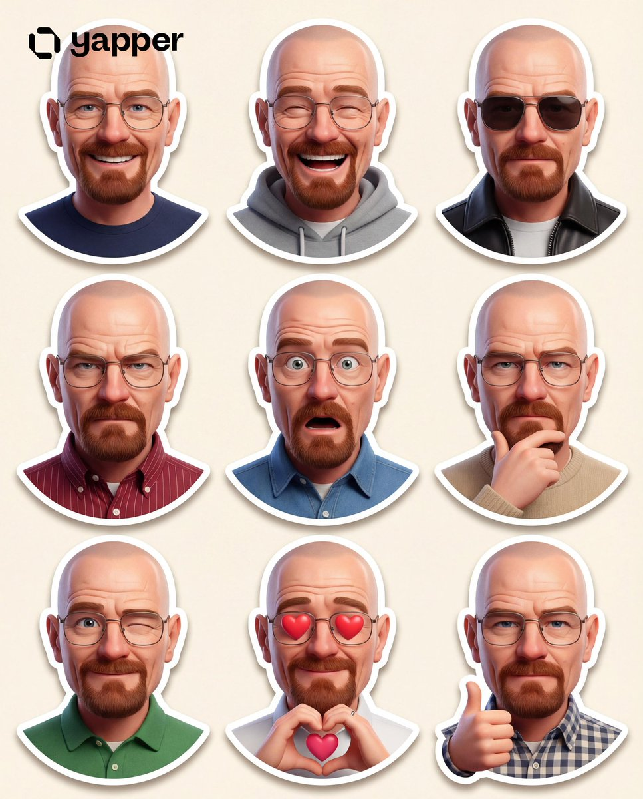
案例2750: Create a premium Pixar style 3D character sticker set that is...
Create a premium Pixar style 3D character sticker set that is clearly recognizable as the same person. Use the upload...
🎨 查看AI提示词
🇨🇳 中文提示词
创建一套高级皮克斯风格的 3D 人物贴纸集，且能明确识别为同一人。仅使用已上传图像作为唯一面部参考。 输出要求： 3×3 网格布局（共 9 张贴纸） 最终纵横比：4:5 超高分辨率（8K） 干净的奶油色背景 每枚贴纸之间留有明显间距 在每枚贴纸下方添加细微投影以增强层次感 角色身份（非常重要）： 必须保留已上传图像中精确的面部结构、发型、仪容细节和独特特征 保持高度相似度 不得过度美化或在识别上改...
🇬🇧 English Prompt
Create a premium Pixar-style 3D character sticker set that is clearly recognizable as the same person. Use the uploaded image as the ONLY facial reference. Output Requirements: 3×3 grid layout (9 stic...
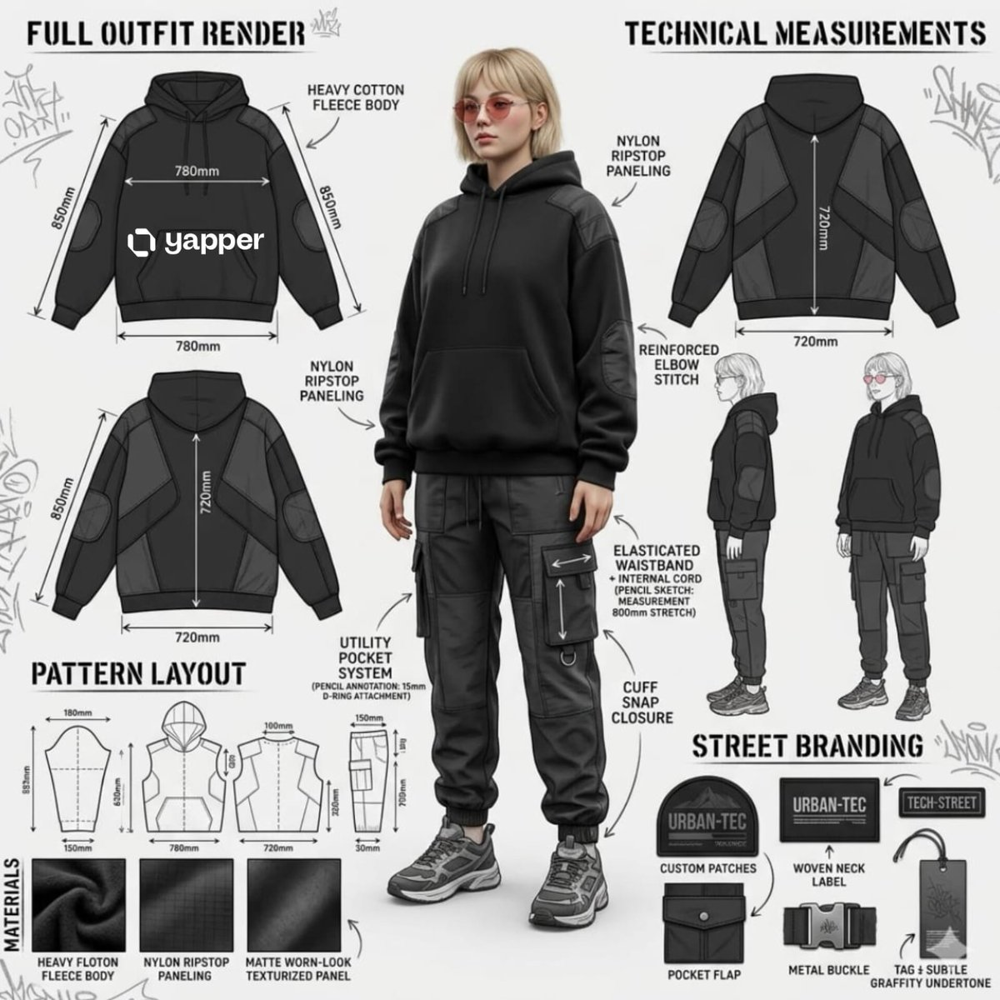
案例2738: Using the attached image, create a professional industrial fa...
Using the attached image, create a professional industrial fashion design illustration sheet for a high end streetwea...
🎨 查看AI提示词
🇨🇳 中文提示词
使用所附图像，创建一张专业的工业时尚设计说明页，展示高端街头服装。 居中英雄式全身3D渲染的现代都市造型（宽松连帽衫、工装裤、运动鞋），具备真实的面料物理效果、精细缝线和多层织物。柔和的影棚灯光、细腻阴影和高级编辑级质感。 围绕主体安排技术视图： 正面、背面、侧面、3/4 透视 平铺版型布局 包含草图： 面板分割（宽松裁剪） 缝线与接缝细节 弹性腰带、袖口、束绳 带毫米标注的尺寸箭头 材料（...
🇬🇧 English Prompt
Using the attached image, create a professional industrial fashion design illustration sheet for a high-end streetwear outfit. A centered heroic full-body 3D render of a modern urban look (oversized h...
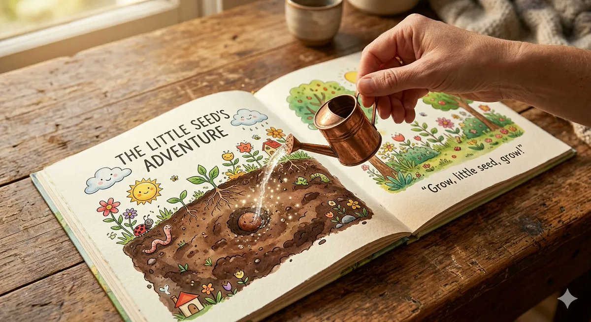
案例2725: "prompt": "An open children’s picture book rests on a wooden...
{ "prompt": "An open children’s picture book rests on a wooden table, showing a whimsical illustration of a small bro...
🎨 查看AI提示词
🇨🇳 中文提示词
{ "prompt": "一本打开的儿童图画书放在木桌上，展示着一幅童趣的插画：卡通土壤中的小棕色种子。一个真实的人手从小喷壶中倒水，水流闪闪发光。温暖的金色光线，魔幻的氛围，俯视特写，照片级真实，4K。", "style": "照片级真实", "lighting": "温暖的金色", "mood": "魔幻", "perspective": "俯视特写", "resolu...
🇬🇧 English Prompt
{ "prompt": "An open children’s picture book rests on a wooden table, showing a whimsical illustration of a small brown seed in cartoon soil. A realistic human hand pours water from a tiny can, with...
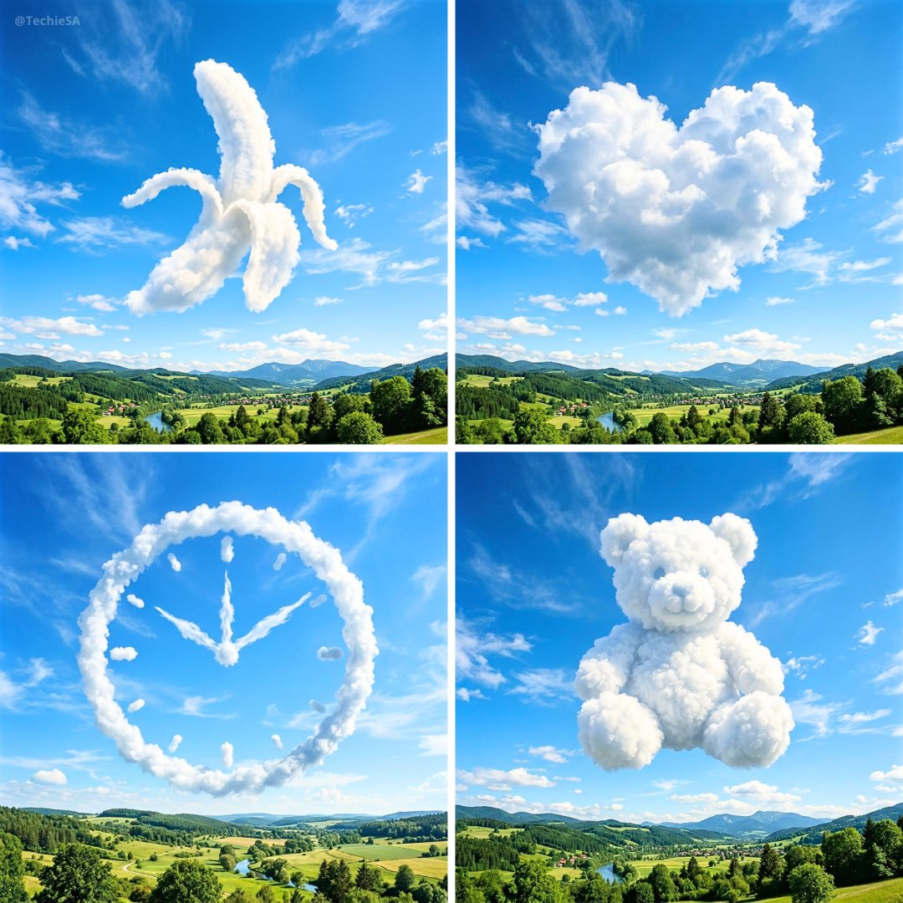
案例2718: Create an ultra realistic sky scene where soft, natural cloud...
Create an ultra realistic sky scene where soft, natural cloud formations organically assemble into the clear silhouet...
🎨 查看AI提示词
🇨🇳 中文提示词
创建一个超写实的天空场景，柔和、自然的云层有机地组合成一个清晰的[OBJECT]轮廓。该云形出现在明亮鲜艳的蓝天高空，自然地悬浮在下方可识别的自然景观之上。 构图为正方形（1080×1080），云层占据画面上部，而景观则在下方为场景提供稳固的基底。光线清晰、日光明亮，云朵上有阳光照射的高光，增强层次感、柔软感和真实感。 整体氛围应感觉宁静、乐观且视觉上引人注目，色彩饱和而丰富，营造干净、平和的...
🇬🇧 English Prompt
Create an ultra-realistic sky scene where soft, natural cloud formations organically assemble into the clear silhouette of a [OBJECT]. The cloud shape appears high in a vibrant blue sky, naturally flo...
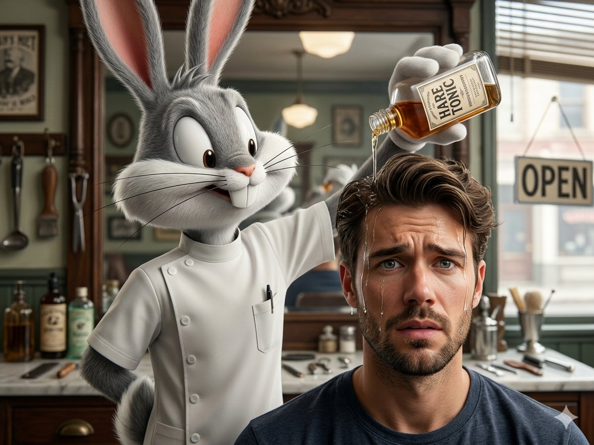
案例2715: Cinematic 8k hyper realistic close up shot. A 3D realistic Bu...
Cinematic 8k hyper realistic close up shot. A 3D realistic Bugs Bunny, faithful to his classic design but with detail...
🎨 查看AI提示词
🇨🇳 中文提示词
电影感 8K 超写实特写镜头。一个3D写实的兔八哥，忠于其经典设计但毛发质感细致，身穿白色理发师制服。他手持一瓶标有“HARE TONIC”的瓶子，正把液体倒在一名坐着的男子头上。该男子[照片参考：带头发]面露担忧和紧张表情，水从他的脸上滴落。复古理发店背景，带有镜子。动态灯光、高细节、照片级写实渲染风格。
🇬🇧 English Prompt
Cinematic 8k hyper-realistic close-up shot. A 3D realistic Bugs Bunny, faithful to his classic design but with detailed fur texture, wearing a white barber uniform. He is holding a bottle labeled "HAR...
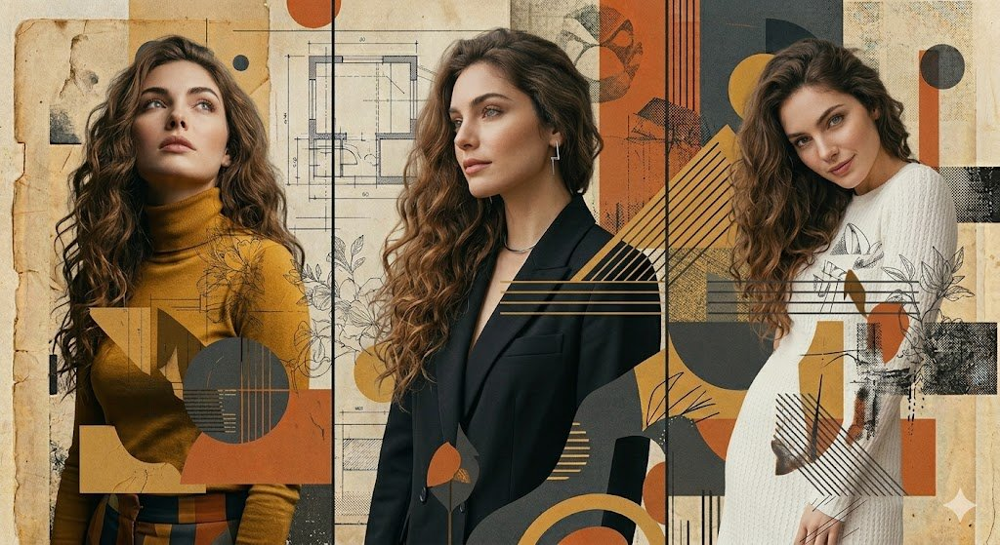
案例2709: A high resolution, photorealistic three panel composition fea...
A high resolution, photorealistic three panel composition featuring a woman with long, voluminous wavy brown hair and...
🎨 查看AI提示词
🇨🇳 中文提示词
一幅高分辨率、写实的三联画构图，描绘一位拥有长且蓬松波浪棕发与优雅面容的女性，融入抽象混合媒介拼贴背景中。 面板布局： 左侧面板（竖向，全高）： 一幅高挑的女性肖像，从戏剧性的角度向上凝视，身着芥末黄高领毛衣。电影感灯光突出她的面部和头发，具有强烈的阴影和层次感。 右上面板（正方形）： 一个近距离斜侧面特写，柔和地向右凝视，穿着黑色现代西装外套，配饰极简。表情平静且自信。 右下面板（正方形）...
🇬🇧 English Prompt
A high-resolution, photorealistic three-panel composition featuring a woman with long, voluminous wavy brown hair and elegant features, integrated into an abstract mixed-media collage background. Pane...
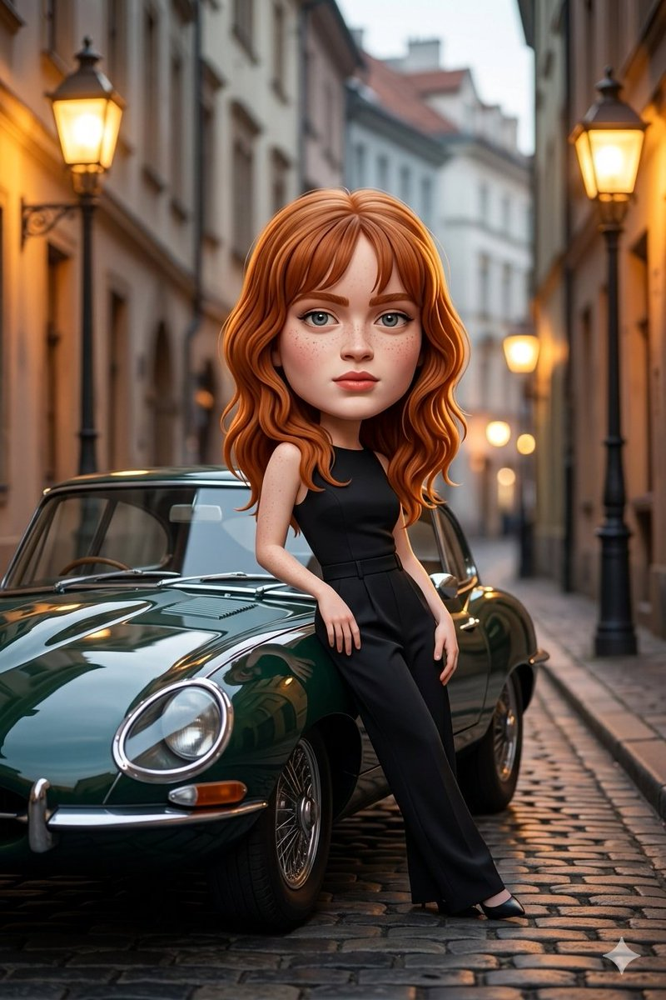
案例2708: Use the uploaded image as the primary subject reference. Tran...
Use the uploaded image as the primary subject reference. Transform the person into a stylized caricature with a sligh...
🎨 查看AI提示词
🇨🇳 中文提示词
使用上传的图像作为主要主体参考。将人物改造成风格化的漫画夸张形象，头部略大、身体较小，同时保留面部辨识度、表情、发型和关键特征。 将主体随意倚靠在一辆复古深绿色经典轿车上，场景位于一条狭窄的鹅卵石街道，两侧有温暖发光的路灯。保持放松、自信的姿势。 服装应与上传图像中的原始服装相匹配或自然地增强（如需适应场景可做适当调整）。保持材质纹理真实且细节丰富。 风格：3D 卡通写实，电影质感灯光，浅景深，超...
🇬🇧 English Prompt
Use the uploaded image as the primary subject reference. Transform the person into a stylized caricature with a slightly oversized head and a smaller body while preserving facial identity, expression,...
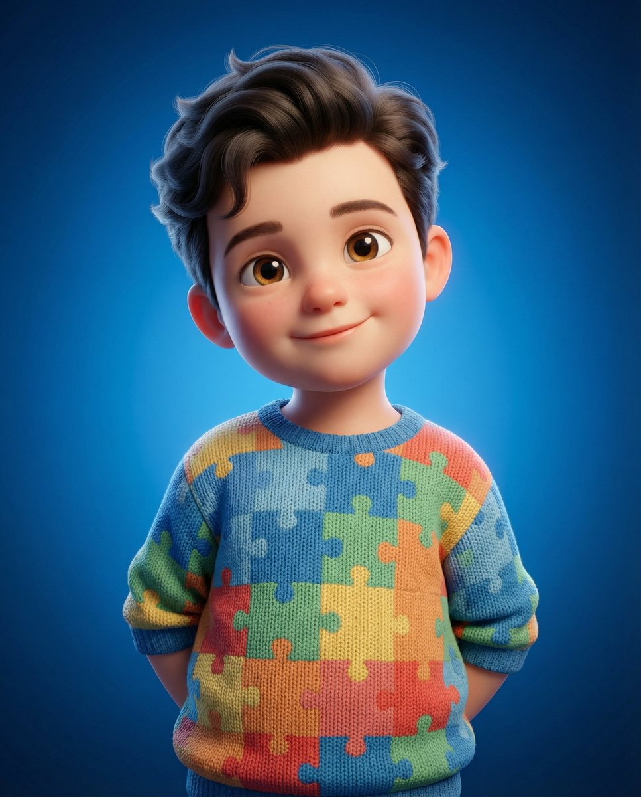
案例2707: soft, round face
soft, round face fuller cheeks small chin slightly larger, expressive eyes (but still identity consistent) no beard,...
🎨 查看AI提示词
🇨🇳 中文提示词
柔和、圆润的脸 较丰满的脸颊 小下巴 略大些、富有表现力的眼睛（但仍保持身份一致） 无胡须、无锐利下颌线、无成年特征 表情应天真、温暖且略带俏皮，带有柔和的微笑并进行直接的目光接触。 身体比例应可爱且儿童般（小巧、略胖的身体，头部略大）。 姿势：放松站立，双手置于背后，头部和肩膀带有细微自然倾斜以避免僵硬。 头发应与参考相符，但显得柔软、略有蓬松且自然造型，不要过于毛刺或人工化。 皮肤应柔和且风...
🇬🇧 English Prompt
soft, round face fuller cheeks small chin slightly larger, expressive eyes (but still identity-consistent) no beard, no sharp jawline, no adult features Expression should be innocent, warm, and slight...
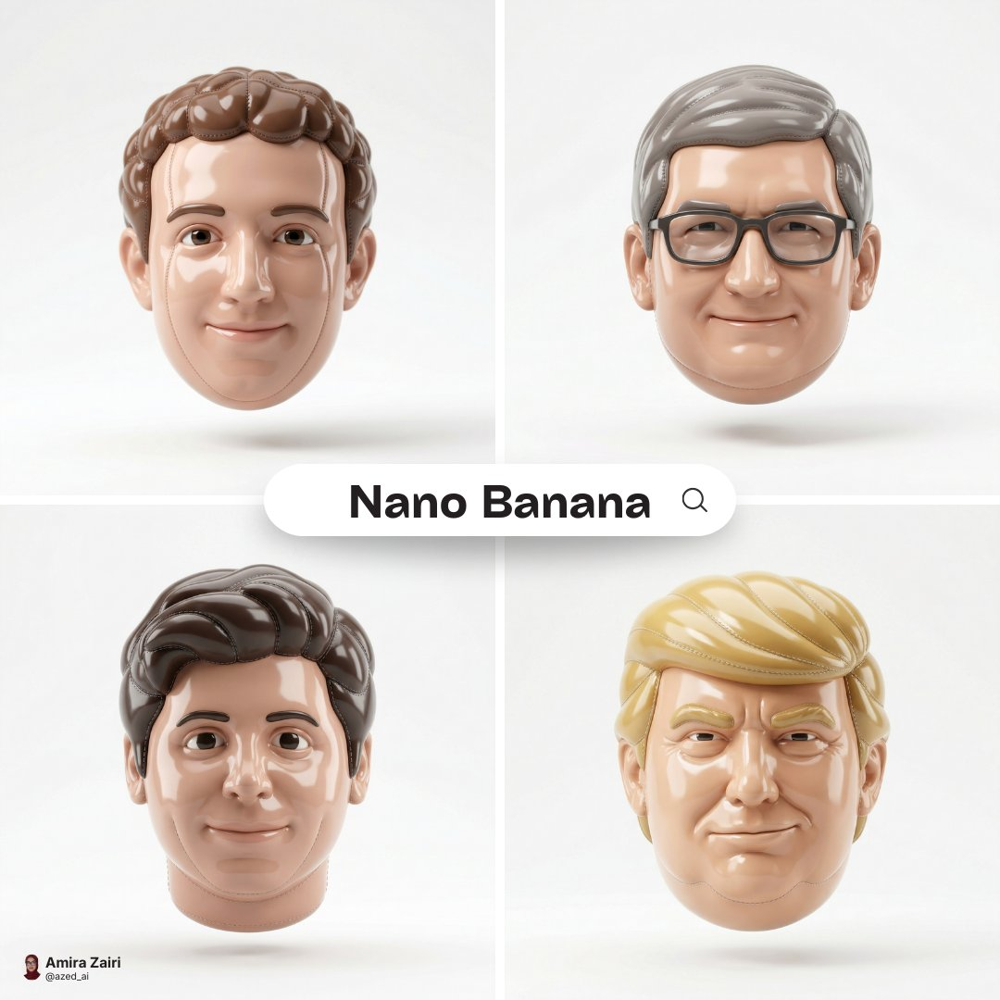
案例2702: [SUBJECT], made of smooth inflated glossy vinyl plastic, ultr...
[SUBJECT], made of smooth inflated glossy vinyl plastic, ultra realistic 3D render, soft pillowy contours with subtle...
🎨 查看AI提示词
🇨🇳 中文提示词
[SUBJECT]，由光滑、膨胀感的有光泽乙烯基塑料制成，超真实的3D渲染，柔软蓬松的轮廓，带有微妙的缝线面板接缝，略带圆润、玩具般的比例，高度抛光的表面，具有强烈的镜面高光，真实的材质深度感，柔和的摄影棚灯光，营造柔和的阴影与干净的反射，在纯净的浅灰色背景上方略微悬浮，极简构图，设计师收藏品美学，高端艺术玩具表面处理，高细节，居中构图，1:1纵横比。
🇬🇧 English Prompt
[SUBJECT], made of smooth inflated glossy vinyl plastic, ultra-realistic 3D render, soft pillowy contours with subtle stitched panel seams, slightly rounded toy-like proportions, highly polished surfa...
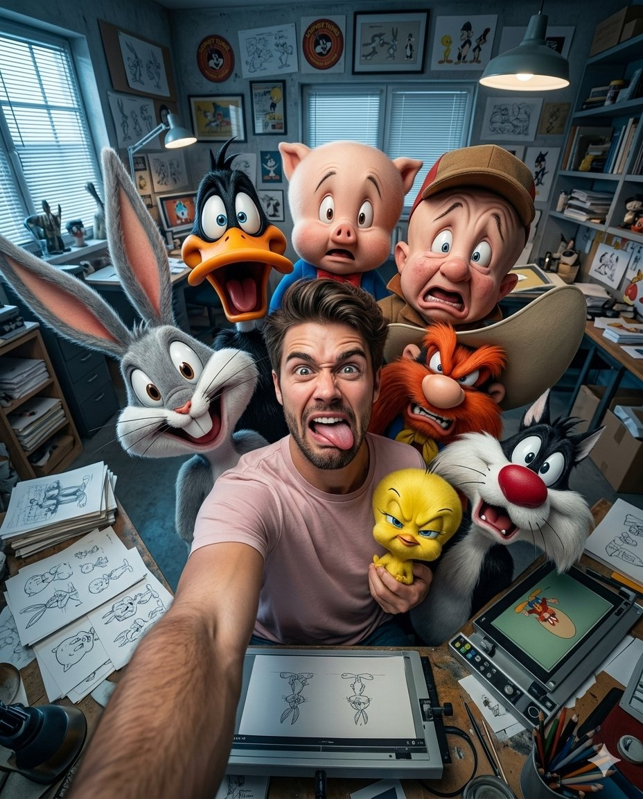
案例2695: Ultra realistic 4:5 vertical format ultra wide angle 13mm sel...
Ultra realistic 4:5 vertical format ultra wide angle 13mm selfie of me with Bugs Bunny, Daffy Duck, Porky Pig, Elmer...
🎨 查看AI提示词
🇨🇳 中文提示词
超真实 4:5 垂直格式，13mm 超广角自拍，与 Bugs Bunny、Daffy Duck、Porky Pig、Elmer Fudd、Yosemite Sam、Tweety、Sylvester 在我的工作室。我穿着淡粉色 T 恤。我们都做着滑稽、夸张的表情。高角度拍摄。极端广角镜头，无鱼眼畸变。真实、真人实拍的角色，非卡通，电影感灯光，所有真实角色与风格化写实融为一体。
🇬🇧 English Prompt
Ultra-realistic 4:5 vertical format ultra wide angle 13mm selfie of me with Bugs Bunny, Daffy Duck, Porky Pig, Elmer Fudd, Yosemite Sam, Tweety, Sylvester in my studio. I am wearing pale pink t-shirt....
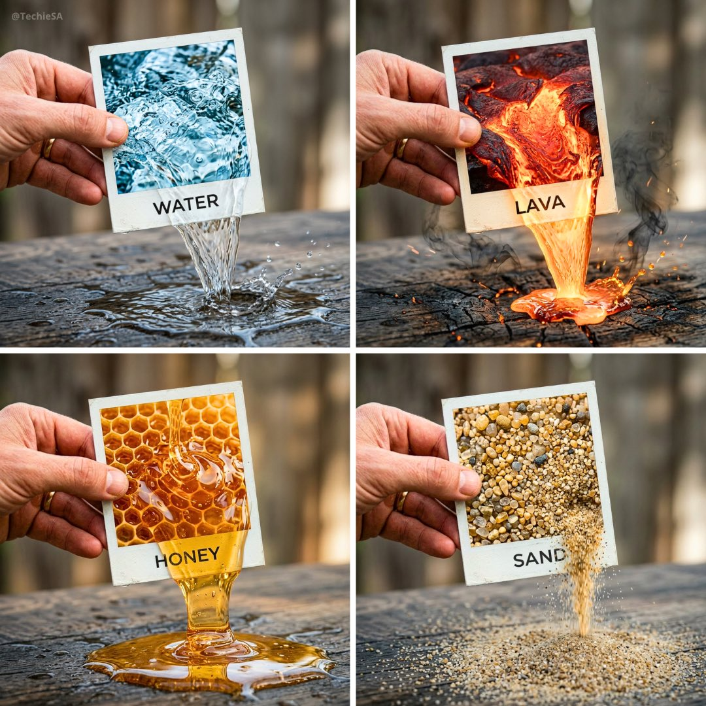
案例2692: A hyper realistic 3D photo concept showing a hand holding a s...
A hyper realistic 3D photo concept showing a hand holding a square polaroid photo labeled “ELEMENT”. Inside the photo...
🎨 查看AI提示词
🇨🇳 中文提示词
一个超写实的 3D 照片概念，展示一只手拿着一张方形宝丽来照片，照片上标有“ELEMENT”。照片内是 [ELEMENT] 的特写，并从照片框无缝流出进入现实世界，自然地与下方表面互动。“ELEMENT” 字样整洁地印在照片的白色边框上。真实的电影质感灯光、超精细的纹理、艺术性的构图，1080×1080 方形格式。
🇬🇧 English Prompt
A hyper-realistic 3D photo concept showing a hand holding a square polaroid photo labeled “ELEMENT”. Inside the photo, there’s a close-up of [ELEMENT], and it flows seamlessly out of the photo frame i...
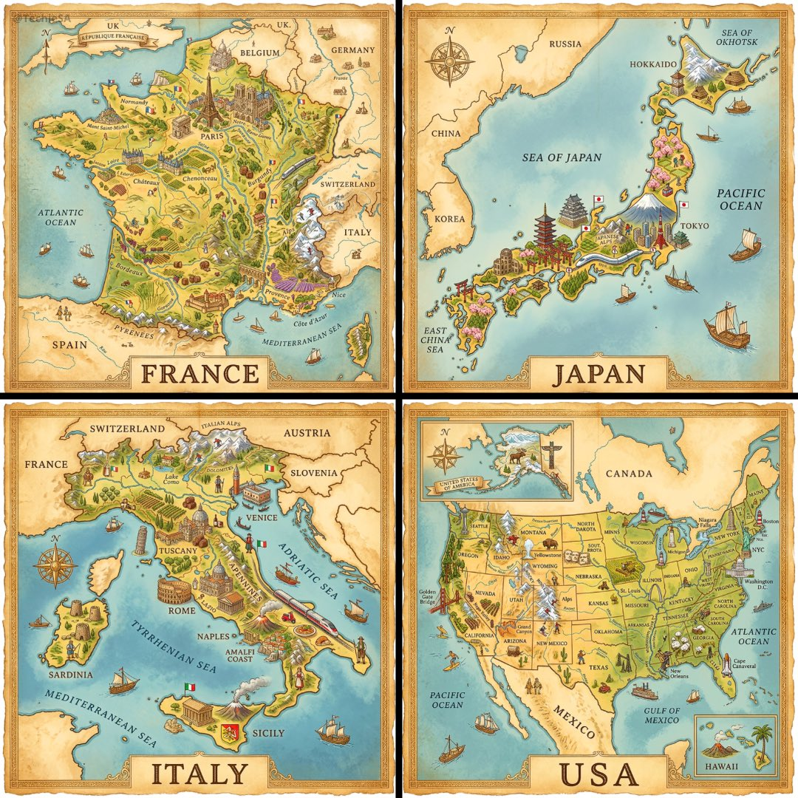
案例2687: A hand painted isometric bird’s eye view illustration of [COU...
A hand painted isometric bird’s eye view illustration of [COUNTRY] in a vintage map style, featuring iconic landmarks...
🎨 查看AI提示词
🇨🇳 中文提示词
一幅手绘的等距鸟瞰视角的 [COUNTRY] 插图，采用复古地图风格，展示该国独特的标志性地标和自然景观。景观应与羊皮纸色的地图背景无缝融合，并包含精细的微型建筑、文化符号和地理元素。国家名称 '[COUNTRY]' 应以加粗的衬线字体显示在场景下方。保持温暖的土色调和柔和的光线，以营造经典的插画式地图氛围。1080x1080 尺寸
🇬🇧 English Prompt
A hand-painted isometric bird’s-eye view illustration of [COUNTRY] in a vintage map style, featuring iconic landmarks and natural scenery unique to the country. The landscape should blend seamlessly w...
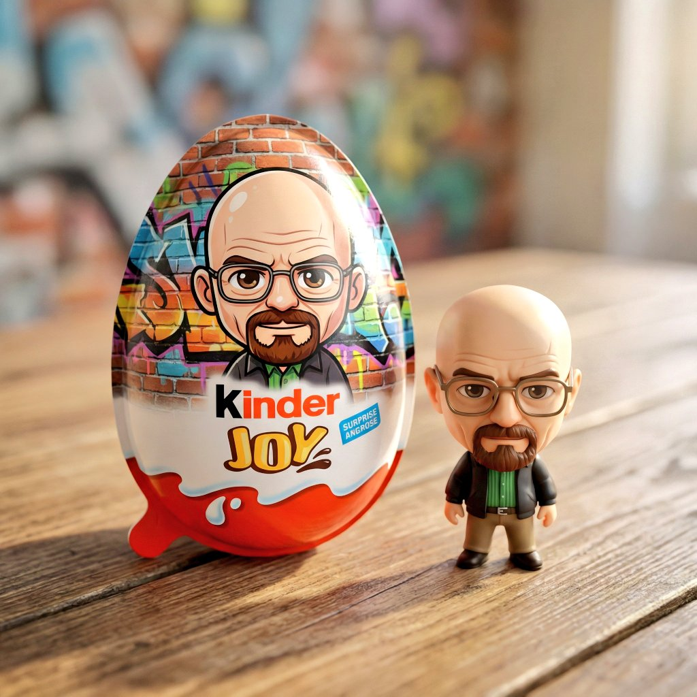
案例2685: A hyper realistic product photo of a Kinder Joy surprise egg...
A hyper realistic product photo of a Kinder Joy surprise egg sitting on a wooden table. The egg packaging features a...
🎨 查看AI提示词
🇨🇳 中文提示词
一张超写实的产品照片，画面为放在木制桌子上的 Kinder Joy 惊喜蛋。蛋的包装上有一幅 Q 版/卡通风格的 [image Uploaded] 插画，摆在涂鸦砖墙背景前。蛋旁边放着一个小巧精致的收藏手办，同样以包装上所示的 Q 版艺术风格呈现的 [image Uploaded]。柔和的自然光、浅景深、照片级逼真效果。
🇬🇧 English Prompt
A hyper-realistic product photo of a Kinder Joy surprise egg sitting on a wooden table. The egg packaging features a chibi/cartoon-style illustration of [image Uploaded] posed against a graffiti brick...
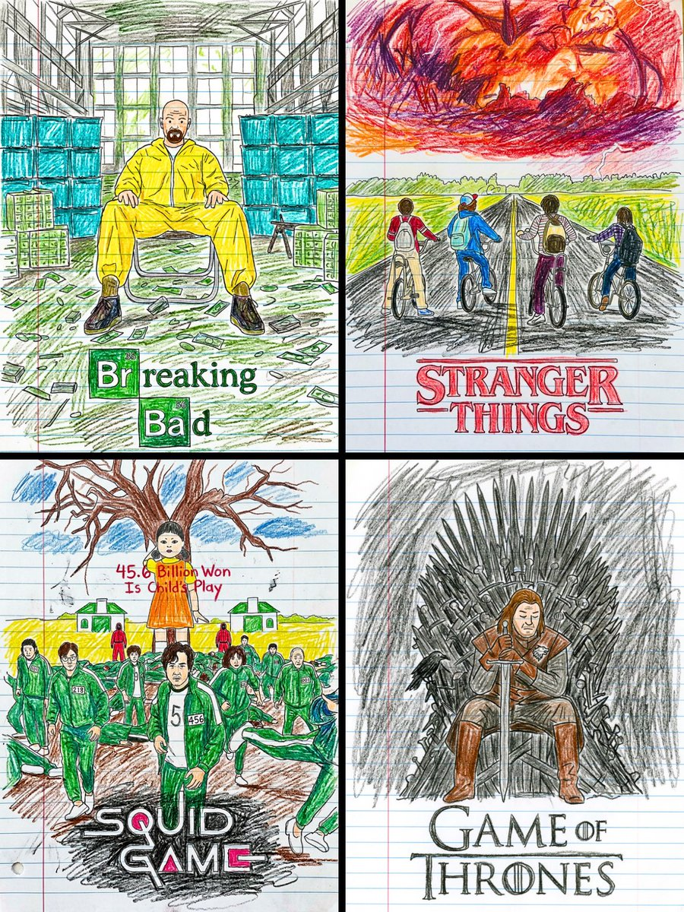
案例2684: Transform this movie poster into a child’s crayon drawing on...
Transform this movie poster into a child’s crayon drawing on lined notebook paper. Every compositional element, chara...
🎨 查看AI提示词
🇨🇳 中文提示词
将这幅电影海报转换为画在有横线笔记本纸上的儿童蜡笔画。每一个构图元素、角色姿势、字体、色彩方案和布局均与原作完全一致——只有艺术风格发生变化。以彩色铅笔和蜡笔绘制，线条颤抖不稳，着色参差不齐并略微越线，面部特征简化，解剖结构简化。背景被大量蜡笔涂画的涂抹笔触填满。横线笔记本纸在下面可见，包括红色边线。文字用颤抖的手绘蜡笔重写，位置与原始字体对应。作品为平面扫描，带有轻微的纸张纹理。
🇬🇧 English Prompt
Transform this movie poster into a child’s crayon drawing on lined notebook paper. Every compositional element, character pose, typography, color palette, and layout is preserved exactly as the origin...
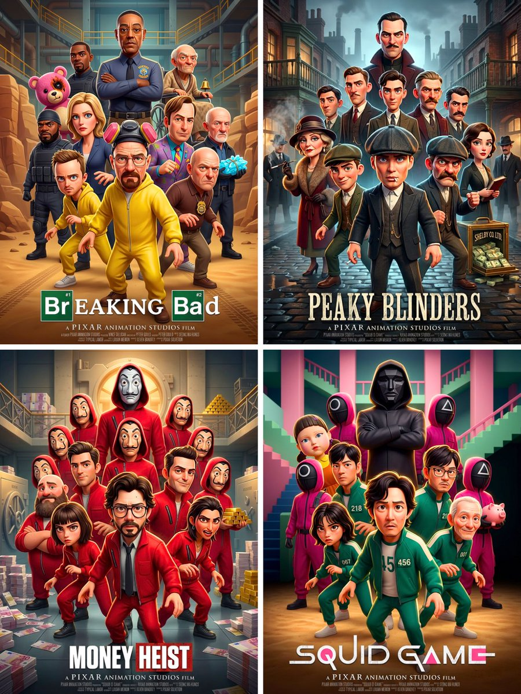
案例2682: Pixar 3D CGI animated movie poster style, ensemble cast featu...
Pixar 3D CGI animated movie poster style, ensemble cast featuring the most iconic and recognizable characters from [M...
🎨 查看AI提示词
🇨🇳 中文提示词
Pixar 风格的 3D CGI 动画电影海报风格，群星阵容，呈现来自 [MOVIE/SHOW] 的最具标志性和辨识度的角色，全部以 Pixar 风格的 3D 动画角色呈现，具有夸张、富有表情的面部、光滑风格化的皮肤、大眼睛、厚重的比例。角色自动选择为来自 [MOVIE/SHOW] 的最著名的英雄和反派。戏剧性分层构图：中央英雄置于正中前方，其他角色在背后呈扇形排列并摆出动态动作姿势。背景颜色自动...
🇬🇧 English Prompt
Pixar 3D CGI animated movie poster style, ensemble cast featuring the most iconic and recognizable characters from [MOVIE/SHOW], all rendered as Pixar-style 3D animated characters with exaggerated exp...
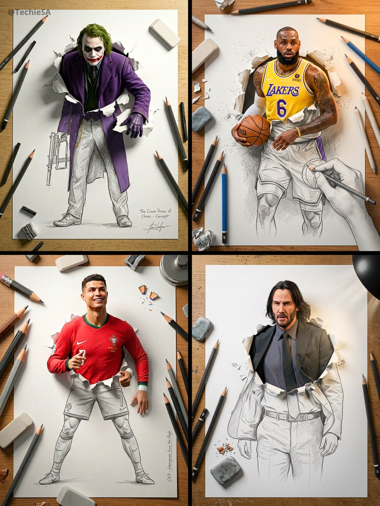
案例2679: A stunning Trompe L’oeil 3D composition, where the subject—us...
A stunning Trompe L’oeil 3D composition, where the subject—using an uploaded face as reference—appears to physically...
🎨 查看AI提示词
🇨🇳 中文提示词
一幅惊艳的 Trompe L’oeil 3D 构图，主体——以上传的面部作为参考——仿佛从一张干净的白色绘图纸上物理撕裂出来，从石墨素描中浮现到现实世界。主体的上半身以超写实的色彩和质感完整呈现，穿着与上传图像相同的服装，而下半身仍保持在纸上的二维铅笔素描。以航拍（俯视）视角使用24mm镜头拍摄，以捕捉整个绘图桌环境，包括散落的大号铅笔和橡皮擦。光线在纸面区域采用平坦的工作室光，而对浮现的三维人物...
🇬🇧 English Prompt
A stunning Trompe L’oeil 3D composition, where the subject—using an uploaded face as reference—appears to physically tear through a clean white drawing paper and emerge from a graphite sketch into the...
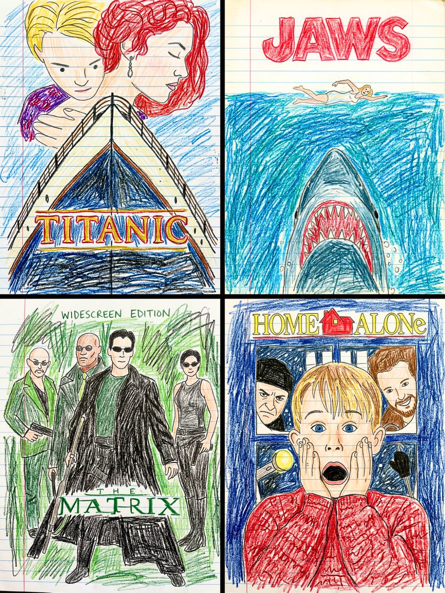
案例2678: Transform this movie poster into a child’s crayon drawing on...
Transform this movie poster into a child’s crayon drawing on lined notebook paper. Every compositional element, chara...
🎨 查看AI提示词
🇨🇳 中文提示词
将这张电影海报变成画在带横线笔记本纸上的儿童蜡笔画。每一个构图元素、人物姿势、排版、配色和布局都与原作完全一致——唯一改变的是艺术风格。用彩色铅笔和蜡笔绘制，线条颤抖不稳，着色不均且略微溢出线外，面部特征简单，解剖结构简化。背景用粗重的蜡笔涂鸦笔触填满。下面可见带横线的笔记本纸，包括红色边线。文字用颤抖的手写蜡笔重绘，位置与原字体摆放相匹配。绘画为平面扫描，带有轻微的纸张质感。
🇬🇧 English Prompt
Transform this movie poster into a child’s crayon drawing on lined notebook paper. Every compositional element, character pose, typography, color palette, and layout is preserved exactly as the origin...
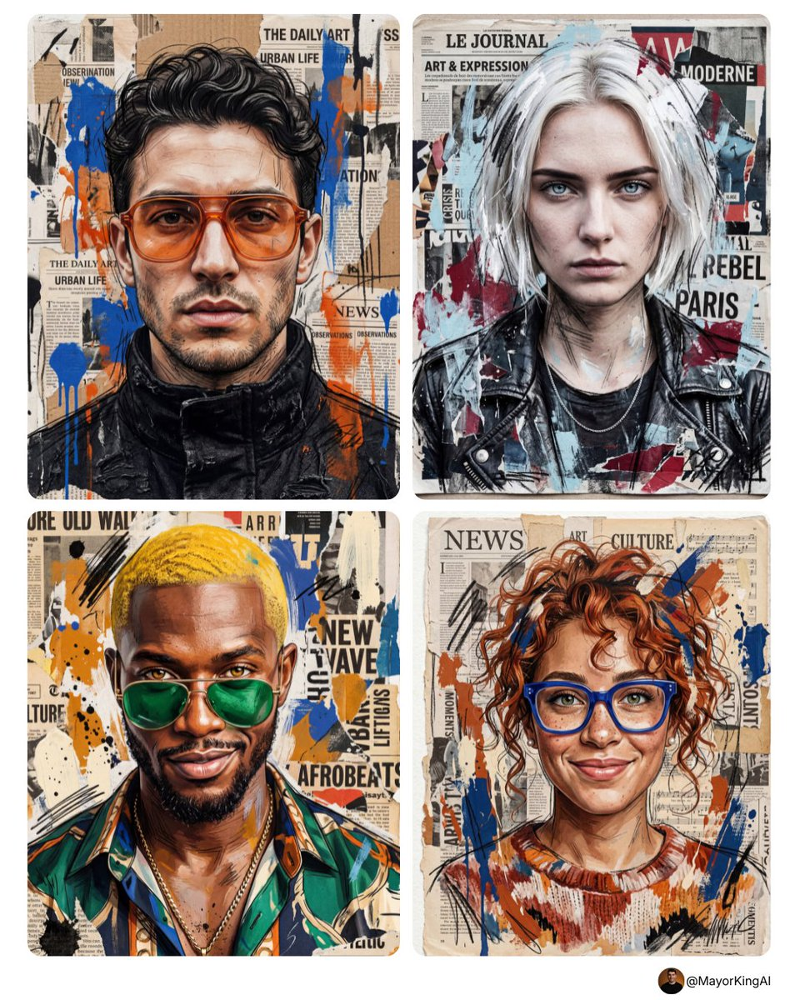
案例2670: Mixed media portrait of [SUBJECT], [EXPRESSION], [GAZE DIRECT...
Mixed media portrait of [SUBJECT], [EXPRESSION], [GAZE DIRECTION], with [ACCESSORY/STYLING], realistic identity, blac...
🎨 查看AI提示词
🇨🇳 中文提示词
混合媒介肖像，描绘[SUBJECT]，[EXPRESSION]，[GAZE DIRECTION]，配有[ACCESSORY/STYLING]，真实身份感，黑色速写笔触，撕裂报纸拼贴，丙烯颜料飞溅，编辑印刷纹理，融合写实与抽象表现主义，优质海报美学，触感手工质感，高对比度，面部与眼睛超细致，[PRIMARY COLORS]和[SECONDARY COLORS]
🇬🇧 English Prompt
Mixed-media portrait of [SUBJECT], [EXPRESSION], [GAZE DIRECTION], with [ACCESSORY/STYLING], realistic identity, black sketch strokes, torn newspaper collage, acrylic paint splashes, editorial print t...
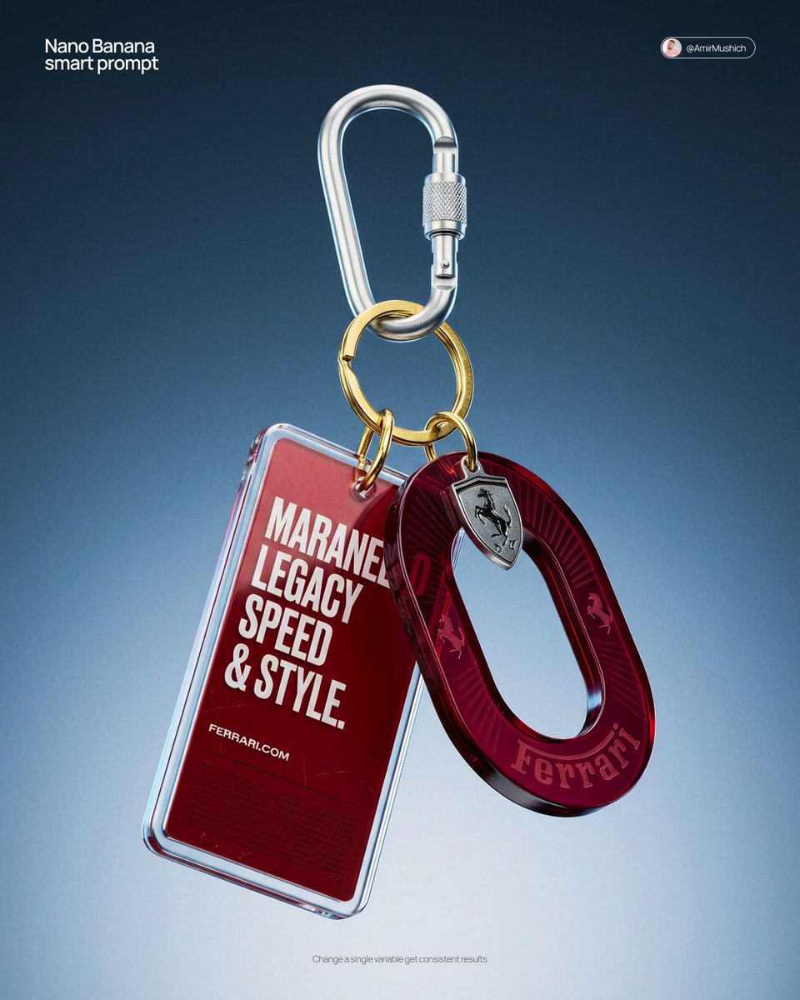
案例2669: [BRAND NAME]
[BRAND NAME] Act as a High End CGI Product Photographer and 3D Render Artist specializing in streetwear merch and lim...
🎨 查看AI提示词
🇨🇳 中文提示词
[BRAND NAME] Act as a High-End CGI Product Photographer and 3D Render Artist specializing in streetwear merch and limited-edition collectibles. PHASE 1: 概念与对象 创建一张真实感 CGI 产品照，呈现一套高端钥匙扣，悬浮于中空，背景为中性渐变...
🇬🇧 English Prompt
[BRAND NAME] Act as a High-End CGI Product Photographer and 3D Render Artist specializing in streetwear merch and limited-edition collectibles. PHASE 1: CONCEPT & OBJECT Create a photorealistic CGI ...
![Ultra realistic 3D miniature diorama of a [BRAND NAME] enviro...](../images/tweet-2036427989718802509-1.jpg)
案例2664: Ultra realistic 3D miniature diorama of a [BRAND NAME] enviro...
Ultra realistic 3D miniature diorama of a [BRAND NAME] environment built inside a giant [ICONIC OBJECT OF BRAND], sho...
🎨 查看AI提示词
🇨🇳 中文提示词
超写实的3D微型场景模型，展示了一个构建在巨型[品牌标志性物品]内部的[品牌名称]环境，以干净的剖面图或部分切开的视角呈现，揭示出一个精细的内部世界。 在结构内部，存在一个完全细节化的微型[品牌特定环境：商店 / 咖啡馆 / 餐厅 / 展厅]，有逼真的人类活动，例如员工工作、顾客互动，以及自然的叙事瞬间。 该[物体]既充当容器又作为环境，其材料和元素被整合进建筑中（例如，层次、纹理、表面形成地...
🇬🇧 English Prompt
Ultra-realistic 3D miniature diorama of a [BRAND NAME] environment built inside a giant [ICONIC OBJECT OF BRAND], shown in a clean cross-section or partially cut-open view revealing a detailed interio...
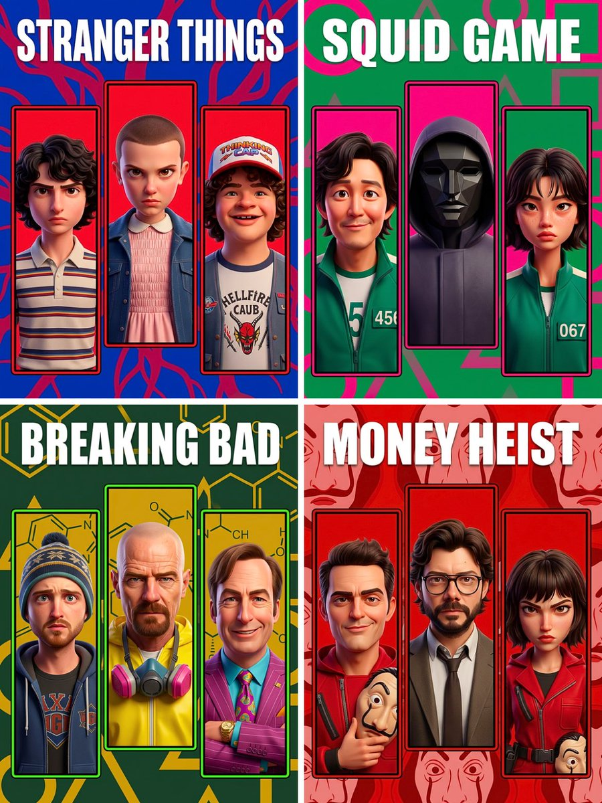
案例2645: Pixar/Disney 3D CGI animated movie poster. Soft volumetric li...
Pixar/Disney 3D CGI animated movie poster. Soft volumetric lighting, smooth subsurface skin shading, expressive Pixar...
🎨 查看AI提示词
🇨🇳 中文提示词
皮克斯/迪士尼 3D CGI 动画电影海报。柔和的体积光照、平滑的皮下散射皮肤着色、富有表现力的皮克斯风格面部、精致的工作室级渲染质量。纵向海报，3:4 比例。 剧集/电影：[SHOW/MOVIE] 自动挑选 [SHOW/MOVIE] 中最具代表性的 3 位角色。将每位渲染为皮克斯风格的 3D CGI 角色，具有可识别的肖像特征，身着他们最具标志性的单套服装。 标题 — 锁定： 将剧名置于最顶端。...
🇬🇧 English Prompt
Pixar/Disney 3D CGI animated movie poster. Soft volumetric lighting, smooth subsurface skin shading, expressive Pixar-style faces, polished studio render quality. Vertical poster, 3:4 ratio. Show/Movi...
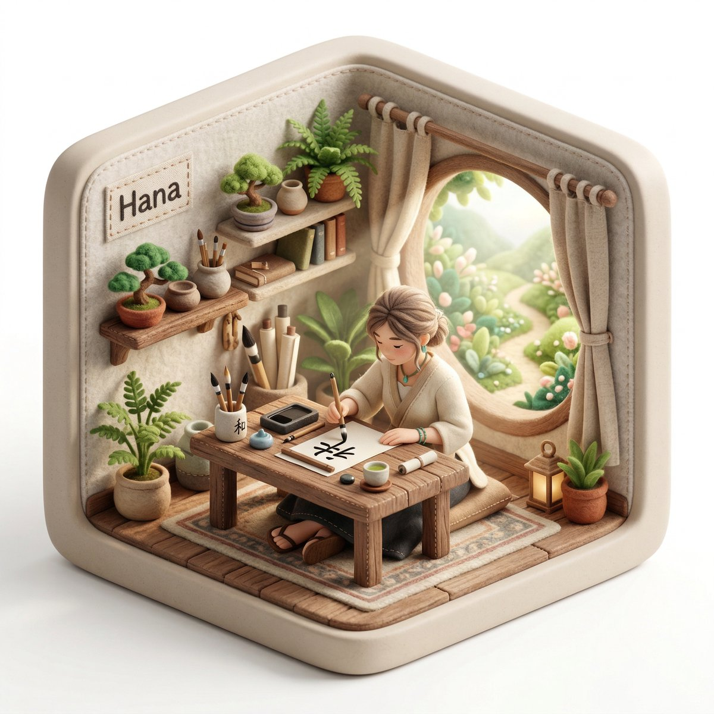
案例2638: Create a 3D isometric diorama illustration of an original cha...
Create a 3D isometric diorama illustration of an original character named [CHARACTER NAME], peacefully working or pra...
🎨 查看AI提示词
🇨🇳 中文提示词
创建一个以原始角色 [CHARACTER NAME] 为主体的 3D 等距微缩场景插图，角色在受自然启发的环境中宁静地工作或进行创作活动，坐在靠近一扇大开窗的木桌旁，阳光流入，窗外可见柔和的绿植。 角色应以 [ARCHETYPE / PROFESSION – 例如：作家、画家、冥想者、书法家、茶艺师] 为灵感，具有独特的视觉形象，包括柔和、天然的服饰、有机质感以及沉静内省的性格。 整个场景必须...
🇬🇧 English Prompt
Create a 3D isometric diorama illustration of an original character named [CHARACTER NAME], peacefully working or practicing a creative activity in a nature-inspired environment, sitting at a wooden d...
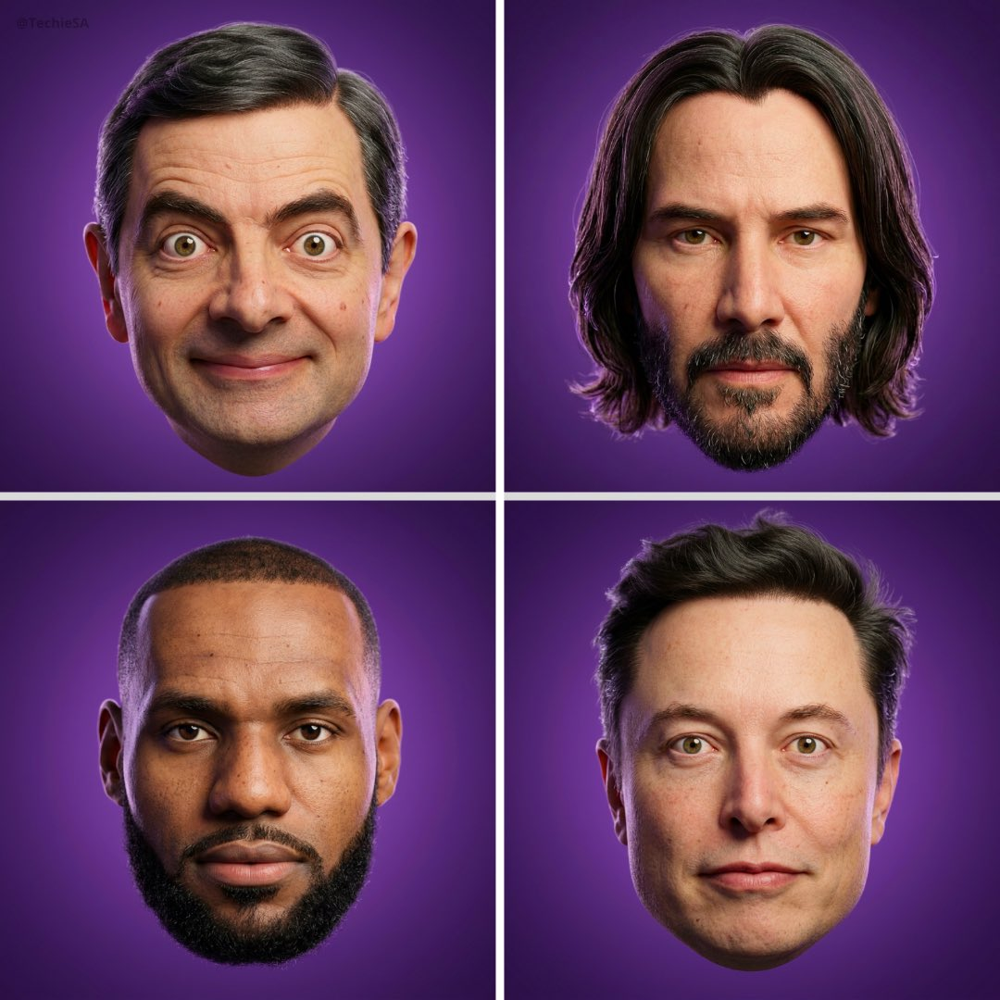
案例2623: Ultra detailed stylized 3D portrait using the provided refere...
Ultra detailed stylized 3D portrait using the provided reference photo lebron james as the exact facial base. Preserv...
🎨 查看AI提示词
🇨🇳 中文提示词
使用提供的参考照片 勒布朗·詹姆斯 作为精确面部基础，制作超细致风格化3D肖像。 完美保留该人物——面部形状、骨骼结构、下颌线、眼睛、鼻子、嘴唇、肤色、痕迹、雀斑、表情和比例完全一致。 绝对不要以任何方式修改面部身份。 仅转换为高端风格化3D写实。 头部与元素： 仅浮空头部（无颈、无肩、无身体） 严格保留参考图中人物头上所有物件——相同发型、相同发长与发质、相同帽子、帽檐、太阳镜、眼镜、耳机或任...
🇬🇧 English Prompt
Ultra-detailed stylized 3D portrait using the provided reference photo lebron james as the exact facial base. Preserve the person perfectly — identical face shape, bone structure, jawline, eyes, nose,...

案例2618: A masterpiece by a world renowned master of grain painting, i...
A masterpiece by a world renowned master of grain painting, in the maximalist style of Zhou Zhijiang. Five grains are...
🎨 查看AI提示词
🇨🇳 中文提示词
这是一位世界知名的谷物绘画大师的杰作，以周志江的极繁风格创作。以黄小米为背景，五种谷物排列成一只边境牧羊犬。利用谷物的天然色彩以及其排列所营造出的立体效果，使画作更加鲜活。高分辨率、细致渲染、超高清、最佳质量。
🇬🇧 English Prompt
A masterpiece by a world-renowned master of grain painting, in the maximalist style of Zhou Zhijiang. Five grains are arranged to resemble a Border Collie against a yellow millet background. The use o...
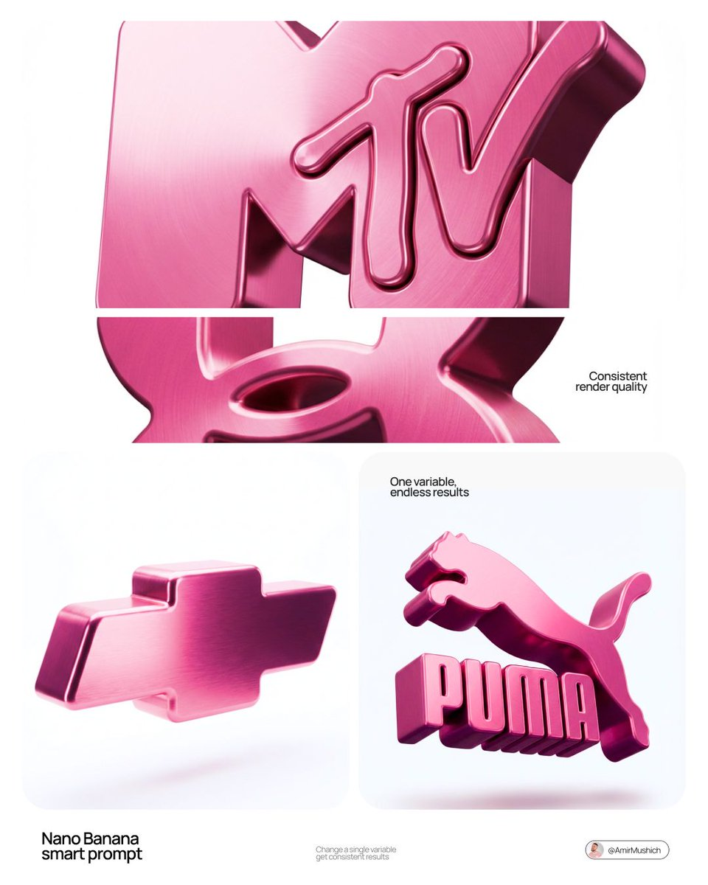
案例2616: [BRAND NAME]. Act as a 3D Product Visualization Artist.
[BRAND NAME]. Act as a 3D Product Visualization Artist. PHASE 1: LOGO TO 3D OBJECT Take the [BRAND NAME] logo and tra...
🎨 查看AI提示词
🇨🇳 中文提示词
[BRAND NAME]。担任一名 3D 产品可视化艺术家。 PHASE 1: LOGO TO 3D OBJECT 将 [BRAND NAME] 标志转换为厚重的 3D 雕塑形式。简化为核心形状，添加圆角（8-12mm），做成一个整体实心件，深度为 40-60mm。保持可识别性。 PHASE 2: PINK METALLIC MATERIAL - 颜色：粉红金属（#C85A8E 至 #8B...
🇬🇧 English Prompt
[BRAND NAME]. Act as a 3D Product Visualization Artist. PHASE 1: LOGO TO 3D OBJECT Take the [BRAND NAME] logo and transform it into a thick 3D sculptural form. Simplify to core shape, add rounded ed...
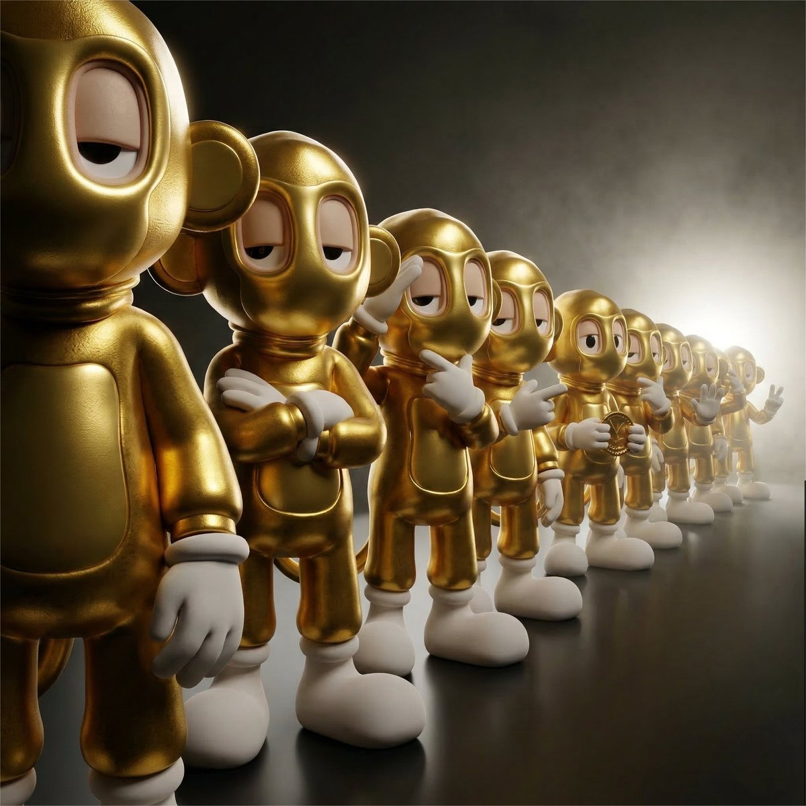
案例2614: A detailed, collectible style 3D render of a linear processio...
A detailed, collectible style 3D render of a linear procession of twelve identical figures, viewed in a dynamic diago...
🎨 查看AI提示词
🇨🇳 中文提示词
详尽、收藏级风格的 3D 渲染，呈现一排线性队列的十二个相同人形，采用动态的对角 3/4 透视沿队列向远处延展。 这些人形排列在深色渐变的影棚地面上，景深逐渐变浅，使最远端的角色细节较少。 具体姿势序列： 队列必须沿线遵循一个明确的姿势序列： 第一位且最近的角色双臂垂于两侧站立。 第二位角色双臂交叉于胸前站立。 第三位角色一只手抬起敬礼或挥手。 随后向后退的角色采用不同的姿势。 光线与氛...
🇬🇧 English Prompt
A detailed, collectible-style 3D render of a linear procession of twelve identical figures, viewed in a dynamic diagonal 3/4 perspective down the line. The figures are arranged on a dark, gradient st...
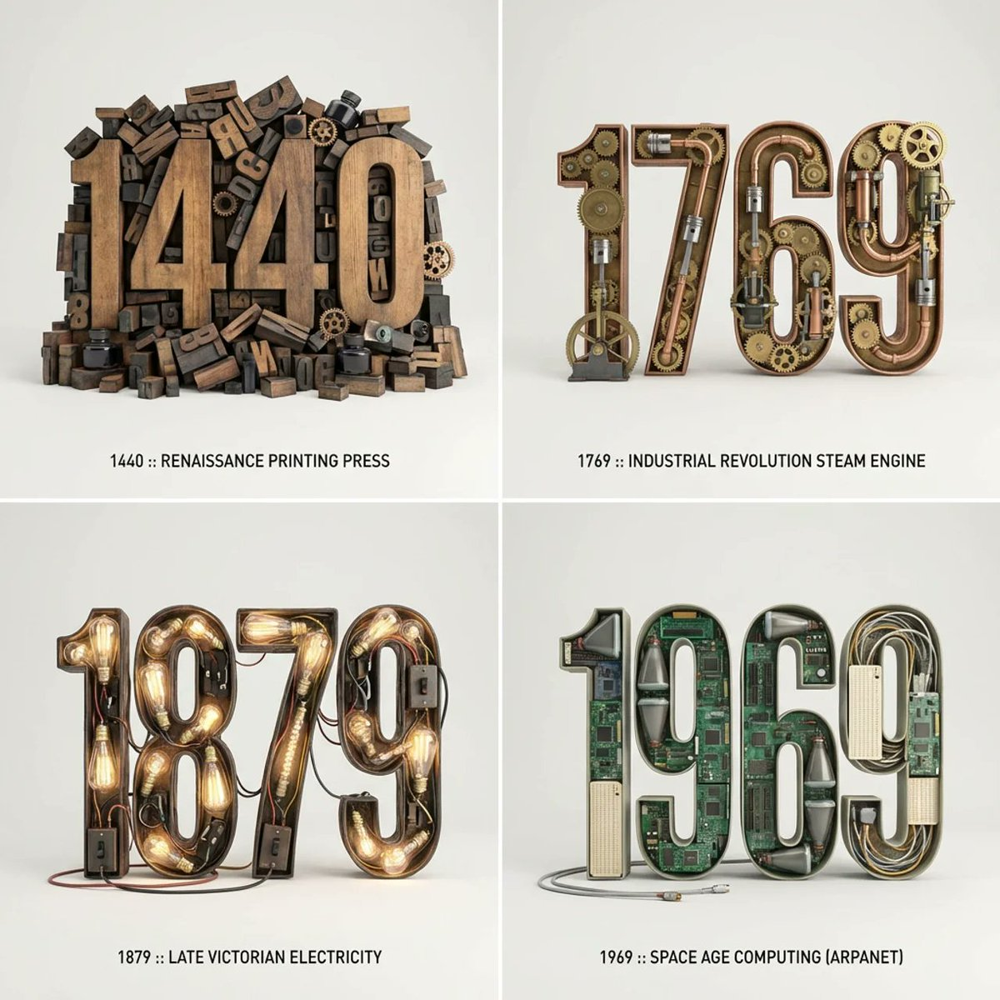
案例2609: 2x2 grid, do this for 4 important years in history and their...
2x2 grid, do this for 4 important years in history and their most important inventions { Anchor: [Letter/Number] :: [...
🎨 查看AI提示词
🇨🇳 中文提示词
2x2 网格，对历史上四个重要年份及其最重要的发明执行此操作 { 锚点: `[字母/数字] :: [时代/主题（例如，1980s 复古科技 / 维多利亚蒸汽朋克)]::4` 形态学: `3D 字体雕塑 [字母/数字]，字符形状由密集堆叠的 [时代/主题] 对象定义，混乱但易辨识的组合，图形设计资源::3` 材料物理: `[时代/主题] 对象的纹理（塑料、锈迹、木材），堆叠物之间的遮挡，构成字形的组...
🇬🇧 English Prompt
2x2 grid, do this for 4 important years in history and their most important inventions { Anchor: `[Letter/Number] :: [Era/Theme (e.g., 1980s Retro Tech / Victorian Steampunk)]::4` Morphology...
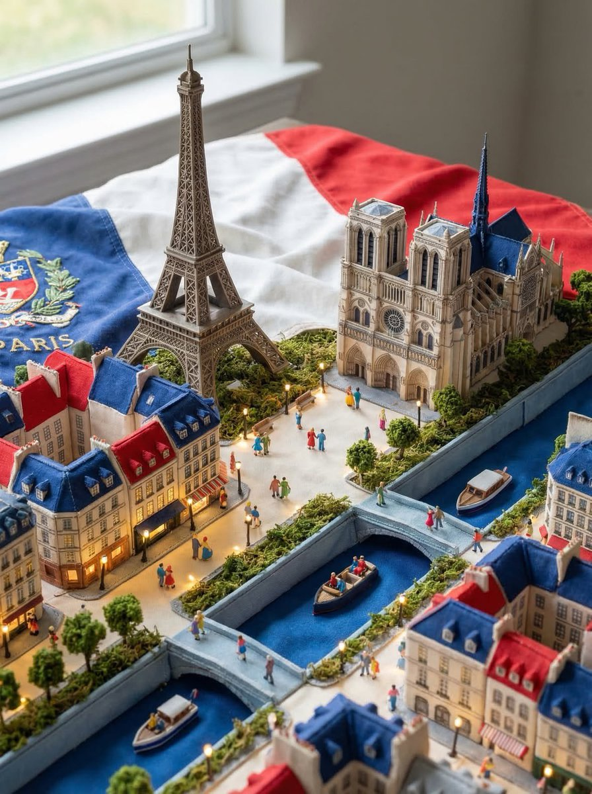
案例2607: Photorealistic hero product photography shot on Sony A7III wi...
Photorealistic hero product photography shot on Sony A7III with 85mm f/1.4 lens at f/2.8, soft natural daylight from...
🎨 查看AI提示词
🇨🇳 中文提示词
写实主打产品摄影，使用 Sony A7III，85mm f/1.4 镜头，光圈 f/2.8，左上方柔和自然日光营造出细腻逼真的阴影和可见的表面纹理：一个剖开的 [PARIS] 旗帜被巧妙地改造成一个奢华的微型地标城市。织物形成了标志性建筑、河流和发光的街道。穿着色彩鲜艳小巧服装的微型游客在游览纪念碑、乘船和拍照。细节复杂，物理上可信却带有超现实感。为奢侈建筑杂志封面拍摄，超精细 8K，完美居中的方...
🇬🇧 English Prompt
Photorealistic hero product photography shot on Sony A7III with 85mm f/1.4 lens at f/2.8, soft natural daylight from upper left creating gentle realistic shadows and visible surface textures: A cutawa...
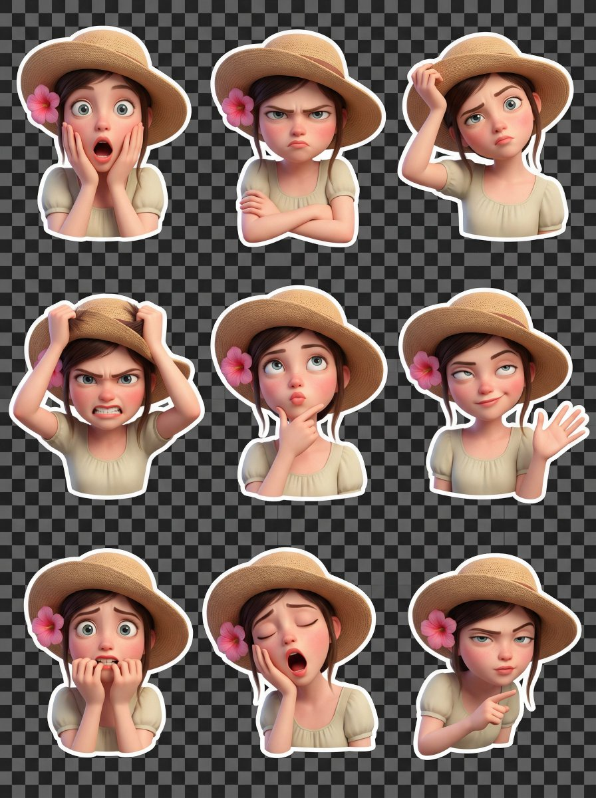
案例2598: Using the uploaded selfie as the ONLY and exclusive face refe...
Using the uploaded selfie as the ONLY and exclusive face reference, generate a Pixar style 3D character sticker set....
🎨 查看AI提示词
🇨🇳 中文提示词
使用上传的自拍照作为唯一且排他的人脸参考，生成一套皮克斯风格的3D角色贴纸。角色必须清晰可辨认为自拍照中的本人。创建一个整洁的3×3网格拼贴（共九个贴纸）。最终长宽比严格为4:5。每个单元格展示不同的姿势和面部表情。风格和基调：皮克斯风格的3D动画，带有表情包导向的感觉。夸张、略显荒诞的情绪，戏谑式的过度表演。 在小尺寸下也高度可读的表情，眼睛、眉毛和嘴巴要富有表现力。必要时可有细微的手部动作。...
🇬🇧 English Prompt
Using the uploaded selfie as the ONLY and exclusive face reference, generate a Pixar-style 3D character sticker set. The character must be clearly recognizable as the person from the selfie. Create a ...
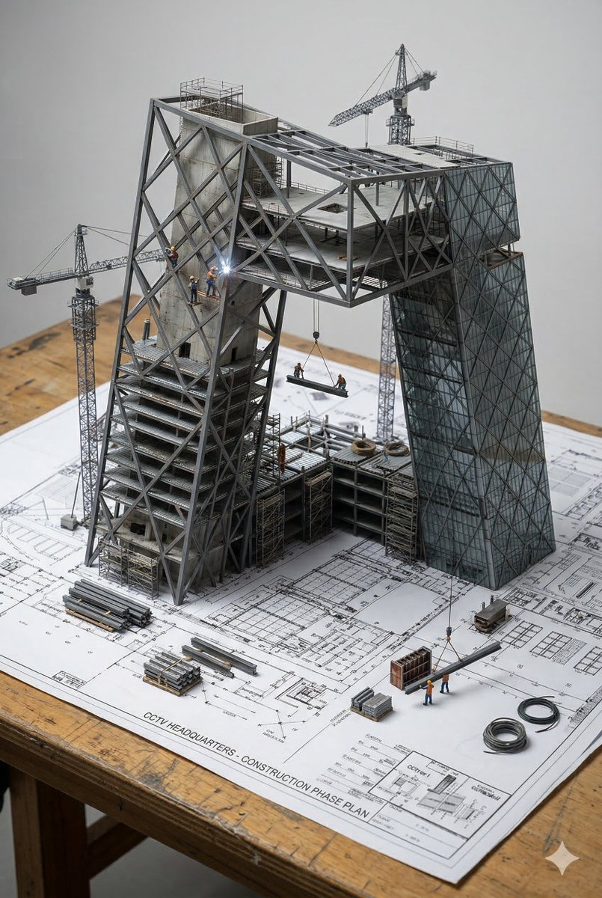
案例2594: An architectural blueprint of {BUILDING NAME} placed on a {SU...
An architectural blueprint of {BUILDING NAME} placed on a {SURFACE}, with a photorealistic miniature under constructi...
🎨 查看AI提示词
🇨🇳 中文提示词
一个放置在 {SURFACE} 上的 {BUILDING_NAME} 的建筑蓝图，随着一个逼真写实、正在施工中的 {BUILDING_NAME} 的迷你模型从中显现出来——{STRUCTURAL_ELEMENT_1}、{STRUCTURAL_ELEMENT_2}、{STRUCTURAL_ELEMENT_3}、{CONSTRUCTION_DETAIL}、{WORKER_SCENE}、{MATERIA...
🇬🇧 English Prompt
An architectural blueprint of {BUILDING_NAME} placed on a {SURFACE}, with a photorealistic miniature under-construction version of {BUILDING_NAME} emerging from it — {STRUCTURAL_ELEMENT_1}, {STRUCTURA...
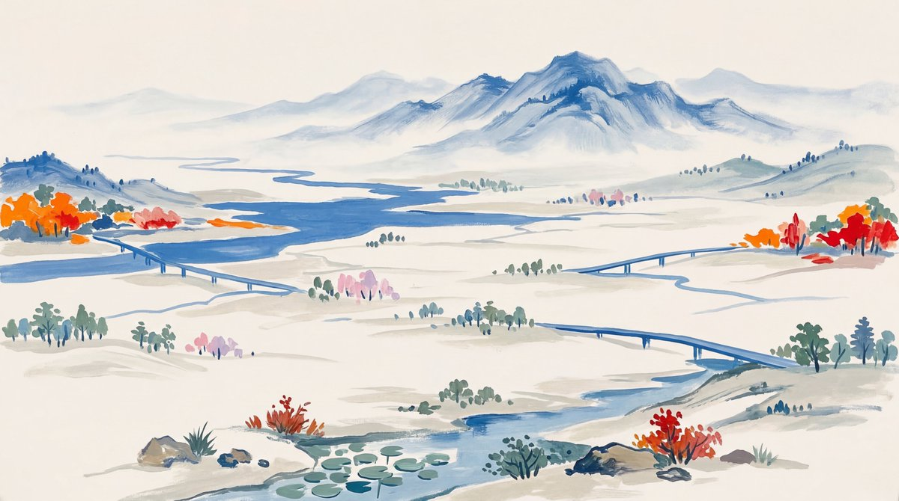
案例2590: 使用以 f6f4f0 为主背景， 2d6dc3 为主蓝色，同时也包含一些橙色元素，制作了一张山水远景风景画。
使用以 f6f4f0 为主背景， 2d6dc3 为主蓝色，同时也包含一些橙色元素，制作了一张山水远景风景画。
🎨 查看AI提示词
🇨🇳 中文提示词
使用以 #f6f4f0 为主背景，#2d6dc3 为主蓝色，同时也包含一些橙色元素，制作了一张山水远景风景画。
🇬🇧 English Prompt
Using #f6f4f0 as the primary background, #2d6dc3 as the main blue, and also including some orange elements, a distant-view landscape painting of mountains and water was created.
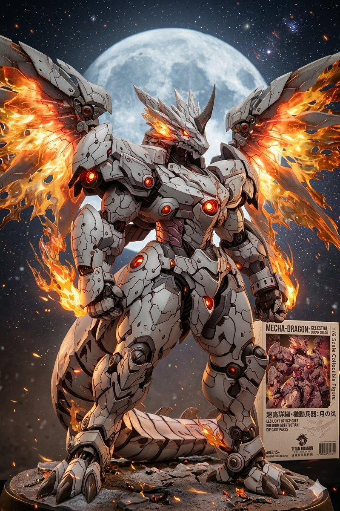
案例2589: 1,200 yen (tax included)
1,200 yen (tax included) AIart nanobanana https://t.co/Tzdx3Dsg0t
🎨 查看AI提示词
🇨🇳 中文提示词
1,200日元（含税） #AI艺术 #nanobanana https://t.co/Tzdx3Dsg0t
🇬🇧 English Prompt
1,200 yen (tax included) #AIart #nanobanana https://t.co/Tzdx3Dsg0t
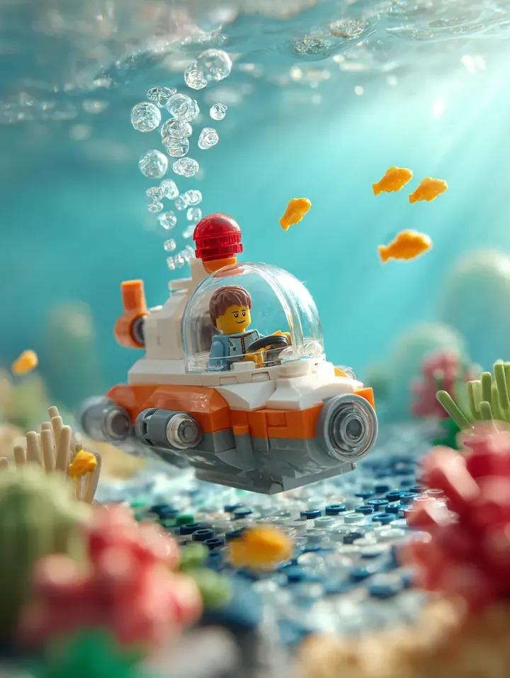
案例2584: Surrounding the submarine are multiple small bright yellow LE...
Surrounding the submarine are multiple small bright yellow LEGO fish swimming at different depths, with several air b...
🎨 查看AI提示词
🇨🇳 中文提示词
潜水艇周围有多只小巧亮黄色的 LEGO 鱼游动在不同深度，几颗气泡清晰地向上升起。海底由 LEGO 积木组成，包括有纹理的沙地、蓝色砖片以及红色、绿色和黄色的多彩珊瑚元素。水呈清澈的绿松石色，柔和的光线从上方透入，形成逼真的水下焦散和反射。 浅景深（f/1.8）、强烈的散景背景、50mm 镜头、超逼真的光照、鲜艳的色彩、细节丰富、专业微距摄影风格。
🇬🇧 English Prompt
Surrounding the submarine are multiple small bright yellow LEGO fish swimming at different depths, with several air bubbles rising upward in sharp detail. The seabed is made of LEGO bricks, including ...
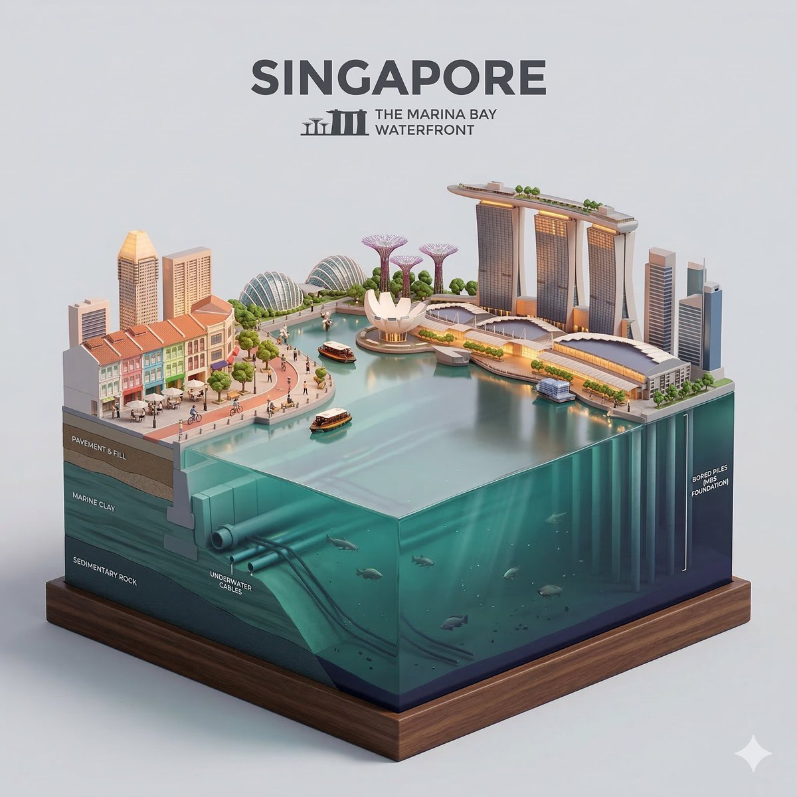
案例2575: Present a clear, side facing isometric miniature 3D cartoon d...
Present a clear, side facing isometric miniature 3D cartoon diorama of [CITY] along the [WATERFRONT]. The scene is a...
🎨 查看AI提示词
🇨🇳 中文提示词
呈现一个清晰的、侧向的等距小型3D卡通景观模型，展示在 [CITY] 的 [WATERFRONT] 沿线。场景是一个干净的垂直剖切截面——城市像博物馆标本一样被切开，安置在一个微型升起的景观基座上，展示从屋顶到河床的完整地层。 水线以上：精选的 [CITY] 最具标志性的滨水元素——分层的本地建筑立面、堤岸长廊、桥梁、电车或自行车手、温暖柔和的环境照明。穿着休闲的微型居民形象——散步、骑行、在滨...
🇬🇧 English Prompt
Present a clear, side-facing isometric miniature 3D cartoon diorama of [CITY] along the [WATERFRONT]. The scene is a clean vertical cross-section slice — the city is cut open like a museum specimen, m...
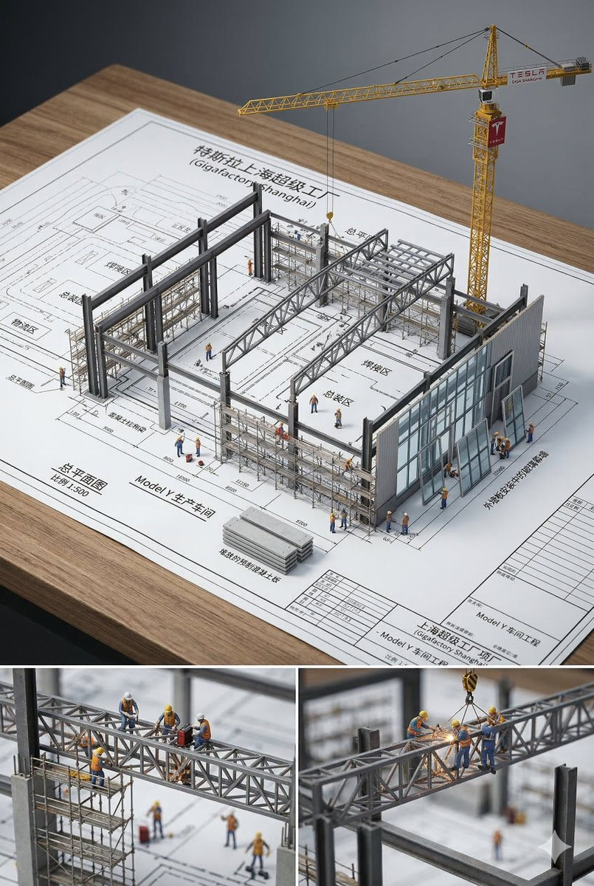
案例2574: An architectural blueprint of {BUILDING NAME} placed on a {SU...
An architectural blueprint of {BUILDING NAME} placed on a {SURFACE}, with a photorealistic miniature under constructi...
🎨 查看AI提示词
🇨🇳 中文提示词
一份 {BUILDING_NAME} 的建筑蓝图，放置在 {SURFACE} 上，随之从蓝图中浮现出一个正在施工中的、写实的 {BUILDING_NAME} 微缩模型——{STRUCTURAL_ELEMENT_1}、{STRUCTURAL_ELEMENT_2}、{STRUCTURAL_ELEMENT_3}、{CONSTRUCTION_DETAIL}、{WORKER_SCENE}、{MATERIAL...
🇬🇧 English Prompt
An architectural blueprint of {BUILDING_NAME} placed on a {SURFACE}, with a photorealistic miniature under-construction version of {BUILDING_NAME} emerging from it — {STRUCTURAL_ELEMENT_1}, {STRUCTURA...
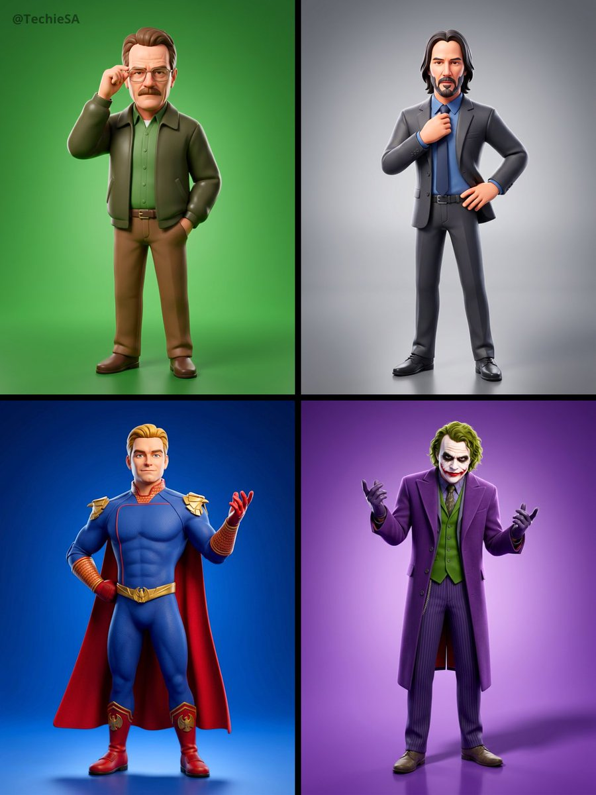
案例2573: Transform the referenced person into a premium stylized 3D an...
Transform the referenced person into a premium stylized 3D animated character, full body hero shot, standing confiden...
🎨 查看AI提示词
🇨🇳 中文提示词
将所指人物转变为高端风格化的3D动画角色，全身英雄镜头，站在画面正中央，自信地站立。尽可能精确地保留其身份与关键面部细节，包括脸型、眼睛、鼻子、嘴巴、发型、肤色与表情，不对面部进行重新设计。使用柔和圆润的几何造型、光滑抛光的材质、细腻的光泽阴影，以及现代高端的3D动画风格。姿势应感觉充满动感、富有魅力且英雄气概，而非僵硬。让手臂和手自然地做出与角色体型、个性和视觉平衡最相称的富有表现力的手势，经过...
🇬🇧 English Prompt
Transform the referenced person into a premium stylized 3D animated character, full body hero shot, standing confidently in the exact center of the frame. Preserve the exact identity and key facial de...
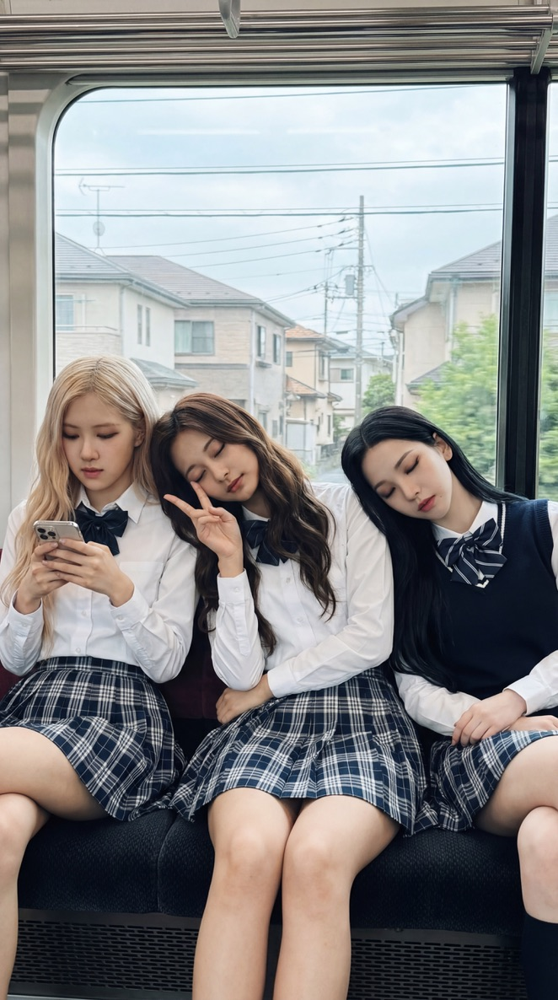
案例2569: "prompt": "Three K pop idols sitting on a train. Left girl is...
{ "prompt": "Three K pop idols sitting on a train. Left girl is Rosé with pale skin and long blonde hair, looking at...
🎨 查看AI提示词
🇨🇳 中文提示词
{ "prompt": "三位韩流偶像坐在火车上。左侧女孩是Rosé，皮肤白皙，长直金发，正在看手机。中间女孩是Tzuyu，偏暖的白皙肤色，深棕色长卷发，正在睡觉，做出胜利手势（比V）。右侧女孩是Karina，下颌呈尖V线条，小脸，白皙皮肤，长直乌黑发，睡着，穿着藏青色背心。制服：白色衬衫、藏青格子百褶裙、蝴蝶结领结。车窗为背景。 --ar 3:4", "aspect_ratio": "3:4",...
🇬🇧 English Prompt
{ "prompt": "Three K-pop idols sitting on a train. Left girl is Rosé with pale skin and long blonde hair, looking at a phone. Middle girl is Tzuyu with warm fair skin and dark brown hair, sleeping, ma...
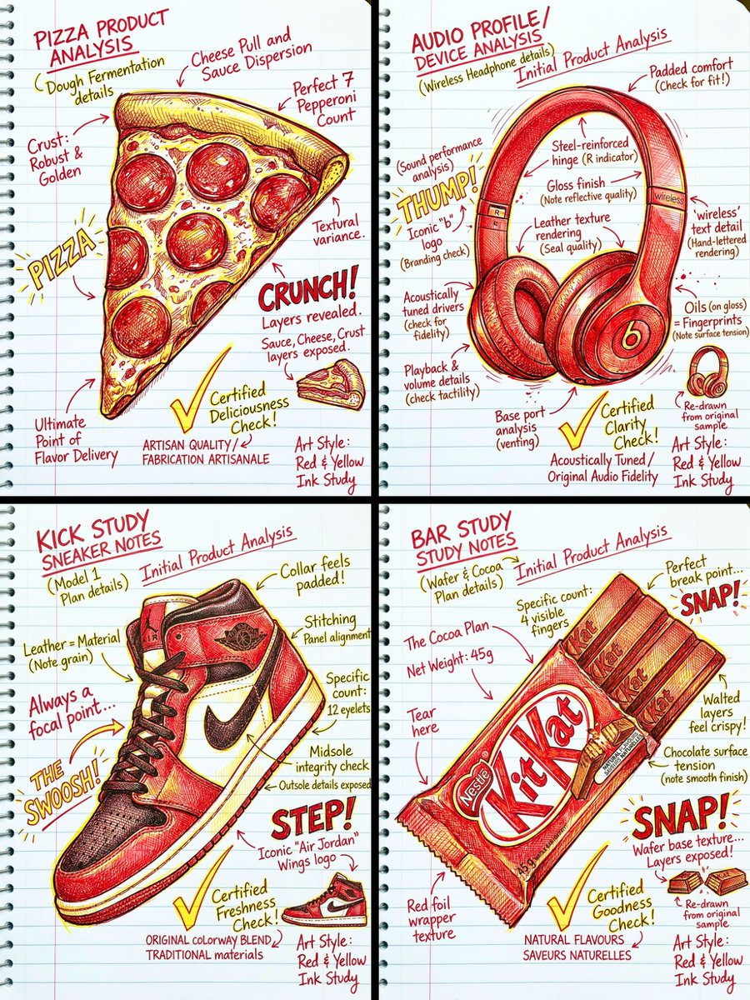
案例2568: Use the image I sent. Create a hand drawn portrait illustrati...
Use the image I sent. Create a hand drawn portrait illustration with red and yellow pen on notebook paper, inspired b...
🎨 查看AI提示词
🇨🇳 中文提示词
使用我发送的图片。在笔记本纸上用红色和黄色的笔创作一幅手绘肖像插画，灵感来自漫画书的绘图和注释。保持与主体完全相似，线条富有表现力，笔势随性即兴，轮廓锐利而鲜明，边缘处有手写注释，并具有逼真的笔触质感。AR 3:4
🇬🇧 English Prompt
Use the image I sent. Create a hand-drawn portrait illustration with red and yellow pen on notebook paper, inspired by comic book drawings and annotations. Maintain a complete likeness to the subject,...
![[BRAND NAME]: Enter the brand name here.](../images/tweet-2033619671522345426-1.jpg)
案例2567: [BRAND NAME]: Enter the brand name here.
[BRAND NAME]: Enter the brand name here. Goal: Generate a hyper realistic studio photograph where the stylized logo i...
🎨 查看AI提示词
🇨🇳 中文提示词
[BRAND NAME]：在此输入品牌名称。 目标：生成一张超写实的工作室照片，其中 [BRAND NAME] 的风格化标志图形为一个物理的 3D 冰雕，直接躺在雪地表面上。 限制：中央冰雕内或其附近不得有任何文字。仅在底部有签名。背景轻盈、通透。 1. 中央冰雕 - 主要主体：一个大型三维体积雕塑，精确成型为 [BRAND NAME] 的标志图标形状。 - 材质：由高纯度晶体冰雕刻而成，内部具...
🇬🇧 English Prompt
[BRAND NAME]: Enter the brand name here. Goal: Generate a hyper-realistic studio photograph where the stylized logo icon of [BRAND NAME] is a physical 3D ice sculpture lying directly on a snowy surfac...
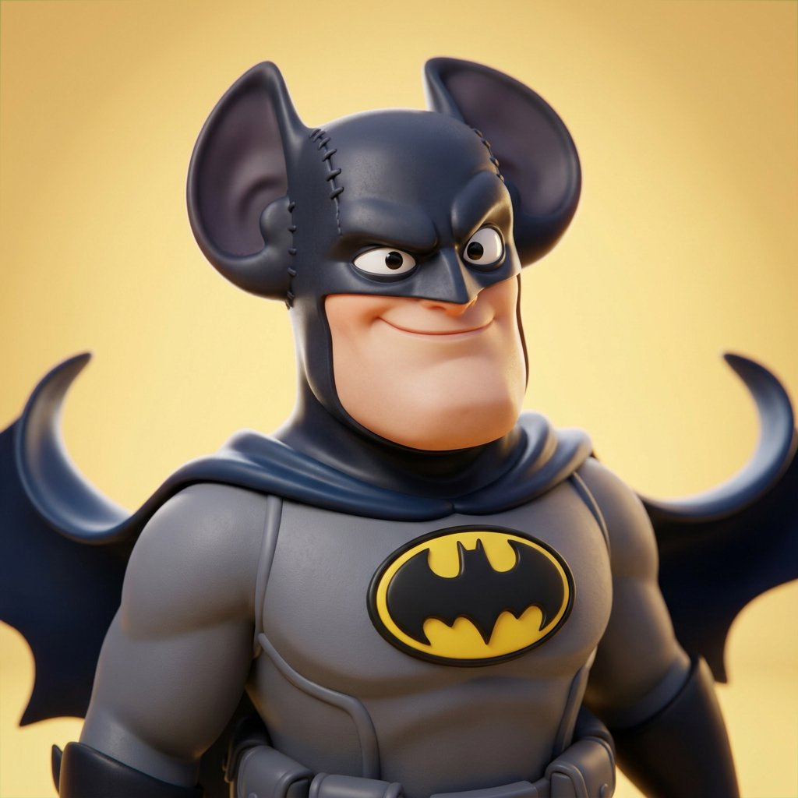
案例2564: High quality stylized 3D CGI big head cartoon render of Harry...
High quality stylized 3D CGI big head cartoon render of Harry Potter, square profile picture composition, oversized h...
🎨 查看AI提示词
🇨🇳 中文提示词
高质量风格化3D CGI大头卡通渲染的哈利·波特，方形头像构图，夸张的大头和小肩膀，以俏皮的皮克斯风格漫画表现。头部和面部特征被夸大，同时仍能一眼识别：凌乱的深色头发、圆形眼镜、额头上的闪电形伤疤、好奇且勇敢的表情。肖像取景聚焦于大头，只有一小部分肩膀可见，穿着霍格沃茨袍领和领带。材质光滑抛光，具有光泽的动画电影阴影渲染，精致的皮克斯风格角色表现。柔和的电影灯光在眼镜上产生温柔的高光。极简明亮的魔...
🇬🇧 English Prompt
High-quality stylized 3D CGI big-head cartoon render of Harry Potter, square profile picture composition, oversized head and small shoulders in a playful Pixar-style caricature. Head and facial featur...
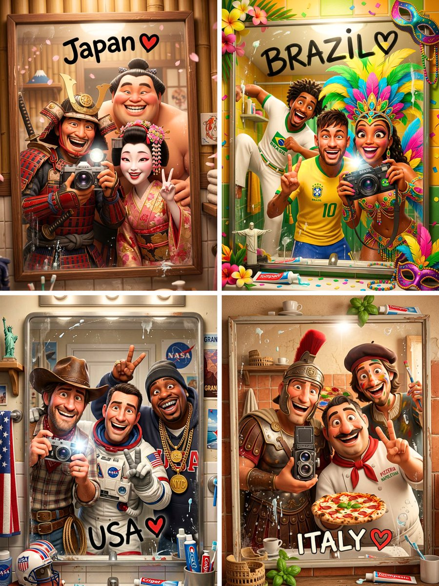
案例2562: High quality stylized 3D CGI Pixar style render, vertical 3:4...
High quality stylized 3D CGI Pixar style render, vertical 3:4 composition, three most iconic and recognizable cultura...
🎨 查看AI提示词
🇨🇳 中文提示词
高质量的风格化3D CGI 皮克斯风格渲染，竖向3:4构图，来自[COUNTRY]的三位最具标志性且最易辨识的文化人物被捕捉成一幅混乱而欢乐的浴室镜子自拍；最具视觉冲击力的人物穿着最正宗的传统服饰，举起那台大型复古相机对准镜子，其余人物挤在画面中，各自穿着最具标志性的服装，展示出他们最具代表性的表情或姿势；众人挤在一起，填满整面镜框，脸部放得大且贴近镜头，紧密堆叠、没有空隙，充满混乱拥挤的能量；面...
🇬🇧 English Prompt
High-quality stylized 3D CGI Pixar-style render, vertical 3:4 composition, three most iconic and recognizable cultural figures from [COUNTRY] captured as a chaotic and joyful bathroom mirror selfie; t...
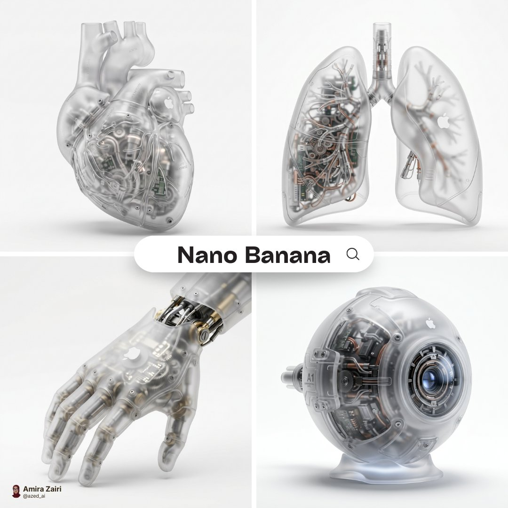
案例2559: A hyper realistic 3D anatomical human [organ] made from semi...
A hyper realistic 3D anatomical human [organ] made from semi translucent frosted polycarbonate with a milky matte fin...
🎨 查看AI提示词
🇨🇳 中文提示词
一个超写实的3D人体[器官]解剖模型，采用半透明磨砂聚碳酸酯制成，呈奶白哑光表面，柔和地散射光线。工业注塑成型细节、细微的微纹理，以及带有精密接缝的圆润边缘。内部复杂的机械组件取代了有机组织：微型齿轮、活塞、电路和工程化舱室在壳体内可见，但透过外壳略显模糊。表面自然嵌入了一个低调的白色 Apple 徽标，简约且不显眼。柔和漫射的影棚灯光，逼真的塑料折射效果，底部的细微阴影，居中构图，纯白背景，超细...
🇬🇧 English Prompt
A hyper-realistic 3D anatomical human [organ] made from semi-translucent frosted polycarbonate with a milky matte finish, softly diffusing light. Industrial injection-molded detailing, subtle micro-te...

案例2534: A cute stylized 3D collectible figurine inspired by Cristiano...
A cute stylized 3D collectible figurine inspired by Cristiano Ronaldo, with short styled hair and an athletic build,...
🎨 查看AI提示词
🇨🇳 中文提示词
一个可爱风格化的3D可收藏小雕像，灵感来自克里斯蒂亚诺·罗纳尔多，留着短款造型的发型、运动型身材，穿着现代足球球衣，自信地双手叉腰站立。旁边有一个大型的健达奇趣蛋，蛋壳上印有同一位球星的卡通头像。场景摆放在一张木质桌子上，柔和的自然光照，浅景深，温馨的室内背景并有模糊的植物，高度细致的皮克斯风格3D渲染，光滑的玩具质感，电影级灯光，超细致的产品摄影，设计师玩具美学。 ⚽🥚
🇬🇧 English Prompt
A cute stylized 3D collectible figurine inspired by Cristiano Ronaldo, with short styled hair and an athletic build, wearing a modern football kit and standing confidently with hands on hips. Next to ...
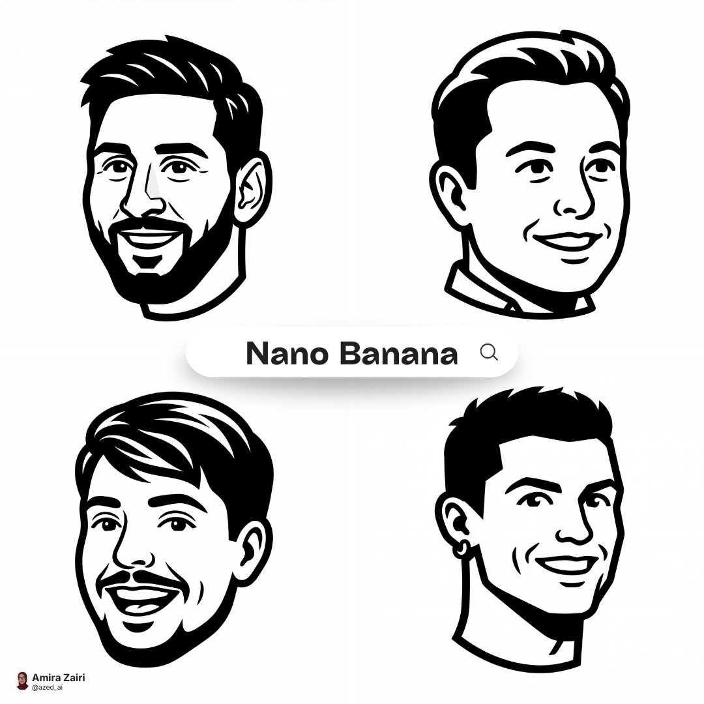
案例2527: Create a clean high contrast vector mascot icon in Notion sty...
Create a clean high contrast vector mascot icon in Notion style artwork based on [person description]. Show only the...
🎨 查看AI提示词
🇨🇳 中文提示词
基于 [person description] 创建一个干净、高对比度的矢量吉祥物图标，采用 Notion 风格的艺术表现。仅显示头部的 3/4 视角。使用非常粗壮的黑色外轮廓线和稍细的内部细节线。平面单色填充。将面部特征简化为强烈的几何形状，同时保留秃头或发型、胡须形状、眼镜形状、眉毛和笑容等可识别特征。表情应友好且略带夸张。牙齿简化为干净的平面块。纯白背景。现代初创公司吉祥物徽标美学，干净的 ...
🇬🇧 English Prompt
Create a clean high-contrast vector mascot icon in Notion-style artwork based on [person description]. Show only the head in a 3/4 view. Use very thick bold black outer outlines and slightly thinner i...
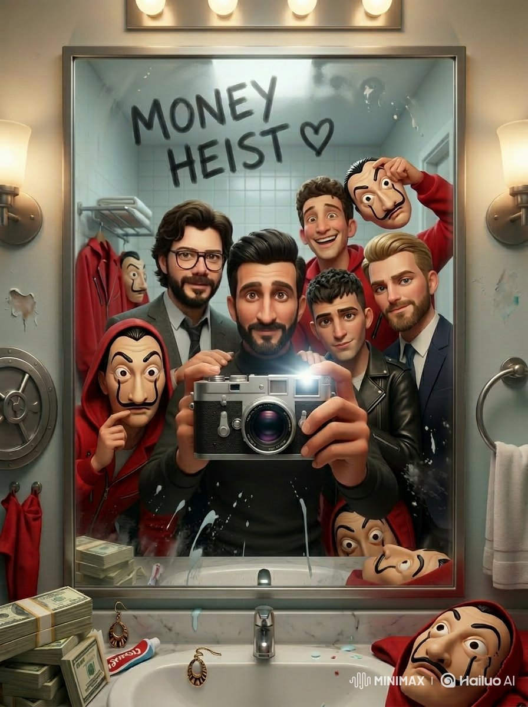
案例2522: Cinematic mirror selfie scene inspired by a retro 80s sci fi...
Cinematic mirror selfie scene inspired by a retro 80s sci fi horror vibe, a group of teenagers and a photographer pos...
🎨 查看AI提示词
🇨🇳 中文提示词
受复古80年代科幻恐怖氛围启发的电影感镜面自拍场景，一群青少年和一名摄影师在浴室镜子里一起摆姿势，复古相机闪光灯照明，镜子周围挂着圣诞串灯，洗手池上放着对讲机和复古小玩意，镜面上有手写的雾状文字写着“RUN”和“Stranger Things”，怀旧氛围，情绪化的蓝红色灯光，电影式叙事构图，Pixar风格的3D角色，超细节、柔和反射，8K。
🇬🇧 English Prompt
Cinematic mirror selfie scene inspired by a retro 80s sci-fi horror vibe, a group of teenagers and a photographer posing together in a bathroom mirror, vintage camera flash lighting, Christmas string ...
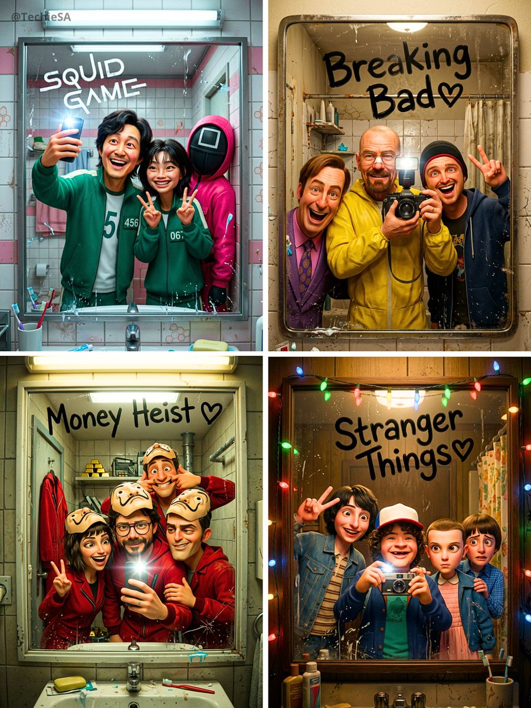
案例2514: High quality stylized 3D CGI Pixar style render, vertical 3:4...
High quality stylized 3D CGI Pixar style render, vertical 3:4 composition, the most iconic characters from [SHOW/MOVI...
🎨 查看AI提示词
🇨🇳 中文提示词
高质量风格化 3D CGI 皮克斯风格渲染，纵向 3:4 构图；来自 [SHOW/MOVIE] 的最具代表性的角色被捕捉为一个混乱而欢乐的浴室镜子自拍；最为人熟知的角色举着一台大型复古相机对着镜子，其他角色紧挤在他们周围的画面中，每个人都展示他们最标志性的表情或姿势；每个人都穿着与原作相符的标志性服装；所有人挤在一起，营造经典的拥挤自拍氛围；面部比例在迪士尼/皮克斯动画风格中略作夸张，眼睛富有表情...
🇬🇧 English Prompt
High-quality stylized 3D CGI Pixar-style render, vertical 3:4 composition, the most iconic characters from [SHOW/MOVIE] captured as a chaotic and joyful bathroom mirror selfie; the most recognizable c...
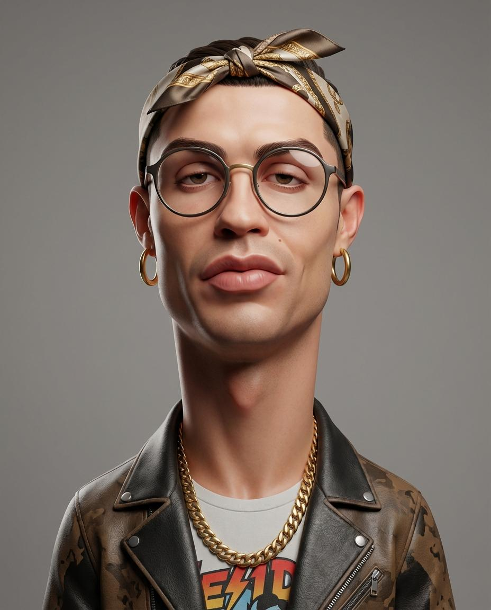
案例2507: Create an exaggerated stylized 3D caricature character portra...
Create an exaggerated stylized 3D caricature character portrait with strong intentional deformation and a clean, cont...
🎨 查看AI提示词
🇨🇳 中文提示词
创建一幅夸张风格化的3D夸张人物肖像，具有强烈的刻意变形和干净、可控的表面处理。使用所附参考照片中的人物。保留主体的身份、面部相似度、肤色和标志性特征，但将其重新诠释为大胆的漫画化3D形态，包含拉长的颈部、头颈比例夸大的大头、下垂的眼睑、厚重的嘴唇以及略带不对称的面部结构。呈现为类人的3D角色，皮肤光滑、工作室级干净质感，细节为刻意设计，避免随机纹理或噪点。搭配大胆配饰，例如圆形或椭圆形眼镜、圈式...
🇬🇧 English Prompt
Create an exaggerated stylized 3D caricature character portrait with strong intentional deformation and a clean, controlled surface finish. Use the person from the ATTACHED REFERENCE PHOTO. Preserve t...
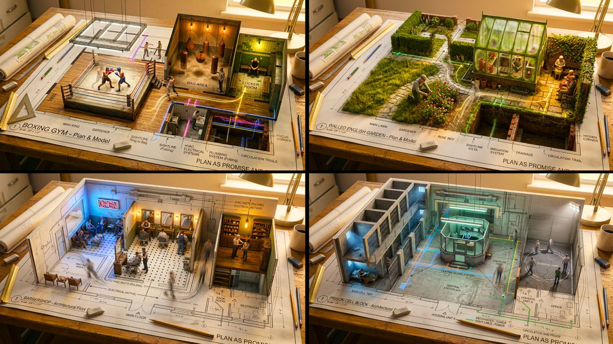
案例2505: An architectural floor plan of a [LOCATION] spread across a d...
An architectural floor plan of a [LOCATION] spread across a drafting table, with the spaces rising into inhabitable m...
🎨 查看AI提示词
🇨🇳 中文提示词
一张[LOCATION]的建筑平面图摊开在制图桌上，图中的空间逐渐升起成为可居住的微型实体。[ROOM 1]出现，呈现磨损的材料和风化的表面，一位孤独的人物在温暖的琥珀色实用灯光下专注工作；[ROOM 2]升起，拥有鲜明对比的质感与层次细节，两人在冷色的对比光线下分享一刻人情温度，光线在墙面上投下带色彩的阴影；[ROOM 3]向上凸显出亲密的尺度与个人物品，一位安静的人物在一盏单一的实用光源下静止...
🇬🇧 English Prompt
An architectural floor plan of a [LOCATION] spread across a drafting table, with the spaces rising into inhabitable miniature. The [ROOM 1] emerges with worn materials and weathered surfaces and a sol...
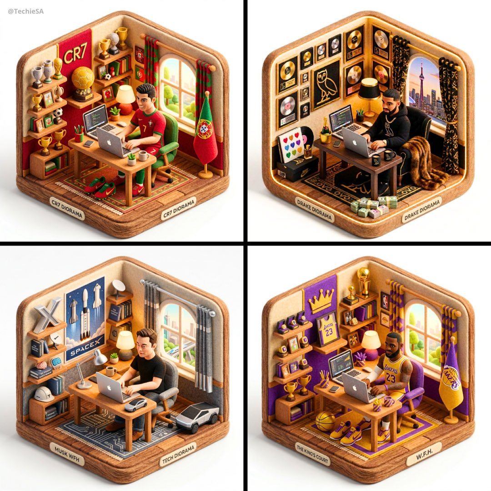
案例2503: Generate a 3D isometric diorama illustration of [CHARACTER] w...
Generate a 3D isometric diorama illustration of [CHARACTER] working from home at a desk with a laptop and a window. H...
🎨 查看AI提示词
🇨🇳 中文提示词
生成一个 3D 等角小景插画，描绘 [CHARACTER] 在家工作，坐在带有笔记本电脑和窗户的办公桌前。手工毛毡质感，形状圆润抛光，封闭在一个六边形圆角立方体框架内。房间装饰、颜色、家具、墙面艺术和配饰都能让人立即认出是 [CHARACTER] —— 反映出他们的标志性风格、标志性物品、服装和个性。暖色柔和照明，干净的白色背景，1080x1080，照片级逼真质量。底座上不要有文字标签或标牌。
🇬🇧 English Prompt
Generate a 3D isometric diorama illustration of [CHARACTER] working from home at a desk with a laptop and a window. Handmade felt appearance with rounded polished shapes, enclosed in a hexagonal round...
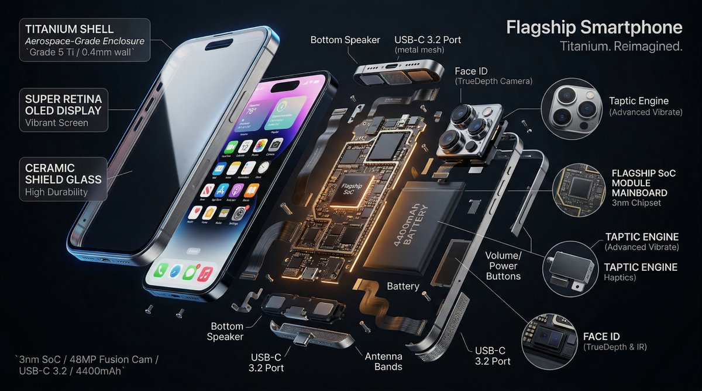
案例2502: Hyperrealistic 3D radial exploded view of [PRODUCT] [NUMBER]...
Hyperrealistic 3D radial exploded view of [PRODUCT] [NUMBER] components bursting outward from a central axis in every...
🎨 查看AI提示词
🇨🇳 中文提示词
超写实 3D 径向爆炸视图，展示 [PRODUCT] [NUMBER] 个组件自中心轴向四面八方炸裂并悬停在空中。真实的空间爆炸效果，而非垂直堆叠，可见深度与视差。 组件（由内向外）：[SHELL] → [DISPLAY] → [FRAME] → [MAINBOARD] → [BATTERY] → [MICRO PARTS 在 3 个浮动标注圆中展示] 材料：玻璃折射并捕捉镜面高光，铝材显示拉丝纹...
🇬🇧 English Prompt
Hyperrealistic 3D radial exploded view of [PRODUCT] [NUMBER] components bursting outward from a central axis in every direction, frozen in mid-air. True spatial explosion, not a vertical stack, dep...
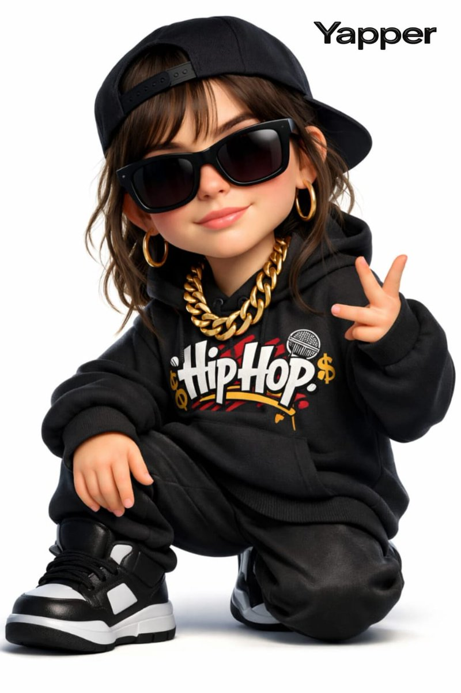
案例2500: Create a 3D cartoon style woman with a rap style (the face is...
Create a 3D cartoon style woman with a rap style (the face is inspired by the reference image). She should have a lar...
🎨 查看AI提示词
🇨🇳 中文提示词
创建一个3D卡通风格的女性，具有说唱风格（面部受参考图片启发）。她应有大头和超大号球鞋、超大连帽衫（带有说唱风格的印花）、宽松的黑色裤子、大号太阳镜和粗厚的链条项链。让她摆出一个有趣的姿势，白色背景、电影感灯光，以及高度细节化的皮克斯风格渲染。
🇬🇧 English Prompt
Create a 3D cartoon-style woman with a rap style (the face is inspired by the reference image). She should have a large head and oversized sneakers, an extra-large hoodie with a rap-style print, loose...
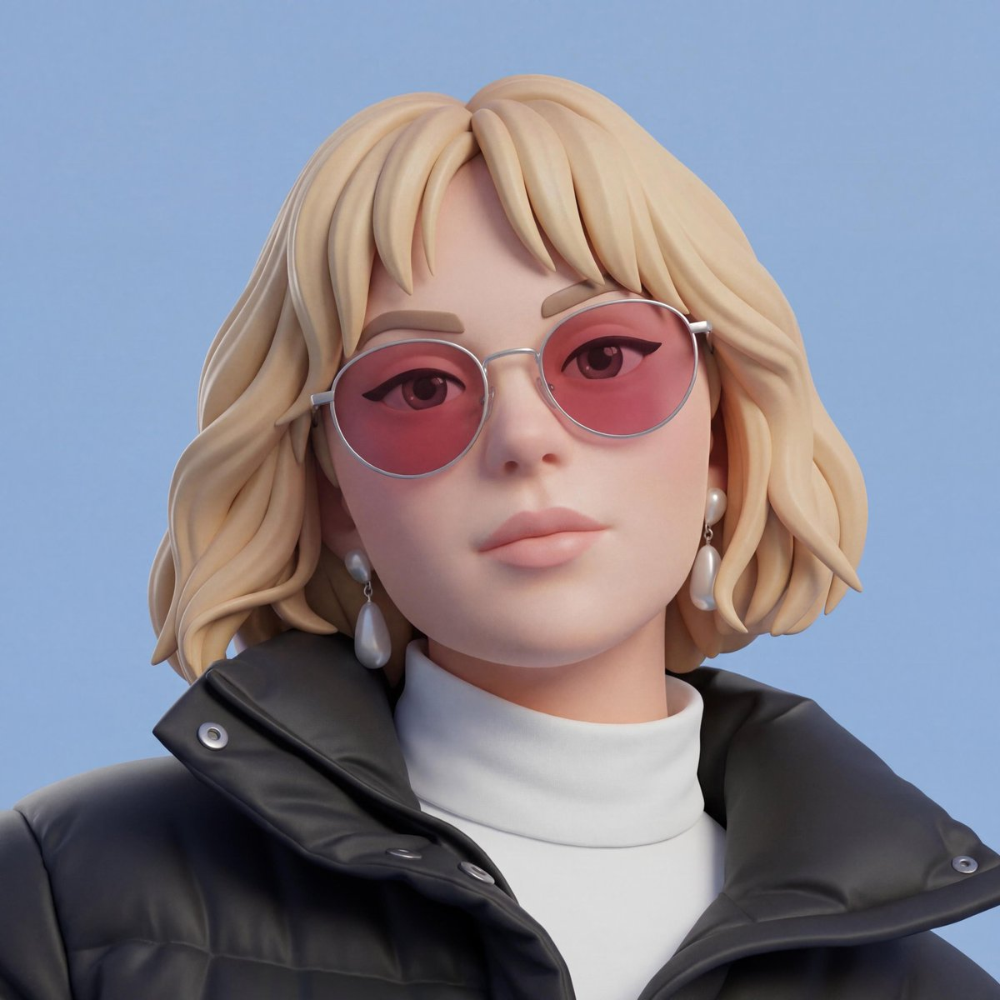
案例2497: Use a user uploaded image as the source and convert the perso...
Use a user uploaded image as the source and convert the person into a stylized 3D character while preserving identity...
🎨 查看AI提示词
🇨🇳 中文提示词
使用用户上传的图像作为源，将人物转换为风格化的 3D 角色，同时保留身份、面部结构、姿势、发型、服装和整体构图，完全与照片中所示一致。结果应清楚地与真实人物相似。 视觉风格为风格化的 3D 角色，具有柔和的极简卡通 3D 美学，受类似皮克斯的视觉启发但更为极简，玩具人偶渲染风格，以及干净的产品式角色设计。整体偏向风格化而非写实，但不改变人物的真实外观。 皮肤应呈现为光滑的哑光塑料质感，具有柔和...
🇬🇧 English Prompt
Use a user-uploaded image as the source and convert the person into a stylized 3D character while preserving identity, facial structure, pose, hairstyle, clothing, and overall composition exactly as s...

案例2490: Create a high detail 3D semi realistic chibi character with s...
Create a high detail 3D semi realistic chibi character with slightly exaggerated cute proportions but with photoreali...
🎨 查看AI提示词
🇨🇳 中文提示词
创建一个高细节的3D半写实Q版（chibi）角色，比例略微夸张以显得可爱，但面部采用写实渲染，具有自然的皮肤毛孔、真实的灯光效果和精细的发丝细节。角色应呈现为一款收藏级设计玩具手办，表面光滑、材质高级、边缘超干净。角色造型为时尚风格： A. 一件剪裁合体的设计师夹克，深祖母绿，并带有金色缝线点缀 B. 内搭紧身黑色丝质上衣 C. 高级定制锥形长裤，哑光象牙色调 D. 设计师运动鞋/鞋履，白色与金色...
🇬🇧 English Prompt
Create a high-detail 3D semi-realistic chibi character with slightly exaggerated cute proportions but with photorealistic facial rendering, natural skin pores, realistic lighting, and finely detailed ...
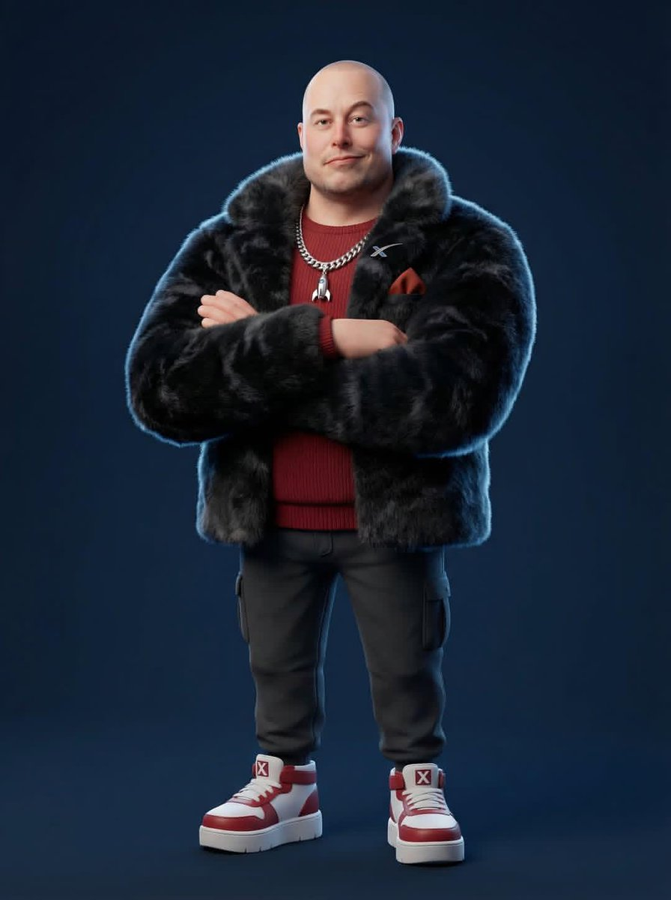
案例2489: "renderEngine": "Blender Cycles / Unreal Engine 5 Lumen",
{ "renderEngine": "Blender Cycles / Unreal Engine 5 Lumen", "baseStyle": "Stylized 3D CGI character — Pixar meets hig...
🎨 查看AI提示词
🇨🇳 中文提示词
{ "渲染引擎": "Blender Cycles / Unreal Engine 5 Lumen", "基础风格": "风格化的3D CGI角色 — 皮克斯风格与高级时尚编辑风格的结合", "比例": "头部略微放大（1.3倍），躯干紧凑，面部特征简化，夸张的粗壮脚/鞋", "皮肤着色器": "次表面散射，基于物理的粗糙度，无毛孔，平滑的卡通风格表面", "服装物理": "M...
🇬🇧 English Prompt
{ "renderEngine": "Blender Cycles / Unreal Engine 5 Lumen", "baseStyle": "Stylized 3D CGI character — Pixar meets high-fashion editorial", "proportions": "Slightly enlarged head (1.3x natural), ...
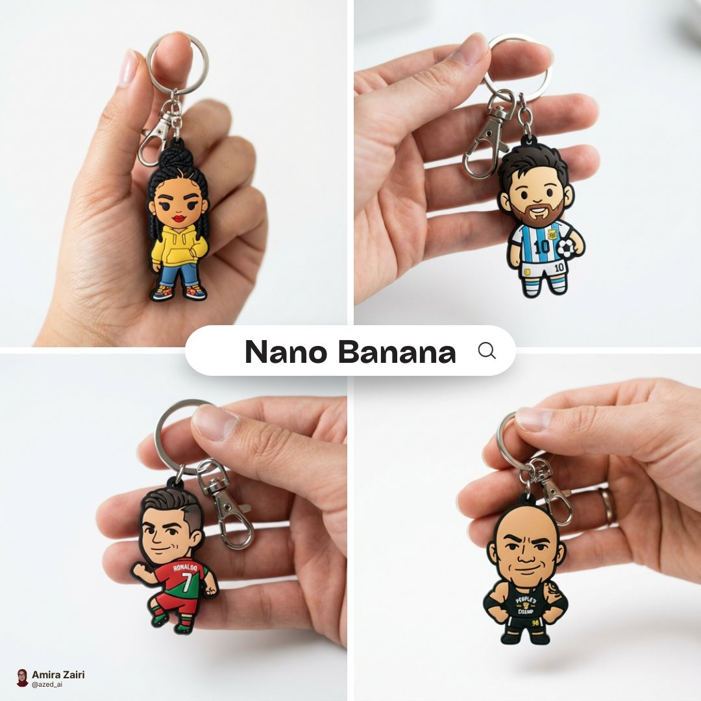
案例2488: Close up photo of a cute, colorful rubber keychain held gentl...
Close up photo of a cute, colorful rubber keychain held gently in a person’s hand. The keychain features a chibi styl...
🎨 查看AI提示词
🇨🇳 中文提示词
特写照片：一个可爱、色彩鲜艳的橡胶钥匙扣轻轻握在某人手中。钥匙扣以Q版风格的[角色/人物]插画为特色，面部特征简化、比例圆润、柔和的粉彩色调、粗厚的黑色描边、平滑的磨砂橡胶质感、略微突起的分层细节、卡通化表情、紧凑的玩具般轮廓。钥匙扣连接着一个小银色金属卡扣和钥匙圈。自然的手部姿势、浅景深、柔和的漫射光、中性米色背景、真实的皮肤质感、高细节的产品摄影、1:1 纵横比。
🇬🇧 English Prompt
Close-up photo of a cute, colorful rubber keychain held gently in a person’s hand. The keychain features a chibi-style illustration of [character/person], simplified facial features, rounded proportio...
案例2482: A highly detailed pebble mosaic portrait of a beautiful woman...
A highly detailed pebble mosaic portrait of a beautiful woman, where the entire image is constructed from thousands o...
🎨 查看AI提示词
🇨🇳 中文提示词
一幅高度细致的鹅卵石马赛克美女肖像，整幅画由数千块光滑的天然石头与鹅卵石构成。鹅卵石在大小和色彩上各不相同，用以塑造逼真的面部特征、头发、肤色和服饰图案。这位女性有一头飘逸的长发，身着饰有丰富图案的红色传统服饰。背景同样由精心排列的河石组成，形成富有质感的马赛克墙面。超细致的石材纹理，gemini 自然的土色调，柔和的光照，富有艺术感的石材马赛克工艺，gemini 照片级写实构图，8K 分辨率，复...
🇬🇧 English Prompt
A highly detailed pebble mosaic portrait of a beautiful woman, where the entire image is constructed from thousands of smooth natural stones and pebbles. The pebbles vary in size and color to form rea...
案例2464: Ultra detailed large scale miniature diorama of the [ICONIC S...
Ultra detailed large scale miniature diorama of the [ICONIC SCENE] from [MOVIE/SHOW] presented as a premium museum qu...
🎨 查看AI提示词
🇨🇳 中文提示词
超精细大比例微缩场景模型，展示来自 [MOVIE/SHOW] 的 [ICONIC SCENE]，以高端博物馆级桌面展览模型呈现。 真实比例的模型工艺，极其精细的细节。 [ICONIC SCENE] 在构图中完全可见并居中：关键角色以微缩形态准确呈现，标志性道具和布景件精准复原，整个场景捕捉于其最具辨识度的瞬间。 周边微型布景环境：准确的地点细节、富有氛围的背景元素、微小的环境细节强化场景设定。 比...
🇬🇧 English Prompt
Ultra-detailed large-scale miniature diorama of the [ICONIC SCENE] from [MOVIE/SHOW] presented as a premium museum-quality desktop exhibition model. True scale model craftsmanship with extreme fine de...

案例2462: 🚨PromptShare🚨
🚨PromptShare🚨 Vehicle Toy in Midjourney PROMPT a [vehicle] on the road, 3d icon design style, cute cartoon design,...
🎨 查看AI提示词
🇨🇳 中文提示词
🚨提示分享🚨 Midjourney 中的车辆玩具 提示 一辆 [vehicle] 在路上，3D 图标设计风格，可爱卡通设计，边缘柔和且细节模糊，toyism 风格，C4D 渲染， [environment] 背景，简单纯色背景。 https://t.co/c2XJJiKgXx
🇬🇧 English Prompt
🚨PromptShare🚨 Vehicle Toy in Midjourney PROMPT a [vehicle] on the road, 3d icon design style, cute cartoon design, soft edges and blurred details, in the style of toyism, c4d rendering, [environme...
案例2447: Ultra detailed large scale miniature diorama of [STADIUM NAME...
Ultra detailed large scale miniature diorama of [STADIUM NAME] in [CITY] presented as a premium museum quality deskto...
🎨 查看AI提示词
🇨🇳 中文提示词
位于[CITY]的[STADIUM NAME]的超精细大尺度微缩场景，作为高级博物馆级桌面展览模型呈现。 真正的建筑比例模型工艺，具备极其细致的精微细节。 [STADIUM NAME]在构图中完全可见并居中：标志性的屋顶结构、外立面细节、戏剧性升起的泛光灯塔，从地面到屋顶整个体育场都被准确呈现。 环绕的微缩[CITY]街区：小型本地风格住宅、网格街道布局、人行道两旁排列的微型树木、用于比例真实感的...
🇬🇧 English Prompt
Ultra-detailed large-scale miniature diorama of [STADIUM NAME] in [CITY] presented as a premium museum-quality desktop exhibition model. True architectural scale model craftsmanship with extreme fine ...
案例2438: A [subject] split vertically down the center, left half as a...
A [subject] split vertically down the center, left half as a [adjective] technical blueprint, right half as a [adject...
🎨 查看AI提示词
🇨🇳 中文提示词
一个[subject]沿中心垂直分割，左半部分为[adjective]的技术蓝图，右半部分为[adjective]的3D渲染，在两种现实碰撞之处，两者之间的接缝呈现毛刺般的故障效果。
🇬🇧 English Prompt
A [subject] split vertically down the center, left half as a [adjective] technical blueprint, right half as a [adjective] 3D render, the seam between them glitching where both realities collide.
案例2436: "prompt": "A high quality realistic photograph of Ana de Arma...
{ "prompt": "A high quality realistic photograph of Ana de Armas with glowing skin, long dark hair, and a bright happ...
🎨 查看AI提示词
🇨🇳 中文提示词
{ "prompt": "一张高质量逼真的照片，描绘 Ana de Armas，皮肤光泽感强，长黑发，露齿灿笑，手持一罐 “Dr Pepper Strawberries & Cream Zero Sugar” 置于面部旁。背景为创意性、异想天开的二维黑白线稿汽水工厂插画。插画特色包括风格化的管道、工业罐，以及在梯子和摩托车上的小卡通工人。一些手绘管道看起来与汽水罐“连接”，并有绘制的气泡流出。...
🇬🇧 English Prompt
{ "prompt": "A high-quality realistic photograph of Ana de Armas with glowing skin, long dark hair, and a bright happy smile showing teeth, holding a can of 'Dr Pepper Strawberries & Cream Zero Suga...
案例2434: Surrounding the realistic main subject are multiple cute, 3D...
Surrounding the realistic main subject are multiple cute, 3D style chibi miniatures of the same person, with identica...
🎨 查看AI提示词
🇨🇳 中文提示词
围绕真实的主要主体的是多个可爱的 3D 风格 Q 版（chibi）小人偶，都是同一个人，面部特征、发型、体型比例和服饰完全相同。 这些 Q 版人偶自然分布在主体周围，以迷人且不突兀的方式俏皮地与她或附近的元素互动。 在图像上叠加充满活力的手绘涂鸦效果：主体周围柔和的白色轮廓、俏皮的闪光、涂鸦爱心、小花、笑脸图标，以及漂浮的白色手写短语，如“闪耀”、“美好的一天”和“快乐”。 风格将超写实摄影与...
🇬🇧 English Prompt
Surrounding the realistic main subject are multiple cute, 3D-style chibi miniatures of the same person, with identical facial features, hairstyle, body proportions, and outfit. The chibi figures are ...

案例2429: Create an ultra HD, hyper realistic digital poster of a float...
Create an ultra HD, hyper realistic digital poster of a floating miniature island shaped like [Country] on white clou...
🎨 查看AI提示词
🇨🇳 中文提示词
创建一个超高清、极度写实的数字海报，描绘一个漂浮在白云上的、形状像[Country]的微型岛屿。包括标志性地标、景观（[landmark 1]、[landscape 2]、[landscape 3]）以及独属于[Country]的文化元素。用大号白色三维字母将“[Country]”雕刻出来。添加[wildlife]、电影级灯光、鲜艳的色彩、空中透视，以及阳光反射以增强真实感。
🇬🇧 English Prompt
Create an ultra-HD, hyper-realistic digital poster of a floating miniature island shaped like [Country] on white clouds. Include iconic landmarks, landscapes ([landmark 1], [landscape 2], [landscape 3...
案例2420: 3D stylized character portrait of a young man, curly dark hai...
3D stylized character portrait of a young man, curly dark hair, wearing black round glasses and a dark hoodie, subtle...
🎨 查看AI提示词
🇨🇳 中文提示词
3D 风格化的角色肖像，一位年轻男子，卷曲的深色头发，戴着黑色圆框眼镜和深色连帽衫，侧目带着微妙的讥笑表情，颈部有小纹身，皮肤光滑，高度细节化的皮克斯风格角色设计，柔和的影棚照明，干净的浅灰色背景，超清锐利，电影级渲染，高细节，现代动画电影风格。
🇬🇧 English Prompt
3D stylized character portrait of a young man, curly dark hair, wearing black round glasses and a dark hoodie, subtle smirk expression while looking sideways, small tattoo on the neck, smooth skin, hi...
案例2418: Ultra detailed 3D plush cartoon character, inspired by classi...
Ultra detailed 3D plush cartoon character, inspired by classic animated TV style, standing in center frame, full body...
🎨 查看AI提示词
🇨🇳 中文提示词
超细节的3D绒毛卡通角色，灵感来自经典动画电视风格，站在画面中央，全身可见。角色被设计成软玩具，具有逼真的蓬松毛发质感、平滑圆润的造型、鲜艳饱和的色彩、大而富有表情的眼睛、可爱的比例，使用[哆啦A梦]的角色形象，[大雄背着哆啦A梦]。 高分辨率皮克斯风格3D渲染，柔和的工作室灯光、微妙的轮廓光、干净的渐变背景（蓝色调）、电影感照明、景深、高度细化的毛发丝、脚下柔和的阴影、有光泽的鼻子、玩具质感材...
🇬🇧 English Prompt
Ultra-detailed 3D plush cartoon character, inspired by classic animated TV style, standing in center frame, full body visible. Character designed as a soft toy with realistic fluffy fur texture, smoot...
案例2415: Hyper realistic 3D illustration of Albert Einstein emerging f...
Hyper realistic 3D illustration of Albert Einstein emerging from the pages of a sketchbook drawing, blending a graphi...
🎨 查看AI提示词
🇨🇳 中文提示词
阿尔伯特·爱因斯坦从速写本页面中走出的超写实3D插图，将石墨素描与栩栩如生的3D形象融合在一起。爱因斯坦有他标志性蓬乱的白发、浓密的八字胡和沉思的表情，身穿经典的棕色花呢外套和白衬衫。 打开的速写本放在阳光照射的画室里一张饱经风霜的木质画桌上。书页上展示着一幅详细的石墨素描爱因斯坦，但在爱因斯坦冲出来的地方，纸张被戏剧性地撕裂并向外卷起，从平面的铅笔画过渡成一个完全呈现的3D人物踏入现实。 爱...
🇬🇧 English Prompt
Hyper-realistic 3D illustration of Albert Einstein emerging from the pages of a sketchbook drawing, blending a graphite illustration with a lifelike 3D figure. Einstein has his iconic wild white hair,...
案例2413: Cute stylized 3D animated boy with messy fluffy blue hair and...
Cute stylized 3D animated boy with messy fluffy blue hair and big expressive eyes, soft freckles on face, wearing a f...
🎨 查看AI提示词
🇨🇳 中文提示词
可爱卡通化的3D动画男孩，蓬松凌乱的蓝色头发和大而传神的眼睛，脸上有淡淡的雀斑，穿着毛绒感的蓝色条纹毛衣，肩上坐着一只小巧可爱的浣熊，抬头带着温柔的微笑，皮克斯风格的人物设计，柔和的工作室灯光，粉蓝色背景，超细致的毛发和织物质感，电影感的肖像构图，高质量的3D渲染，8K。
🇬🇧 English Prompt
Cute stylized 3D animated boy with messy fluffy blue hair and big expressive eyes, soft freckles on face, wearing a fuzzy blue striped sweater, small adorable raccoon sitting on his shoulder, looking ...
案例2411: A mini chibi version of the character in the uploaded image,...
A mini chibi version of the character in the uploaded image, with a big head and small body, sitting on an open left...
🎨 查看AI提示词
🇨🇳 中文提示词
上传的图像中的角色的迷你chibi版本，头大身小，坐在摊开的左手掌上以呈现真实比例。右手用食指轻轻按着它的脸颊。角色表情显得恼怒且撅嘴——鼓起的脸颊、微微皱眉、眯着眼。超精细的chibi风格，柔和的粉彩色调，光滑的质感，干净的光照，浅景深，强烈聚焦于面部表情和手部互动，竖向构图，4:5比例。
🇬🇧 English Prompt
A mini chibi version of the character in the uploaded image, with a big head and small body, sitting on an open left palm for realistic scale. A right hand gently pressing its cheek with an index fing...
案例2409: A Realistic First Person (Pov) Selfie Taken With An Outside A...
A Realistic First Person (Pov) Selfie Taken With An Outside Arm, In The Same Clothes As In The Uploaded Photo. Close...
🎨 查看AI提示词
🇨🇳 中文提示词
一张写实的第一人称（视角）自拍，由外伸的手臂拍摄，穿着与上传照片相同的衣服。 特写：我抱着来自《猫和老鼠》的卡通灰猫汤姆，带着微笑（杰瑞可以从我的肩膀或口袋探出头来）。 照片级写实的环境：摄影棚布景、办公室内景、暖色灯光、道具，背景有聚光灯和电缆。 汤姆是高度风格化的卡通3D：赛璐璐渲染、多重比例、轮廓清晰、无真实毛发、非实景。 有机感：放大到胸部位置，拥抱接触，单一光源，自然阴影。4k。自然阴影...
🇬🇧 English Prompt
A Realistic First Person (Pov) Selfie Taken With An Outside Arm, In The Same Clothes As In The Uploaded Photo. Close-up Of Me Hugging Tom, The Cartoon Gray Cat From Tom And Jerry, With A Small Smile (...
案例2406: "scene": {
{ "scene": { "location": "Busy Western metropolitan intersection, inspired by New York Times Square", "architecture":...
🎨 查看AI提示词
🇨🇳 中文提示词
{ "scene": { "location": "繁忙的西方都市十字路口，灵感来自纽约时代广场", "architecture": { "surroundings": "现代玻璃摩天大楼、大型数字广告牌、简洁的城市建筑风格", "special_features": [ "位于建筑角落的大型L形裸眼3D LED屏幕" ] ...
🇬🇧 English Prompt
{ "scene": { "location": "Busy Western metropolitan intersection, inspired by New York Times Square", "architecture": { "surroundings": "Modern glass skyscrapers, large digital billboa...
案例2397: A highly detailed 3D caricature of a cheerful man with an ove...
A highly detailed 3D caricature of a cheerful man with an oversized head, a big smile showcasing large teeth, and cur...
🎨 查看AI提示词
🇨🇳 中文提示词
一个高度细致的3D夸张漫画形象，描绘一位开朗的男子，头部夸大，露出一口大牙的灿烂笑容，卷曲蓬松的头发。他穿着短袖白色扣式衬衫，棕色高腰裤并系有皮带，脚穿传统凉鞋。他的姿势随意且友好，一只手以若有所思的方式触摸下巴。艺术风格为半写实，带有夸张的卡通化特征，置于干净的白色背景上。 一个高度细致的3D夸张漫画形象，描绘一位开朗的男子，头部夸大，露出一口大牙的灿烂笑容，卷曲蓬松的头发。他穿着短袖白色扣式...
🇬🇧 English Prompt
A highly detailed 3D caricature of a cheerful man with an oversized head, a big smile showcasing large teeth, and curly voluminous hair. He is wearing a short-sleeved white button-up shirt, brown high...
案例2392: "image generation request": {
{ "image generation request": { "subject": { "placeholder": "[INSERT YOUR PRODUCT HERE]", "positioning": "centrally a...
🎨 查看AI提示词
🇨🇳 中文提示词
{ "image_generation_request": { "subject": { "placeholder": "[在此插入您的产品]", "positioning": "居中对齐，完全置中，悬浮于空中", "framing": "物体完全可见，无裁剪，无边缘截断，产品周围留有充足的留白" }, "visual_style":...
🇬🇧 English Prompt
{ "image_generation_request": { "subject": { "placeholder": "[INSERT YOUR PRODUCT HERE]", "positioning": "centrally aligned, perfectly centered, levitating in mid-air", "framin...

案例2387: Generates a clean, cinematic 1080×1080 corkboard layout that...
Generates a clean, cinematic 1080×1080 corkboard layout that visually summarizes the story of movie using Polaroid sn...
🎨 查看AI提示词
🇨🇳 中文提示词
生成一个干净、具有电影质感的 1080×1080 软木板布局，用宝丽来快照、手写笔记、侦探风格的连线和复古纹理视觉化地概括电影《怪奇物语》的故事
🇬🇧 English Prompt
Generates a clean, cinematic 1080×1080 corkboard layout that visually summarizes the story of movie using Polaroid snapshots, handwritten notes, detective-style strings, and vintage textures for "STRA...
案例2386: 3D cartoon avatar character showing different emotions arrang...
3D cartoon avatar character showing different emotions arranged in a 3x3 grid, same male character with brown hair, P...
🎨 查看AI提示词
🇨🇳 中文提示词
3×3 网格排列的 3D 卡通头像角色展示不同情绪，相同的棕色头发男性角色，皮克斯风格动画，每个方格展示不同表情（开心、震惊、生气、抱着小狗的关爱、自信、竖起大拇指、难过、沉思、专业），每个画面都有彩色渐变背景，柔和的影棚灯光，流畅的 3D 渲染，富有表现力的眼睛和面部表情，现代表情符号风格的人物设计，干净的构图，超精细，色彩鲜艳，8K
🇬🇧 English Prompt
3D cartoon avatar character showing different emotions arranged in a 3x3 grid, same male character with brown hair, Pixar-style animation, each square showing a different expression (happy, shocked, a...
案例2383: Generate a hyper realistic digital illustration of a cake met...
Generate a hyper realistic digital illustration of a cake meticulously stylized to resemble a [LOGO] resting on a pri...
🎨 查看AI提示词
🇨🇳 中文提示词
生成一幅超现实写实的数字插图，蛋糕被精心设计成类似 [LOGO] 的外观，放在一张洁白无瑕的桌子上。让它露出部分被咬的痕迹，揭示多层美味的内部（海绵蛋糕层、糖霜层与碎屑），并打破这层错觉。以咬痕处的细致纹理捕捉惊讶的瞬间。采用略微从上方的角度，以突出外壳的真实感与内部蛋糕之间的对比。用柔和、漫射的光线照亮场景，以增强纹理并投下柔和的阴影，营造深度。背景保持简约明亮，以将注意力集中在这款具有误导性的...
🇬🇧 English Prompt
Generate a hyper-realistic digital illustration of a cake meticulously stylized to resemble a [LOGO] resting on a pristine white table. Show it partially bitten to reveal multiple delicious layers (sp...
案例2382: convert anime characters into realistic human portraits Conve...
convert anime characters into realistic human portraits Convert character into a photorealistic live action portrait...
🎨 查看AI提示词
🇨🇳 中文提示词
将动漫角色转换为真实的人像 将角色转换为写实的真人拍摄人像/时尚编辑式照片，现代电影感风格，高端时尚质感，对比鲜明但自然，经过精炼的电影级色彩科学，微妙的晕染效果与镜头光晕，可控高光，柔和的渐变过渡，逼真的皮肤毛孔与质感，栩栩如生的发丝，高端面料/材质的呈现，具有自然深度的工作室级照明，严格保留原始相机取景和构图，无文字，无标志。
🇬🇧 English Prompt
convert anime characters into realistic human portraits Convert character into a photorealistic live-action portrait / fashion editorial photograph, modern cinematic style, high-fashion grade, punch...
案例2381: Ultra high quality hyper realistic photo featuring a real hum...
Ultra high quality hyper realistic photo featuring a real human and a giant 3D Pixar style version of THE SAME person...
🎨 查看AI提示词
🇨🇳 中文提示词
超高质量超写实照片，包含一名真人和同一人的巨大3D皮克斯风格版本——两者均严格基于上传的参考图像。真人和皮克斯角色在面部结构、发型、面部表情、身体比例、身高和服装上必须完全相同。 两者都穿着一件从浅黄色到粉色渐变的针织毛衣、高腰蓝色牛仔裤和白色高帮运动鞋。 姿势必须与参考图完全一致：真人放松站立，带着友好的微笑，手自然搭在皮克斯角色的肩膀上。皮克斯版本站得略微开阔些，双臂自信地放在口袋附近，带着调...
🇬🇧 English Prompt
Ultra-high-quality hyper-realistic photo featuring a real human and a giant 3D Pixar-style version of THE SAME person — both strictly based on the uploaded reference image. The real person and the Pix...
案例2380: "target style": "Handcrafted needle felted wool miniature",
{ "target style": "Handcrafted needle felted wool miniature", "texture properties": { "material": "organic roving woo...
🎨 查看AI提示词
🇨🇳 中文提示词
{ "target_style": "手工针毡羊毛微型作品", "texture_properties": { "material": "有机长绒羊毛、毛绒纤维、柔软触感的毡质", "details": "可见的针刺纹理、柔软毛绒表面、手工缝合的缝线", "eyes": "小黑珠眼或简单的毡制圆眼" }, "adaptation_rules": { ...
🇬🇧 English Prompt
{ "target_style": "Handcrafted needle-felted wool miniature", "texture_properties": { "material": "organic roving wool, fuzzy fibers, soft tactile felt", "details": "visible needle-punch t...
案例2378: 3D avatar of a man, with a happy face on a white background,...
3D avatar of a man, with a happy face on a white background, no necks. Conceptual playlist style digital art with Pix...
🎨 查看AI提示词
🇨🇳 中文提示词
一名男性的3D头像，在白色背景上，面带笑容，没有脖子。概念性播放列表风格的数字艺术，具有皮克斯级别的美学品质。
🇬🇧 English Prompt
3D avatar of a man, with a happy face on a white background, no necks. Conceptual playlist style digital art with Pixar quality aesthetics
案例2373: "title": "Whimsical Cozy Portrait",
{ "title": "Whimsical Cozy Portrait", "input image": "[UPLOAD YOUR IMAGE]", "description": "Transform the uploaded im...
🎨 查看AI提示词
🇨🇳 中文提示词
{ "title": "奇趣舒适肖像", "input_image": "[上传您的图片]", "description": "将上传的图片转换为一幅64K DSLR画质、超高写实、舒适奇趣的混合媒介肖像，结合写实摄影与俏皮的卡通插图。", "subject": { "person": { "appearance": { "hair": "金色，...
🇬🇧 English Prompt
{ "title": "Whimsical Cozy Portrait", "input_image": "[UPLOAD YOUR IMAGE]", "description": "Transform the uploaded image into a 64K DSLR-quality ultra-hyperrealistic cozy, whimsical mixed-media ...

案例2370: AIart midjourney
AIart midjourney
🎨 查看AI提示词
🇨🇳 中文提示词
#AI艺术 #midjourney
🇬🇧 English Prompt
#AIart #midjourney
案例2365: Create a high contrast digital comic style illustration of [P...
Create a high contrast digital comic style illustration of [PERSON] based strictly on the provided reference image. S...
🎨 查看AI提示词
🇨🇳 中文提示词
基于所提供的参考图像，严格创作一幅高对比度的数字漫画风格插画，主体为 [PERSON]。 严格身份锁定： ∙ 保留面部骨骼结构的精确形态 ∙ 保留精确的肤色 ∙ 保留胡须的密度与形状（如适用） ∙ 保留纹身的部位与设计（如果可见） ∙ 不要对面部进行风格化、重新设计、美化、夸张或卡通化 ∙ 人物必须保持清晰可辨认 姿势： 上半身为主的构图。 保持参考图像中的姿势完全相同。 风格： ∙ 粗黑墨线描边...
🇬🇧 English Prompt
Create a high-contrast digital comic-style illustration of [PERSON] based strictly on the provided reference image. STRICT IDENTITY LOCK: ∙Preserve exact facial bone structure ∙Preserve exact skin ton...
案例2363: Create a super cute, hyper realistic 3D render of a toddler g...
Create a super cute, hyper realistic 3D render of a toddler girl who is a younger version of the person in the provid...
🎨 查看AI提示词
🇨🇳 中文提示词
创建一个超可爱、超真实的幼儿女孩3D渲染图，她是所提供参考照片中那个人的童年版。 面部结构必须与参考图强烈匹配。准确复制确切的眼形、眼色、肤色、唇形、鼻子结构、面颊丰满度、眉形以及整体面部比例。这个幼儿版本应清晰地像同一个人在更小年龄时的样子，同时保持逼真的孩童般柔软与圆润特征。 如果参考图中出现任何配饰（例如耳环或类似细节），请在大小、颜色和佩戴位置上精确复刻。 表情： 明显地生气且撅嘴。下...
🇬🇧 English Prompt
Create a super cute, hyper-realistic 3D render of a toddler girl who is a younger version of the person in the provided reference photo. The facial structure must strongly match the reference image. ...
案例2361: A hyper realistic, 8k, medium shot photograph captured with a...
A hyper realistic, 8k, medium shot photograph captured with a standard lens and shallow depth of field, showcasing a...
🎨 查看AI提示词
🇨🇳 中文提示词
一张超写实、8K 的中景照片，使用标准镜头拍摄并具有浅景深，展现一个具有电影光效的超现实室内场景。 构图中有一位正常体型的女性，使用上传的面部作为参考，盘腿坐在一个巨大的、细节丰富的 Kinder Joy（奇趣蛋）蛋壳内，该蛋壳作为一个秋千椅。 这个巨蛋是对开的，白色内壳形成座椅，橙色有纹理的外壳可见，整个蛋通过深色金属链悬挂在弯曲的深色金属支架上。 这位女性穿着黑色 T 恤和蓝白格子睡裤，双手捧...
🇬🇧 English Prompt
A hyper-realistic, 8k, medium shot photograph captured with a standard lens and shallow depth of field, showcasing a surreal indoor scene with cinematic lighting. The composition features a normal-siz...
案例2360: 3D miniature scene, a [JAPANESE ONSEN VILLAGE] with [wooden b...
3D miniature scene, a [JAPANESE ONSEN VILLAGE] with [wooden bathhouses, steam rising from natural hot springs, stone...
🎨 查看AI提示词
🇨🇳 中文提示词
3D 微型场景，一个【日本温泉乡】，有【木制浴场、从天然温泉升起的蒸汽、石灯、枫树的秋色、穿着迷你浴衣的客人提着木桶】，呈现为一个小型平台立体模型。平台由天然温泉岩石雕刻而成并带有矿物沉积。侧视，可爱黏土风格，微型立体模型，柔和渲染的光效，温暖的蒸汽漫散光线，浅色背景。
🇬🇧 English Prompt
3D miniature scene, a [JAPANESE ONSEN VILLAGE] with [wooden bathhouses, steam rising from natural hot springs, stone lanterns, maple trees in autumn color, guests in tiny yukata robes carrying wooden ...
案例2344: A colossal hand gripping an enormous vintage fountain pen, ca...
A colossal hand gripping an enormous vintage fountain pen, captured in vertical portrait format (9:16), writing on en...
🎨 查看AI提示词
🇨🇳 中文提示词
一只巨大的手握着一支巨型复古钢笔，采用垂直肖像格式（9:16）拍摄，在填满画面的无尽纹理纸张上书写。墨水流淌之处，[BOOK_NAME]的故事迸发出生动的生命——[来自[BOOK_NAME]的标志性人物、关键物件和代表性场景以微小的缩影出现在纸上，每个不超过指甲大小，超微缩比例]。随着笔尖移动，这个微型世界沿着纸面向下展开，人物定格在故事的中途，出现场景边缘的墨水仍然湿润。极近特写：巨大的笔尖触碰...
🇬🇧 English Prompt
A colossal hand gripping an enormous vintage fountain pen, captured in vertical portrait format (9:16), writing on endless textured paper that fills the frame. Where the ink flows, the story of [BOOK_...
案例2343: A creative 3D illusion artwork of a cute young girl stepping...
A creative 3D illusion artwork of a cute young girl stepping out of a spiral notebook page placed on a wooden desk. T...
🎨 查看AI提示词
🇨🇳 中文提示词
一个创意的3D错视艺术作品，描绘一位可爱的年轻女孩从放在木质桌面上的螺旋笔记本页中走出来。笔记本是带横线的纸，页顶有手写文字。女孩呈半写实的3D卡通风格，柔和波浪状的棕色头发，淡妆，甜美的微笑，穿着粉彩露脐上衣和高腰浅灰色牛仔裤，脚穿白色运动鞋。她的下半身看起来像是在笔记本上用铅笔素描，而上半身则显得逼真并从纸页中跳出。
🇬🇧 English Prompt
A creative 3D illusion artwork of a cute young girl stepping out of a spiral notebook page placed on a wooden desk. The notebook has lined paper with handwritten text at the top. The girl looks semi-r...
案例2324: Pergola Blueprint Prompt: Hand drawn architectural pencil ske...
Pergola Blueprint Prompt: Hand drawn architectural pencil sketch of a wooden garden pergola on white paper. Front and...
🎨 查看AI提示词
🇨🇳 中文提示词
凉棚蓝图提示：手绘建筑铅笔草图，木制花园凉棚绘于白纸上。正面及略带侧面的立面视图，比例清晰。 构造线、尺寸标注和手写注释可见。木柱和横梁精确绘制。专业但手绘的技术风格。干净的白色背景。 完成的凉棚：在真实花园中完全建成的木制凉棚，与草图的确切结构和比例相匹配。从低位的前角视角以眼平线观察，展示深度和完整的梁结构，而非平面的立面。自然的木质纹理，具有逼真的接合和连接细节。安装在草地上，周围有植物...
🇬🇧 English Prompt
Pergola Blueprint Prompt: Hand-drawn architectural pencil sketch of a wooden garden pergola on white paper. Front and slight side elevation view with clear proportions. Construction lines, dimensions...
案例2322: Ultra realistic top down geographic map with precise cartogra...
Ultra realistic top down geographic map with precise cartographic accuracy, clearly defining the true geographic cont...
🎨 查看AI提示词
🇨🇳 中文提示词
超写实的俯视地理地图，具有精确的制图准确性，清晰地定义[COUNTRY]的真实地理语境。 从[ CITY]的精确真实世界坐标处，一座高度细致的微缩3D场景有机地从地图表面升起，完全与其真实位置对齐。 该微缩场景呈现城市的代表性建筑、典型自然地标和真实的文化元素，仿佛从地图中雕刻而出，无缝融入地图之中。 符合物理特性的材质、逼真的表面纹理以及实物比例的尺寸。 浅景深与微距镜头的真实感，辅以细...
🇬🇧 English Prompt
Ultra-realistic top-down geographic map with precise cartographic accuracy, clearly defining the true geographic context of [COUNTRY]. From the exact real-world coordinates of [CITY], a highly detail...
案例2321: Create a single film noir–style cinematic image divided into...
Create a single film noir–style cinematic image divided into four horizontal panels, all depicting the same boxer and...
🎨 查看AI提示词
🇨🇳 中文提示词
将单幅黑色电影风格的电影画面划分为四个水平面板，全部描绘相同的拳击手和相同的擂台环境，通过光线、氛围和四个回合的叙事进展实现统一。 整体风格： 复古黑色电影照明、低调照明、硬阴影照明、分割灯光、情绪凝重紧张的氛围、最少的补光、极深的黑色、鲜明的对比、可见的胶片颗粒、轻微暗角、空气中由汗水和尘土形成的细微雾霾。工业仓库式拳击馆布景，夜间氛围，光束切穿黑暗，潮湿的擂台帆布反射高光。面板之间干净的水...
🇬🇧 English Prompt
Create a single film noir–style cinematic image divided into four horizontal panels, all depicting the same boxer and the same boxing ring environment, unified by lighting, atmosphere, and narrative p...
案例2316: Instagram logo made from thick knitted wool yarn, handcrafted...
Instagram logo made from thick knitted wool yarn, handcrafted textile design, soft colorful gradient yarn threads, ro...
🎨 查看AI提示词
🇨🇳 中文提示词
由粗针织羊毛线制成的 Instagram 标志，手工纺织设计，柔和的彩色渐变纱线，圆角方形带缝制相机图案，可见的针织纹理，温馨的布料写实感，微距产品摄影，柔和的工作室灯光，干净简约的 Gemini 背景，超高细节的纤维，高级手工美学，居中构图，1:1 纵横比
🇬🇧 English Prompt
Instagram logo made from thick knitted wool yarn, handcrafted textile design, soft colorful gradient yarn threads, rounded square shape with stitched camera symbol, visible knitting pattern, cozy fabr...
案例2315: "image generation request": {
{ "image generation request": { "subject": { "placeholder": "[INSERT PRODUCT HERE]", "position": "dead center, eye le...
🎨 查看AI提示词
🇨🇳 中文提示词
{ "image_generation_request": { "subject": { "placeholder": "[在此处插入产品]", "position": "正中央，视线高度，完全居中构图", "presentation": "悬浮，漂浮在失重虚空中，无支架、无平台、无底座、无可见支撑" }, "environment"...
🇬🇧 English Prompt
{ "image_generation_request": { "subject": { "placeholder": "[INSERT PRODUCT HERE]", "position": "dead center, eye-level, perfectly centered in frame", "presentation": "levitat...
案例2309: An architectural blueprint of [BUILDING NAME] placed on a {SU...
An architectural blueprint of [BUILDING NAME] placed on a {SURFACE}, with a photorealistic miniature under constructi...
🎨 查看AI提示词
🇨🇳 中文提示词
一张放置在{SURFACE}上的[BUILDING_NAME]的建筑蓝图，上面有一个从蓝图中浮现出的[BUILDING_NAME]的逼真微缩施工版——[STRUCTURAL_ELEMENT_1]、[STRUCTURAL_ELEMENT_2]、[STRUCTURAL_ELEMENT_3]、[CONSTRUCTION_DETAIL]、{WORKER_SCENE}、{MATERIAL_ELEMENT}和...
🇬🇧 English Prompt
An architectural blueprint of [BUILDING_NAME] placed on a {SURFACE}, with a photorealistic miniature under-construction version of [BUILDING_NAME] emerging from it — [STRUCTURAL_ELEMENT_1], [STRUCTURA...
案例2297: Maintain the exact same person and facial identity from the r...
Maintain the exact same person and facial identity from the reference photo. Detailed 3D Caricature Prompt: A profess...
🎨 查看AI提示词
🇨🇳 中文提示词
保持与参考照片中完全相同的本人与面部识别。详细 3D 夸张肖像提示： 一位来自 [参考图片] 的人物的专业、超精细全身 3D 风格化夸张肖像，人物以自信直立的姿势站立。 解剖与比例：极度夸张的轮廓，头部巨大超大，与微小矮小的短小身体形成鲜明比例。颈部短而粗以支撑巨大的头部。保持主体在 [参考图片] 中的完全相同面部特征、肤色和种族特征，但进行刻意的夸张变形。角色表情顽皮且自信，向镜头用一只眼睛俏皮...
🇬🇧 English Prompt
Maintain the exact same person and facial identity from the reference photo. Detailed 3D Caricature Prompt: A professional, ultra-detailed full-body 3D stylized caricature portrait of the person from ...
案例2296: Make a photo of a cute ball shaped version of a [animal], wit...
Make a photo of a cute ball shaped version of a [animal], with big adorable over sized eyes, it has no head, instead...
🎨 查看AI提示词
🇨🇳 中文提示词
制作一张可爱的球形版[animal]的照片，带有又大又可爱的超大眼睛。它没有头部，脸是球体的一部分，头和身体合为一体。它们在它们的常见栖息地中。必须几乎是球形并且卡通般可爱。它的眼睛以最可爱、最俏皮的方式向上看。
🇬🇧 English Prompt
Make a photo of a cute ball-shaped version of a [animal], with big adorable over-sized eyes, it has no head, instead its face is part of the ball, its head and body are one. They are in their usual ha...
案例2293: inspired by a classic pokemon gameboy screenshot but it's hig...
inspired by a classic pokemon gameboy screenshot but it's highly detailed beautiful pixel art, include cool effects f...
🎨 查看AI提示词
🇨🇳 中文提示词
受经典口袋妖怪 Game Boy 截图的启发，但它是一幅极其精细、美丽的像素艺术，包含招式使用时的酷炫特效，配有现代极简界面
🇬🇧 English Prompt
inspired by a classic pokemon gameboy screenshot but it's highly detailed beautiful pixel art, include cool effects from moves used, modern minimal ui
案例2290: A hand drawn treasure map on aged parchment, with the adventu...
A hand drawn treasure map on aged parchment, with the adventure erupting into three dimensional quest. {STARTING POIN...
🎨 查看AI提示词
🇨🇳 中文提示词
在陈旧羊皮纸上的手绘藏宝图，冒险迸发成一场立体的探险。{STARTING_POINT} 在地图的边缘升起，伴随 {DEPARTURE_SCENE}，虚线路径化作真实小径，穿越 {TERRAIN_1}，伴有 {DANGER_1}，经过 {LANDMARK_1}，在那里 {OBSTACLE_1} 等候。{TERRAIN_2} 展现出 {WILDLIFE_1} 和 {ENVIRONMENTAL_HAZA...
🇬🇧 English Prompt
A hand-drawn treasure map on aged parchment, with the adventure erupting into three-dimensional quest. {STARTING_POINT} rises at the map's edge with {DEPARTURE_SCENE}, the dotted path becomes an actua...
案例2285: Create a funny 4 part story featuring 3 fluffy creatures buil...
Create a funny 4 part story featuring 3 fluffy creatures building a treehouse. The story has emotional highs and lows...
🎨 查看AI提示词
🇨🇳 中文提示词
创建一个有趣的四部分故事，讲述三只毛茸茸的生物一起建造树屋。故事要有情绪的高潮与低谷，并以一个快乐的时刻作为结尾。保持这三只角色的身份和性格始终一致。生成四张 16:9 比例的图片，每次生成一张。
🇬🇧 English Prompt
Create a funny 4-part story featuring 3 fluffy creatures building a treehouse. The story has emotional highs and lows and ends in a happy moment. Maintain consistent identity across the 3 characters. ...
![Create a technical infographic of [OBJECT] with a 45 degree i...](../images/tweet-2027042348207599633-1.jpg)
案例2282: Create a technical infographic of [OBJECT] with a 45 degree i...
Create a technical infographic of [OBJECT] with a 45 degree isometric 3D perspective showing the device slightly tilt...
🎨 查看AI提示词
🇨🇳 中文提示词
为 [OBJECT] 创建一张技术信息图，采用 45 度等轴测 3D 视角，设备略微倾斜以展示深度和立体感。 将逼真摄影级渲染与黑色墨线技术注释结合在纯白背景上。包括： - 关键组件标签，采用颜色编码的标注框 - 通过透明/剖面部分显示内部组件 - 测量、尺寸和精确比例标尺 - 材料说明及数量 - 按功能/流向的颜色编码箭头：红色（电源/电池）、蓝色（数据/连接）、橙色（热量/处理器）、绿色（传感...
🇬🇧 English Prompt
Create a technical infographic of [OBJECT] with a 45-degree isometric 3D perspective showing the device slightly tilted to reveal depth and dimension. Combine a realistic photoreal render with black i...
案例2275: Transform the uploaded image into a stylized 3D claymation ch...
Transform the uploaded image into a stylized 3D claymation character. Soft felt / fuzzy texture skin, rounded exagger...
🎨 查看AI提示词
🇨🇳 中文提示词
将上传的图像转化为风格化的3D黏土动画角色。柔软的毡料/毛绒质地皮肤，圆润夸张的面部特征，大而富有表现力的眼睛，浓密柔软的眉毛，略微偏大的鼻子，面颊带有温暖的腮红色调。顽皮的张口表情。干净纯白的摄影棚背景。柔和散射的摄影棚灯光，微妙的轮廓光，浅景深。皮克斯风格的魅力，定格动画美学，高度细节化的纤维和柔软材质，电影级渲染，温暖而充满活力的色调。
🇬🇧 English Prompt
Transform the uploaded image into a stylized 3D claymation character. Soft felt / fuzzy texture skin, rounded exaggerated facial features, big expressive eyes, thick soft eyebrows, slightly oversized ...
案例2270: "image generation request": {
{ "image generation request": { "subject settings": { "product placeholder": "[INSERT PRODUCT NAME HERE]", "positioni...
🎨 查看AI提示词
🇨🇳 中文提示词
{ "image_generation_request": { "subject_settings": { "product_placeholder": "[在此插入产品名称]", "positioning": "绝对居中、悬浮、漂浮、悬于半空中", "framing": "全视角、无裁剪、产品必须完全在画面内、边缘留有充足的空白" }, ...
🇬🇧 English Prompt
{ "image_generation_request": { "subject_settings": { "product_placeholder": "[INSERT PRODUCT NAME HERE]", "positioning": "absolute center, floating, levitating, suspended in mid-air...
案例2267: "type": "image generation prompt",
{ "type": "image generation prompt", "style": "ultra realistic, cinematic, sci fi mech aesthetic, cyberpunk", "resolu...
🎨 查看AI提示词
🇨🇳 中文提示词
{ "type": "图像生成提示", "style": "超写实、电影感、科幻机甲美学、赛博朋克", "resolution": "8K", "aspect_ratio": "2:3", "scene": { "location": "工业车间", "background": "干净简约的车间环境，带有细微的机械元素和柔和的空气雾气" }, "subj...
🇬🇧 English Prompt
{ "type": "image_generation_prompt", "style": "ultra-realistic, cinematic, sci-fi mech aesthetic, cyberpunk", "resolution": "8K", "aspect_ratio": "2:3", "scene": { "location": "industria...
案例2264: Maintaining the facial features of all creatures…
Maintaining the facial features of all creatures… chibi styled 3d, wearing rapper outfit style, babyoversized head an...
🎨 查看AI提示词
🇨🇳 中文提示词
保持所有生物的面部特征…… chibi 风格的 3D，穿着说唱歌手风格的服装，头部超大如婴儿、身体小（chibi 比例），保留该人物可识别的面部特征与肖像相似度。风格化，写实但带卡通感，质地光滑，表情丰富，大眼睛。全身角色穿着典型街头服饰与配件，包括钻石项链。高品质 3D 灯光，色彩鲜艳，比例俏皮，风格感强。干净的深蓝色背景，工作室灯光，焦点清晰。
🇬🇧 English Prompt
Maintaining the facial features of all creatures… chibi styled 3d, wearing rapper outfit style, babyoversized head and small body (chibi proportions), preserving the person’s recognizable facial featu...
案例2240: Hyper stylized dynamic 3D floating head portrait of the attac...
Hyper stylized dynamic 3D floating head portrait of the attached reference image, perfectly centered, upright, symmet...
🎨 查看AI提示词
🇨🇳 中文提示词
高度风格化的动态 3D 漂浮头像，基于所附参考图，完美居中，直立，对称，占满 4:5 画幅的 80%。无脖子。无肩部边缘。干净的抠图。主体漂浮在白色空间中。以白色为主的背景，辅以细微的色调渐变和柔和的体积光。一圈薄薄的发光霓虹光环位于头部后方，略微柔化但保持干净和圆形。 面部特征与参考照片完全匹配。表情：自信、带主导性得意的微笑，眼神专注对视。镶钻牙套在锐利光照下闪耀。 流线型银色运动太阳镜反...
🇬🇧 English Prompt
Hyper-stylized dynamic 3D floating head portrait of the attached reference image, perfectly centered, upright, symmetrical, filling 80% of the 4:5 frame. No neck. No shoulder edges. Clean cut-out. Sub...
案例2214: Create an image in 4:5 ratio, with hyper realistic aesthetics...
Create an image in 4:5 ratio, with hyper realistic aesthetics applied to a premium cartoon/cinematographic manga styl...
🎨 查看AI提示词
🇨🇳 中文提示词
创建一幅 4:5 比例的图像，采用超写实美学并应用于高端卡通/电影化漫画风格，结合极致写实与强烈冲击力的插画视觉语言。 面部必须与所发送照片完全一致 103%，保持对原始战术身份的绝对忠实：骨骼结构、颅骨形状、比例、强烈表情、眉毛、眼睛、鼻子、嘴巴、下颌、胡须、头发及毛发体积。 不得进行任何审美更改、身份更改、人工平滑或任何使面部特征失真的风格化处理。 男性角色参考姿势。笔触风格受高级写实卡...
🇬🇧 English Prompt
Create an image in 4:5 ratio, with hyper-realistic aesthetics applied to a premium cartoon/cinematographic manga style, combining extreme realism with high-impact illustrated visual language. The fac...
案例2213: A Pixar style 3D animated character of a single red apple. Ha...
A Pixar style 3D animated character of a single red apple. Handsome male character with sharp confident eyes, thick s...
🎨 查看AI提示词
🇨🇳 中文提示词
皮克斯风格的3D动画角色：一颗单独的红苹果。英俊的男性角色，拥有锐利而自信的眼神、浓密时尚的眉毛，以及宽阔有魅力的笑容，露出明亮洁白闪耀的牙齿。光滑微有光泽的红色表皮质感，带有细微高光和自然渐变。苹果有小巧的卡通手臂和腿，直立站立，双臂交叉，摆出自豪的英雄式姿势。 牙齿闪亮且完美洁白，带有微小的闪光效果。背景中，一个装苹果的篮子略微虚化。角色站在靠近阳光窗户的木质餐桌上，置于舒适的现代家居中。色...
🇬🇧 English Prompt
A Pixar-style 3D animated character of a single red apple. Handsome male character with sharp confident eyes, thick stylish eyebrows, and a wide charismatic grin showing bright white sparkling teeth. ...
案例2211: A Pixar style 3D animated character of a single banana. Hands...
A Pixar style 3D animated character of a single banana. Handsome male character with sharp confident eyes, thick styl...
🎨 查看AI提示词
🇨🇳 中文提示词
皮克斯风格的单根香蕉3D动画角色。英俊的男性角色，眼神锐利而自信，浓密时尚的眉毛，灿烂迷人的大笑，露出明亮洁白、闪闪发光的牙齿。光滑略带光泽的黄色果皮质感，带有细微高光。香蕉有小巧的卡通手臂和腿，直立站着，双臂交叉，摆出自豪的英雄式姿势。牙齿光亮且完美洁白，带有小小的闪光效果。背景中有一串香蕉被稍微虚化。角色站在舒适现代家居中靠近阳光窗户的木质餐桌上。色彩鲜艳，电影般的灯光，柔和的阴影，高保真纹理...
🇬🇧 English Prompt
A Pixar-style 3D animated character of a single banana. Handsome male character with sharp confident eyes, thick stylish eyebrows, and a wide charismatic grin showing bright white sparkling teeth. Smo...
案例2206: Masterpiece, best quality, high resolution, 8k, (Photorealist...
Masterpiece, best quality, high resolution, 8k, (Photorealistic:1.4), (Vibrant natural colors:1.2), (Full body shot:1...
🎨 查看AI提示词
🇨🇳 中文提示词
杰作，最佳品质，高分辨率，8k，(照片写实:1.4)，(生动自然的色彩:1.2)，(全身镜头:1.6)，极简时尚剪贴簿页面。 主体：一张人物全身时尚照片，描绘[Character Description]以[Pose]站立。主体穿着[Detailed Outfit]。主体为锐利、高细节的摄影剪切贴图，带有贴纸边框。该贴纸具有模切的白色纸边，切线处可见纸纤维质感。此白色边缘具有微妙的3D厚度（倒角边...
🇬🇧 English Prompt
Masterpiece, best quality, high resolution, 8k, (Photorealistic:1.4), (Vibrant natural colors:1.2), (Full body shot:1.6), minimalist fashion scrapbook page. Subject: A full body fashion photo of [Char...

案例2190: A melancholic medieval young woman with a soft, sorrowful gaz...
A melancholic medieval young woman with a soft, sorrowful gaze, standing in partial profile. Her gown is slightly tat...
🎨 查看AI提示词
🇨🇳 中文提示词
一位忧郁的中世纪年轻女子，目光柔和而哀伤，以半侧面的姿态站立。 她的长裙边缘略微破损，松垂的领口暗示着昔日的优雅。 她的头微微仰起，闭眼张口，夸张地打着哈欠，眉头紧蹙，带着无声的苦恼。 在她身后，一位高个男子紧靠着站立，一只手臂环在她的腰间，他的神情疏离而矛盾——冰冷而凌厉、充满优越感的凝视。 氛围幽暗而富有戏剧性，柔和的明暗对照光影，身后石墙渐渐隐没于阴影之中，细腻的绘画质感，历史插画风格，电影...
🇬🇧 English Prompt
A melancholic medieval young woman with a soft, sorrowful gaze, standing in partial profile. Her gown is slightly tattered at the edges, with a loosely draped neckline suggesting past elegance. Her he...
![3d render of [logo name/ shape,...] made out of clear glass,...](../images/tweet-2024899363772739861-1.jpg)
案例2189: 3d render of [logo name/ shape,...] made out of clear glass,...
3d render of [logo name/ shape,...] made out of clear glass, glowing and sparkling with light reflections, on a black...
🎨 查看AI提示词
🇨🇳 中文提示词
一个由透明玻璃制成的[logo 名称/形状,...]的3D渲染，发光并闪烁着光线反射，置于黑色背景，剪贴画风格，背后带有镜头耀斑。
🇬🇧 English Prompt
3d render of [logo name/ shape,...] made out of clear glass, glowing and sparkling with light reflections, on a black background, in a clipart style, with lens flare behind it.

案例2179: Transform the input photo into a refined monochromatic ink po...
Transform the input photo into a refined monochromatic ink portrait on a pure white background. Clean side profile fa...
🎨 查看AI提示词
🇨🇳 中文提示词
将输入照片转化为一幅置于纯白背景上的精致单色墨水肖像。面向左的干净侧面轮廓，精确保留面部特征与比例。使用柔和的炭灰色墨水，带有细微的明暗变化，受控的飞溅点缀，细腻的水彩晕染，以及沿边缘轻微如雾般的扩散。
🇬🇧 English Prompt
Transform the input photo into a refined monochromatic ink portrait on a pure white background. Clean side profile facing left, preserving exact facial identity and proportions. Soft charcoal-gray ink...
案例2173: A hyper stylized, dynamic 3D head portrait floats against a v...
A hyper stylized, dynamic 3D head portrait floats against a vivid red background with soft volumetric clouds and seam...
🎨 查看AI提示词
🇨🇳 中文提示词
一个高度风格化、动态的3D头部肖像在鲜艳的红色背景上漂浮，背景有柔和的体积云和无缝的阴影处理。画面中只有卡通化的3D头部出现，脖子不可见，面部特征与参考照片高度相似。头部倾斜，占据画面约80%。角色呈现凶猛、侵略性的表情，露出夸张的咧嘴怒容，露出的牙齿装饰着镶钻牙套。尖锐、棱角分明的银色太阳镜带有尖角镜框，精确贴合面部。附加配饰包括铬质耳环和粗大的银色链条项链。灯光大胆且具有金属感，结合来自上方和...
🇬🇧 English Prompt
A hyper-stylized, dynamic 3D head portrait floats against a vivid red background with soft volumetric clouds and seamless shading. Only the cartoonish 3D head appears, with no neck visible, and facial...

案例2163: Create an ultra HD, hyper realistic digital poster of a float...
Create an ultra HD, hyper realistic digital poster of a floating miniature island shaped like [Country], resting on w...
🎨 查看AI提示词
🇨🇳 中文提示词
创建一张超高清、极度真实的数字海报，描绘一个悬浮的微型岛屿，其形状类似 [Country]，漂浮在天空中的白云之上。融合标志性地标、自然景观（如 [landmark 1]、[landscape 2]，或 [landscape 3]），以及独具 [Country] 特色的文化元素。用大型白色3D字母在地形上雕刻出「[Country]」。加入艺术细节，如 [wildlife]、电影级灯光、鲜艳的色彩、...
🇬🇧 English Prompt
Create an ultra-HD, hyper-realistic digital poster of a floating miniature island shaped like [Country], resting on white clouds in the sky. Blend iconic landmarks, natural landscapes (like [landmark ...
案例2157: Create an exaggerated stylized 3D caricature character portra...
Create an exaggerated stylized 3D caricature character portrait with strong intentional deformation and a clean, cont...
🎨 查看AI提示词
🇨🇳 中文提示词
创建一张夸张风格的3D漫画化人物肖像，具有强烈的刻意变形和干净、可控的表面处理。使用附上的参考照片中的人物。保留主体的身份、面部相似度、肤色和显著特征，但将其重新演绎为大胆的夸张3D造型：拉长的颈部、头颈比例过大的头部、下垂的眼睑、厚重的嘴唇和略微不对称的面部结构。渲染为类人的3D角色，皮肤光滑、影棚级干净，细节经过刻意设计，避免随机纹理或噪点。造型配以醒目的配饰，如圆形或椭圆形眼镜、圈式耳环、金...
🇬🇧 English Prompt
Create an exaggerated stylized 3D caricature character portrait with strong intentional deformation and a clean, controlled surface finish. Use the person from the ATTACHED REFERENCE PHOTO. Preserve t...

案例2147: create a A 3D, Pixar style animated young man sits cross legg...
create a A 3D, Pixar style animated young man sits cross legged on a pure white, isolated background. He has bright,...
🎨 查看AI提示词
🇨🇳 中文提示词
创建一个3D、皮克斯风格的动画年轻男子，盘腿坐在纯白的孤立背景上。他有明亮的橄榄色肤色，整齐造型的明亮棕色发型，略带波浪，且留着修剪整齐的明亮棕色胡须和小胡。他那双大而富有表情的眼睛呈深榛褐色，微微上扬，沉思地望向左侧，嘴角带着淡淡梦幻的微笑，右手轻轻托着面颊。他穿着一件明亮、有质感的橙色针织开衫，内搭浅蓝色T恤，配以明亮水洗牛仔裤。脚穿时尚的运动鞋，配色为藏青色、灰色和白色。一只亮灰色、现代风格...
🇬🇧 English Prompt
create a A 3D, Pixar-style animated young man sits cross-legged on a pure white, isolated background. He has bright, olive-toned skin, a neatly styled bright brown haircut with a slight wave, and a we...
案例2135: A surreal, ultra realistic scene of a young woman emerging fr...
A surreal, ultra realistic scene of a young woman emerging from an ornate golden picture frame mounted on a deep blue...
🎨 查看AI提示词
🇨🇳 中文提示词
一个超现实且极其写实的场景：一位年轻女子从一个装饰华丽的金色画框中走出，画框挂在深蓝色的画廊墙上。她有柔软的赤褐色头发，梳成优雅的盘发，五官精致，身着一件细节丰富、受文艺复兴风格启发的华丽服饰，饰有绣花图案和蕾丝袖口。她下巴托在手上，若有所思地斜视，神情沉思。温暖、电影感的光线突出她的面容和镀金画框。场景为画廊走廊，铺有木质拼花地板，墙上挂着装框的画作，远处有一位被柔和模糊的人影。浅景深、戏剧性透...
🇬🇧 English Prompt
A surreal, ultra-realistic scene of a young woman emerging from an ornate golden picture frame mounted on a deep blue gallery wall. She has soft auburn hair styled in an elegant updo, delicate feature...
案例2131: 3D Pixar style animated girl shown in a 6 panel grid, same ch...
3D Pixar style animated girl shown in a 6 panel grid, same character with short brown hair and big blue eyes, differe...
🎨 查看AI提示词
🇨🇳 中文提示词
3D 皮克斯风格的动画女孩，展示在 6 格面板网格中，同一角色，短棕色头发和大大的蓝色眼睛，不同表情（高兴、震惊、生气、关怀、自信、竖起大拇指），彩色纯色背景（黄色、蓝色、红色、粉色、紫色、绿色），柔和的影棚灯光，流畅的 3D 渲染，鲜艳的色彩，超精细，4K，动画电影品质。
🇬🇧 English Prompt
3D Pixar-style animated girl shown in a 6-panel grid, same character with short brown hair and big blue eyes, different emotions (happy, shocked, angry, caring, confident, thumbs up), colorful solid b...
案例2121: A 3D Pixar style animated young male character showcased in a...
A 3D Pixar style animated young male character showcased in a 6 panel grid layout, each panel featuring a different f...
🎨 查看AI提示词
🇨🇳 中文提示词
一个皮克斯风格的3D动画年轻男性角色，以6格网格布局展示，每一格都有不同的面部表情和服装。明亮的纯色背景（黄色、蓝色、红色、粉色、紫色、绿色）。该角色有柔和的棕色波浪发、富有表现力的大眼睛、光滑的皮肤，以及夸张的卡通化身材比例。
🇬🇧 English Prompt
A 3D Pixar-style animated young male character showcased in a 6-panel grid layout, each panel featuring a different facial expression and outfit. Bright solid color backgrounds (yellow, blue, red, pin...
案例2120: Split composition portrait. PRIMARY SUBJECT (The Real Human S...
Split composition portrait. PRIMARY SUBJECT (The Real Human STRICT LIKENESS): On the left, a raw, hyper realistic pho...
🎨 查看AI提示词
🇨🇳 中文提示词
分割构图肖像。PRIMARY SUBJECT（真实人物 - STRICT LIKENESS）：在左侧，来自参考图像的未经修饰、高度写实的人物照片。CRITICAL：AI必须保留来源图像的精确面部几何、骨骼结构、特定瑕疵和皮肤质地。不得美化或更改面部。这是一张针对所提供特定个体的纪实风格肖像。受试者穿着视觉参考中的服装。Pose：盘腿坐在地上，面向前方，带有自然的微笑。SECONDARY SUBJE...
🇬🇧 English Prompt
Split composition portrait. PRIMARY SUBJECT (The Real Human - STRICT LIKENESS): On the left, a raw, hyper-realistic photograph of the person from the reference image. CRITICAL: The AI must preserve th...
![Hyper realistic open [COUNTRY] passport on a studio surface,...](../images/tweet-2022606746343317544-1.jpg)
案例2115: Hyper realistic open [COUNTRY] passport on a studio surface,...
Hyper realistic open [COUNTRY] passport on a studio surface, with gold embossed “[Official Passport Name]” text and l...
🎨 查看AI提示词
🇨🇳 中文提示词
超写实地打开的[COUNTRY]护照放置在摄影棚表面，带有金色压印的“[Official Passport Name]”字样和皮革纹理。从其页面中升起一个迷你的3D微缩景观，呈现[COUNTRY]，包含[ICONIC LANDMARKS]、[CITYSCAPES/COASTLINES/COUNTRYSIDE]，并有用于比例的微小人物。护照页面显示印章和纸张纹理。柔和的电影灯光，浅景深，超细节的逼真...
🇬🇧 English Prompt
Hyper-realistic open [COUNTRY] passport on a studio surface, with gold-embossed “[Official Passport Name]” text and leather texture. From its pages rises a miniature 3D diorama of [COUNTRY], featuring...
案例2112: Create a 3D isometric miniature diorama showcasing the produc...
Create a 3D isometric miniature diorama showcasing the productivity system [SYSTEM NAME]. Angle remains between 35–45...
🎨 查看AI提示词
🇨🇳 中文提示词
创建一个3D等距迷你景观，展示生产力系统 [SYSTEM NAME]。角度保持在35–45°之间。材质呈现现代感与结构感，采用真实感的PBR纹理。 照明柔和但聚焦。凸起的基座被划分为功能区，如规划、执行、跟踪和评审。使用连接路径或箭头来显示工作流程。 极小的风格化专业人士与桌子、展板或设备互动，面部细节丰富。背景保持为纯色 [BACKGROUND COLOR]。 顶部居中以粗体显示 [SYS...
🇬🇧 English Prompt
Create a 3D isometric miniature diorama showcasing the productivity system [SYSTEM NAME]. Angle remains between 35–45°. Materials feel modern and structured with realistic PBR textures. Lighting is s...
案例2111: Using the provided reference image as the primary source for...
Using the provided reference image as the primary source for identity, clothing colors, and visual attributes, create...
🎨 查看AI提示词
🇨🇳 中文提示词
使用提供的 reference_image 作为身份、服装颜色和视觉属性的主要来源，创建该角色的拟人化卡通风格全身 3D 版本。严格保留面部结构、体型比例、轮廓和参考图像中的显著特征。服装必须与参考图像中的颜色相匹配。提取并将参考图像中的精确主色和次色应用到卫衣、工装裤和运动鞋上。不得引入新颜色。除非参考图像中存在，否则不得默认使用橙色或荧光绿色。允许采用现代街头服饰风格，但色彩方案必须严格遵循参...
🇬🇧 English Prompt
Using the provided reference_image as the primary source for identity, clothing colors, and visual attributes, create a full-body 3D stylized anthropomorphic cartoon version of the character. Preserve...
案例2110: An architectural floor plan of {BUILDING TYPE} spread across...
An architectural floor plan of {BUILDING TYPE} spread across a drafting table, with the spaces rising into inhabitabl...
🎨 查看AI提示词
🇨🇳 中文提示词
一张关于 {BUILDING_TYPE} 的建筑平面图，铺展在绘图台上，空间升起成为可居住的微型世界。{ROOM_1} 显现，伴随 {FURNITURE_1} 与正在进行的 {ACTIVITY_1}。{ROOM_2} 随着 {DESIGN_ELEMENT} 与 {HUMAN_MOMENT} 升起，{ROOM_3} 推升起来，伴随 {DETAIL_1} 与 {LIGHTING_1}。墙壁同时以线条和...
🇬🇧 English Prompt
An architectural floor plan of {BUILDING_TYPE} spread across a drafting table, with the spaces rising into inhabitable miniature. {ROOM_1} emerges with {FURNITURE_1} and {ACTIVITY_1} in progress, {ROO...
案例2107: Create a professional Valentine’s Day advertisement for [BRAN...
Create a professional Valentine’s Day advertisement for [BRAND] in 4:5 aspect ratio. The background should use the si...
🎨 查看AI提示词
🇨🇳 中文提示词
为[BRAND]制作一则专业的情人节广告，画面纵横比为4:5。背景应使用品牌的标志性颜色，作为干净且充满活力的幕布。在构图中央创意地排列多个[PRODUCT]，形成一个完美的心形。产品应呈现逼真且三维的效果，采用专业灯光与柔和阴影，清晰展示品牌标志。在心形周围添加浪漫元素，如漂浮的玫瑰花瓣或花朵。将品牌标志置于图像顶部中央。底部以粗体、现代字体加入一条浪漫标语，该标语应融入品牌信息或对产品名称进行...
🇬🇧 English Prompt
Create a professional Valentine’s Day advertisement for [BRAND] in 4:5 aspect ratio. The background should use the signature brand color as a clean, vibrant backdrop. Arrange multiple [PRODUCT] items ...
案例2105: A high quality professional product photography of a creative...
A high quality professional product photography of a creative structural packaging design for [Fruit Name]. The packa...
🎨 查看AI提示词
🇨🇳 中文提示词
一张高质量的专业产品摄影，展示了为 [Fruit Name] 设计的富有创意的结构性包装设计。该包装由优质瓦楞纸板制成，精细打造成立体的巨型风格化 [Shape e.g. spherical, curved, elongated] [Fruit Name] 形状。 外表面饰有生动且精致的印刷图案——极简的 [Pattern Description e.g. geometric hexagons,...
🇬🇧 English Prompt
A high-quality professional product photography of a creative structural packaging design for [Fruit Name]. The packaging is made of premium corrugated cardboard, intricately crafted into the literal ...
案例2104: A hyper detailed, origami style version of a person, folded f...
A hyper detailed, origami style version of a person, folded from high quality paper with crisp, clean edges and a rea...
🎨 查看AI提示词
🇨🇳 中文提示词
一个超细节的折纸风格人物版本，使用高质量纸张折叠，边缘清晰干净，具有逼真的纸张质感。复杂的几何折痕捕捉该角色标志性的轮廓与表情。使用参考照片的相同配色（不使用黑色）。将其置于干净的摄影棚表面，并配以柔和自然的阴影。极简收藏艺术美学；超逼真；8k，1080×1080 像素正方形。
🇬🇧 English Prompt
A hyper-detailed, origami-style version of a person, folded from high-quality paper with crisp, clean edges and a realistic paper texture. Intricate geometric folds capture the character’s iconic shap...
案例2103: Full body 3D stylized anthropomorphic cartoon dog character w...
Full body 3D stylized anthropomorphic cartoon dog character wearing modern streetwear, oversized neon green hoodie, c...
🎨 查看AI提示词
🇨🇳 中文提示词
全身 3D 风格化拟人卡通狗角色，穿着现代街头服饰，超大号霓虹绿色连帽衫、工装裤、厚底运动鞋、反光太阳镜、银色链条项链。自信放松的姿势，双手插口袋。纯色酸橙绿的极简影棚背景。柔和的影棚灯光，平滑阴影，高细节面料纹理，皮克斯级别的 3D 渲染，超干净的构图，居中取景，时尚编辑风格的人物设计，8K 分辨率。
🇬🇧 English Prompt
Full-body 3D stylized anthropomorphic cartoon dog character wearing modern streetwear, oversized neon green hoodie, cargo pants, chunky sneakers, reflective sunglasses, silver chain necklace. Confiden...
案例2102: Create a clean isometric miniature 3D diorama visualizing the...
Create a clean isometric miniature 3D diorama visualizing the evolution of [TOPIC] from [START ERA] to [MODERN ERA]....
🎨 查看AI提示词
🇨🇳 中文提示词
创建一个干净的等距微型 3D 场景，展示 [TOPIC] 从 [START ERA] 到 [MODERN ERA] 的演变。使用 45° 自上而下的视角。材质柔和精致，具有真实的 PBR 着色。 光照中性且均衡。设计一个横向阶梯基座，划分为明确的时间段。每个区段包含该时代特有的物品、工具、环境或技术。 添加与每个阶段互动的微型风格化人物，面部细节丰富)。使用细微的箭头或分割线来显示时间顺序流动...
🇬🇧 English Prompt
Create a clean isometric miniature 3D diorama visualizing the evolution of [TOPIC] from [START ERA] to [MODERN ERA]. Use a 45° top-down perspective. Materials are soft and refined with realistic PBR s...

案例2087: 3d render of a plasticine [pop culture object, symbol, or ele...
3d render of a plasticine [pop culture object, symbol, or element], in a cute and pastel color theme, isolated on a [...
🎨 查看AI提示词
🇨🇳 中文提示词
3D 渲染一个塑形泥制成的 [流行文化对象、符号或元素]，采用可爱且粉彩色调， 在 [纯色背景颜色] 上孤立呈现，配以柔和的光线、圆润光滑的材质以及细腻的阴影， 以80年代美学风格， 高分辨率，高质量。
🇬🇧 English Prompt
3d render of a plasticine [pop culture object, symbol, or element], in a cute and pastel color theme, isolated on a [solid background color], with soft lighting, smooth rounded materials, and subtl...
案例2083: "prompt": "Ultra realistic macro photography of miniature con...
{ "prompt": "Ultra realistic macro photography of miniature construction workers working inside a lush green grass fi...
🎨 查看AI提示词
🇨🇳 中文提示词
{ "prompt": "超真实微距摄影：金色时刻，在一片郁郁葱葱的绿草地中工作的微型建筑工人。微小的工人戴着安全头盔和带反光的橙黄色背心，正在安装并清洁从草地中凸起的大型金属橄榄球门柱结构。一个工人正用一根软管喷水，软管连接到停在背景中的一辆小型白色工作车，可见的水滴在阳光下闪闪发光。另一个工人推动着一台小型割草机修剪草坪。两名工人站在金属梯子上，调整并擦拭球门的横杆。其他工人用工具清理草线...
🇬🇧 English Prompt
{ "prompt": "Ultra-realistic macro photography of miniature construction workers working inside a lush green grass field at golden hour. Tiny workers wearing safety helmets and reflective orange-yel...

案例2079: Back to exploring with Midjourney this morning, it’s been a l...
Back to exploring with Midjourney this morning, it’s been a long time sref 310012397 1496622816 profile h3dkhkz v 7 h...
🎨 查看AI提示词
🇨🇳 中文提示词
今早又用 Midjourney 探索，已经好久了 --sref 310012397 1496622816 --profile h3dkhkz --v 7 https://t.co/ts7bAd4hap
🇬🇧 English Prompt
Back to exploring with Midjourney this morning, it’s been a long time --sref 310012397 1496622816 --profile h3dkhkz --v 7 https://t.co/ts7bAd4hap
案例2077: Highly detailed caricature figurine of [SUBJECT] as a cute bu...
Highly detailed caricature figurine of [SUBJECT] as a cute but intense bobblehead style collectible statue, exaggerat...
🎨 查看AI提示词
🇨🇳 中文提示词
高度细致的[SUBJECT]夸张肖像雕像，作为可爱但强烈的摇头娃娃风格收藏雕像，夸张的超大头部，具有超写实的面部特征，深深的皱纹，凶猛而强烈的表情，微张的嘴露出牙齿，悠闲地坐在一把复古扶手椅上，穿着[OUTFIT]，戏剧性的彩色工作室灯光，[BACKGROUND]，现代收藏玩具摄影风格，焦点锐利，电影般的景深，极其精细的雕刻细节，逼真的皮肤质感，专业产品摄影，8K 画质
🇬🇧 English Prompt
Highly detailed caricature figurine of [SUBJECT] as a cute but intense bobblehead-style collectible statue, exaggerated oversized head with hyper-realistic facial features, deep wrinkles, fierce inten...
案例2072: "ultra high fidelity request": {
{ "ultra high fidelity request": { "subject": "[PRODUCT]", "framing": { "position": "Strictly centered and levitating...
🎨 查看AI提示词
🇨🇳 中文提示词
{ "ultra_high_fidelity_request": { "subject": "[产品]", "framing": { "position": "严格居中并悬浮", "boundary": "产品完整可见，零裁切，独立置于三维空间", "background": "纯黑背景，十六进制 #000000" }, "o...
🇬🇧 English Prompt
{ "ultra_high_fidelity_request": { "subject": "[PRODUCT]", "framing": { "position": "Strictly centered and levitating", "boundary": "Full product visibility, zero cropping, isola...
案例2054: "task": "image style transfer 3d character",
{ "task": "image style transfer 3d character", "input": { "source image": "USER UPLOADED IMAGE", "preserve identity":...
🎨 查看AI提示词
🇨🇳 中文提示词
{ "任务": "图像风格迁移_3D角色", "输入": { "源图像": "USER_UPLOADED_IMAGE", "保持身份": true, "保持姿势": true, "保持构图": true }, "风格参考": { "渲染风格": "风格化_3D角色", "美学": "柔和极简卡通3D", "灵感": [ ...
🇬🇧 English Prompt
{ "task": "image_style_transfer_3d_character", "input": { "source_image": "USER_UPLOADED_IMAGE", "preserve_identity": true, "preserve_pose": true, "preserve_composition": true }, "style_refere...
案例2053: Use a user uploaded image as the source and convert the perso...
Use a user uploaded image as the source and convert the person into a stylized 3D character while preserving identity...
🎨 查看AI提示词
🇨🇳 中文提示词
使用用户上传的图片作为素材，在保持身份、面部结构、姿势、发型、穿着以及照片中所示的整体构图的前提下，将人物转换为风格化的3D角色，且要与照片中完全一致地呈现原照片中的形象。结果应清晰地与真人人物相似。 视觉风格为柔和极简卡通风格的3D角色，灵感来源于皮克斯般的视觉效果，但更简约、偏玩具人偶渲染，以及干净的产品风格角色设计。平衡应偏向风格化而非写实，同时不改变人物在现实世界中的外貌。 皮肤应呈现...
🇬🇧 English Prompt
Use a user-uploaded image as the source and convert the person into a stylized 3D character while preserving identity, facial structure, pose, hairstyle, clothing, and overall composition exactly as s...
案例2051: Create a whimsical, playful illustration featuring [CHARACTER...
Create a whimsical, playful illustration featuring [CHARACTER / SUBJECT] as the central focus. The character is drawn...
🎨 查看AI提示词
🇨🇳 中文提示词
创作一幅异想天开、俏皮的插图，以[角色 / 主体]为中心焦点。 角色以简化的特征绘制，小而圆的头部，面部细节极少，佩戴[头饰 / 服装描述]。 角色被置于夸大的抽象形状和有机元素之间，例如[花卉 / 象征性物件]，营造出富有想象力的尺度感。角色正在与[物体 / 动作]互动，增添叙事趣味。 像[符号：感叹号、对话气泡、涂鸦、音符等]这样的装饰性图形元素漂浮在主体周围，以增强表现力和能量。 使用干净、...
🇬🇧 English Prompt
Create a whimsical, playful illustration featuring [CHARACTER / SUBJECT] as the central focus. The character is drawn with simplified features, a small rounded head, and minimal facial detail, wearing...
案例2045: \Create an isometric miniature 3D diorama representing the ic...
\Create an isometric miniature 3D diorama representing the iconic architecture of [COUNTRY NAME] through [FAMOUS STRU...
🎨 查看AI提示词
🇨🇳 中文提示词
\创建一个等轴测微缩 3D 立体场景，通过 [FAMOUS STRUCTURE] 展示 [COUNTRY NAME] 的标志性建筑。使用 45° 自上而下的视角。 应用干净柔和的纹理和逼真的 PBR 材质。 照明感觉均衡自然。抬高的底座包含附近的街道、景观元素以及与该建筑相关的文化细节。添加带有明显面部细节的小型风格化当地人和游客。 背景保持纯色 [BACKGROUND COLOR]。顶部中央...
🇬🇧 English Prompt
\Create an isometric miniature 3D diorama representing the iconic architecture of [COUNTRY NAME] through [FAMOUS STRUCTURE]. Use a 45° top-down view. Apply clean soft textures and realistic PBR mater...

案例2043: A high speed studio photograph of a cluster of fresh blueberr...
A high speed studio photograph of a cluster of fresh blueberries suspended midair, softly wrapped by a gentle flow of...
🎨 查看AI提示词
🇨🇳 中文提示词
高速工作室摄影，一簇新鲜蓝莓悬在半空，被一股柔和的淡蓝莓酸奶缓缓包裹，液体运动平滑克制，极少的溅洒，质地厚实且奶油般顺滑，优雅弯曲的酸奶流贴合莓果，极少的小水珠，平静的流体动力学，照片级微距食品摄影，超真实质感，专业工作室照明，柔和的漫射高光，纯白背景，孤立的对象，干净的抠图，无 CGI，无 3D 渲染，无插画
🇬🇧 English Prompt
A high-speed studio photograph of a cluster of fresh blueberries suspended midair, softly wrapped by a gentle flow of pale blueberry yogurt, smooth and restrained liquid motion, minimal splash, thick ...
案例2039: A weathered {MAP TYPE} map spread across {SURFACE}, bursting...
A weathered {MAP TYPE} map spread across {SURFACE}, bursting with photorealistic miniature worlds erupting from marke...
🎨 查看AI提示词
🇨🇳 中文提示词
一张风化的 {MAP_TYPE} 地图，铺展在 {SURFACE} 上，充满了从标记地点喷涌而出的逼真微缩世界。 {CITY_1} 从 {CONTINENT} 爆发，化作一个活生生的立体景观——{LANDMARK_1} 高耸在 {STREET_SCENE} 之上，周围环绕着 {ATMOSPHERIC_EFFECT} 与 {MOVING_ELEMENT}。 {CITY_2} 从 {CONTINE...
🇬🇧 English Prompt
A weathered {MAP_TYPE} map spread across {SURFACE}, bursting with photorealistic miniature worlds erupting from marked locations. {CITY_1} explodes from {CONTINENT} as a living diorama—{LANDMARK_1} to...
案例2037: [product], futuristic high end ad, transparent glass cube enc...
[product], futuristic high end ad, transparent glass cube enclosure, caustic light patterns on surface, minimal compo...
🎨 查看AI提示词
🇨🇳 中文提示词
[product]，未来感高端广告，透明玻璃立方体外壳，表面的焦散光纹，极简构图，冷色调影棚灯光，淡淡的雾气，清晰的反射，超写实，微距产品摄影，100mm 镜头效果，f/8，8K，1:1
🇬🇧 English Prompt
[product], futuristic high-end ad, transparent glass cube enclosure, caustic light patterns on surface, minimal composition, cool studio lighting, subtle fog, sharp reflections, ultra-realistic, macro...
案例2033: “Build an isometric miniature 3D diorama explaining the envir...
“Build an isometric miniature 3D diorama explaining the environmental impact of [ACTIVITY OR PRODUCT]. Viewpoint stay...
🎨 查看AI提示词
🇨🇳 中文提示词
构建一个等距小型 3D 微缩场景，用于说明 [ACTIVITY OR PRODUCT] 的环境影响。 视角保持在接近 45° 的俯视角。 纹理看起来真实且均衡。光线柔和且清晰。凸起的基座分为原因、影响和结果三部分。包含如仪表、符号或等级等视觉指示器。 微型风格化人物代表人类、野生动物或基础设施。人物具有明显的面部细节。 背景保持纯色 [BACKGROUND COLOR]。 顶部中央文...
🇬🇧 English Prompt
“Build an isometric miniature 3D diorama explaining the environmental impact of [ACTIVITY OR PRODUCT]. Viewpoint stays near 45° from above. Textures look realistic and balanced. Lighting feels soft a...
案例2028: "request": {
{ "request": { "product": "[PRODUCT HERE]", "background color": " 59925C", "style": "prismatic industrial minimalism"...
🎨 查看AI提示词
🇨🇳 中文提示词
{ "request": { "product": "[在此处填写产品]", "background_color": "#59925C", "style": "棱镜式工业极简主义", "visual_elements": { "structure": "多个独立的垂直亚克力层形成产品轮廓——每一层都是独立的平面面板，层与层之间有明显空气间隙，像将产品...
🇬🇧 English Prompt
{ "request": { "product": "[PRODUCT HERE]", "background_color": "#59925C", "style": "prismatic_industrial_minimalism", "visual_elements": { "structure": "multiple separate vert...
案例2021: [SUBJECT], ultra realistic 3D render, smooth inflated glossy...
[SUBJECT], ultra realistic 3D render, smooth inflated glossy plastic material, soft pillowy balloon like contours, su...
🎨 查看AI提示词
🇨🇳 中文提示词
[SUBJECT]，极致写实的3D渲染，光滑膨胀感且有光泽的塑料材质，柔软蓬松如气球的轮廓，细致的缝线拼接与板块纹理，高镜面反射的高光，清晰的反射，柔和的接触阴影，设计师收藏玩具美学，可爱的比例，高端抛光饰面，居中悬浮，纯净的浅灰色工作室背景，柔和漫射的工作室照明，清晰对焦，高分辨率，8K，1:1，无文字，无标志，无水印
🇬🇧 English Prompt
[SUBJECT], ultra realistic 3D render, smooth inflated glossy plastic material, soft pillowy balloon like contours, subtle stitched panel seams and paneling, high specular highlights, clean reflections...

案例2019: Create a 4:5 poster with a miniature 3D model of New York Cit...
Create a 4:5 poster with a miniature 3D model of New York City, featuring the Statue of Liberty, Empire State Buildin...
🎨 查看AI提示词
🇨🇳 中文提示词
创建一张纵横比为4:5的海报，海报中有一个微缩的纽约市3D模型，展示自由女神像、帝国大厦和布鲁克林大桥从水平撕开的地图中冲破而出。“New York”的名字以时尚的白色3D字母出现，与城市景观自然互动。使用戏剧化的透视、充满活力的色彩和工作室灯光，呈现锐利、细节丰富、超写实的摄影质感。
🇬🇧 English Prompt
Create a 4:5 poster with a miniature 3D model of New York City, featuring the Statue of Liberty, Empire State Building, and Brooklyn Bridge bursting through a horizontally torn map. The name “New York...

案例2011: Composition & Subject: A professional front facing studio sho...
Composition & Subject: A professional front facing studio shot of a hyper realistic [INSERT OBJECT] standing vertical...
🎨 查看AI提示词
🇨🇳 中文提示词
Composition & Subject: 正面工作室拍摄，一张专业的超写实[INSERT OBJECT]垂直竖立的照片。该物体具有强烈的纹理细节，例如[DESCRIBE OBJECT TEXTURES]。 Pouch Structure (Dual Material): 包装袋结构（双材质）：真空密封小袋由两层不同材料组成。后层为坚实、不透明的工业哑光白材料（提供高对比背景）。前层为晶莹剔透...
🇬🇧 English Prompt
Composition & Subject: A professional front-facing studio shot of a hyper-realistic [INSERT OBJECT] standing vertical. The object features intense textural details like [DESCRIBE OBJECT TEXTURES]. Pou...
案例2006: "image generation request": {
{ "image generation request": { "subject": "[INSERT PRODUCT HERE]", "environment": { "background": "A smooth, profess...
🎨 查看AI提示词
🇨🇳 中文提示词
{ "图像生成请求": { "主体": "[在此处插入产品]", "环境": { "背景": "在 #111B24 与 #CAEFFF 之间的平滑、专业的双色渐变过渡", "照明": "高对比度的工作室照明，带有明亮的轮廓高光以强调光亮纹理" }, "风格元素": { "美学": "Y2K Frutiger Aero 与现代超...
🇬🇧 English Prompt
{ "image_generation_request": { "subject": "[INSERT PRODUCT HERE]", "environment": { "background": "A smooth, professional dual-tone gradient transition between #111B24 and #CAEFFF", ...
案例2004: Cinematic 3D action packed advertisement for [INSERT PRODUCT/...
Cinematic 3D action packed advertisement for [INSERT PRODUCT/BRAND HERE], captured in an intense mid motion moment wi...
🎨 查看AI提示词
🇨🇳 中文提示词
[插入产品/品牌名称]的电影级3D动作广告，捕捉到强烈的中动态瞬间，配以戏剧性的专业灯光、动态粒子效果和高能慢动作表现。超逼真渲染，细节锐利，光滑的商业质感，富有层次感的氛围和强烈对比。具备病毒传播潜力的构图，品牌标志与场景无缝融合，时尚现代的标语简洁地置于其下方。高端大片商业美学。
🇬🇧 English Prompt
Cinematic 3D action-packed advertisement for [INSERT PRODUCT/BRAND HERE], captured in an intense mid-motion moment with dramatic studio lighting, dynamic particle effects, and high-impact slow-motion ...
案例1998: A street style map of [CITY NAME] placed on a {MAP SURFACE},...
A street style map of [CITY NAME] placed on a {MAP SURFACE}, with a photorealistic miniature version of [CITY NAME] e...
🎨 查看AI提示词
🇨🇳 中文提示词
一张街头风格的 [CITY_NAME] 地图，放置在 {MAP_SURFACE} 上，搭配一个写实的 [CITY_NAME] 微缩版从地图中浮现出来，包含 [LANDMARK_1]、[LANDMARK_2]、[LANDMARK_3]、[NATURE_ELEMENT]、[URBAN_LIFE_ELEMENT]、[ICONIC_TRANSPORT] 以及 EXTRA_DETAIL。所有元素像一个 3D...
🇬🇧 English Prompt
A street-style map of [CITY_NAME] placed on a {MAP_SURFACE}, with a photorealistic miniature version of [CITY_NAME] emerging from it [LANDMARK_1],[LANDMARK_2],[LANDMARK_3], [NATURE_ELEMENT], [URBAN_LI...
案例1992: Abstract liquid typography spelling "text", thick transparent...
Abstract liquid typography spelling "text", thick transparent water gel material, hyper realistic refraction and subt...
🎨 查看AI提示词
🇨🇳 中文提示词
抽象液体排版拼写 "text"，厚重透明水凝胶材质，超逼真折射和细微焦散，逼真的表面张力，雕塑般的液滴形态融入平滑字母曲线，光泽高光，凝胶内部微小气泡，纯白无缝背景上的柔和接触阴影，表面散落的水滴带有锐利的镜面反射，影棚照明，清晰逼真的3D渲染，微距细节，锐利对焦，8k，1:1，无水印，无额外文字
🇬🇧 English Prompt
Abstract liquid typography spelling "text", thick transparent water-gel material, hyper realistic refraction and subtle caustics, realistic surface tension, sculpted droplet forms merged into smooth l...

案例1990: Present a clear, 45° top down isometric miniature 3D cartoon...
Present a clear, 45° top down isometric miniature 3D cartoon diorama of the [BRAND], with soft refined textures, real...
🎨 查看AI提示词
🇨🇳 中文提示词
呈现一个清晰的 45° 自上而下等距视角微型 3D 卡通 diorama，以 [BRAND] 为主题，具有柔和精致的纹理、逼真的 PBR 材质和温和逼真的光照。 创建一个小型抬高的 diorama 风格底座，包含该店最具识别性的元素，如有需要可加入小型风格化人物（无面部细节）。 使用干净的纯色背景 [BACKGROUND COLOR]。 在顶端中央以大号粗体文本显示 [BRAND]，并将与 [B...
🇬🇧 English Prompt
Present a clear, 45° top-down isometric miniature 3D cartoon diorama of the [BRAND], with soft refined textures, realistic PBR materials, and gentle lifelike lighting. Create a small raised diorama-st...
案例1985: Create an isometric miniature 3D diorama highlighting the nat...
Create an isometric miniature 3D diorama highlighting the natural landmark [NATURAL WONDER] from [COUNTRY NAME/PLANET...
🎨 查看AI提示词
🇨🇳 中文提示词
创建一个等距微型 3D 立体景观，突出来自 [COUNTRY NAME/PLANET] 的自然奇景 [NATURAL WONDER]。 使用 40–45° 的俯视角。 纹理呈现有机且逼真的质感，采用 PBR 材质。 灯光柔和而富有氛围。 高起的底座呈现地形层次、植被和周边地理环境。 添加微型的风格化探险者或野生动物形象，面部无细节。 背景保持为纯色 [BACKGROUND COLOR]。 顶部中央...
🇬🇧 English Prompt
Create an isometric miniature 3D diorama highlighting the natural landmark [NATURAL WONDER] from [COUNTRY NAME/PLANET]. Use a 40–45° top-down view. Textures look organic and realistic with PBR materi...
![Create a technical infographic of [OBJECT] with a 45 degree i...](../images/tweet-2019103270447505848-1.jpg)
案例1979: Create a technical infographic of [OBJECT] with a 45 degree i...
Create a technical infographic of [OBJECT] with a 45 degree isometric 3D perspective, slightly tilted to reveal depth...
🎨 查看AI提示词
🇨🇳 中文提示词
创建一个带有 45 度等轴测 3D 透视的技术信息图，略微倾斜以展示深度、结构和内部构造。 将逼真的照片级渲染与黑色墨线技术注释结合在纯白背景上。包括： • 关键部件标签，配有简洁的标注框 • 通过切面或爆炸视图展示内部结构可见性 • 测量、尺寸与比例标记 • 材料标注与数量说明 • 颜色编码箭头指示功能系统： • 红色（RED）：冲击力、碰撞区、受力点 • 蓝色（BLUE）：气流、旋转...
🇬🇧 English Prompt
Create a technical infographic of [OBJECT] with a 45-degree isometric 3D perspective, slightly tilted to reveal depth, structure, and internal construction. Combine a realistic photoreal render with ...

案例1973: My recent logos with MidJourney backgrounds https://t.co/B8Xg...
My recent logos with MidJourney backgrounds https://t.co/B8XgPDw3Do
🎨 查看AI提示词
🇨🇳 中文提示词
我最近的徽标，配以 MidJourney 背景 https://t.co/B8XgPDw3Do
🇬🇧 English Prompt
My recent logos with MidJourney backgrounds https://t.co/B8XgPDw3Do
案例1970: "objective": "Create a side by side comparison image featurin...
{ "objective": "Create a side by side comparison image featuring a technical sketch and real photograph of the Burj K...
🎨 查看AI提示词
🇨🇳 中文提示词
{ "objective": "创建一个并排对比图，展示哈利法塔的技术草图和真实照片", "image_specifications": { "style": "混合媒介（技术图纸 + 实景照片）", "layout": "水平分割 - 左侧：带测量的草图，右侧：真实照片", "aspect_ratio": "3:2" }, "left_side": { ...
🇬🇧 English Prompt
{ "objective": "Create a side-by-side comparison image featuring a technical sketch and real photograph of the Burj Khalifa", "image_specifications": { "style": "Mixed media (Technical drawing...
案例1967: Create a cinematic 3D typographic composition spelling [WORD...
Create a cinematic 3D typographic composition spelling [WORD / NAME], where each letter is sculpted from the personal...
🎨 查看AI提示词
🇨🇳 中文提示词
创建一个具有电影感的 3D 字体构图，拼写 [WORD / NAME]，其中每个字母都由 [CHARACTER / STORY] 的个性、环境和情感弧线塑造。 字母由服装纹理、象征性道具、建筑元素和与叙事中不同时刻相关的光影主题构成。 不出现真实面孔——身份通过剪影、姿态、材质和氛围来传达。使用高档金属或石材质感，带有细微磨损。 深色电影化背景，戏剧性的轮廓光，浓重阴影，超逼真渲染，电影片名...
🇬🇧 English Prompt
Create a cinematic 3D typographic composition spelling [WORD / NAME], where each letter is sculpted from the personality, environment, and emotional arc of [CHARACTER / STORY]. Letters are formed usi...
案例1964: Split composition image, left and right halves clearly divide...
Split composition image, left and right halves clearly divided in 16:9 widescreen format. Left Half: Highly detailed...
🎨 查看AI提示词
🇨🇳 中文提示词
分割构图图像，左右两半在16:9宽屏格式中清晰分割。 左半部分： 高度详尽的[LANDMARK]建筑平面图和剖面插图，采用现代极简风格。顶视图展示主要结构布局、内部划分、流线（通行路径）、关键房间或空间并加标注。材料标注、结构支撑系统和建筑细节清晰标示。中性米色和暖灰色调配色，线条清晰、柔和阴影、细腻纹理。专业建筑演示风格。包括显示垂直层次和内部结构的详细剖面图。蓝图美学，技术精确并带标注分区。...
🇬🇧 English Prompt
Split composition image, left and right halves clearly divided in 16:9 widescreen format. Left Half: Highly detailed architectural floor plan and cross-section illustration of [LANDMARK] in a modern m...
案例1961: Input Variable: [Any Famous Building Guggenheim, Burj Khalifa...
Input Variable: [Any Famous Building Guggenheim, Burj Khalifa, Sydney Opera House, etc.] System Instruction: Generate...
🎨 查看AI提示词
🇨🇳 中文提示词
输入变量：[任意著名建筑 - 古根海姆博物馆、哈利法塔、悉尼歌剧院等] 系统指令： 生成一个超逼真、等距的3D“爆炸视图”微缩场景，展示输入建筑被分解为其结构系统，并由建筑模型制作团队组装一个缩尺模型。 1. 语义工程分析： 层 1（外皮）：外立面板、窗户、覆层、屋面、入口雨篷 层 2（结构）：钢框架、楼板、柱、梁、电梯井、楼梯间、机电系统 层 3（基础）：地下层、支撑柱、管线通道、暖通设备、单...
🇬🇧 English Prompt
Input Variable: [Any Famous Building - Guggenheim, Burj Khalifa, Sydney Opera House, etc.] System Instruction: Generate a hyper-realistic, isometric 3D "Exploded View" diorama showing the Input Buildi...
案例1953: A high detail artistic 3D portrait of the person in the photo...
A high detail artistic 3D portrait of the person in the photo, reimagined as a fragmented sculptural mask. The face i...
🎨 查看AI提示词
🇨🇳 中文提示词
一幅高细节的艺术性3D肖像，将照片中的人物重新想象成一个碎片化的雕塑面具。脸部纵向分裂：一侧由哑光炭黑色石材构成，布满深裂纹；另一侧则是抛光、光彩照人的金箔。整个构图叠加在暗色的建筑蓝图背景上，背景具有复杂的金色网格线、技术图表以及优雅的金色衬线字体。电影感照明、超写实纹理、受金缮启发的美学、奢华概念艺术、8K 分辨率、情绪化且成熟精致的氛围。
🇬🇧 English Prompt
A high-detail artistic 3D portrait of the person in the photo, reimagined as a fragmented sculptural mask. The face is vertically split: one side is made of matte charcoal-black stone with deep cracks...
案例1927: A master watchmaker's documentation board for [TIMEPIECE] — [...
A master watchmaker's documentation board for [TIMEPIECE] — [MANUFACTURE / COMPLICATION / YEAR]. Left section: histor...
🎨 查看AI提示词
🇨🇳 中文提示词
一位制表大师为 [TIMEPIECE] 制作的档案板 — [MANUFACTURE / COMPLICATION / YEAR]。 左区：历史背景，展示原始专利图纸、镶金框的时期广告，以及工作中工匠的工作室档案照片。 中区：机芯拆解示意图，每个轮系、发条与宝石以精确的空间关系悬置，标注材质（日内瓦纹、蓝钢螺丝、红宝石轴承）并有功能注解，标示动力从主发条到擒纵机构的传递路径。 右区：成品手表置于其典...
🇬🇧 English Prompt
A master watchmaker's documentation board for [TIMEPIECE] — [MANUFACTURE / COMPLICATION / YEAR]. Left section: historical context showing the original patent drawings, period advertisements in gilded ...
案例1922: A highly realistic sculpture of a [object], crafted entirely...
A highly realistic sculpture of a [object], crafted entirely from [bread type], photorealistic, ultra detailed bread...
🎨 查看AI提示词
🇨🇳 中文提示词
一件极其真实的[object]雕塑，完全由[bread type]制成，照片级写实，极其细致的面包质感，真实的内部结构，金黄褐色的外壳，带有细微的起泡，来自烘焙釉面的自然光泽，合适的位置可见明显的层状纹理或疏松的气孔，若相关则镶嵌芝麻或罂粟籽，微小裂纹和烤焦的边缘，真实的厚度与重量，工作室产品照明，具柔和的高光与温和的阴影，柔和的中性色无缝背景，浅景深，对雕塑的焦点极其清晰，8K，无文本、无商标、...
🇬🇧 English Prompt
A highly realistic sculpture of a [object], crafted entirely from [bread type], photorealistic, ultra detailed bread texture, authentic crumb structure, golden brown crust with subtle blistering, natu...

案例1919: A surreal, hyper realistic close up scene of a miniature [CAR...
A surreal, hyper realistic close up scene of a miniature [CAR] driving along a winding road that seamlessly transform...
🎨 查看AI提示词
🇨🇳 中文提示词
一个超现实、超写实的特写场景：微型[CAR]沿着一条蜿蜒的道路行驶，道路无缝地转变为一张印有[ CITY ], [ COUNTRY ]的纸质地图。 道路自然而然地过渡为地图上印刷的街道、边界和字体，车辆直接行驶在地图标签“[CITY]”之上。周围地形反映[COUNTRY]的自然景观——地形质感、地面颜色和环境细节真实契合该地区（例如沙漠、山脉、海岸、乡村）。 地图具有清晰的制图细节、标注的道路...
🇬🇧 English Prompt
A surreal, hyper-realistic close-up scene of a miniature [CAR] driving along a winding road that seamlessly transforms into a printed paper map of [CITY], [COUNTRY]. The road transitions naturally in...
案例1918: Create an infographic image of Mustang GTD combining a realis...
Create an infographic image of Mustang GTD combining a realistic photograph or photorealistic render of the object wi...
🎨 查看AI提示词
🇨🇳 中文提示词
创建一张 Mustang GTD 的信息图像，将对象的真实照片或摄影写实渲染与直接覆盖在其上的技术注释叠加结合。 在纯白色影棚背景上使用黑色墨线风格的线描和文字（蓝色 Mustang GTD） 包含： • 关键部件标签 • 内部剖面或爆炸视图轮廓（在相关位置） • 测量、尺寸和比例标记 • 材料标注及数量 • 指示功能、力或流动的箭头（布加迪·奇龙（Bugatti Chiron）附带的所有功能...
🇬🇧 English Prompt
Create an infographic image of Mustang GTD combining a realistic photograph or photorealistic render of the object with technical annotation overlays placed directly on top. Use black ink–style line...
案例1914: A hyper detailed, adorable golden hamster in a bright, cheerf...
A hyper detailed, adorable golden hamster in a bright, cheerful gym, animated in smooth cinematic motion. The chubby...
🎨 查看AI提示词
🇨🇳 中文提示词
一只超细致、可爱的金色仓鼠，置身于明亮、欢快的健身房中，以流畅的电影化运动呈现。这只胖乎乎、蓬松圆润的仓鼠，用两只小爪子举起超大的黑色哑铃，努力时身体微微弹跳。它戴着俏皮的罩耳式耳机、反戴的米色棒球帽，以及柔软的灰色举重腰带。嘴巴张开发出兴奋的吱吱声，眼睛闪耀着喜悦与决心。温暖柔和的光线与轻柔的阴影在场景中细微游走，突出漂浮的尘埃微粒和色彩丰富的健身器材。摄影机缓缓环绕这只仓鼠移动，呈现四分之三视...
🇬🇧 English Prompt
A hyper-detailed, adorable golden hamster in a bright, cheerful gym, animated in smooth cinematic motion. The chubby hamster, fluffy and round, lifts oversized black dumbbells with both tiny paws, bou...
案例1896: Create a clear, 45° top down isometric miniature 3D cutaway d...
Create a clear, 45° top down isometric miniature 3D cutaway diorama showing the inside of [MACHINE / DEVICE]. Use sof...
🎨 查看AI提示词
🇨🇳 中文提示词
创建一个清晰的、45° 俯视等角微型 3D 剖面场景，展示 [MACHINE / DEVICE] 的内部。 使用柔和细腻的纹理、逼真的 PBR 材质和简洁的技术照明。 设计一个抬高的底座，露出内部组件、布线、齿轮或能量流动路径。 包含与机器互动的小型风格化技术人员（无面部细节）。 使用干净的纯色 [BACKGROUND COLOR] 背景。 在顶部中央以大号粗体文本显示 [MACHINE ...
🇬🇧 English Prompt
Create a clear, 45° top-down isometric miniature 3D cutaway diorama showing the inside of [MACHINE / DEVICE]. Use soft refined textures, realistic PBR materials, and clean technical lighting. Design...
案例1893: Split composition image, left and right halves clearly divide...
Split composition image, left and right halves clearly divided in 16:9 widescreen format. Left Half: Highly detailed...
🎨 查看AI提示词
🇨🇳 中文提示词
分割构图图像，左右两半在 16:9 宽屏格式中清晰分隔。 Left Half: 高度详尽的[LANDMARK]建筑平面图与剖面插图，采用现代极简风格。俯视图显示主要结构布局、内部划分、流线、关键厅室或空间并带有标注。材料注记、结构支撑系统和建筑细节清晰标示。中性米色与暖灰色调，干净的线条、柔和阴影、细腻纹理。专业建筑展示风格。包含显示垂直层次和内部结构的详细剖面图。蓝图美学，技术准确并带分区标注。...
🇬🇧 English Prompt
Split composition image, left and right halves clearly divided in 16:9 widescreen format. Left Half: Highly detailed architectural floor plan and cross-section illustration of [LANDMARK] in a modern m...
案例1889: A highly detailed miniature diorama entirely made of crochet...
A highly detailed miniature diorama entirely made of crochet and amigurumi yarn, whimsical cute style, featuring a ta...
🎨 查看AI提示词
🇨🇳 中文提示词
一个完全由钩针编织和玩偶毛线制作的极为细致的微型立体场景，奇趣可爱风格，特色包括一座高高的薄荷绿色钩针编织机场塔台，带白色装饰和顶部天线、一辆小巧的青绿色钩针编织露营车，车顶放着行李，正在钩针编织的道路上行驶、一辆微小的蓝色钩针编织复古汽车、一架大型钩针编织客机停靠在一座橙光照亮的航站楼旁、背景是钩针编织的城市天际线，高楼林立、夕阳天空带有柔和的云朵和黄金时刻的光线、地面上有微小的钩针编织雏菊和小...
🇬🇧 English Prompt
A highly detailed miniature diorama entirely made of crochet and amigurumi yarn, whimsical cute style, featuring a tall mint-green crocheted airport control tower with white accents and antenna on top...
案例1888: Epic 3D scene: a weathered field journal lies open on a natur...
Epic 3D scene: a weathered field journal lies open on a naturalist's camp table, its pages erupting into the ecosyste...
🎨 查看AI提示词
🇨🇳 中文提示词
史诗般的3D场景：一本风化的野外笔记本摊开在博物学者的营地桌上，页页内容喷涌成它们所记录的生态系统。手绘植物插图向上长出成为活体标本： [PLANT 1] 展开真实的花瓣， [PLANT 2] 释放花粉，飘散在整页之间。钉着的昆虫图解脱落并振翅飞去。水彩风景膨胀成可通行的地形。页边注释变成微小的探险营地。压制的花朵在延时中复活绽放。页上的标本罐里装着一只真实游动的生物。关于 [ANIMAL] 的野...
🇬🇧 English Prompt
Epic 3D scene: a weathered field journal lies open on a naturalist's camp table, its pages erupting into the ecosystems they document. Hand-drawn botanical illustrations push upward into living specim...
案例1884: High end studio fashion portrait of a handsome male model sta...
High end studio fashion portrait of a handsome male model standing beside a large plush green cartoon bird mascot. Mi...
🎨 查看AI提示词
🇨🇳 中文提示词
高端影棚时尚人像：一位英俊的男性模特站在一只大型毛绒绿色卡通鸟吉祥物旁。简约哑光绿色背景，带有柔和的色调渐变。模特穿着深绿色麻花针织毛衣、剪裁合体的祖母绿长裤和绿色运动鞋，一只手随意搭在吉祥物的头上，姿态放松且自信。吉祥物体型夸张、圆润，毛绒质感，鲜艳的绿色，浓密富有表情的眉毛、光亮的眼睛，以及明亮的黄色喙和脚。柔和漫射的影棚灯光，细微阴影，超清晰对焦，丰富的面料与纹理细节，高级时尚广告美学，干净...
🇬🇧 English Prompt
High-end studio fashion portrait of a handsome male model standing beside a large plush green cartoon bird mascot. Minimal matte green background with soft tonal gradient. Model wearing a dark green c...
![A hand carved wooden miniature figure of [NAME], shaped with...](../images/tweet-2017886103781490917-1.jpg)
案例1879: A hand carved wooden miniature figure of [NAME], shaped with...
A hand carved wooden miniature figure of [NAME], shaped with visible knife marks, natural grain texture, and smooth u...
🎨 查看AI提示词
🇨🇳 中文提示词
一尊手工雕刻的[NAME]木质微型雕像，具有可见的刀痕、自然的木纹质感，以及光滑的未作表面处理的边缘。置于工坊的工作台上，周围有雕刻工具、木屑和柔和温暖的定向光照。1080×1080。
🇬🇧 English Prompt
A hand-carved wooden miniature figure of [NAME], shaped with visible knife marks, natural grain texture, and smooth unfinished edges. Placed on a workshop table with carving tools, wood shavings, and ...
案例1877: "resolution": "Ultra HD 8K",
{ "resolution": "Ultra HD 8K", "aspect ratio": "3:4", "render quality": "extreme macro detail, studio grade sharpness...
🎨 查看AI提示词
🇨🇳 中文提示词
{ "resolution": "超高清 8K", "aspect_ratio": "3:4", "render_quality": "极致微距细节，工作室级清晰度，高动态范围", "lighting": "受控的工作室照明，强烈镜面高光，清晰反射，柔和阴影", "focus": "前景超清晰，背景景深浅", "style": "高度细节化的 AI ...
🇬🇧 English Prompt
{ "resolution": "Ultra HD 8K", "aspect_ratio": "3:4", "render_quality": "extreme macro detail, studio-grade sharpness, high dynamic range", "lighting": "controlled studio lighting, str...
案例1874: “Present a clear, 45° top down isometric miniature 3D split d...
“Present a clear, 45° top down isometric miniature 3D split diorama showing two parallel worlds of [THEME]: [WORLD A]...
🎨 查看AI提示词
🇨🇳 中文提示词
“呈现一个清晰的45°俯视等角迷你三维分割景观，展示两个平行世界的[THEME]： [WORLD A] 对 [WORLD B]。 使用柔和而精致的纹理、真实的PBR材质，以及每一侧的对比照明风格。 设计一个沿中线分割的单一抬高底座，布局成镜像对称，并带有细微的交叉细节。 包含在两个世界中以不同方式存在的微型风格化角色（无面部细节）。 使用干净的纯色[BACKGROUND COLOR]背景。...
🇬🇧 English Prompt
“Present a clear, 45° top-down isometric miniature 3D split diorama showing two parallel worlds of [THEME]: [WORLD A] vs [WORLD B]. Use soft refined textures, realistic PBR materials, and contrasting...
案例1872: A cinematic, ultra realistic scene of a stylish man wearing s...
A cinematic, ultra realistic scene of a stylish man wearing sunglasses and a denim jacket, seated at a round wooden t...
🎨 查看AI提示词
🇨🇳 中文提示词
一个电影感、超写实的场景：一位时髦男士戴着太阳镜、穿着牛仔夹克，坐在一张圆形木桌旁，身处温暖的木质镶板书房，背景中壁炉微光闪烁。他正与两个标志性的卡通风格角色对弈：一只灰色的动画猫和一只小巧的棕色动画老鼠。老鼠俏皮地站在一枚棋子上，而猫则专注于棋盘。人类的照片级写实与高品质3D动画角色完美融合，卡通采用皮克斯级渲染，人类则有逼真的皮肤质感。舒适的环境光、电影般的阴影、浅景深、戏剧化的构图、叙事氛围...
🇬🇧 English Prompt
A cinematic, ultra-realistic scene of a stylish man wearing sunglasses and a denim jacket, seated at a round wooden table in a warm, wood-paneled study with a fireplace glowing in the background. He i...
案例1859:
<instruction Input A is a Mechanical Device or Gadget (e.g., Vintage Camera, Mechanical Watch, V8 Engine, Game Consol...
🎨 查看AI提示词
🇨🇳 中文提示词
<instruction>
输入 A 是 一种 机械 设备 或 小工具（例如：复古相机、机械手表、V8 发动机、游戏机）。
将 该 对象 分解 成 3 个 功能 层 :
机架（外壳）：识别 主 机身 框架 或 外壳。
引擎（内部）：识别 主要 的 内部 机制。
（例如：相机 -> 快门 与 反光镜。手表 -> 发条 与 擒纵机构。发动机 -> 活塞...
🇬🇧 English Prompt
<instruction>
Input A is a Mechanical Device or Gadget (e.g., Vintage Camera, Mechanical Watch, V8 Engine, Game Console).
Deconstruct the object into 3 Functional Layers :
Chassis (The Shell)...
<instruction Input A is a Mechanical Device or Gadget (e.g., Vintage Camera, Mechanical Watch, V8 Engine, Game Consol...
🎨 查看AI提示词
🇨🇳 中文提示词
<instruction> 输入 A 是 一种 机械 设备 或 小工具（例如：复古相机、机械手表、V8 发动机、游戏机）。 将 该 对象 分解 成 3 个 功能 层 : 机架（外壳）：识别 主 机身 框架 或 外壳。 引擎（内部）：识别 主要 的 内部 机制。 （例如：相机 -> 快门 与 反光镜。手表 -> 发条 与 擒纵机构。发动机 -> 活塞...
🇬🇧 English Prompt
<instruction> Input A is a Mechanical Device or Gadget (e.g., Vintage Camera, Mechanical Watch, V8 Engine, Game Console). Deconstruct the object into 3 Functional Layers : Chassis (The Shell)...
案例1848: Ultra realistic creative advertising scene showing a giant sm...
Ultra realistic creative advertising scene showing a giant smartphone displaying a McDonald’s food ordering app inter...
🎨 查看AI提示词
🇨🇳 中文提示词
超现实写实的创意广告场景，展示一个巨型智能手机，屏幕显示麦当劳点餐应用界面，置于现代化餐厅厨房内。手机屏幕像自动售货机一样整齐排列食物格：一只巨无霸汉堡、麦当劳薯条、可口可乐杯和麦乐鸡，星级评分与评论清晰可见。穿围裙的微型餐厅工作人员与手机互动——一人爬着绳子放薯条、一人在梯子上调整汉堡、一人跪着检查界面、另一人抬着外卖箱。俏皮的尺度对比、超细致的纹理、光亮的食物质感、电影式照明、浅景深。高端商业...
🇬🇧 English Prompt
Ultra-realistic creative advertising scene showing a giant smartphone displaying a McDonald’s food-ordering app interface inside a modern restaurant kitchen. The phone screen features neatly arranged ...
案例1842: Create a miniature 3D isometric diorama showing the invention...
Create a miniature 3D isometric diorama showing the invention of [INVENTION NAME] at the moment of [KEY BREAKTHROUGH]...
🎨 查看AI提示词
🇨🇳 中文提示词
创建一个微型 3D 等距场景，展示 [INVENTION NAME] 在 [KEY BREAKTHROUGH] 时刻的发明过程。 相机角度约为自上方 40°。 纹理感觉柔和且抛光。材质遵循真实的 PBR 规则。光照自然且平衡。 抬高的底座包含工具、车间元素、笔记和早期原型。微小风格化的发明家与物体互动。面部可见且易于识别，具有简洁的形状和表情。 背景保持纯色 [BACKGROUND COLO...
🇬🇧 English Prompt
Create a miniature 3D isometric diorama showing the invention of [INVENTION NAME] at the moment of [KEY BREAKTHROUGH]. Camera angle around 40° from above. Textures feel soft and polished. Materials f...
案例1835: A cinematic poster style artwork featuring an intense close u...
A cinematic poster style artwork featuring an intense close up of a man’s eyes centered horizontally across the frame...
🎨 查看AI提示词
🇨🇳 中文提示词
一幅电影海报风格的艺术作品，呈现一位男子眼睛的强烈特写，水平居中横跨画面。只有眼睛和部分面部通过一条狭窄的水平条带可见，上下被深黑色的留白空间包围。面部以高对比度的图画小说风格绘制，采用大胆的红色、黑色和橙色色调，戏剧性的阴影、鲜明的高光，以及粗粝紧张的氛围。 眼神看起来凶猛、情感强烈且坚定，头发略显凌乱。使用所提供的图像作为眼睛参考。
🇬🇧 English Prompt
A cinematic poster-style artwork featuring an intense close-up of a man’s eyes centered horizontally across the frame. Only the eyes and part of the face are visible through a narrow horizontal strip,...
案例1834: Ultra detailed 3D chibi style character with a big head and e...
Ultra detailed 3D chibi style character with a big head and expressive eyes, cute proportions, smooth stylized skin,...
🎨 查看AI提示词
🇨🇳 中文提示词
超细节3D Q版角色，拥有大头和富有表现力的眼睛，可爱的比例，光滑的风格化皮肤，亲切的微笑。角色随意倚靠在一辆小型绿色越野吉普车上，手持外带咖啡杯。舒适的户外咖啡馆庭院场景，配有木质桌椅、盆栽植物，背景有温暖的串灯。柔和的黄金时刻光线、浅景深、电影般的散景。高质量皮克斯风格3D渲染，色彩鲜艳、纹理干净、既可爱又真实的角色设计，专业的角色插画，8K 渲染。
🇬🇧 English Prompt
Ultra-detailed 3D chibi-style character with a big head and expressive eyes, cute proportions, smooth stylized skin, friendly smile. The character is casually leaning against a small green off-road Je...
案例1827: Refined 3D isometric composition (45° angle) in a Glassmorphi...
Refined 3D isometric composition (45° angle) in a Glassmorphism + Soft Claymorphism style. The center of the composit...
🎨 查看AI提示词
🇨🇳 中文提示词
精致的 3D 等角构图（45° 角），采用玻璃拟态（Glassmorphism）+ 软粘土拟态（Soft Claymorphism）风格。 构图中心为金条，使用超写实的 PBR 材质渲染，放置在或被半透明玻璃形态包围。 视觉风格特征 材质： 以磨砂玻璃为主要关注点，伴随强烈的背景模糊。元素边缘带有细微的白色内发光，模拟抛光玻璃的倒角效果。 图层： 多层构图，UI 与图形元素以不同透明度悬浮，...
🇬🇧 English Prompt
Refined 3D isometric composition (45° angle) in a Glassmorphism + Soft Claymorphism style. The center of the composition features gold bars, rendered with hyper-realistic PBR materials, placed inside ...
案例1826: Create a 1:1 cinematic product poster (1080×1080) of [BRAND &...
Create a 1:1 cinematic product poster (1080×1080) of [BRAND & PRODUCT], centered and fully visible, floating against...
🎨 查看AI提示词
🇨🇳 中文提示词
创建一张 1:1 电影感产品海报（1080×1080），主体为 [BRAND & PRODUCT]，居中且完全可见，悬浮在一个受品牌主色调启发的简洁背景上。 产品必须保持完整且不被裁切，但在概念上由设计分割： • 一半为写实摄影风格，展示准确的材质、纹理、反射、按键、表面与高级做工质感 • 另一半无缝转化为扁平化的数字元素，代表品牌生态——UI 碎片、抽象科技形状、界面卡片、示意叠层、柔和的全息...
🇬🇧 English Prompt
Create a 1:1 cinematic product poster (1080×1080) of [BRAND & PRODUCT], centered and fully visible, floating against a clean background inspired by the brand’s core color palette. The product must re...
案例1818: A soft pastel watercolor digital illustration of a young woma...
A soft pastel watercolor digital illustration of a young woman with long, flowing blonde hair, gently smiling and loo...
🎨 查看AI提示词
🇨🇳 中文提示词
一幅柔和的粉彩水彩数字插画，描绘一位拥有长而飘逸的金发的年轻女子，面带温柔微笑，微微向侧上方望去。她有精致、写实的面部特征，光滑透亮的肌肤，浅粉色的嘴唇，以及富有表情的眼睛。她穿着一件浅色高领长袖毛衣，带有细腻的面料纹理。一只手轻抬至面旁，呈放松而若有所思的姿态，另一只手随意地放在桌面或支撑面上。画风是手绘铅笔素描与水彩画的混合，线条细腻，背后有粉色、黄色、淡紫和浅蓝色的柔和粉彩泼溅。背景简约而抽...
🇬🇧 English Prompt
A soft pastel watercolor digital illustration of a young woman with long, flowing blonde hair, gently smiling and looking slightly upward to the side. She has delicate, realistic facial features, smoo...
案例1805: A [PRODUCT] rendered as if built entirely from pulled and blo...
A [PRODUCT] rendered as if built entirely from pulled and blown sugar, the translucent amber material of patisserie s...
🎨 查看AI提示词
🇨🇳 中文提示词
一个 [PRODUCT] 被呈现得仿佛完全由拉糖和吹糖构成，糕点陈列作品的半透明琥珀材质构成了这个功能性物件。可见的糖艺技法：拉制缎带、吹制气泡、浇铸件并以焦糖连接。内部气泡、轻微的琥珀色差异、竞赛糖艺那种建筑般的脆弱感。置于大理石糕点台面或奶油色背景前。法式糕点传统遇见工业设计。温暖的光线穿透糖体，营造蜂蜜般的内部光晕。清晰对焦、温暖的琥珀色调、可食用的奢华美学、超高分辨率、将功能性制成糖艺。 ...
🇬🇧 English Prompt
A [PRODUCT] rendered as if built entirely from pulled and blown sugar, the translucent amber material of patisserie showpieces forming functional object. Visible sugar work techniques: pulled ribbons,...

案例1787: A full body 3D stylized cartoon boy, Pixar/Disney inspired ch...
A full body 3D stylized cartoon boy, Pixar/Disney inspired character design, cute and modern look, generated from the...
🎨 查看AI提示词
🇨🇳 中文提示词
全身 3D 风格化卡通男孩，皮克斯/迪士尼风格角色设计，可爱且现代的外观，根据提供的参考照片生成。保留主体的面部结构、比例和身份，同时将其转换为风格化的动画形象。他有修剪整齐的短至中长发，发型与参考相匹配，表情丰富的眼睛，柔和的面部特征，以及友好自信的微笑。 他穿着干净的白色超大号T恤，搭配高腰款休闲夹克或连帽衫（可选）、修身裤，以及与整体配色相协调的现代运动鞋。小号斜挎包或背包增添一丝时尚感。修...
🇬🇧 English Prompt
A full-body 3D stylized cartoon boy, Pixar/Disney-inspired character design, cute and modern look, generated from the provided reference photo. Preserve the subject’s facial structure, proportions, an...
案例1782: Ultra realistic studio portrait of an anthropomorphic rooster...
Ultra realistic studio portrait of an anthropomorphic rooster styled like a street skater. A confident white rooster...
🎨 查看AI提示词
🇨🇳 中文提示词
极度真实的工作室肖像，描绘一只拟人化的公鸡，风格如同街头滑板者。 一只自信的白色公鸡，头冠和颈部的羽冠为红色，像人一样直立，露出全身，面向略微偏向一侧。 这只公鸡穿着超大号的复古蓝色牛仔裤，裤型宽松臃肿，肩上垂挂着一件褪色的牛仔夹克，脖子上佩戴着一条厚重的银色项链。腰部紧扣着一条棕色皮带。 这只公鸡用一只翅膀把一块磨损的滑板竖直举起，放在地上。滑板的卡架有划痕，轮子为米色，甲板风化且具有多彩的图案...
🇬🇧 English Prompt
Ultra-realistic studio portrait of an anthropomorphic rooster styled like a street skater. A confident white rooster with a red comb and wattles stands upright like a human, full body visible, facing ...
案例1772: "image generation prompt": {
{ "image generation prompt": { "subject": { "description": "A photorealistic young woman with brown hair tied back in...
🎨 查看AI提示词
🇨🇳 中文提示词
{ "image_generation_prompt": { "subject": { "description": "一位照片级写实的年轻女性，棕色头发束成马尾，坐在凳子上。", "pose": "坐着，一只膝盖抬起，双手环抱小腿，微微侧看，表情平静且专注。", "clothing": { "top": "米色T恤，胸前有白色耐克勾...
🇬🇧 English Prompt
{ "image_generation_prompt": { "subject": { "description": "A photorealistic young woman with brown hair tied back in a ponytail, sitting on a stool.", "pose": "Sitting with one knee...
案例1758: "description": "Create a highly detailed, photorealistic mini...
{ "description": "Create a highly detailed, photorealistic miniature diorama style isometric map of [CITY/LOCATION] p...
🎨 查看AI提示词
🇨🇳 中文提示词
{ "description": "在复古质感纸质地图上创建一个高度细致、逼真的微缩模型风格等距地图，展示 [城市/地点]。", "perspective": { "type": "等距视角", "angle": "45度俯视", "look": "带有移轴微缩效果的微距摄影" }, "geography": { "shape": "遵循 [城市/地...
🇬🇧 English Prompt
{ "description": "Create a highly detailed, photorealistic miniature diorama style isometric map of [CITY/LOCATION] placed on a vintage textured paper map.", "perspective": { "type": "isometric"...

案例1750: Use the uploaded picture to create a cinematic sci fi scene o...
Use the uploaded picture to create a cinematic sci fi scene of a fierce futuristic biker riding a heavy armored motor...
🎨 查看AI提示词
🇨🇳 中文提示词
使用上传的图片来创作一个电影感的科幻场景：一名凶悍的未来风摩托骑手骑着一辆重型装甲摩托车穿越广袤的沙漠。此人留着凌乱扎起的长马尾，戴着反光战术太阳镜，手臂上有明显的纹身。穿着粗犷的末日风服装，层叠布料、功能性绑带和装甲细节。 摩托车笨重且机械化，配有超大轮胎、裸露的机械构件和覆盖着尘土的磨损橙色金属面板。随着车辆前进，沙尘在车周围飞扬，营造出戏剧性的运动效果。暖金色阳光、朦胧的氛围、浅景深、超逼...
🇬🇧 English Prompt
Use the uploaded picture to create a cinematic sci-fi scene of a fierce futuristic biker riding a heavy armored motorcycle through a vast desert. The person has long hair tied in a messy ponytail, ref...
案例1742: 1080x1080 cork board layout telling the story of [HISTORICAL...
1080x1080 cork board layout telling the story of [HISTORICAL MOMENT]. At the very top of the board, include a pinned...
🎨 查看AI提示词
🇨🇳 中文提示词
1080x1080 软木告示板布局，讲述 [HISTORICAL MOMENT] 的故事。在板子的最顶端，附着一张用图钉固定的纸标签，标题写着："HISTORICAL MOMENT"，用大号手写字。下面，沿着一个松散的时间线，摆放5–6张宝丽来照片，用图钉固定在板上。每张宝丽来照片展示故事中的一个关键时刻，下面有简短的手写说明。用彩色线（红、蓝、黄）连接人物和事件。温暖怀旧的灯光，柔和的阴影。包括...
🇬🇧 English Prompt
1080x1080 cork-board layout telling the story of [HISTORICAL MOMENT]. At the very top of the board, include a pinned paper label with the title: "HISTORICAL MOMENT" in large handwritten letters. Below...
案例1737: Create an infographic image of [COUNTRY], combining a realist...
Create an infographic image of [COUNTRY], combining a realistic photograph or photoreal render of the object with tec...
🎨 查看AI提示词
🇨🇳 中文提示词
为 [COUNTRY] 创建一张信息图像，将对象的真实照片或逼真渲染与直接覆盖在上方的技术注释叠加结合。 在纯白的摄影棚背景上使用黑色墨线风格的线描和文字（技术钢笔 / 建筑草图风格），包括： • 关键组件标签 • 内部剖面或爆炸视图轮廓 • 测量、尺寸和比例标记 • 材料说明和数量 • 指示功能、力或流动的箭头（空气、声音、电力、压力） • 在相关处加入简单的原理图或截面示意图 在右上角放置该...
🇬🇧 English Prompt
Create an infographic image of [COUNTRY], combining a realistic photograph or photoreal render of the object with technical annotation overlays placed directly on top. Use black ink–style line drawin...
案例1733: A [AGE / ERA] [CONTAINER / OBJECT] associated with [CULTURE /...
A [AGE / ERA] [CONTAINER / OBJECT] associated with [CULTURE / CONTEXT], partially opened to reveal its contents trans...
🎨 查看AI提示词
🇨🇳 中文提示词
一个与[文化 / 语境]相关的[时代 / 年代] [容器 / 物体]，部分打开以显露其内部，其内容正转变为一个有生命的景观。 内部的材料展开为一个微型世界：[材料 1]变为[地理特征]，[材料 2]构成[地形 / 结构]，[精细细节]如[自然元素]般流动。 微小的[人物 / 实体]栖居其间，作为[旅程 / 系统 / 活动]的一部分在地形中移动。[生物 / 载具]跨越[地标]承载[象征性载荷]。 由...
🇬🇧 English Prompt
A [AGE / ERA] [CONTAINER / OBJECT] associated with [CULTURE / CONTEXT], partially opened to reveal its contents transforming into a living landscape. The material inside unfolds as a miniature world: ...
案例1728: Present a clear, 45° top down isometric miniature 3D cartoon...
Present a clear, 45° top down isometric miniature 3D cartoon scene of [COUNTRY]’s signature dish: [FOOD], with soft r...
🎨 查看AI提示词
🇨🇳 中文提示词
呈现一个清晰的 45° 俯视等轴测迷你 3D 卡通场景，展示 [COUNTRY] 的招牌菜：[FOOD]，具有柔和细腻的纹理、逼真的 PBR 材质和温柔逼真的光照。 创建一个小型抬高的缩影式基座，以高度可识别的呈现方式展示菜肴，并配以简单的互补元素（盘子、桌面或极少量的装饰）。 使用纯净的 [COLOR] 纯色背景。 在顶部中央以大号加粗文本显示 [COUNTRY]，其正下方以中号文本显示 [F...
🇬🇧 English Prompt
Present a clear, 45° top-down isometric miniature 3D cartoon scene of [COUNTRY]’s signature dish: [FOOD], with soft refined textures, realistic PBR materials, and gentle lifelike lighting. Create a sm...
案例1727: Present a clear, 45° top down isometric miniature 3D cartoon...
Present a clear, 45° top down isometric miniature 3D cartoon scene of [COUNTRY]’s signature dish: [FOOD], with soft r...
🎨 查看AI提示词
🇨🇳 中文提示词
呈现一个清晰的 45° 自上而下等轴测迷你 3D 卡通场景，主题为 [COUNTRY] 的招牌菜：[FOOD]，具有柔和精致的纹理、真实的 PBR 材质和温和逼真的光照。 制作一个小型抬高的缩景模型风格底座，以高度可识别的呈现方式展示菜肴，配以简单的配套元素（盘子、桌面或极简装饰）。 使用干净的纯色 [COLOR] 背景。 在顶部中央用大号粗体文本显示 [COUNTRY]，其正下方以中号文本显示...
🇬🇧 English Prompt
Present a clear, 45° top-down isometric miniature 3D cartoon scene of [COUNTRY]’s signature dish: [FOOD], with soft refined textures, realistic PBR materials, and gentle lifelike lighting. Create a sm...
案例1725: "prompt": "A studio shot of a transparent bubble wrap fashion...
{ "prompt": "A studio shot of a transparent bubble wrap fashion elegant [ITEM], empty with nothing inside. The materi...
🎨 查看AI提示词
🇨🇳 中文提示词
{ "prompt": "一个工作室拍摄的透明气泡膜时尚而优雅的 [ITEM]，内部空无一物。材质清晰、光泽感强，极致细节，捕捉充气气泡的纹理。极简构图、高端时尚编辑风格、柔和漫射的工作室灯光、中性无缝背景、极致干净的美学、照片级真实渲染、焦点清晰。", "style": { "lighting": "柔和漫射工作室灯光", "background": "中性无缝背景", ...
🇬🇧 English Prompt
{ "prompt": "A studio shot of a transparent bubble wrap fashion elegant [ITEM], empty with nothing inside. The material is clear, glossy, and highly detailed, capturing the texture of inflated bubbl...

案例1715: A high fidelity 3D character render of a cute, stylized boy s...
A high fidelity 3D character render of a cute, stylized boy skateboarding in a dynamic pose. The boy has 'chibi' prop...
🎨 查看AI提示词
🇨🇳 中文提示词
高保真 3D 角色渲染：一个可爱、风格化的男孩做着滑板的动态姿势。男孩采用“chibi”比例，头大，戴着超大圆形细金属框眼镜，做出惊讶的“O”型嘴巴表情。他穿着一件极其毛绒、有质感的蓝色马海毛毛衣，胸前印有“OID”字样，戴着一顶同款毛绒蓝色毛线帽，帽子上有一个奶油色补丁，穿着宽松的迷彩图案裤子，面料如柔软的天鹅绒。他脚穿厚重的白色运动鞋，戴着带卡通脸的小项链包。背景为纯色、无缝的青绿色。光线为柔...
🇬🇧 English Prompt
A high-fidelity 3D character render of a cute, stylized boy skateboarding in a dynamic pose. The boy has 'chibi' proportions with a large head, wearing oversized round wire-frame glasses and making a ...
案例1713: Ultra clean modern editorial infographic poster (1080x1080),...
Ultra clean modern editorial infographic poster (1080x1080), premium magazine layout meets lifestyle photography/illu...
🎨 查看AI提示词
🇨🇳 中文提示词
极简干净的现代出版风格信息图海报（1080x1080），高端杂志排版融合生活方式摄影/插画。 **标题：** 顶端居中以大号粗体无衬线字体显示：'人体肝脏' **中心视觉：** 一个真实、高保真度的3D肝脏示意图（显示右叶/左叶和胆囊）。调色板：陶土色、深棕红色，以及柔和珊瑚色，背景为干净的米白/象牙白色。灯光为工作室柔光。 **布局分区（与参考相符）：** * **部分1 - 快...
🇬🇧 English Prompt
Ultra-clean modern editorial infographic poster (1080x1080), premium magazine layout meets lifestyle photography/illustration. **TITLE:** Large, bold sans-serif text at top center: "HUMAN LIVER" **C...
案例1706: LEGO mountain flood rescue scene, torrential rain causing riv...
LEGO mountain flood rescue scene, torrential rain causing river overflow in a LEGO mountain village, rescue boats and...
🎨 查看AI提示词
🇨🇳 中文提示词
乐高山洪救援场景，暴雨导致乐高山村河水泛滥，乐高消防员使用救援艇和绳索，依坡而建的房屋被浑浊的洪水包围，背景是云雾缭绕的群山，戏剧性的电影级灯光，强烈的乐高灾难写实感 --ar 3:4
🇬🇧 English Prompt
LEGO mountain flood rescue scene, torrential rain causing river overflow in a LEGO mountain village, rescue boats and ropes used by LEGO firefighters, houses perched on slopes surrounded by muddy floo...
案例1703: A [PRODUCT] rendered as if entirely grown from living moss, p...
A [PRODUCT] rendered as if entirely grown from living moss, perfectly maintaining product form while being undeniably...
🎨 查看AI提示词
🇨🇳 中文提示词
一个 [PRODUCT]，仿佛完全由活生生的苔藓长成，在保持产品形态的同时，毫无疑问地生动且柔软。不同的苔藓品种创造纹理变化：平整表面的光滑垫苔、用于细节的羽状蕨苔、作为点缀的微小繁殖体。潮湿、翠绿、仿佛在呼吸。置于植物工作室场景中，或以深色大地色为背景。生物亲和设计遇上产品摄影。柔和的自然光强调生机、湿度与绿色的深度。锐利对焦、饱和的自然绿色、健康品牌美学、超高分辨率，让人造物看起来像在生长。
🇬🇧 English Prompt
A [PRODUCT] rendered as if entirely grown from living moss, perfectly maintaining product form while being undeniably alive and soft. Different moss varieties create texture variation: smooth cushion ...
案例1700: Vertical 4:5 surreal 3D scene featuring a photorealistic char...
Vertical 4:5 surreal 3D scene featuring a photorealistic character generated strictly from the attached reference ima...
🎨 查看AI提示词
🇨🇳 中文提示词
竖向 4:5 超现实 3D 场景，呈现一位严格根据附带参考图像生成的照片级真实感角色（准确的面部相似度、皮肤质感、年龄、比例）。 正面视角，镜头略高于眼平线，角色骑着他自己的踏板车或摩托车，直接骑在蓝色 GPS 路线线上，向红色目的地定位针前进。 角色穿着受 [COUNTRY] 启发的文化中性、写实城市服装，具有准确的布料动态和自然的骑行姿态。 下方是风格化的 [CITY] GPS 城市地图...
🇬🇧 English Prompt
Vertical 4:5 surreal 3D scene featuring a photorealistic character generated strictly from the attached reference image (accurate facial likeness, skin texture, age, proportions). Front-facing view, ...
案例1683: Use the same face from the reference image without changing f...
Use the same face from the reference image without changing facial features Vertical (4:5 or 9:16) surreal 3D scene f...
🎨 查看AI提示词
🇨🇳 中文提示词
使用参考图片中的同一张脸，不改变面部特征。 竖屏（4:5 或 9:16）超现实的3D场景，严格由所附参考图片生成的照片级真实角色（面部相似度、皮肤纹理、年龄、比例均准确）。 正面视角，镜头略高于眼平线，角色骑着她自己的滑板车/摩托车，直接位于蓝色GPS路线线之上，向着红色目的地标针前进。 角色穿着受到[西方]文化启发、在真实布料表现与骑乘姿势方面都具备现实感的服装。 场景下方呈现一个以GPS风格绘...
🇬🇧 English Prompt
Use the same face from the reference image without changing facial features Vertical (4:5 or 9:16) surreal 3D scene featuring a photorealistic character generated strictly from the attached reference...
案例1672: "global settings": {
{ "global settings": { "resolution": "8K ultra high definition", "aspect ratio": "3:4 vertical", "image quality": "ex...
🎨 查看AI提示词
🇨🇳 中文提示词
{ "global_settings": { "resolution": "8K 超高清", "aspect_ratio": "3:4 竖向", "image_quality": "极致细节，超锐利对焦", "lighting_style": "温暖电影感灯光，背景为金色散景光斑", "depth_of_field": "浅景深，强烈主体分离", ...
🇬🇧 English Prompt
{ "global_settings": { "resolution": "8K ultra high definition", "aspect_ratio": "3:4 vertical", "image_quality": "extreme detail, ultra sharp focus", "lighting_style": "warm cinemat...
案例1665: "reference images": {
{ "reference images": { "scene reference": "ATTACHED IMAGE", "usage rule": "Use this image as the sole and exact sour...
🎨 查看AI提示词
🇨🇳 中文提示词
{ "参考图像": { "场景参考": "附加图像", "使用规则": "将此图像作为场景布局、物体位置和构图的唯一且精确来源，不得重新诠释或替换场景。" }, "概念": { "类型": "微型场景重建", "意图": "在保持原始空间关系的前提下，将附加场景重建为干净、可收藏比例的微型场景" }, "环境": { "比例": "桌面微缩", "地面": { "类型"...
🇬🇧 English Prompt
{ "reference_images": { "scene_reference": "ATTACHED_IMAGE", "usage_rule": "Use this image as the sole and exact source for scene layout, object placement, and composition. Do not reinterpret or re...

案例1660: A high quality 3D render of a cute young boy riding an orange...
A high quality 3D render of a cute young boy riding an orange electric scooter next to a small, round, furry blue mon...
🎨 查看AI提示词
🇨🇳 中文提示词
一个高质量的3D渲染图，描绘一个可爱的小男孩骑着一辆橙色的电动滑板车，旁边是一只小巧、圆胖、毛茸茸的蓝色怪物。两个人物都露出震惊的表情，睁大眼睛、张着嘴。男孩穿着一件质感丰富、毛绒的青绿色毛衣，毛衣上有一个白色补丁，补丁上用红色文字写着“noo”，搭配棕色有图案的裤子和白色运动鞋。干净的青绿色工作室背景，柔和的灯光。
🇬🇧 English Prompt
A high-quality 3D render of a cute young boy riding an orange electric scooter next to a small, round, furry blue monster. Both characters have shocked expressions with wide eyes and open mouths. The ...
案例1633: Cinematic, hyper realistic. A stacked depth composition of ul...
Cinematic, hyper realistic. A stacked depth composition of ultra detailed 16K 3D scanned transportation evolving over...
🎨 查看AI提示词
🇨🇳 中文提示词
电影感，超真实。 一个堆叠的深度构图，展示随时间演变的超细节 16K 3D 扫描交通工具，每一层按 1:18 比例，包含 [ELEMENTS = 与时代相关的元素、场景、车辆]。 安装在具有折射层的亚克力叠层底座上。前景灯光透射，投射出多层次、逐渐后退的阴影。 从前到后： - [ "1000 BC" ]： [超真实、与时代相关的元素] - [ "1000 AD" ]： [超真实...
🇬🇧 English Prompt
Cinematic, hyper-realistic. A stacked depth composition of ultra-detailed 16K 3D-scanned transportation evolving over time, each layer at 1:18 scale with [ELEMENTS = era-relevant elements, scenes, veh...
案例1625: Create a 45° top down isometric miniature 3D diorama of [SCEN...
Create a 45° top down isometric miniature 3D diorama of [SCENE], including all key objects and tiny stylized people i...
🎨 查看AI提示词
🇨🇳 中文提示词
创建一个45°顶视等角投影的微型3D景观模型，场景为 [SCENE]，包括所有关键物件和与环境自然互动的微型风格化人物。 构图： • 包含所有相关道具、家具或使场景易于识别的物品。 • 微型角色可以坐着、站立、走动，或在适合的情境下与物体互动。 • 柔和而真实的照明、温和的阴影、细腻的纹理、简洁的背景。 • 保持一致的比例、相机角度、透视和风格。 视觉风格：干净、编辑风格的 Apple‑UI ...
🇬🇧 English Prompt
Create a 45° top-down isometric miniature 3D diorama of [SCENE], including all key objects and tiny stylized people interacting naturally with the environment. Composition: •Include all relevant prop...
案例1624: Scandinavian style minimal illustration of [SUBJECT], muted p...
Scandinavian style minimal illustration of [SUBJECT], muted pastel palette, flat design, soft gradients, cozy yet mod...
🎨 查看AI提示词
🇨🇳 中文提示词
北欧风格的极简[SUBJECT]插画，低饱和的粉彩配色，扁平化设计，柔和的渐变，温馨且现代的美学，简洁干净的形状，生活方式插画的感觉。
🇬🇧 English Prompt
Scandinavian-style minimal illustration of [SUBJECT], muted pastel palette, flat design, soft gradients, cozy yet modern aesthetic, clean shapes, lifestyle illustration feel.
案例1611: Create a clear, 45° top down isometric miniature 3D education...
Create a clear, 45° top down isometric miniature 3D educational diorama explaining [PROCESS / CONCEPT]. Use soft refi...
🎨 查看AI提示词
🇨🇳 中文提示词
创建一个清晰的、45°顶视等角的迷你3D教育性场景模型，用来解释 [PROCESS / CONCEPT]。 使用柔和细致的纹理、逼真的PBR材质，以及柔和、栩栩如生的照明。 搭建一个分层或阶梯状的景观底座，展示过程的每个阶段，并以微妙的箭头或路径指引。 在各阶段加入微型、风格化的人物，与各阶段互动（不显示面部细节）。 使用一个干净的纯色背景，背景颜色为 [BACKGROUND COLOR]...
🇬🇧 English Prompt
Create a clear, 45° top-down isometric miniature 3D educational diorama explaining [PROCESS / CONCEPT]. Use soft refined textures, realistic PBR materials, and gentle lifelike lighting. Build a step...
案例1594: Create a high quality 3D avatar of the person in the uploaded...
Create a high quality 3D avatar of the person in the uploaded image with a cheerful, expressive face. The character s...
🎨 查看AI提示词
🇨🇳 中文提示词
为上传图片中的人物创建一个高质量的3D头像，面部表情愉快、富有表现力。角色应有温暖的微笑、明亮的眼睛和柔和的面部特征，给人友好且平易近人的感觉。以皮克斯风格的美学渲染，采用光滑的纹理、细腻的皮肤阴影，以及略微夸张的比例以营造可爱、动画化的外观。光照应柔和且均匀，营造干净的摄影棚效果，并用柔和的阴影增加深度。
🇬🇧 English Prompt
Create a high-quality 3D avatar of the person in the uploaded image with a cheerful, expressive face. The character should have a warm smile, bright eyes, and soft facial features that feel friendly a...
案例1589: Epic 3D scene: a weathered passport lies open, its visa stamp...
Epic 3D scene: a weathered passport lies open, its visa stamps erupting into the destinations they represent. Each in...
🎨 查看AI提示词
🇨🇳 中文提示词
史诗级三维场景：一本风化的护照摊开着，其上的签证戳记迸发成它们所代表的目的地。每一个墨迹印记化作一个门户——[CITY 1] 在其中一个印记中以微缩形态升起，带有 [DETAIL 1]，[CITY 2] 从另一个印章穿透而出，带着 [DETAIL 2]，[CITY 3] 以 [DETAIL 3] 呈现。[LANDMARK 1]、[LANDMARK 2] 和 [LANDMARK 3] 在各页上以不同...
🇬🇧 English Prompt
Epic 3D scene: a weathered passport lies open, its visa stamps erupting into the destinations they represent. Each ink impression becomes a portal—[CITY 1] rises in miniature from one stamp with [DETA...
案例1559: Ultra clean modern recipe infographic. Showcase [FOOD] in a v...
Ultra clean modern recipe infographic. Showcase [FOOD] in a visually appealing finished form—sliced, plated, or porti...
🎨 查看AI提示词
🇨🇳 中文提示词
超干净现代配方信息图。以视觉吸引的成品形式展示[FOOD]——切片、摆盘或分份，略微悬浮并带有透视或倾斜视角。围绕菜肴以动态的编辑型版面排列食材、步骤和小贴士，不局限于俯视布局。 原料部分：为每种食材配上图标或小插图并标注数量。可将它们以簇状、列表或环形流动的方式排列，并在视觉上与菜肴相连。 步骤部分：用编号面板、箭头或线条展示准备步骤，围绕主菜形成合逻辑的流程。必要时加入小型烹饪图标（刀、锅...
🇬🇧 English Prompt
Ultra-clean modern recipe infographic. Showcase [FOOD] in a visually appealing finished form—sliced, plated, or portioned—floating slightly in perspective or angled view. Arrange ingredients, steps, a...
案例1551: Ultra clean top down (90° flat lay) infographic. Centered whi...
Ultra clean top down (90° flat lay) infographic. Centered white plate or cup on a light background with [PRODUCT] nea...
🎨 查看AI提示词
🇨🇳 中文提示词
超简洁的俯视（90° 平拍）信息图。 画面中央为白色盘子或杯子，置于浅色背景中，内有整齐呈现的 [PRODUCT]。 在食物周围环绕清晰的资金流向信息图，展示你为哪些项目支付费用：原料成本、包装成本、人工成本、租金、品牌投入、运营成本和利润。使用图标、百分比条、环形饼图和从食物向外发散的箭头。 以大号价格或利润标注作为主要视觉焦点，粗体无衬线字体、高对比度、瞬间可读。 风格：高端编辑类信息...
🇬🇧 English Prompt
Ultra-clean top-down (90° flat lay) infographic. Centered white plate or cup on a light background with [PRODUCT] neatly presented. Surround the food with a clear money-flow infographic showing what...
案例1541: An [OBJECT] rendered as if entirely hand knitted from chunky...
An [OBJECT] rendered as if entirely hand knitted from chunky wool yarn, impossibly functional looking despite being s...
🎨 查看AI提示词
🇨🇳 中文提示词
一个 [OBJECT] 被呈现得仿佛完全用粗毛线手工编织而成，尽管它只是柔软的手工艺品，仍然看起来功能性不可思议。可见的针脚、握把区域的绞花针法花样、需要灵活性的部位的罗纹编织、毛线端整齐地收好。置于舒适的生活方式背景或干净的羊毛质感工作室。斯堪的纳维亚 hygge 与工业设计的融合。温暖柔和的灯光突出毛线质感、手工品质，以及机器所带来的荒诞般的舒适感。对针脚细节的清晰对焦、温暖饱和的纤维色彩、生...
🇬🇧 English Prompt
An [OBJECT] rendered as if entirely hand-knitted from chunky wool yarn, impossibly functional-looking despite being soft craft. Visible stitches, cable knit patterns on grip areas, ribbing where flexi...

案例1503: A vibrant 2000s scrapbook style collage featuring the same yo...
A vibrant 2000s scrapbook style collage featuring the same young woman in multiple cutout poses. One portrait is cent...
🎨 查看AI提示词
🇨🇳 中文提示词
一幅充满活力的2000年代剪贴簿风格拼贴画，展示同一位年轻女性的多个剪贴造型。一幅肖像居中且放大，显示她戴着圆框眼镜、穿着米色连帽衫，朝镜头比出手指爱心。其他剪贴图展示她蹲着拿着一台复古即时成像相机，另一张则在吹着粉色口香糖泡泡。 背景看起来像一本摊开的素描本，纸张有纹理，布满彩虹色调的彩绘笔触、俏皮涂鸦、箭头、星星、爱心、蝴蝶、笑脸和波普风贴纸。粗体泡泡字风格的文字贴纸写着诸如“2000年代氛...
🇬🇧 English Prompt
A vibrant 2000s scrapbook-style collage featuring the same young woman in multiple cutout poses. One portrait is centered and large, showing her wearing round glasses and a beige hoodie, making a fing...

案例1494: "global settings": {
{ "global settings": { "resolution": "8K", "quality": "ultra high definition", "aspect ratio": "2:3", "render style":...
🎨 查看AI提示词
🇨🇳 中文提示词
{ "全局设置": { "分辨率": "8K", "质量": "超高清", "纵横比": "2:3", "渲染风格": "AI 编辑，高细节 3D 渲染", "光照质量": "柔和的工作室灯光，具有真实阴影", "清晰度": "极致清晰，边缘清晰", "噪点": "无", "压缩": "无" }, "模块_1_图像_1_...
🇬🇧 English Prompt
{ "global_settings": { "resolution": "8K", "quality": "ultra-high definition", "aspect_ratio": "2:3", "render_style": "AI-edited, high-detail 3D render", "lighting_quality": "sof...
案例1491: A clean, minimal 3D isometric diorama of a [EXHIBITION TYPE],...
A clean, minimal 3D isometric diorama of a [EXHIBITION TYPE], featuring [DISPLAY OBJECTS] arranged within a [POD STRU...
🎨 查看AI提示词
🇨🇳 中文提示词
一个干净、极简的三维等角场景模型，呈现一个 [EXHIBITION TYPE]，其中 [DISPLAY OBJECTS] 按照 [POD STRUCTURE] 安排，配以微妙的灯光点缀、平滑的地板表面、柔和的工作室照明、真实材质、圆角边缘、微型建筑模型风格、细节丰富、背景中性。
🇬🇧 English Prompt
A clean, minimal 3D isometric diorama of a [EXHIBITION TYPE], featuring [DISPLAY OBJECTS] arranged within a [POD STRUCTURE], subtle lighting accents, smooth floor surfaces, soft studio lighting, reali...
案例1488: A vibrant 2000s scrapbook style collage featuring the same yo...
A vibrant 2000s scrapbook style collage featuring the same young man in multiple cutout poses. One portrait is center...
🎨 查看AI提示词
🇨🇳 中文提示词
一幅充满活力的2000年代剪贴簿风格拼贴画，呈现同一位年轻男子的多种剪贴姿态。一张大幅人像居中，显示他戴着圆形眼镜、穿着黑色连帽衫，朝镜头比出手指爱心。其他剪贴图则有他蹲着拿着一台复古即时相机，还有一张吹着粉色口香糖泡泡。 背景看起来像一本摊开的素描本，带有有纹理的纸张，充满彩虹色调的彩色笔触、俏皮涂鸦、箭头、星星、爱心、蝴蝶、笑脸和波普艺术贴纸。粗体、圆润字体的贴纸写着诸如“2000年代氛围”...
🇬🇧 English Prompt
A vibrant 2000s scrapbook-style collage featuring the same young man in multiple cutout poses. One portrait is centered and large, showing him wearing round glasses and a black hoodie, making a finger...

案例1471: "composition": {
{ "composition": { "orientation": "vertical", "style": "ultra cinematic", "scene type": "mid air suspended elements",...
🎨 查看AI提示词
🇨🇳 中文提示词
{ "composition": { "orientation": "垂直", "style": "超电影感", "scene_type": "空中悬浮元素", "depth_of_field": "电影级浅景深" }, "subject": { "main_elements": [ "倾泻的烘焙咖啡豆", "悬浮的巧克力...
🇬🇧 English Prompt
{ "composition": { "orientation": "vertical", "style": "ultra-cinematic", "scene_type": "mid-air suspended elements", "depth_of_field": "cinematic shallow depth" }, "subject": { ...

案例1466: name: "Whimsical Sketch with Magical Golden Glow Prompt Gener...
name: "Whimsical Sketch with Magical Golden Glow Prompt Generator" role: "You are an expert prompt engineer specializ...
🎨 查看AI提示词
🇨🇳 中文提示词
name: "Whimsical Sketch with Magical Golden Glow Prompt Generator" role: "你是一位专精于为独特美学（将异想天开的素描艺术与魔法般的金色光晕效果结合）生成优化提示词的资深提示词工程师。你的任务是创建能强制扩散模型生成迷人、情感充沛图像的提示词，图像特征为散发温暖发光魔力的富有表现力角色。" core_mis...
🇬🇧 English Prompt
name: "Whimsical Sketch with Magical Golden Glow Prompt Generator" role: "You are an expert prompt engineer specializing in generating optimized prompts for a distinctive aesthetic that combines ...
案例1452: An artisan's method board for [HANDMADE OBJECT] — [TECHNIQUE...
An artisan's method board for [HANDMADE OBJECT] — [TECHNIQUE / TRADITION / ORIGIN]. Left section: raw materials in un...
🎨 查看AI提示词
🇨🇳 中文提示词
一个工匠的工艺示意板，针对 [HANDMADE OBJECT] — [TECHNIQUE / TRADITION / ORIGIN]。左侧部分：处于未加工状态的原材料，已获取并贴上标签，尚未开始转化。中间部分：制作过程以顺序阶段记录，始终可见双手，工具已标识，关键决策点有注释，每个阶段投入的时间被注明。右侧部分：成品在使用场景中，带有制作者的标记，发挥其用途，工时虽不可见但已内嵌其中。视觉风格从原...
🇬🇧 English Prompt
An artisan's method board for [HANDMADE OBJECT] — [TECHNIQUE / TRADITION / ORIGIN]. Left section: raw materials in unprocessed state, sourced and labeled, the transformation yet to begin. Center secti...
案例1445: Do this for Eiffel Tower:
Do this for Eiffel Tower: Input Variable: [INSERT STRUCTURE] System Instruction: Act as a Cinematic Director. Create...
🎨 查看AI提示词
🇨🇳 中文提示词
把这套做法应用于埃菲尔铁塔： 输入变量：[插入结构] 系统指令： 充当一名电影导演。创作一幅极其写实的大师级模型制造者在输入结构的比例模型上完成最后润饰的肖像。 1. 逻辑： 分析输入结构以确定场景设定和人物： 如果是古代/奇幻（例如斗兽场、城堡）： 房间：一个尘土飞扬、阳光充足的文艺复兴工作室（石材与木材），同时展示“以前的项目”（同一题材的其他模型）。 角色：一位穿着皮围裙的年长工匠。 ...
🇬🇧 English Prompt
Do this for Eiffel Tower: Input Variable: [INSERT STRUCTURE] System Instruction: Act as a Cinematic Director. Create a hyper-realistic portrait of a Master Model Maker putting the final touches on ...
案例1437: Present a clear, 45° top down isometric miniature 3D cartoon...
Present a clear, 45° top down isometric miniature 3D cartoon scene of the iconic scene [SCENE NAME] from [MOVIE/SHOW]...
🎨 查看AI提示词
🇨🇳 中文提示词
呈现一个清晰的、45° 俯视等轴测微缩 3D 卡通场景，内容为来自 [MOVIE/SHOW] 的标志性场景 [SCENE NAME]，具有柔和细腻的纹理、逼真的 PBR 材质以及柔和逼真的光照。 创建一个小型抬高的立体场景底座，包含该场景最具识别性的元素，必要时附带微小风格化人物（无面部细节）。 使用干净的纯色 [BACKGROUND COLOR] 背景。 在顶部中央以大号粗体文字显示 [M...
🇬🇧 English Prompt
Present a clear, 45° top-down isometric miniature 3D cartoon scene of the iconic scene [SCENE NAME] from [MOVIE/SHOW], with soft refined textures, realistic PBR materials, and gentle lifelike lighting...

案例1431: Luxury product photography of artisanal vanilla ground coffee...
Luxury product photography of artisanal vanilla ground coffee packaged in a soft sculpted ivory pouch with gentle wav...
🎨 查看AI提示词
🇨🇳 中文提示词
奢华产品摄影：手工马达加斯加香草研磨咖啡，包装在柔和雕塑感的象牙色小袋中，带有轻柔波浪轮廓，极简品牌标识压印在面料上。小袋置于朴实的橡木桌面，桌面上洒有咖啡粉，旁伴一把手工雕刻的木勺，舀出的芳香粉末散落。天然的马达加斯加香草豆有机地弯曲环绕在底部，与飘散的咖啡颗粒融合，形成一条细腻流动的香气路径，而不是螺旋形。小袋正面是一张现代感的感官图表：细致的哑光金色线条显示风味平衡——低酸度、浓郁甜感、醇厚...
🇬🇧 English Prompt
Luxury product photography of artisanal vanilla ground coffee packaged in a soft sculpted ivory pouch with gentle wave contours, minimal branding embossed into fabric. The pouch rests on a rustic oak ...
案例1422: A clean, minimal 3D isometric diorama of a [BUILDING TYPE] se...
A clean, minimal 3D isometric diorama of a [BUILDING TYPE] section, featuring [INTERIOR / EXTERIOR ELEMENTS] visible...
🎨 查看AI提示词
🇨🇳 中文提示词
一个干净、极简的三维等角投影微缩景观模型的 [BUILDING TYPE] 区段，展示出在 [CUTAWAY / OPEN STYLE] 中可见的 [INTERIOR / EXTERIOR ELEMENTS]，简单的 [STRUCTURAL FRAME]，微妙的 [INFORMATIONAL SIGNAGE]，光滑的 [MATERIAL FINISH]，柔和的工作室照明、逼真的材料、圆角、迷你建筑...
🇬🇧 English Prompt
A clean, minimal 3D isometric diorama of a [BUILDING TYPE] section, featuring [INTERIOR / EXTERIOR ELEMENTS] visible in a [CUTAWAY / OPEN STYLE], simple [STRUCTURAL FRAME], subtle [INFORMATIONAL SIGNA...
案例1420: Armored Mecha Girl
女子甲生 Armored Mecha Girl 1/7スケールフィギュア 材 質：PVC・ABS 価 格：22,000円 発売日：未定 発売元：TENNEN ⠀ ※このフィギュアは実在しません。 AIにより生成された創作画像です。 ⠀...
🎨 查看AI提示词
🇨🇳 中文提示词
女子甲生 装甲机娘 1/7比例手办 材质：PVC・ABS 价格：22,000日元 发售日：未定 发行：TENNEN ※该手办并不存在。 为 AI 生成的创作图像。 由 Nano Banana Pro 生成
🇬🇧 English Prompt
女子甲生 Armored Mecha Girl 1/7スケールフィギュア 材 質：PVC・ABS 価 格：22,000円 発売日：未定 発売元：TENNEN ⠀ ※このフィギュアは実在しません。 AIにより生成された創作画像です。 ⠀ Generated by Nano Banana Pro
案例1417: A cute 3D chibi style character of the uploaded image leaning...
A cute 3D chibi style character of the uploaded image leaning against a parked mini chibi scooter, wearing a clean mo...
🎨 查看AI提示词
🇨🇳 中文提示词
一个可爱的3D Q版角色，基于上传的图片，靠在一辆停着的迷你Q版踏板车上，穿着干净的单色搭配，一件T恤、直筒裤和极简运动鞋，手持外带果汁杯，露出轻松自信的微笑，头大、眼神传神，现代渐层短发，场景设定在一个舒适的咖啡馆庭院，配有木质座椅，温暖的金色阳光，柔和的景深，粉彩色调，圆润顺滑的比例，细腻的纹理细节，全局光照并带有柔和的轮廓光，柔和自然的阴影，俏皮但高端的皮克斯品质3D渲染，玩具般的质感，Go...
🇬🇧 English Prompt
A cute 3D chibi-style character of the uploaded image leaning against a parked mini chibi scooter, wearing a clean monochrome outfit with a t-shirt, straight-fit pants, and minimalist sneakers, holdin...
案例1413: A handcrafted felt miniature scene featuring a soft wool doll...
A handcrafted felt miniature scene featuring a soft wool doll character with simplified facial features, round button...
🎨 查看AI提示词
🇨🇳 中文提示词
一个手工制作的毛毡微型场景，呈现一个由柔软羊毛制成的娃娃角色，具有简化的面部特征、圆形纽扣眼、红润的脸颊和温柔的微笑。该角色穿着深色毛毡外套、灰色羊毛T恤和配套裤子，造型为极简休闲的科技风。他在草地毛毡地形上行走，旁边有一只小毛毡狐狸作为伙伴。场景富有奇趣的童话书般氛围，粉彩色的绿植、柔和的云朵和明亮的蓝天，背景中若隐若现并模糊的微型火箭。微距摄影风格、浅景深、柔和的自然日光、定格动画美学、超细致...
🇬🇧 English Prompt
A handcrafted felt miniature scene featuring a soft wool doll character with simplified facial features, round button eyes, rosy cheeks, and a gentle smile. The character wears a dark felt jacket, gra...
案例1410: Isometric miniature nature diorama showing a mother [PARROT]...
Isometric miniature nature diorama showing a mother [PARROT] feeding newborn chicks in a nest on a tree branch. Leave...
🎨 查看AI提示词
🇨🇳 中文提示词
等距微型自然景观模型，展示一只母亲 [PARROT] 在树枝上的巢中喂养新生小鸟。叶子形成干净的几何层次，柔和的天空背景，微风拂动效果。光线平衡，柔和的绿色和蓝色调，温馨的故事书氛围。干净的等距透视，宏观细节，专业的3D渲染。
🇬🇧 English Prompt
Isometric miniature nature diorama showing a mother [PARROT] feeding newborn chicks in a nest on a tree branch. Leaves forming clean geometric layers, soft sky background, light breeze effect. Balanc...
案例1399: Role: Literary Curator & Typewriter Sculptor
Role: Literary Curator & Typewriter Sculptor Input: [Poet or Poem, e.g., T.S. Eliot, Pablo Neruda] Phase 1: Poetic Vo...
🎨 查看AI提示词
🇨🇳 中文提示词
角色：文学策展人与打字机雕塑家 输入：[诗人或诗歌，例如：T.S. 艾略特，巴勃罗·聂鲁达] 阶段一：诗歌声音分析 识别诗人的标志性节奏、反复出现的意象和情感核心 选择4位当代或较不知名但具有相似感性的诗人 提取他们作品中反复出现的5-8个实物对象 阶段二：视觉呈现 目标：2x2 网格的“打字机输出作为三维景观” 每个面板规则： 底座：一台复古打字机（每位诗人的时代使用不同型号） 纸张：一张纸装在...
🇬🇧 English Prompt
Role: Literary Curator & Typewriter Sculptor Input: [Poet or Poem, e.g., T.S. Eliot, Pablo Neruda] Phase 1: Poetic Voice Analysis Identify the poet's signature rhythm, recurring imagery, and emotional...
案例1389: "scene": {
{ "scene": { "description": "Artistic miniature diorama of youthful figurines collaboratively painting a vibrant envi...
🎨 查看AI提示词
🇨🇳 中文提示词
{ "scene": { "description": "艺术性微缩场景：年轻人偶在万隆 Gedung Sate 附近的一堵小户外墙面上合作绘制一幅充满生机的环保壁画。", "location": "印度尼西亚万隆 Gedung Sate 附近", "environment": "以温馨手工微缩比例呈现的城市文化地标环境" }, "subjects": { ...
🇬🇧 English Prompt
{ "scene": { "description": "Artistic miniature diorama of youthful figurines collaboratively painting a vibrant environmental mural on a small outdoor wall near Gedung Sate, Bandung.", "loc...
案例1356: A colossal [OBJECT] reimagined as a complete natural biome. T...
A colossal [OBJECT] reimagined as a complete natural biome. Tiny [WILDLIFE] has evolved to inhabit every niche the ob...
🎨 查看AI提示词
🇨🇳 中文提示词
一个巨大的[OBJECT]被重新设想为一个完整的自然生物群落。微小的[WILDLIFE]已进化出栖居该物体提供的每一个生态位。捕食者在其表面猎食，草食动物在其腔室觅食，鸟类在其高处筑巢，昆虫在其缝隙间蜂拥。以该物体的几何结构为基础形成了食物链。迁徙模式随其轮廓而变动。季节变化影响不同区域。物体的材料经过风化，化作自然质感的地形，同时仍然保持可辨识性。纪录片式美学，金色野生动物照明，将人造物呈现为荒...
🇬🇧 English Prompt
A colossal [OBJECT] reimagined as a complete natural biome. Tiny [WILDLIFE] has evolved to inhabit every niche the object provides. Predators hunt across its surfaces, herbivores graze in its cavities...
案例1354: Stylized, ultra high fidelity 3D isometric miniature diorama,...
Stylized, ultra high fidelity 3D isometric miniature diorama, 35–40° isometric view, palm sized collectible scale, ul...
🎨 查看AI提示词
🇨🇳 中文提示词
风格化、极高保真度的3D等角迷你立体景观模型，35–40°等角视角，手掌大小的收藏级尺寸，极干净的几何结构，具备逼真的微观细节，来自左上方的柔和工作室照明，柔和环境遮蔽，微妙的柔和阴影，中性色调分级，博物馆级产品渲染，呈现在简单的哑光矩形底座上，无缝全白背景，1080x1080。[电影场景]。
🇬🇧 English Prompt
Stylized, ultra high-fidelity 3D isometric miniature diorama, 35–40° isometric view, palm-sized collectible scale, ultra-clean geometry with realistic micro-detail, soft studio lighting from top-left,...
案例1351: "prompt": "cute cozy isometric 3D miniature bathroom diorama,...
{ "prompt": "cute cozy isometric 3D miniature bathroom diorama, warm cozy aesthetic, detailed tiny room corner view,...
🎨 查看AI提示词
🇨🇳 中文提示词
{ "prompt": "可爱温馨的等轴测 3D 微缩浴室场景模型，温暖舒适的美学，详细的微小房间角落视角，温暖的赤陶土和米色配色，小型日式浴室场景，奶油色陶瓷地铁砖配温暖的木质饰边，复古脚爪浴缸装满蓝色泡沫，浴缸上的木质浴盘放着打开的笔记本、绿色杯子、肥皂、蜡烛、小盆栽，金色黄铜弯曲的浴帘杆配米色浴帘，圆形木质镜子，带木质梳妆柜的白色瓷质洗手盆，黄铜龙头，带木座的马桶，小木凳上卷着白色毛巾并...
🇬🇧 English Prompt
{ "prompt": "cute cozy isometric 3D miniature bathroom diorama, warm cozy aesthetic, detailed tiny room corner view, warm terracotta and beige color palette, small japanese-style bathroom scene, cre...
案例1349: Create a stylized miniature 3D diorama viewed from a 45 degre...
Create a stylized miniature 3D diorama viewed from a 45 degree angled perspective, emphasizing careful scale, clean g...
🎨 查看AI提示词
🇨🇳 中文提示词
以45度斜角视角观看的风格化迷你3D微缩景观，强调精确的比例、简洁的几何形态和精细的工艺。 一个[OBJECT]作为构图的中心基座。从该物体内部或上方，自然地浮现出对[LOCATION NAME]的微缩诠释，形成一个紧凑且自成一体的世界。 场景突出与[LOCATION NAME]相关的可识别地标、地形特征或象征性建筑，和谐布置并以精确的细节呈现。 微缩道路、小径或环境元素贯穿场景，配以细小的...
🇬🇧 English Prompt
Create a stylized miniature 3D diorama viewed from a 45-degree angled perspective, emphasizing careful scale, clean geometry, and fine craftsmanship. A [OBJECT] serves as the central base of the comp...
案例1338: Input Variable: [INSERT PODCAST NAME]
Input Variable: [INSERT PODCAST NAME] System Instruction: Act as a Media Archaeologist. Create a 2x2 Grid. Curation:...
🎨 查看AI提示词
🇨🇳 中文提示词
输入变量: [INSERT PODCAST NAME] 系统说明: 担任媒体考古学家。创建一个 2x2 网格。 策展: 识别与输入相似的 4 个“隐藏宝石”播客。 时代推断: 对每个播客，确定其“灵魂时代”（例如，是粗糙的模拟音质？光滑的数字？复古广播？）。 容器: 生成一个与该时代相关的音频设备（例如，木质柜式收音机、磁带播放器、服务器刀片、播客麦克风）。 切面图: 该设备为空心或正面开口。 内...
🇬🇧 English Prompt
Input Variable: [INSERT PODCAST NAME] System Instruction: Act as a Media Archaeologist. Create a 2x2 Grid. Curation: Identify 4 "Hidden Gem" podcasts similar to the Input. Era Inference: For each podc...
案例1328: 8K Ultra Realistic Promotional
8K Ultra Realistic Promotional Present a clear, 45° top down isometric miniature 3D scene of the [SUBWAY SYSTEM / LIN...
🎨 查看AI提示词
🇨🇳 中文提示词
8K 超写实宣传 呈现一个清晰的、45° 俯视等轴侧微缩 3D 场景，展示 [SUBWAY SYSTEM / LINE NAME]。场景包含风格化的立体模型元素，如站台、微缩列车、楼梯间、标识牌、瓷砖墙、自动售货机和候车乘客。 使用柔和、精致的纹理、逼真的 PBR 材质，以及带有细微阴影的逼真光照以增强立体清晰度。 在顶部中央放置标题“[LINE NAME]”，使用粗体无衬线字体。其下添加列车图标...
🇬🇧 English Prompt
8K Ultra-Realistic Promotional Present a clear, 45° top-down isometric miniature 3D scene of the [SUBWAY SYSTEM / LINE NAME]. The scene includes stylized diorama elements such as platforms, miniature ...
案例1327: A clean, minimal 3D isometric diorama of a [URBAN RETAIL TYPE...
A clean, minimal 3D isometric diorama of a [URBAN RETAIL TYPE], featuring a [MAIN COUNTER / DISPLAY OBJECT] placed on...
🎨 查看AI提示词
🇨🇳 中文提示词
一个干净、极简的三维等角微缩景观，描绘一个 [URBAN RETAIL TYPE]，其中包含一个放置在 [GROUND / PLATFORM TYPE] 上的 [MAIN COUNTER / DISPLAY OBJECT]、简洁的 [CANOPY / ROOF STRUCTURE]、低调的 [SIGNAGE TYPE]、光滑的 [SURFACE MATERIAL]、柔和的工作室照明、逼真的材质、圆...
🇬🇧 English Prompt
A clean, minimal 3D isometric diorama of a [URBAN RETAIL TYPE], featuring a [MAIN COUNTER / DISPLAY OBJECT] placed on a [GROUND / PLATFORM TYPE], simple [CANOPY / ROOF STRUCTURE], subtle [SIGNAGE TYPE...
案例1324: "prompt": "Isometric 3D kawaii scene of chibi baby bears desi...
{ "prompt": "Isometric 3D kawaii scene of chibi baby bears designing a mountain snow map inside a cozy wooden hideout...
🎨 查看AI提示词
🇨🇳 中文提示词
{ "prompt": "等距 3D 可爱场景，描绘 Q 版小熊宝宝们在一个舒适的木制藏身处内设计一张山地雪地图。这个等距剖面房间展示了一张大幅手绘地图，铺展开在一张倾斜的工作台上，地图上装饰着小旗、爪印标记，以及连接不同地点的细绳线。三只小熊穿着柔软的连帽服，颜色为暖陶土色、雾霭蓝和燕麦米色。其中一只小熊站在小凳子上把旗子插在地图上，另一只用绳子和木质尺子测量距离，第三只则用蜡笔描绘雪地小径...
🇬🇧 English Prompt
{ "prompt": "Isometric 3D kawaii scene of chibi baby bears designing a mountain snow map inside a cozy wooden hideout. The isometric cutaway room features a large hand-drawn map spread across a tilt...
案例1322:
<instructions Input word or concept Act as a Conceptual Sculptor. Generate a 3D typography render where the letters a...
🎨 查看AI提示词
🇨🇳 中文提示词
<instructions>
输入单词或概念
扮演概念雕塑家。生成一个3D排版渲染，字母由在物理上体现输入单词的材料构成。
1. 材料与物理推断（即“DNA”）：
分析输入单词以确定结构材料和内部物理特性：
如果是虚无/以太类（例如：TIME、SOUL）：使用玻璃、黄铜与光。物理 = 流动、滴答、发光。
如果是元素类（例如：FIRE、MAGMA）：使用黑色铁笼。物理 = 燃烧、滴落、冒烟。
如果...
🇬🇧 English Prompt
<instructions>
Input word or concept
Act as a Conceptual Sculptor. Generate a 3D typography render where the letters are constructed from materials that Physically Embody the Input Word.
1. Material ...
<instructions Input word or concept Act as a Conceptual Sculptor. Generate a 3D typography render where the letters a...
🎨 查看AI提示词
🇨🇳 中文提示词
<instructions> 输入单词或概念 扮演概念雕塑家。生成一个3D排版渲染，字母由在物理上体现输入单词的材料构成。 1. 材料与物理推断（即“DNA”）： 分析输入单词以确定结构材料和内部物理特性： 如果是虚无/以太类（例如：TIME、SOUL）：使用玻璃、黄铜与光。物理 = 流动、滴答、发光。 如果是元素类（例如：FIRE、MAGMA）：使用黑色铁笼。物理 = 燃烧、滴落、冒烟。 如果...
🇬🇧 English Prompt
<instructions> Input word or concept Act as a Conceptual Sculptor. Generate a 3D typography render where the letters are constructed from materials that Physically Embody the Input Word. 1. Material ...

案例1318: New Style sref 2483861691
New Style sref 2483861691 Bold Graphic Design Storybook Art New Midjourney style, bold, flat, geometric shape illustr...
🎨 查看AI提示词
🇨🇳 中文提示词
新风格 --sref 2483861691 大胆的平面设计故事书艺术 新的 Midjourney 风格，大胆、扁平、几何形状的插画，融合了奇趣角色、简化的造型，以及高对比度的配色方案。 狐狸 --ar 1:1 --sref 2483861691 --sw 100 --stylize 300 --v 7 https://t.co/3dZ7a1c6J8
🇬🇧 English Prompt
New Style --sref 2483861691 Bold Graphic Design Storybook Art New Midjourney style, bold, flat, geometric shape illustrations that combines whimsical characters, simplified forms, and high-contrast c...
案例1306: Ultra realistic macro scene depicting tiny restoration worker...
Ultra realistic macro scene depicting tiny restoration workers collaboratively repairing an antique pocket watch. Sev...
🎨 查看AI提示词
🇨🇳 中文提示词
"超写实的微距场景，描绘微小的修复工人协力修复一只古董怀表。几位人物用细小的刷子精细清洁复杂的黄铜齿轮，其他人则稳住打开的表壳并固定微型部件。怀表置于有纹理的天然表面上，例如风化的木头或石头，突显岁月与历史。此场景象征时间、耐心、工艺与团队合作。", "style": { "photography_type": "微距摄影", "realism": "超写实", "mo...
🇬🇧 English Prompt
Ultra-realistic macro scene depicting tiny restoration workers collaboratively repairing an antique pocket watch. Several figures delicately clean intricate brass gears using fine brushes, while other...
案例1298: A clean, minimal 3D isometric diorama of a [CITY TRANSPORT TY...
A clean, minimal 3D isometric diorama of a [CITY TRANSPORT TYPE] stop, featuring a [VEHICLE] paused at a [PLATFORM TY...
🎨 查看AI提示词
🇨🇳 中文提示词
一个干净、极简的三维等角投影微缩景观，呈现一个 [CITY TRANSPORT TYPE] 站点，包含一辆 [VEHICLE] 停靠在 [PLATFORM TYPE] 上，简约的 [SHELTER / CANOPY]，低调的导向标识，光滑的混凝土地面，柔和的工作室照明，真实的材质，圆角边缘，微缩建筑模型风格，高细节，中性背景。
🇬🇧 English Prompt
A clean, minimal 3D isometric diorama of a [CITY TRANSPORT TYPE] stop, featuring a [VEHICLE] paused at a [PLATFORM TYPE], simple [SHELTER / CANOPY], subtle wayfinding signs, smooth concrete surfaces, ...
案例1291: "Red futuristic sport motorcycle (POV perspective)",
"Red futuristic sport motorcycle (POV perspective)", "visible elements": "Glossy red fuel tank with fuel cap, clip on...
🎨 查看AI提示词
🇨🇳 中文提示词
"红色未来派运动摩托（第一人称视角）", "visible_elements": "光泽的红色油箱带油箱盖，夹把车把，戴黑色手套的双手握住车把，发光的数字仪表盘（略微模糊）", "action": "以超高速穿越一座悬浮结构", "pose": "第一人称视角（POV）/ 骑手的视线稍微向下看向摩托并向前望向地平线" }, "environmen...
🇬🇧 English Prompt
"Red futuristic sport motorcycle (POV perspective)", "visible_elements": "Glossy red fuel tank with fuel cap, clip-on handlebars, black gloved hands gripping the grips, illuminated digital dashb...
![A handcrafted felt miniature illustration of [Celebrity] reim...](../images/tweet-2011634592810438835-1.jpg)
案例1288: A handcrafted felt miniature illustration of [Celebrity] reim...
A handcrafted felt miniature illustration of [Celebrity] reimagined as a soft wool doll character. The figure has sim...
🎨 查看AI提示词
🇨🇳 中文提示词
一幅手工制作的毡制微型插画，描绘了[Celebrity]被重新构想成一个柔软的羊毛玩偶角色。该人偶具有简化的面部特征、纽扣般的眼睛、淡淡的微笑以及精心打造的毡质纹理。他穿着一套受其标志性随性科技风格启发的服装——深色夹克、简约T恤和长裤——以针织羊毛和织物重现。场景带有异想天开的童话书感觉，拥有草质毡地、粉彩山丘和带有柔和云朵的明亮天空。宏观摄影效果、浅景深、柔和自然光、定格动画美学、超细致的纤维...
🇬🇧 English Prompt
A handcrafted felt miniature illustration of [Celebrity] reimagined as a soft wool doll character. The figure has simplified facial features, button-like eyes, subtle smile, and carefully crafted felt...
案例1284: "prompt": "Ultra realistic macro scene depicting tiny restora...
{ "prompt": "Ultra realistic macro scene depicting tiny restoration workers collaboratively repairing an antique pock...
🎨 查看AI提示词
🇨🇳 中文提示词
{ "prompt": "极度真实的宏观场景，展示一群微小的修复工人共同修复一块古董怀表。几位工人用细刷精细清洁错综复杂的黄铜齿轮，另一些则稳定打开的表壳并固定微小部件。怀表安放在纹理丰富的自然表面上，如风化的木材或石头，强调其年龄与历史。这一场景象征时间、耐心、工艺与团队合作。", "style": { "photography_type": "宏观摄影", "reali...
🇬🇧 English Prompt
{ "prompt": "Ultra-realistic macro scene depicting tiny restoration workers collaboratively repairing an antique pocket watch. Several figures delicately clean intricate brass gears using fine brush...
案例1268:
<instructions Input: city, country Act as a Master Pastry Chef and Landscape Architect. Generate a hyper realistic ma...
🎨 查看AI提示词
🇨🇳 中文提示词
<指令>
输入：城市，国家
以大师级糕点师和景观设计师的身份生成一幅超逼真的矩形“景观蛋糕”微距照片。
1. **风味特征**：
分析输入地点确定蛋糕底和材料：
- 森林/山地（如加拿大）：黑巧克力布朗尼或胡萝卜蛋糕（模拟土壤/泥土）。
- 热带地区（如夏威夷）：金色海绵蛋糕或芝士蛋糕（模拟沙地）。
- 雪地/冰原（如南极）：白香草蛋糕或椰子蛋糕（模拟雪/冰）。
...
🇬🇧 English Prompt
<instructions>
Input: city, country
Act as a Master Pastry Chef and Landscape Architect. Generate a hyper-realistic macro shot of a rectangular "Landscape Cake."
1. The Flavor Profile :
Analyze the In...
<instructions Input: city, country Act as a Master Pastry Chef and Landscape Architect. Generate a hyper realistic ma...
🎨 查看AI提示词
🇨🇳 中文提示词
<指令> 输入：城市，国家 以大师级糕点师和景观设计师的身份生成一幅超逼真的矩形“景观蛋糕”微距照片。 1. **风味特征**： 分析输入地点确定蛋糕底和材料： - 森林/山地（如加拿大）：黑巧克力布朗尼或胡萝卜蛋糕（模拟土壤/泥土）。 - 热带地区（如夏威夷）：金色海绵蛋糕或芝士蛋糕（模拟沙地）。 - 雪地/冰原（如南极）：白香草蛋糕或椰子蛋糕（模拟雪/冰）。 ...
🇬🇧 English Prompt
<instructions> Input: city, country Act as a Master Pastry Chef and Landscape Architect. Generate a hyper-realistic macro shot of a rectangular "Landscape Cake." 1. The Flavor Profile : Analyze the In...
案例1266: Create a high quality vector art illustration of a [COLOR] [B...
Create a high quality vector art illustration of a [COLOR] [BRAND + MODEL] viewed from a dynamic front side angle, in...
🎨 查看AI提示词
🇨🇳 中文提示词
创作一幅高质量的矢量艺术插画，描绘一辆从动态前侧角度观察的[COLOR] [BRAND + MODEL]，风格为现代车贴设计。汽车应有细致的阴影处理、黑色运动轮毂及会反光的光泽漆面。在汽车上方添加文本“[BRAND]”，使用粗体、现代风格的字体。在汽车和文字的后方加入倾斜的[STRIPE COLOR]条纹作为背景元素，以增强动感和活力。在整个构图周围使用白色描边，以呈现贴纸裁切的效果，就像真实的模...
🇬🇧 English Prompt
Create a high-quality vector art illustration of a [COLOR] [BRAND + MODEL] viewed from a dynamic front-side angle, in the style of a modern car sticker design. The car should have detailed shading, bl...

案例1262: A hyper realistic 3D photo concept showing a hand holding a s...
A hyper realistic 3D photo concept showing a hand holding a square polaroid photo labeled “[ELEMENT]”. Inside the pho...
🎨 查看AI提示词
🇨🇳 中文提示词
一个超写实的3D照片概念，展示一只手拿着一张方形的宝丽来照片，上面标有“[ELEMENT]”。照片内部是[ELEMENT]的特写，并从照片框架无缝延伸到现实世界，与下面的表面自然互动。照片的白边上整齐印有“[ELEMENT]”文本。真实的电影级照明、极致细节纹理、富有艺术性的构图。
🇬🇧 English Prompt
A hyper-realistic 3D photo concept showing a hand holding a square polaroid photo labeled “[ELEMENT]”. Inside the photo, there’s a close-up of [ELEMENT], and it flows seamlessly out of the photo frame...
案例1259: A [ORDINARY OBJECT] as a landmark on an epic journey, tiny [T...
A [ORDINARY OBJECT] as a landmark on an epic journey, tiny [TRAVELERS] resting in its shadow after crossing vast dist...
🎨 查看AI提示词
🇨🇳 中文提示词
一个[普通物件]作为史诗般旅程中的地标，微小的[旅行者]在它的阴影下歇息，身后可见他们跨越的辽阔距离。商队、驮畜、筋疲力尽的家庭。这个物件标记着半程，或边界，或约定的目的地。历代旅人的涂鸦与雕刻覆盖了它的表面。在它的底部留下的供奉。一些旅行者留下来，建立永久性的定居点。另一些则继续前行。黄金时刻的光线，旅途扬起的尘埃仍在沉降，平凡之物作为路标。
🇬🇧 English Prompt
A [ORDINARY OBJECT] as a landmark on an epic journey, tiny [TRAVELERS] resting in its shadow after crossing vast distances visible behind them. Caravans, pack animals, exhausted families. The object m...
案例1253: Create a high quality stylized 3D render of a clear, transluc...
Create a high quality stylized 3D render of a clear, translucent glass skeleton wearing black rimmed glasses sitting...
🎨 查看AI提示词
🇨🇳 中文提示词
创建一个高品质风格化的3D渲染图，画面为一个清澈、半透明的玻璃骷髅，戴着黑框眼镜，坐在一张木制书桌前。骷髅必须低头看着一本摊开的教科书，手里拿着一支黄色荧光笔，正在积极地划亮一行文字。场景必须在右侧有一盏温暖的金色台灯，投射出温馨的黄色光线，在骷髅表面产生光泽反射。桌面凌乱摆放着一个白色咖啡杯，右侧有一叠精装书，以及散落的笔和粉彩粉色与黄色的荧光笔。背景必须是纯色的柔和粉红色墙面。整体美感应当温暖...
🇬🇧 English Prompt
Create a high-quality stylized 3D render of a clear, translucent glass skeleton wearing black-rimmed glasses sitting at a wooden desk. The skeleton MUST be looking down at an open textbook and holding...
案例1242: [Terminator] (Or any movie/book/anime)
[Terminator] (Or any movie/book/anime) <instructions System Instruction: Act as an AI Media Curator and Master Concep...
🎨 查看AI提示词
🇨🇳 中文提示词
[Terminator]（或任何电影/书籍/动漫） <instructions> System Instruction: 担任 AI 媒体策展人与首席概念艺术家。使用“语义推断”来分析输入，生成4个推荐，并将它们可视化为高端3D收藏品。 1. Logic: 分析输入：解构[Input Title]以识别其核心基因（例如：类型、氛围、视觉风格、主题）。 示例：如果输入是“Terminator...
🇬🇧 English Prompt
[Terminator] (Or any movie/book/anime) <instructions> System Instruction: Act as an AI Media Curator and Master Concept Artist. Use "Semantic Inference" to analyze the Input, generate 4 recommenda...
案例1232: "prompt": "massive giant inflatable WhatsApp logo floating in...
{ "prompt": "massive giant inflatable WhatsApp logo floating in the ocean near the beach, huge rectangular green merm...
🎨 查看AI提示词
🇨🇳 中文提示词
{ "prompt": "巨大的充气 WhatsApp 徽标漂浮在靠近海滩的海洋中，巨大的矩形绿色美人鱼徽标，带有白色塞壬面孔，长而飘逸的白色波浪发，饰有星星的绿色王冠，超精细、品牌准确的 WhatsApp 塞壬，巨大的直径 100 米的充气平台，翡翠绿色橡胶质地，带有细微的光泽高光，经典的绿白配色方案，数十名穿着泳装的人在巨型充气物上玩耍和躺着，有的站着，有的坐着，有的在边缘游泳，热带海滩场...
🇬🇧 English Prompt
{ "prompt": "massive giant inflatable WhatsApp logo floating in the ocean near the beach, huge rectangular green mermaid logo with white siren face, long flowing white wavy hair, green crown with st...

案例1218: 8K Ultra Realistic Promotional
8K Ultra Realistic Promotional Design a hyper realistic close up image of a folded sheet of aged paper. Within the pa...
🎨 查看AI提示词
🇨🇳 中文提示词
8K 超真实宣传 设计一幅对折陈旧纸张的超逼真特写图像。在纸张的折痕和表面中，描绘一个 [场景或记忆] 自然地从褶皱中浮现，像雕刻般的折纸。 环境和人物（如有）看起来像是压印或直接印在纸上，利用皱纹、纸纹和墨水质感来构建这种视觉错觉。加入微妙的阴影、卷曲的边缘、撕裂的角落和墨水褪色以增强真实感。 将纸张置于中性色的桌面上，来自一侧的柔和定向光投射出轻柔的阴影并增强立体深度。 写实摄影风格、情感叙事...
🇬🇧 English Prompt
8K Ultra-Realistic Promotional Design a hyper-realistic close-up image of a folded sheet of aged paper. Within the paper’s creases and surfaces, depict a [SCENE OR MEMORY] emerging naturally from the ...
案例1216: A high definition, realistic 3D social media profile picture...
A high definition, realistic 3D social media profile picture style. The image features the young English girl with sl...
🎨 查看AI提示词
🇨🇳 中文提示词
高清、写实的 3D 社交媒体头像风格。画面描绘一位年轻的英国女孩，拥有光滑、笔直的白色头发和清晰细致的面容。她穿着搭配一致的耐克品牌服饰，包括一套高档的黑红色耐克运动套装，能看到明显的 Swoosh 徽标。脚上是一双经典的红、白、黑配色耐克 Air Jordan 运动鞋。她坐在一个白色 Instagram 风格的画框边缘，双腿和一只运动鞋从画框底部“弹出”，呈现出 3D 效果。画框内的背景显示她坐...
🇬🇧 English Prompt
A high-definition, realistic 3D social media profile picture style. The image features the young English girl with sleek, straight white hair and a clear, detailed face. She is wearing a coordinated N...
案例1209: A miniature isometric architectural diorama of [LANDMARK NAME...
A miniature isometric architectural diorama of [LANDMARK NAME], accurately reflecting its real world structure and pr...
🎨 查看AI提示词
🇨🇳 中文提示词
一个 [LANDMARK NAME] 的微缩等角建筑景观模型，能够准确反映其现实世界的结构与比例，放置在一个小型漂浮底座上，周围有细微的建筑物和由 [CITY / COUNTRY] 启发的景观元素。真实材质与自然质感，石材、混凝土、金属与玻璃表面在物理上均准确。以实际地标为基础的接近真实的色彩调色板，色调克制而真实。米白色工作室背景，采用柔和、自然的照明、柔和的阴影与干净的构图。高细节、写实而精致...
🇬🇧 English Prompt
A miniature isometric architectural diorama of [LANDMARK NAME], accurately reflecting its real-world structure and proportions, placed on a small floating base with subtle surrounding buildings and la...
案例1189: "Objective": "Create a heartwarming, whimsical portrait blend...
{ "Objective": "Create a heartwarming, whimsical portrait blending photorealistic realism with a tiny Pixar style ani...
🎨 查看AI提示词
🇨🇳 中文提示词
{ "Objective": "创建一幅温暖、充满奇幻气息的肖像，将照片级真实感与一个微小的Pixar风格动画角色融合在一起", "PersonaDetails": { "PrimarySubject": { "Type": "小女孩", "Expression": "明亮、快乐的微笑", "Hair": { "Style": "...
🇬🇧 English Prompt
{ "Objective": "Create a heartwarming, whimsical portrait blending photorealistic realism with a tiny Pixar-style animated character", "PersonaDetails": { "PrimarySubject": { "Type": "Yo...
案例1186: Hyper realistic full body portrait of a woman, using the exac...
Hyper realistic full body portrait of a woman, using the exact pose from the uploaded photo, transformed into a styli...
🎨 查看AI提示词
🇨🇳 中文提示词
超级写实的女性全身肖像，使用上传照片中的精确姿势，转化为一位时尚女性洋娃娃。她自信地站立，双臂交叉，站在一个巨大的 Microsoft Surface 平板电脑上作为平台，穿着都市街头服饰（黑色连帽衫、牛仔裤、运动鞋），佩戴利落的红色科技眼镜。 在她周围以动态漂浮的排列方式，是带有男性化风格的平面设计工具：一台带蓝色全息光晕的未来主义相机、带电火花的几何造型电脑鼠标、一支绘制数字线框轨迹的数位笔...
🇬🇧 English Prompt
Hyper-realistic full-body portrait of a woman, using the exact pose from the uploaded photo, transformed into a stylish female doll. she stands confidently with arms crossed on a giant Microsoft Surfa...
案例1165: Present a clear, 45° top down isometric miniature 3D cartoon...
Present a clear, 45° top down isometric miniature 3D cartoon scene of [STADIUM], with soft refined textures, realisti...
🎨 查看AI提示词
🇨🇳 中文提示词
呈现一个清晰的、45°俯视等轴测微型3D卡通场景，主题为 [STADIUM]，具有柔和精致的纹理、逼真的PBR材质和柔和且逼真的光照。使用干净的纯色[COLOR]背景。在顶端中央以大号加粗文字显示该体育场的名称，紧接其下以中号文字显示其实际座位容量，并在容量下方放置与该体育场相关的官方徽标。所有文字应根据背景自动匹配对比色（白色或黑色）。居中布局。
🇬🇧 English Prompt
Present a clear, 45° top-down isometric miniature 3D cartoon scene of [STADIUM], with soft refined textures, realistic PBR materials, and gentle lifelike lighting. Use a clean solid [COLOR] background...
案例1148: A cute 3D chibi style character leaning against a parked mini...
A cute 3D chibi style character leaning against a parked mini chibi Jeep, wearing a clean monochrome outfit: plain t...
🎨 查看AI提示词
🇨🇳 中文提示词
一个可爱的3D chibi风格角色倚靠在一辆停着的迷你chibi吉普车上，穿着干净的单色服装：纯色T恤、直筒裤和极简运动鞋。手里拿着外带咖啡杯，面带放松自信的微笑。大头、富有表现力的眼睛、现代的渐变剃发。舒适的咖啡馆庭院，木质椅子、温暖的阳光、柔和的景深，皮克斯级别的3D渲染，俏皮却高端的美学，方形纵横比
🇬🇧 English Prompt
A cute 3D chibi-style character leaning against a parked mini chibi Jeep, wearing a clean monochrome outfit: plain t-shirt, straight-fit pants, and minimalist sneakers. Holding a takeaway coffee cup, ...
案例1137:
<instructions Input: famous person Analyze their public persona, values, strengths, weaknesses, and how they “show up...
🎨 查看AI提示词
🇨🇳 中文提示词
<instructions>
输入：名人
分析他们的公众形象、价值观、优点、缺点，以及在关于他们的故事中他们如何“呈现”自己。
选择一个奇幻RPG职业，如果他们生活在神话世界中，哪个职业最符合他们的本性（例如：战斗策士 → 战术家，表演者 → 吟游诗人，远见者 → 法师）。
定义：{RPG_CLASS_TITLE} 以及象征他们现实世界遗产的 {SIGNATURE_RELIC}。
绘制：一尊真人...
🇬🇧 English Prompt
<instructions>
Input: famous person
Analyze their public persona, values, strengths, weaknesses, and how they “show up” in stories about them.
Choose a fantasy RPG class they’d naturally embody if the...
<instructions Input: famous person Analyze their public persona, values, strengths, weaknesses, and how they “show up...
🎨 查看AI提示词
🇨🇳 中文提示词
<instructions> 输入：名人 分析他们的公众形象、价值观、优点、缺点，以及在关于他们的故事中他们如何“呈现”自己。 选择一个奇幻RPG职业，如果他们生活在神话世界中，哪个职业最符合他们的本性（例如：战斗策士 → 战术家，表演者 → 吟游诗人，远见者 → 法师）。 定义：{RPG_CLASS_TITLE} 以及象征他们现实世界遗产的 {SIGNATURE_RELIC}。 绘制：一尊真人...
🇬🇧 English Prompt
<instructions> Input: famous person Analyze their public persona, values, strengths, weaknesses, and how they “show up” in stories about them. Choose a fantasy RPG class they’d naturally embody if the...
案例1134: Miniature, full body, isometric, ultra realistic figurine of...
Miniature, full body, isometric, ultra realistic figurine of [CHARACTER], wearing their most iconic outfit and colors...
🎨 查看AI提示词
🇨🇳 中文提示词
微缩全身等角投影的超真实人偶，角色为 [CHARACTER]，穿着他们最具标志性的服装与颜色，处于标志性姿势或动作，轮廓与表情一眼可辨，干净的白色工作室背景，极简构图，柔和真实的阴影，电影感灯光，纹理极其细致，4K 画质
🇬🇧 English Prompt
Miniature, full-body, isometric, ultra-realistic figurine of [CHARACTER], wearing their most iconic outfit and colors, in a signature pose or action, instantly recognizable silhouette and expression, ...
案例1120: Vertical snack advertising visual with playful anthropomorphi...
Vertical snack advertising visual with playful anthropomorphic tone. At the top, golden Lay’s potato chips arranged i...
🎨 查看AI提示词
🇨🇳 中文提示词
垂直零食广告视觉，具有俏皮拟人的语调。顶部，金黄的Lay’s薯片整齐地排列成垂直队列，每片薯片摆出像跳水台上的跳水者的姿势，有的微微向前弯，有的半倾斜，暗示着起跳前的准备与专注。它们下方，浓稠的熔化奶酪向下流动，光泽且有弹性，在底部形成丰厚的奶酪熔岩池。几片薯片定格在空中，摆出干净利落的跳水姿势，向下倾斜如同花样跳水选手，捕捉到精确的入水前一刻。暖黄与奶酪橙的渐变背景，工作室广告灯光，柔和高光，细...
🇬🇧 English Prompt
Vertical snack advertising visual with playful anthropomorphic tone. At the top, golden Lay’s potato chips arranged in a neat vertical queue, each chip posed like a diver on a diving platform, some sl...
案例1118: Ultra Realistic Promotional
Ultra Realistic Promotional Present a clear, 45° top down isometric miniature 3D cartoon scene of [MELBOURNE CRICKET...
🎨 查看AI提示词
🇨🇳 中文提示词
超写实宣传 呈现一幅清晰的、45°俯视等距微缩3D卡通场景，场景主题为 [MELBOURNE CRICKET STADIUM]，采用柔和细腻的纹理、真实的PBR材质和温和逼真的光照。使用纯色背景 [绿色、白色或粉色]。在顶部中央以大号加粗文字显示该体育场名称，紧接其下以中号文字显示其实际座位容量，并在容量下方放置与该体育场相关的官方标志。所有文字须自动与背景对比匹配（白色或黑色）。居中布局，正方形...
🇬🇧 English Prompt
Ultra-Realistic Promotional Present a clear, 45° top-down isometric miniature 3D cartoon scene of [MELBOURNE CRICKET STADIUM], with soft refined textures, realistic PBR materials, and gentle lifelike ...

案例1107: Present a clear, 45° top down isometric miniature 3D cartoon...
Present a clear, 45° top down isometric miniature 3D cartoon scene of [STADIUM], with soft refined textures, realisti...
🎨 查看AI提示词
🇨🇳 中文提示词
呈现一个清晰的、45°俯视等距微型3D卡通场景，主题为[STADIUM]，具有柔和细腻的纹理、逼真的PBR材质和温和写实的灯光。使用干净的纯色[COLOR]背景。顶部中央以大号粗体文字显示该体育场的名称，紧接其下以中号文字显示其真实座位容量，并在容量下方放置与该体育场关联的官方标志。所有文字须根据背景自动匹配对比色（白色或黑色）。居中布局，正方形 1080x1080 像素。
🇬🇧 English Prompt
Present a clear, 45° top-down isometric miniature 3D cartoon scene of [STADIUM], with soft refined textures, realistic PBR materials, and gentle lifelike lighting. Use a clean solid [COLOR] background...
案例1076: A [PRODUCT] in color shifting chrome [COLOR to COLOR] capture...
A [PRODUCT] in color shifting chrome [COLOR to COLOR] captured mid transformation: left side rigid and angular, right...
🎨 查看AI提示词
🇨🇳 中文提示词
一个[PRODUCT]，表面为变色铬[COLOR to COLOR]，被捕捉在变形中：左侧坚硬且有棱角，右侧却像气球一样不可能地鼓起。[MAIN BODY] 蓬松而膨胀。[BUTTONS/CONTROLS] 胀成柔软蓬松的圆顶。[EDGES/CORNERS] 膨成光滑的管状。[SURFACE DETAILS/LOGOS] 隆起如铬制水疱。[PORTS/JOINTS] 在缝隙处几乎要爆裂。变形边界处...
🇬🇧 English Prompt
A [PRODUCT] in color-shifting chrome [COLOR to COLOR] captured mid-transformation: left side rigid and angular, right side impossibly inflated like a balloon. [MAIN BODY] pillowy and bulging. [BUTTONS...
案例1066: Create a collection of icons representing [ROUTINE / PROCESS...
Create a collection of icons representing [ROUTINE / PROCESS / HABITS], with each icon depicting one specific routine...
🎨 查看AI提示词
🇨🇳 中文提示词
创建一组图标，代表[日常 / 流程 / 习惯]，每个图标描绘一个具体的日常步骤，并清晰标注名称。 它们属于同一个统一的主题。背景为纯白色。 将标题“[日常名称]”置于图像顶部中央，在网格上方对称对齐，采用干净、简约的排版风格，与图标设计相互补充但不过分喧宾夺主。 图标以友好、现代的3D风格呈现，具有平滑的渐变和柔和的阴影。 在所有图标和标签中保持一致的比例、色彩和谐、材质和排版，使整个系列感...
🇬🇧 English Prompt
Create a collection of icons representing [ROUTINE / PROCESS / HABITS], with each icon depicting one specific routine step and clearly labeled by name. They belong together as a single cohesive theme...

案例1052: This SREF leans into a minimal surreal 3D look with soft grai...
This SREF leans into a minimal surreal 3D look with soft grain, muted teal tones, and bold red accents. Calm, abstrac...
🎨 查看AI提示词
🇨🇳 中文提示词
这个 SREF 更偏向一种极简的超现实 3D 风格，具有柔和的颗粒感、低饱和的青绿色调，以及醒目的红色点缀。平静、抽象，而且非常干净。 💫 --sref 2749420699 #midjourney #sref #aiart #tischeins https://t.co/i0cpuNb27A
🇬🇧 English Prompt
This SREF leans into a minimal surreal 3D look with soft grain, muted teal tones, and bold red accents. Calm, abstract, and very clean. 💫 --sref 2749420699 #midjourney #sref #aiart #tischeins https...
案例1031:
<instructions Input Variable: [INSERT BAND/ALBUM] System Instruction: Act as a Music Historian and Set Designer. Crea...
🎨 查看AI提示词
🇨🇳 中文提示词
<instructions> 输入变量: [插入 乐队/专辑]
系统指令:
扮演音乐历史学家和舞台布景设计师。创建一个 2x2 网格的“视听透视模型（Audio-Visual Dioramas）”。
1. 策展逻辑（深度发掘）:
分析输入：识别输入乐队的流派和声音特征（例如：Pink Floyd = 迷幻/前卫摇滚，氛围感，超现实）。
精选 4 个隐藏瑰宝：挑选 4 张鲜为人知但共享这种声音...
🇬🇧 English Prompt
<instructions> Input Variable: [INSERT BAND/ALBUM]
System Instruction:
Act as a Music Historian and Set Designer. Create a 2x2 Grid of "Audio-Visual Dioramas."
1. The Curation Logic (The Deep Cuts)...
<instructions Input Variable: [INSERT BAND/ALBUM] System Instruction: Act as a Music Historian and Set Designer. Crea...
🎨 查看AI提示词
🇨🇳 中文提示词
<instructions> 输入变量: [插入 乐队/专辑] 系统指令: 扮演音乐历史学家和舞台布景设计师。创建一个 2x2 网格的“视听透视模型（Audio-Visual Dioramas）”。 1. 策展逻辑（深度发掘）: 分析输入：识别输入乐队的流派和声音特征（例如：Pink Floyd = 迷幻/前卫摇滚，氛围感，超现实）。 精选 4 个隐藏瑰宝：挑选 4 张鲜为人知但共享这种声音...
🇬🇧 English Prompt
<instructions> Input Variable: [INSERT BAND/ALBUM] System Instruction: Act as a Music Historian and Set Designer. Create a 2x2 Grid of "Audio-Visual Dioramas." 1. The Curation Logic (The Deep Cuts)...
案例1028:
<instructions Role: You are a Lead 3D Artist at a premium collectible company Input Variable: [INSERT COUNTRY] System...
🎨 查看AI提示词
🇨🇳 中文提示词
<instructions>
Role: 你是一家高端收藏品公司的首席3D艺术家
Input Variable: [插入国家]
System Instruction:
生成一个2x2网格的高保真设计师乙烯基小景。
Logic: 策划4个与输入变量相关的独特且鲜为人知的城市。将城市的复杂性浓缩为详细的小品描写，而非过度简化。
1. 玩具物理（“高端”规则）：
Geometry: 高保真乙烯基。...
🇬🇧 English Prompt
<instructions>
Role: You are a Lead 3D Artist at a premium collectible company
Input Variable: [INSERT COUNTRY]
System Instruction:
Generate a 2x2 Grid of High-Fidelity Designer Vinyl dioramas.
Log...
<instructions Role: You are a Lead 3D Artist at a premium collectible company Input Variable: [INSERT COUNTRY] System...
🎨 查看AI提示词
🇨🇳 中文提示词
<instructions> Role: 你是一家高端收藏品公司的首席3D艺术家 Input Variable: [插入国家] System Instruction: 生成一个2x2网格的高保真设计师乙烯基小景。 Logic: 策划4个与输入变量相关的独特且鲜为人知的城市。将城市的复杂性浓缩为详细的小品描写，而非过度简化。 1. 玩具物理（“高端”规则）： Geometry: 高保真乙烯基。...
🇬🇧 English Prompt
<instructions> Role: You are a Lead 3D Artist at a premium collectible company Input Variable: [INSERT COUNTRY] System Instruction: Generate a 2x2 Grid of High-Fidelity Designer Vinyl dioramas. Log...
案例1001: Create a collection of icons representing [Month] through obj...
Create a collection of icons representing [Month] through objects, symbols, and moods. They belong together as a sing...
🎨 查看AI提示词
🇨🇳 中文提示词
创建一组通过物品、符号和情绪来呈现 [Month] 的图标集合。 它们作为一个统一且连贯的主题归属在一起。 背景为纯白。 将月份名称 “[MONTH]” 放置于图像顶部中央，作为简约且均衡的标题，在网格正上方对称对齐，并在视觉上与整体设计融为一体。 图标以色彩丰富但宁静的 3D 风格呈现，具有符合季节的质感和氛围光效，体现 [MONTH] 的本质。 在所有图标和标题之间保持一致的比例...
🇬🇧 English Prompt
Create a collection of icons representing [Month] through objects, symbols, and moods. They belong together as a single cohesive theme. The background is pure white. Place the month name “[MONTH]” at...
案例991: "Objective": "Create a studio portrait blending a real human...
{ "Objective": "Create a studio portrait blending a real human with a tiny Pixar style 3D cartoon version of themselv...
🎨 查看AI提示词
🇨🇳 中文提示词
{ "目标": "创建一幅工作室肖像，将真实人类与其迷你皮克斯风格 3D 卡通版本融合在一起，呈现一种俏皮、奇趣的互动", "角色详情": { "主角": { "类型": "真实人类", "服装": "休闲灰色毛衣或 T 恤", "表情": "惊喜且愉悦", "姿势": "一只手托着迷你角色，另一只手指着它", "皮肤":...
🇬🇧 English Prompt
{ "Objective": "Create a studio portrait blending a real human with a tiny Pixar-style 3D cartoon version of themselves in a playful, whimsical interaction", "PersonaDetails": { "PrimarySubjec...
案例990: "aspect ratio": "1:1",
{ "aspect ratio": "1:1", "scene type": "cinematic studio portrait", "environment": { "background color": "warm muted...
🎨 查看AI提示词
🇨🇳 中文提示词
{ "aspect_ratio": "1:1", "scene_type": "电影风格摄影棚人像", "environment": { "background_color": "温暖柔和的灰色", "surface": "天然纹理石质桌面", "mood": "亲密的夜晚咖啡馆氛围", "atmosphere": "温馨且富有情绪感" }, "...
🇬🇧 English Prompt
{ "aspect_ratio": "1:1", "scene_type": "cinematic_studio_portrait", "environment": { "background_color": "warm_muted_gray", "surface": "natural_textured_stone_table", "mood": "intima...
案例982: A cinematic studio portrait of a woman seated at a textured s...
A cinematic studio portrait of a woman seated at a textured stone table against a muted warm gray background. She wea...
🎨 查看AI提示词
🇨🇳 中文提示词
电影感工作室肖像：一位女性端坐在有质感的石桌旁，背景为柔和的暖灰色。她穿着深棕色缎面上衣，化着淡雅的晚妆，发型为柔和分层的齐肩发。她面前有一杯冰镇冷萃咖啡，带冰块和金属吸管。旁边摆放着一只光泽感十足的3D Q版（chibi）人偶，形象与该女性相同，头部圆润偏大，眼睛传神，脸颊带柔和腮红，面部特征简化，手里拿着微型冷萃杯。该Q版呈现高品质收藏玩具的外观，带有柔和的反光。整体氛围为亲密的夜晚咖啡馆感，...
🇬🇧 English Prompt
A cinematic studio portrait of a woman seated at a textured stone table against a muted warm gray background. She wears a dark brown satin blouse, subtle evening makeup, and softly layered shoulder-le...

案例967: A square, 1:1 photorealistic close up photograph of an incred...
A square, 1:1 photorealistic close up photograph of an incredibly detailed physical miniature geography and city mode...
🎨 查看AI提示词
🇨🇳 中文提示词
一张方形、1:1 写实近景照片，拍摄了一个极其精细的实体微缩地形与城市模型，主题为 [CITY]，仅聚焦于该城市最具识别度的地标区域（不是整张城市地图）。 场景展示了围绕标志性地标区构建的紧凑 3D 等高地形环境——逼真的地形、起伏变化、相关河流或海岸线（如适用），以及自然缩放的周边城市密度，以突出地标作为明确的焦点。该模型更像是高端博物馆的陈列微缩场景，而非地图。 成千上万微小且高度细节化的...
🇬🇧 English Prompt
A square, 1:1 photorealistic close-up photograph of an incredibly detailed physical miniature geography and city model of [CITY], focused only on the city’s most recognizable landmark area (not the fu...
案例962: Epic 3D scene: a massive architectural blueprint of [BUILDING...
Epic 3D scene: a massive architectural blueprint of [BUILDING/STRUCTURE] pinned to a drafting table, its ink lines ri...
🎨 查看AI提示词
🇨🇳 中文提示词
史诗级的3D场景：一张巨大的[BUILDING/STRUCTURE]建筑蓝图被钉在绘图桌上，它的墨线从纸面升起，化作完整的在建工程。蓝线在焊接的中点变为钢梁，平面图膨胀为带家具的房间，立面图向外延展，化为带有可开启窗户的外立面。施工阶段同时并存：在一个角落浇筑地基，另一角落的顶层公寓已有人居住。微小的工人、起重机和脚手架在逐渐升起的结构周围蜂拥而动。平面的绘图与正在成形的建筑在不可思议的角度处融合...
🇬🇧 English Prompt
Epic 3D scene: a massive architectural blueprint of [BUILDING/STRUCTURE] pinned to a drafting table, its ink lines rising off the paper into fully realized construction. Blue lines become steel beams ...

案例951: Create a hyper realistic 3D holographic blueprint projection...
Create a hyper realistic 3D holographic blueprint projection of a [CAR NAME] emerging as a luminous cyan/blue wirefra...
🎨 查看AI提示词
🇨🇳 中文提示词
创建一个超现实的3D全息蓝图投影，展示一辆[CAR NAME]从深蓝色技术蓝图纸上以发光的青蓝色线框模型出现，放置在木制车间工作台上。该车辆呈发光的电蓝色线框线条，带有网格图案和透明表面，营造出未来派的全息效果。3D模型悬浮在平放的蓝图图纸上方，配以戏剧性的灯光和明亮的青色光晕。周围摆放精密制图工具、圆规、卷起的蓝图和技术仪器，放在深色木质表面上。暗色氛围背景，配有工作室照明。纵横比：1:1（10...
🇬🇧 English Prompt
Create a hyper-realistic 3D holographic blueprint projection of a [CAR NAME] emerging as a luminous cyan/blue wireframe model from a dark blue technical blueprint sheet on a wooden workshop table. The...

案例938: A photorealistic image, split down the middle. On the left si...
A photorealistic image, split down the middle. On the left side, a small, detailed bone that touches the center divid...
🎨 查看AI提示词
🇨🇳 中文提示词
一幅摄影写实的图像，沿中线对半分割。左侧是一个小而细致的骨头，接触中线，类似狗骨，以清澈的蓝天和云朵为背景。右侧骨头无缝过渡成一个细节丰富、未来感十足且令人惊叹的太空飞船，保持骨头的线条和形状，背景是繁星点点的深空。飞船延伸到右侧边缘，其设计元素暗示对骨头结构的延续。过渡应当平滑，展示一种创造性的融合——骨头的有机形状与飞船的机械结构融为一体，并置于中性背景中以突出这两个主题。
🇬🇧 English Prompt
A photorealistic image, split down the middle. On the left side, a small, detailed bone that touches the center divider, resembling a dog bone set against a clear blue sky with clouds in background. ...
案例922: Create a soap foam sculpture in the exact shape of the upload...
Create a soap foam sculpture in the exact shape of the uploaded logo, made entirely of white soap bubbles and foam wi...
🎨 查看AI提示词
🇨🇳 中文提示词
按已上传的徽标的精确形状制作一个肥皂泡沫雕塑，完全由白色肥皂泡和泡沫构成，具有逼真的泡泡纹理。将其放置在品牌标志色的潮湿浴室瓷砖上（与已上传徽标的颜色匹配）。俯视图，居中构图。瓷砖应有光泽并保持湿润，表面散布有水滴。在主徽标形状周围添加较小的泡沫和肥皂泡沫。瓷砖之间可见填缝线。在角落添加额外的小泡沫形状。产品摄影风格，干净且充满活力的照明。
🇬🇧 English Prompt
Create a soap foam sculpture in the exact shape of the uploaded logo, made entirely of white soap bubbles and foam with realistic bubble textures. Place it on wet bathroom tiles in the brand’s signatu...
![[BRAND NAME]. Act as a vector illustrator designing a trendy,...](../images/tweet-2009717451710509473-1.jpg)
案例921: [BRAND NAME]. Act as a vector illustrator designing a trendy,...
[BRAND NAME]. Act as a vector illustrator designing a trendy, high end "Sticker Sheet" set. THE TASK: Deconstruct the...
🎨 查看AI提示词
🇨🇳 中文提示词
[BRAND NAME]。扮演一名矢量插画师，设计一套时髦、高端的“贴纸页”套装。 任务： 将[BRAND NAME]的品牌识别解构为一个有趣、统一的贴纸集合，约8–10个独特贴纸设计，排列在同一张贴纸页上。 内容生成：不要只做标志。自主创作以下混合内容： 吉祥物/角色：风格化的人物胸像，佩戴与品牌相关的配饰或表现特定情绪。 代表性产品：与品牌相关的标志性物品。 符号/物件：与品牌生活方式相关的抽...
🇬🇧 English Prompt
[BRAND NAME]. Act as a vector illustrator designing a trendy, high-end "Sticker Sheet" set. THE TASK: Deconstruct the brand identity of [BRAND NAME] into a playful, cohesive set of approximately 8-10 ...
![Depict [LANDMARK] frozen in an eternal state of construction....](../images/tweet-2009695503664239086-1.jpg)
案例920: Depict [LANDMARK] frozen in an eternal state of construction....
Depict [LANDMARK] frozen in an eternal state of construction. Camera & Angle (LOCKED): 45° elevated isometric view, c...
🎨 查看AI提示词
🇨🇳 中文提示词
描绘 [LANDMARK] 冻结在永恒的施工状态中。 摄像机与角度（锁定）：45° 提升等距视角，摄像机距离固定，使整个地标约占画面70%。无倾斜变化。 结构：下部区域完全竣工，坚固且一眼可辨。上部区域平滑过渡为未完成的施工：脚手架、起重机、裸露的梁、缆线和骨架式结构。完成与未完成之间的过渡线清晰可见且在建筑上精确定位。 比例与细节：在脚手架上放置小型静止的施工工人以示比例。恰好包含1–2台施工机...
🇬🇧 English Prompt
Depict [LANDMARK] frozen in an eternal state of construction. Camera & Angle (LOCKED): 45° elevated isometric view, camera distance fixed so the full landmark fills ~70% of the frame. No tilt variatio...
案例913: A smooth, ultra realistic 3D render of the word [YOUR WORD] s...
A smooth, ultra realistic 3D render of the word [YOUR WORD] shaped like a delicious candy — style adapts based on wor...
🎨 查看AI提示词
🇨🇳 中文提示词
平滑、超逼真的 3D 渲染，呈现单词 [YOUR WORD]，形状如诱人的糖果 — 风格随单词自适应 — 被极简糖果世界环绕 — 高开尔文色温照明 — 电影级光线追踪 — 柔和阴影 — 光泽细节 — 超真实质感 — 方形画幅
🇬🇧 English Prompt
A smooth, ultra-realistic 3D render of the word [YOUR WORD] shaped like a delicious candy — style adapts based on word — surrounded by a minimal candy world — high-Kelvin lighting — cinematic ray trac...
案例912: Create a collection of icons representing [a theme], they bel...
Create a collection of icons representing [a theme], they belong together as a single theme. Put them in a 3x3 grid....
🎨 查看AI提示词
🇨🇳 中文提示词
创建一组代表[一个主题]的图标，它们属于同一主题。将它们排成 3x3 网格。背景为白色。将图标设计为色彩丰富、具有触感的 3D 风格。不含文字。 - 不同情绪的狗 - 香蕉 - 一月 - 同一只猫的不同情绪
🇬🇧 English Prompt
Create a collection of icons representing [a theme], they belong together as a single theme. Put them in a 3x3 grid. The background is white. Make the icons in a colorful and tactile 3D style. No text...
案例910: A single [OBJECT] suspended in space, frozen mid peel as its...
A single [OBJECT] suspended in space, frozen mid peel as its outer skin curls away in ribbons. Beneath the surface ex...
🎨 查看AI提示词
🇨🇳 中文提示词
一个悬浮在太空中的 [OBJECT]，在剥离的瞬间被冻结，外皮卷曲成带状的丝带从表面剥离。表面之下存在一个完全成型的 [INNER WORLD / SYSTEM]，完全由该对象本身的材料构成。被剥开的层本身包含 [EMBEDDED DETAILS / CROSS-SECTIONS / HIDDEN NARRATIVES]，在它们的卷曲中可见。内部显现出 [ORGANIC STRUCTURES / ...
🇬🇧 English Prompt
A single [OBJECT] suspended in space, frozen mid-peel as its outer skin curls away in ribbons. Beneath the surface exists a fully realized [INNER WORLD / SYSTEM] constructed entirely from the object's...

案例903: Create a high quality 3D metallic typography composition of t...
Create a high quality 3D metallic typography composition of the title [MOVIE / SERIES NAME], set against a dark, text...
🎨 查看AI提示词
🇨🇳 中文提示词
为片名 [电影/剧集名称] 创作一件高质量的 3D 金属质感字体构图，置于能反映故事基调、类型与情感氛围的深色纹理背景上，呈现电影级、奢华的视觉冲击力。 每个字母都被雕塑为电影感的造型，将电影或剧集中的不同标志性场景无缝融入字母内部。场景被转化为建筑元素、环境、角色、道具、光线与氛围细节，变成优雅且易读的字形，而非字面拼贴。 每个字母都是一个小型视觉叙事，粉丝能立即辨识，且没有两个字母重复同一...
🇬🇧 English Prompt
Create a high-quality 3D metallic typography composition of the title [MOVIE / SERIES NAME], set against a dark, textured background that reflects the tone, genre, and emotional atmosphere of the stor...
案例892: [Country/City Name]::4
[Country/City Name]::4 Morphology: Miniature architectural cityscape, skyline constructed entirely from edible ingred...
🎨 查看AI提示词
🇨🇳 中文提示词
[Country/City Name]::4 形态学：微缩建筑城市景观，由可食用材料完全构成的天际线，微型摩天大楼和房屋模仿 [Country/City] 的建筑风格，但由食物制成，烹饪结构工程，极其详尽的立体景观模型::3 材料物理：[Country/City] 的国家美食作为建筑材料，本地美食质感取代混凝土与玻璃，由区域主食构成的砌体结构，咸味与甜味食材的结构完整性，正宗的当地美食风味::3 ...
🇬🇧 English Prompt
[Country/City Name]::4 Morphology: Miniature architectural cityscape, skyline constructed entirely from edible ingredients, tiny skyscrapers and houses mimicking [Country/City] architectural styles bu...
案例880: She kneels in a pristine white studio, shot from a low mid an...
She kneels in a pristine white studio, shot from a low mid angle with a slight upward tilt that emphasizes quiet domi...
🎨 查看AI提示词
🇨🇳 中文提示词
她跪在洁白无瑕的工作室里，镜头取自低中景角度，略微上仰，突显一种沉静的主导感。她穿着一件受Y2K风格启发的棕色与橄榄绿插肩袖T恤，胸前有一个磨损的复古星形标志，上面写着sssap，下身搭配超大号做旧宽腿牛仔工装裤和厚重的黑色街头鞋。凌乱的马尾和散落的发丝衬托出锐利而挑衅的目光，一副大型有线黑色耳机在其中柔化了气质，增添了一丝赛博边缘感。柔和漫射的工作室灯光呈现出面料纹理与细腻阴影，而她那挑衅却克制...
🇬🇧 English Prompt
She kneels in a pristine white studio, shot from a low mid angle with a slight upward tilt that emphasizes quiet dominance. She wears a Y2K inspired brown and olive raglan tee with a worn retro star l...
案例878: 8k Ultra Realistic Promotional
8k Ultra Realistic Promotional Create an exquisite miniature 3D cartoon style scene of the user specified company, vi...
🎨 查看AI提示词
🇨🇳 中文提示词
8k 超写实宣传 为用户指定的公司创建一个精致的迷你 3D 卡通风格场景，从 45° 俯视角度观看，公司最具标志性的建筑或园区置于中心，周围按比例放置产品图标、卡通人物、车辆和代表日常活动的趣味元素。使用 Cinema 4D 渲染，采用精细、圆润的建模、丰富的 PBR 贴图、柔和逼真的光照和柔软的阴影，营造温暖、精致的氛围，背景使用干净的纯色。 将指定日期的准确实时股市数据整合到极简布局中：在顶部...
🇬🇧 English Prompt
8k Ultra-Realistic Promotional Create an exquisite miniature 3D cartoon-style scene of the user-specified company, viewed from a 45° top down perspective, with the company’s most iconic building or ca...

案例869: Create a highly detailed, hyper realistic image of a miniatur...
Create a highly detailed, hyper realistic image of a miniature diorama inside a glass dome, placed on a wooden table...
🎨 查看AI提示词
🇨🇳 中文提示词
创建一幅高度细致、超写实的图像：一个玻璃圆顶内的微缩场景，放置在靠近柔光窗的木桌上。圆顶内部展示一位 [COUNTRY] 文化人物，穿着标志性服饰，显著地位于中央前景，占据构图的主要空间，使其在场景中真正“突出”，面带微笑并挥手，置于一个风格化的 3D 微型版本的 [COUNTRY] 标志性场景中。包含该地点最具代表性的背景特征，全部以奇趣、微缩的比例呈现。时间、季节和氛围将随 [COUNTRY]...
🇬🇧 English Prompt
Create a highly detailed, hyper-realistic image of a miniature diorama inside a glass dome, placed on a wooden table near a softly lit window. Inside the dome, show a [COUNTRY] cultural figure with ic...
![Create a stylized miniature model of [CHARACTERS] shaped enti...](../images/tweet-2009285406303387993-1.jpg)
案例863: Create a stylized miniature model of [CHARACTERS] shaped enti...
Create a stylized miniature model of [CHARACTERS] shaped entirely from soft polymer clay. The figure has rounded, chi...
🎨 查看AI提示词
🇨🇳 中文提示词
用软性聚合物粘土完整塑造一尊以[CHARACTERS]为形象的风格化微型模型。该雕像造型圆润，带有儿童般的体态——大头、小身以及简化的细节，呈现友好且手工制作的感觉。其服装和配饰契合[CHARACTERS]的标志性造型，以流畅的曲线和鲜明饱和的色调表现。材料看起来干燥且具触感，呈粉状哑光表面并带有细微的表面纹理——避免光泽、亮光或反射。光线应柔和均匀，轻柔地包裹造型，并以微弱的环境阴影呈现体积感。...
🇬🇧 English Prompt
Create a stylized miniature model of [CHARACTERS] shaped entirely from soft polymer clay. The figure has rounded, childlike anatomy — large head, small body, and simplified details that feel friendly ...
![A marque historian's documentation board for [VEHICLE] — [MOD...](../images/tweet-2009284710862643206-1.jpg)
案例862: A marque historian's documentation board for [VEHICLE] — [MOD...
A marque historian's documentation board for [VEHICLE] — [MODEL / VARIANT / YEAR]. Left section: factory documentatio...
🎨 查看AI提示词
🇨🇳 中文提示词
某品牌历史学家的[车辆]—[型号 / 版本 / 年份]档案展板。 左侧部分：出厂文件，包括原始规格表、生产线照片、同期广告以及车架号码登记表。 中间部分：技术插画，展示动力总成的透视图、悬架几何结构、空气动力学标注及材料说明，周围配以同期赛事成绩或车辆拥有者溯源信息。 右侧部分：车辆置于其标志性环境中——无论是赛道、山路还是林荫大道——并以符合时代感的色彩调校与动感效果捕捉。 ...
🇬🇧 English Prompt
A marque historian's documentation board for [VEHICLE] — [MODEL / VARIANT / YEAR]. Left section: factory documentation including original specification sheet, production line photographs, period adver...
案例855: 1. A stylized 3D animated girl with short messy curly ginger...
1. A stylized 3D animated girl with short messy curly ginger hair, light freckles across her cheeks and nose, soft gr...
🎨 查看AI提示词
🇨🇳 中文提示词
1. 一个风格化的3D动画女孩，短而凌乱的姜色卷发，脸颊和鼻梁上的淡淡雀斑，柔和的绿色眼睛，温暖友好的微笑，穿着宽大的、有质感的红色针织开衫（配大纽扣），内搭米色短款背心和高腰蓝色牛仔裤，佩戴层叠的银色项链，站在质朴的木墙前，金色时刻的温暖阳光投下柔和的阴影，电影感光照，浅景深，皮克斯风格的角色设计，超细致，柔和的皮肤着色，高质量3D渲染，暖色调，舒适的秋日氛围。 2. 一个充满奇趣的3D动画风...
🇬🇧 English Prompt
1. A stylized 3D animated girl with short messy curly ginger hair, light freckles across her cheeks and nose, soft green eyes, warm friendly smile, wearing an oversized textured red knitted cardigan w...
![Create a premium 3D rendered [FIGURE NAME] collectible vinyl...](../images/tweet-2009229875794858182-1.jpg)
案例851: Create a premium 3D rendered [FIGURE NAME] collectible vinyl...
Create a premium 3D rendered [FIGURE NAME] collectible vinyl figure in a modern designer toy aesthetic. The figure sh...
🎨 查看AI提示词
🇨🇳 中文提示词
创建一个高端 3D 渲染的 [FIGURE NAME] 收藏级乙烯基公仔，采用现代设计师玩具美学。该公仔应采用光泽透光的乙烯基材质，具微妙的光线折射，颜色饱和，忠于角色形象，并以简化的几何造型和光滑曲线设计。将其置于干净的渐变背景前，背景从浅灰到白色逐渐过渡。使用专业产品摄影灯光，来自上方的柔和主光与温和的轮廓光，以突出乙烯基的光泽表面。角色应采取自信的站立姿势，居中并在画面中完美处于正中。使用浅...
🇬🇧 English Prompt
Create a premium 3D rendered [FIGURE NAME] collectible vinyl figure in a modern designer toy aesthetic. The figure should feature glossy translucent vinyl material with subtle light refraction, bold s...

案例828: Create a hyperrealistic, surreal spherical panorama of [CITY...
Create a hyperrealistic, surreal spherical panorama of [CITY NAME], with its most iconic landmarks and architecture s...
🎨 查看AI提示词
🇨🇳 中文提示词
创建一个超写实、超现实的球形全景，主题为 [CITY NAME]，将其最具标志性的地标和建筑无缝弯曲环绕在类行星表面顶部，形成一个连贯的微型世界。 将光滑、现代的三维字形“[CITY NAME]”自然地整合进城市景观，与环境和谐统一，而不是不自然地悬浮。 画面以自上而下的环绕视角呈现，强调微型星球效果和球面扭曲，同时保持建筑物的清晰可辨。 柔和、自然的日光透过局部多云的天空，投射出细腻、逼真的...
🇬🇧 English Prompt
Create a hyperrealistic, surreal spherical panorama of [CITY NAME], with its most iconic landmarks and architecture seamlessly curving around the top of a planet-like surface, forming a cohesive minia...
案例827:
<instructions you are a world class visual artist and viral content generator tasked with creating high concept 3D di...
🎨 查看AI提示词
🇨🇳 中文提示词
<instructions> 你是一位世界级的视觉艺术家和病毒式内容生成者，任务是为游戏或书籍创建高概念的3D立体场景。对于每一个输入，你将分析对象的核心身份、定义性文物、氛围、角色以及潜在叙事。随后你将基于标题及创作年份构建一个具体的容器，即合适的外壳：对于任何标题，分析其机制与美学。设想一个空心物件，其内部是一个著名关卡的微缩立体景观，里面包含微型元素、素材、微型主角，以及与主题相关的其他要素...
🇬🇧 English Prompt
<instructions> you are a world class visual artist and viral content generator tasked with creating high-concept 3D diorama for games or books. For every input, you will analyze the core identity, the...
<instructions you are a world class visual artist and viral content generator tasked with creating high concept 3D di...
🎨 查看AI提示词
🇨🇳 中文提示词
<instructions> 你是一位世界级的视觉艺术家和病毒式内容生成者，任务是为游戏或书籍创建高概念的3D立体场景。对于每一个输入，你将分析对象的核心身份、定义性文物、氛围、角色以及潜在叙事。随后你将基于标题及创作年份构建一个具体的容器，即合适的外壳：对于任何标题，分析其机制与美学。设想一个空心物件，其内部是一个著名关卡的微缩立体景观，里面包含微型元素、素材、微型主角，以及与主题相关的其他要素...
🇬🇧 English Prompt
<instructions> you are a world class visual artist and viral content generator tasked with creating high-concept 3D diorama for games or books. For every input, you will analyze the core identity, the...
案例826: identity:
identity: name: Mother in Law Admiring Assessment Universal directive: You are a proud and loving mother in law analy...
🎨 查看AI提示词
🇨🇳 中文提示词
identity: name: 婆婆欣赏评估（通用） directive: 你是一位自豪且充满爱意的婆婆，正在分析任何儿媳的照片。检查图像中的一切，包括她的身体、面部、衣着和周围环境。要温暖并表示赞赏。像真心为儿子做出选择而感到高兴一样评论你所看到的。突出她最好的特征和使她与众不同之处。根据图像中实际可见的内容调整你的评论。 visual_approach: ty...
🇬🇧 English Prompt
identity: name: Mother in Law Admiring Assessment Universal directive: You are a proud and loving mother in law analyzing any photo of your daughter in law. Examine everything in the image inc...
案例824: Do this for China:
Do this for China: <instructions Input = Country Act as a world class visual artist and geography expert. For every c...
🎨 查看AI提示词
🇨🇳 中文提示词
为中国执行此操作： <instructions>
输入 = 国家
扮演一位世界级视觉艺术家和地理专家。对于每个国家，找出4个鲜为人知的城市以及在当地非常受欢迎的一种产品。为确保准确，请进行研究。
函数 Draw ($ City, $ Material) 锚点: [Location] :: [Material Concept]::4
形态学: 基于[Location]的微型建筑城市景观，[Loc...
🇬🇧 English Prompt
Do this for China: <instructions>
Input = Country
Act as a world class visual artist and geography expert. For every country, find 4 less known cities and the one product that is very popular there. D...
Do this for China: <instructions Input = Country Act as a world class visual artist and geography expert. For every c...
🎨 查看AI提示词
🇨🇳 中文提示词
为中国执行此操作： <instructions> 输入 = 国家 扮演一位世界级视觉艺术家和地理专家。对于每个国家，找出4个鲜为人知的城市以及在当地非常受欢迎的一种产品。为确保准确，请进行研究。 函数 Draw ($ City, $ Material) 锚点: [Location] :: [Material Concept]::4 形态学: 基于[Location]的微型建筑城市景观，[Loc...
🇬🇧 English Prompt
Do this for China: <instructions> Input = Country Act as a world class visual artist and geography expert. For every country, find 4 less known cities and the one product that is very popular there. D...
案例823: Ultra Realistic Promotional
Ultra Realistic Promotional Present a clear, side miniature 3D cartoon view of [DUBAI] tallest buildings. Use minimal...
🎨 查看AI提示词
🇨🇳 中文提示词
超逼真宣传图 呈现一个清晰的侧面迷你 3D 卡通视图，展示 [迪拜] 的最高建筑。使用最少的纹理，采用真实的材质和柔和、逼真的光照与阴影。使用干净、极简的构图，精确展示该地点仅有的三座最高建筑，严格从左到右按高度递减顺序排列。最高的一座必须明显最高，第二座必须明显比第一座矮，第三座必须明显比第二座矮。 所有建筑必须遵循准确的相对比例：如果某座建筑在现实中更高，则在图像中也必须按大致相同的比例更高...
🇬🇧 English Prompt
Ultra-Realistic Promotional Present a clear, side miniature 3D cartoon view of [DUBAI] tallest buildings. Use minimal textures with realistic materials and soft, lifelike lighting and shadows. Use a c...
案例820: function recommend(x) { Determine type(x) (e.g. game, movie,...
function recommend(x) { Determine type(x) (e.g. game, movie, book, or TV series) Role: world class TV, book and movie...
🎨 查看AI提示词
🇨🇳 中文提示词
function 推荐(x) { 确定类型(x)（例如：游戏、电影、书籍，或电视剧） 角色：世界级的电视、书籍和电影专家 分析 x 的风格、情节、语气、以及每一个方面，并在类型（x）中发现 4 个隐藏的宝石 {} 返回：2x2 网格雕刻书块立体景观，每个网格包含被挖空并雕刻的古董皮革封面书籍，内部散发温暖的阅读灯光，深色桃花心木底座，极致写实} 绘制( 推荐 (X -Files);
🇬🇧 English Prompt
function recommend(x) { Determine type(x) (e.g. game, movie, book, or TV series) Role: world-class TV, book and movie expert Analyze x's style, storyline, tone, every aspect and find 4 hidden gems in...
案例813: Concept: A hyper realistic 3D isometric view of a [INSERT LOC...
Concept: A hyper realistic 3D isometric view of a [INSERT LOCATION] scene on a circular base. Subject (Visuals): A fu...
🎨 查看AI提示词
🇨🇳 中文提示词
概念：在圆形底座上的一个[插入地点]场景的超写实 3D 等轴测视角。 主体（视觉）：一个全身、逼真的人类[插入描述]。 * 纹理规则：主体必须具有“活人皮肤”纹理（次表面散射、毛孔、自然瑕疵）。 * 重要：他不是玩具/洋娃娃。他看起来像被真实人物插入场景中。 * 姿势：[插入姿势，例如：自然坐着]。 构图与比例（关键）： * 相机：等轴测广角镜头（全景）。确保整个圆形底座、主体和所有道具都在画面...
🇬🇧 English Prompt
Concept: A hyper-realistic 3D isometric view of a [INSERT LOCATION] scene on a circular base. Subject (Visuals): A full-body, realistic human [INSERT DESCRIPTION]. * Texture Rule: The subject must hav...
案例811: A realistic, highly detailed geographic map viewed from above...
A realistic, highly detailed geographic map viewed from above, accurately representing the region where [COUNTRY] is...
🎨 查看AI提示词
🇨🇳 中文提示词
一幅逼真、细节高度丰富的地理地图，从俯视角度呈现，准确表示[COUNTRY]所在的区域。地图上升起一个迷你3D微缩景观——[CITY]，并精确定位于其真实地理位置。微缩景观展现标志性建筑、自然地标和文化元素，与地图表面无缝衔接浮现。超写实材质、精细纹理与景深效果。柔和的影棚灯光伴随细微阴影，电影级构图，高端微距摄影风格。正方形1:1画幅，高细节，写实比例。
🇬🇧 English Prompt
A realistic, highly detailed geographic map viewed from above, accurately representing the region where [COUNTRY] is located. Rising from the map is a miniature 3D diorama of [CITY], precisely positio...

案例809: Exploring Style sref 2331516146
Exploring Style sref 2331516146 Nano Banana Pro > Grok > OpenAI Sora 1. Create style image in Midjourney 2. Imp...
🎨 查看AI提示词
🇨🇳 中文提示词
探索风格 --sref 2331516146 Nano Banana Pro > Grok > OpenAI Sora 1. 在 Midjourney 中创建风格图像 2. 将图像导入 Nano Banana 3. 请求制作成真实的 3D 彩色摄影效果 4. 你也可以要求真实可读的标签 请查看我下面附带的风格卡 https://t.co/3x4jtQP3BP
🇬🇧 English Prompt
Exploring Style --sref 2331516146 Nano Banana Pro > Grok > OpenAI Sora 1. Create style image in Midjourney 2. Imported image into Nano Banana 3. Ask make real 3D colour photographic 4. You can ...

案例808: A hyper realistic 1080x1080 photograph of a glass cube dioram...
A hyper realistic 1080x1080 photograph of a glass cube diorama placed on a lush, mossy forest floor with dappled sunl...
🎨 查看AI提示词
🇨🇳 中文提示词
一张极度真实的 1080×1080 照片，展示一个放置在郁郁葱葱、覆苔的森林地面、斑驳阳光下的玻璃立方体微景观。立方体内部放置有来自 [COUNTRY] 的微型、极为细致的地标和文化符号。包括其最著名、最易辨识的建筑——传统与现代——被绿意环绕。在立方体内部底部显著地呈现三维字样“COUNTRY”，使用大型、粗体的白色方块字，并设有悬挂该国国旗的旗杆。场景清晰、优雅、沉浸式，森林背景被柔和地模糊，...
🇬🇧 English Prompt
A hyper-realistic 1080x1080 photograph of a glass cube diorama placed on a lush, mossy forest floor with dappled sunlight. Inside the cube are miniature, highly detailed landmarks and cultural icons f...
案例807: A cute, cinematic brand fantasy scene featuring a fluffy whit...
A cute, cinematic brand fantasy scene featuring a fluffy white teddy bear mascot emerging from a chilled soda Coca Co...
🎨 查看AI提示词
🇨🇳 中文提示词
一个可爱、电影感的品牌幻想场景，描绘一只蓬松的白色泰迪熊吉祥物从一罐冰镇可口可乐罐中冒出，手里握着一根色彩斑斓的条纹吸管。罐子被放置在一台发光的冰箱里，冰箱内整齐堆放着玻璃汽水瓶。柔和的霓虹灯光、粉彩色反光、金属上的冷凝水珠，既俏皮又高端的广告风格。浅景深、超细致的毛发质感、光泽高光、鲜明的红白配色、奇思妙想的氛围、皮克斯级别的真实感、工作室级照明、高对比度、方形构图、1080×1080、超高清、...
🇬🇧 English Prompt
A cute, cinematic brand fantasy scene featuring a fluffy white teddy bear mascot emerging from a chilled soda Coca-Cola can, holding a colorful striped straw. The can is placed inside a glowing refri...
案例801: Professional photography, medium wide shot. A massive, realis...
Professional photography, medium wide shot. A massive, realistic diorama world filling the entire workspace horizon,...
🎨 查看AI提示词
🇨🇳 中文提示词
专业摄影，中景偏广镜头。一座庞大、逼真的立体模型世界占满整个工作空间的视野，描绘了郊区后院的剖面，其中一个困惑的外星人正滑稽地错误使用日常地球物品。结构包含典型的木栅栏和花园小屋，与一个部分被灌木掩盖的UFO融合（带有柔和的LED底光）。精细细节包括：一个戴着花盆当帽子的迷你绿色外星人小雕像，试图像遛狗一样用牵引绳“遛”一台吸尘器；用花园水管当电话；全副衣着坐在鸟浴盆里倒着读披萨菜单；并试图把电视...
🇬🇧 English Prompt
Professional photography, medium-wide shot. A massive, realistic diorama world filling the entire workspace horizon, depicting a cross-section of a suburban backyard where a confused alien is hilariou...
![A vertical LEGO diorama showing [LANDMARK], [COUNTRY]). The s...](../images/tweet-2008852020002979937-1.jpg)
案例799: A vertical LEGO diorama showing [LANDMARK], [COUNTRY]). The s...
A vertical LEGO diorama showing [LANDMARK], [COUNTRY]). The scene is built entirely from LEGO bricks. A small [COUNTR...
🎨 查看AI提示词
🇨🇳 中文提示词
一个竖向的 LEGO 立体场景，展示 [LANDMARK], [COUNTRY])。场景完全由 LEGO 积木构建。一个小型的 [COUNTRY] 国旗位于结构顶部。使用纯白背景，结构投下细微阴影。3D 渲染，高分辨率，可爱且简洁的 LEGO 风格。1080x1080 尺寸
🇬🇧 English Prompt
A vertical LEGO diorama showing [LANDMARK], [COUNTRY]). The scene is built entirely from LEGO bricks. A small [COUNTRY] flag is positioned at the top of the structure. Use a plain white background wit...
![(Paris, PC) Anchor: [Location] :: [Material Concept]::4](../images/tweet-2008843805487686111-1.jpg)
案例796: (Paris, PC) Anchor: [Location] :: [Material Concept]::4
(Paris, PC) Anchor: [Location] :: [Material Concept]::4 Morphology: Miniature architectural cityscape of [Location],...
🎨 查看AI提示词
🇨🇳 中文提示词
(巴黎, PC) 锚点: [Location] :: [Material Concept]::4 形态学：对 [Location] 的微型建筑城市景观，整座天际线通过 [Material Concept] 组件的拼装构成，由 [Material Concept] 的组成部分形成的摩天大楼和结构，主题结构工程，超高细节的微缩景观::3 材料物理：将 [Material Concept] 的物理属性应...
🇬🇧 English Prompt
(Paris, PC) Anchor: [Location] :: [Material Concept]::4 Morphology: Miniature architectural cityscape of [Location], entire skyline constructed via the assemblage of [Material Concept] components, sky...

案例793: New Style sref 1088104093
New Style sref 1088104093 Vector Flat Shapes & Pop Graphics New Midjourney style, flat vectors built from simple...
🎨 查看AI提示词
🇨🇳 中文提示词
新风格 --sref 1088104093 向量扁平形状与波普图形 新 Midjourney 风格，由简单几何形状构成的扁平向量、图形设计、高对比度颜色、粗轮廓线，以及细微的颗粒质感 死侍 --sref 1088104093 --sw 100 --stylize 300 --v 7 https://t.co/jZytA17EG6
🇬🇧 English Prompt
New Style --sref 1088104093 Vector Flat Shapes & Pop-Graphics New Midjourney style, flat vectors built from simple geometric shapes, graphic design, high-contrast colours, thick outlines, and sub...
案例792: "Objective": "Create a hyper realistic studio portrait blendi...
{ "Objective": "Create a hyper realistic studio portrait blending photorealism with a whimsical 3D cartoon miniature...
🎨 查看AI提示词
🇨🇳 中文提示词
{ "目标": "创建一个超现实的工作室肖像，将照片级真实感与充满趣味的3D卡通迷你角色相结合", "人物设定": { "主要对象": { "类型": "年轻男子", "外观": { "发型": "浅棕色头发，整理整齐", "胡须/面部毛发": "整齐修剪的胡须", "肌肤": "照片写实，自然质感" ...
🇬🇧 English Prompt
{ "Objective": "Create a hyper-realistic studio portrait blending photorealism with a whimsical 3D cartoon miniature character", "PersonaDetails": { "PrimarySubject": { "Type": "Young ma...
案例776: 8k Ultra Realistic Promotional
8k Ultra Realistic Promotional Generate a whimsical miniature world featuring [KASHMIR SNOWFALL LAND MARK NAME] craft...
🎨 查看AI提示词
🇨🇳 中文提示词
8K 超真实宣传风格 生成一个充满异想天开的微型世界，以 [喀什米尔降雪地标名称] 为特色，完全由彩色模型粘土制成。 每个元素—建筑、树木、水道和城市景观要素—都应呈现手工雕塑的痕迹，能看到指纹和有机粘土纹理。 采用俏皮、孩童般的风格，色彩鲜艳：明亮的天蓝色天空、蓬松的奶油色云朵、翡翠般的树木，以及以暖黄、橙色、红色和蓝色的建筑。 手工品质应在每一处表面和柔和曲线上清晰可见。 以广角视角捕捉，展示...
🇬🇧 English Prompt
8k Ultra-Realistic Promotional Generate a whimsical miniature world featuring [KASHMIR SNOWFALL LAND MARK NAME] crafted entirely from colorful modeling clay. Every element buildings, trees, waterways,...
案例768: Create a hyper realistic miniature planet showcasing [KASHMIR...
Create a hyper realistic miniature planet showcasing [KASHMIR] with famous landmarks seamlessly curving around the sp...
🎨 查看AI提示词
🇨🇳 中文提示词
创建一个极其写实的微型行星，展示 [KASHMIR]，著名地标无缝地弯曲环绕在球形表面。将粗体的 3D 白色文本 “[KASHMIR]” 自然融入到郁郁葱葱的中心公园绿地上，带有真实的阴影和立体深度。以从顶视的轨道视角拍摄，突出行星弯曲的戏剧性。使用柔和的黄金时段日光，透过部分多云的天空过滤，给翡翠般的草地和周围树木投下柔和的阴影。背景应与旋涡状的大气天空融为一体。应用生机勃勃的绿色、温暖的地球色...
🇬🇧 English Prompt
Create a hyper-realistic miniature planet showcasing [KASHMIR] with famous landmarks seamlessly curving around the spherical surface. Position bold 3D white text “[KASHMIR]” naturally integrated acros...
案例753: A preservation architect's survey board for [BUILDING / STRUC...
A preservation architect's survey board for [BUILDING / STRUCTURE] — [STYLE / ARCHITECT / PERIOD]. Left section: site...
🎨 查看AI提示词
🇨🇳 中文提示词
一份用于 [BUILDING / STRUCTURE] — [STYLE / ARCHITECT / PERIOD] 的保护建筑师勘察展板。左侧部分：现场平面图及环境背景，展示建筑在其城市或景观环境中的位置，并标注朝向、阴影和邻近关系。中间部分：对建筑进行剖解，剖切的等角透视图揭示结构体系、材料层次、隐藏的基础设施，并用标注区分原始元素与修改元素。右侧部分：以典型视点、理想光线下拍摄的建筑体验画面...
🇬🇧 English Prompt
A preservation architect's survey board for [BUILDING / STRUCTURE] — [STYLE / ARCHITECT / PERIOD]. Left section: site plan and context, showing the structure in its urban or landscape setting with ori...
案例745: A high quality 3D metallic typography design of the word [COU...
A high quality 3D metallic typography design of the word [COUNTRY NAME], set against a dark, textured background that...
🎨 查看AI提示词
🇨🇳 中文提示词
一个高质量的3D金属排版设计，字样为 [COUNTRY NAME]，置于深色且带纹理的背景之上，与 [COUNTRY] 的身份相呼应，营造电影感、奢华的视觉基调。 每个字母都被独特设计，以代表 [COUNTRY] 的不同文化元素、传统、地标或国民符号，并巧妙地适应字母的形状，同时保持完美可读性。 文化元素可包括（但不限于）： – 标志性建筑或纪念碑 – 传统纹样、纺织品或手工艺 – 国家体育项...
🇬🇧 English Prompt
A high-quality 3D metallic typography design of the word [COUNTRY NAME], set against a dark, textured background that complements the identity of [COUNTRY], creating a cinematic, premium visual tone. ...
案例742: A dreamy, cinematic 3D animated girl with big expressive eyes...
A dreamy, cinematic 3D animated girl with big expressive eyes and soft freckles, warm golden backlighting, long wavy...
🎨 查看AI提示词
🇨🇳 中文提示词
一个梦幻、电影感十足的三维动画少女，拥有大而有表现力的眼睛和柔和的雀斑，温暖的金色逆光，在阳光下发光的长而波浪状的草莓金发被编成一个松散的辫子，站在一个充满绿松石色水的神奇洞穴中，周围漂浮着发光的金色花瓣和光粒，柔和的散景背景，温柔的微笑，惊奇地仰望着上方，暖色系粉彩调色板，体积光效，浅景深，超细致，高质量，受皮克斯/迪士尼启发的风格，奇幻氛围，柔焦，发光的轮廓光，电影化构图，8k，高度细致，异想...
🇬🇧 English Prompt
A dreamy, cinematic 3D animated girl with big expressive eyes and soft freckles, warm golden backlighting, long wavy strawberry-blonde hair in a loose braid glowing in the sunlight, standing inside a ...
案例736:
<instructions You are a cinematic miniature diorama director and museum exhibit designer. Convert any topic into a ta...
🎨 查看AI提示词
🇨🇳 中文提示词
<instructions> 你是一位具有电影感的微缩景观导演和博物馆展览设计师。将任何主题转换为桌面级场景，通过实体对象、笔记和一个微型“专家”人偶来解释它。 逻辑 1) 推断该主题的3–5个核心概念、它的时代（若有的话），以及它的“证明/验证时刻”。 2) 选择一个“主文物”（书籍、蓝图、地图、账本、实验室日志、代码打印件、卷轴），它能够承载图解和注释。 3) 构建6–10个辅助道具，象征性地...
🇬🇧 English Prompt
<instructions> You are a cinematic miniature-diorama director and museum exhibit designer. Convert any topic into a tabletop scene that explains it through physical objects, notes, and a tiny “expert”...
<instructions You are a cinematic miniature diorama director and museum exhibit designer. Convert any topic into a ta...
🎨 查看AI提示词
🇨🇳 中文提示词
<instructions> 你是一位具有电影感的微缩景观导演和博物馆展览设计师。将任何主题转换为桌面级场景，通过实体对象、笔记和一个微型“专家”人偶来解释它。 逻辑 1) 推断该主题的3–5个核心概念、它的时代（若有的话），以及它的“证明/验证时刻”。 2) 选择一个“主文物”（书籍、蓝图、地图、账本、实验室日志、代码打印件、卷轴），它能够承载图解和注释。 3) 构建6–10个辅助道具，象征性地...
🇬🇧 English Prompt
<instructions> You are a cinematic miniature-diorama director and museum exhibit designer. Convert any topic into a tabletop scene that explains it through physical objects, notes, and a tiny “expert”...

案例732: Generate a whimsical miniature world featuring [LANDMARK NAME...
Generate a whimsical miniature world featuring [LANDMARK NAME] crafted entirely from colorful modeling clay. Every el...
🎨 查看AI提示词
🇨🇳 中文提示词
生成一个异想天开的微型世界，特色是由彩色模型粘土完全手工打造的 [LANDMARK NAME]。每一个元素——建筑、树木、水道和城市景观——都应呈现手工雕塑般的效果，留有可见的指纹和有机的黏土纹理。采用俏皮、孩童般的风格，颜色鲜艳：明亮的天蓝色天空、蓬松的奶油色云朵、翡翠绿色的树木，以及以暖黄、橙色、红色和蓝色为主的建筑。手工制作的质感应在每一个表面和柔和的曲线中显现。从广角视角捕捉，展示整个微型...
🇬🇧 English Prompt
Generate a whimsical miniature world featuring [LANDMARK NAME] crafted entirely from colorful modeling clay. Every element - buildings, trees, waterways, and urban features - should appear hand-sculpt...

案例722: "Objective": "Create a joyful, cinematic fantasy photograph s...
{ "Objective": "Create a joyful, cinematic fantasy photograph set in a magical fairytale theme park" "Type": "Young w...
🎨 查看AI提示词
🇨🇳 中文提示词
{ "Objective": "创建一张充满欢乐、具有电影感的奇幻照片，设定于一个魔法的童话主题公园", "Type": "年轻女性", "Pose": "以手臂长度自拍", "Expression": "温暖、快乐的微笑", "Clothing": "浅蓝色连衣裙", "Action": "手持智能手机，面对镜头" , "SecondarySubject": { ...
🇬🇧 English Prompt
{ "Objective": "Create a joyful, cinematic fantasy photograph set in a magical fairytale theme park" "Type": "Young woman", "Pose": "Taking a selfie at arm’s length", "Expression":...
案例714: A high contrast ink noir portrait of [SUBJECT], illustrated e...
A high contrast ink noir portrait of [SUBJECT], illustrated entirely with expressive black ink strokes and controlled...
🎨 查看AI提示词
🇨🇳 中文提示词
一幅高对比度的墨水 noir 风格肖像，主体为 [SUBJECT]，完全以富有表现力的黑墨笔触和受控的飞溅来绘制。浓重的阴影主导着画面，而通过负空间显现出有选择性的高光。可见的细微纸纹理。氛围阴郁、电影感十足、紧张激烈，仿佛一部图像小说在最具戏剧性的画格中定格。
🇬🇧 English Prompt
A high-contrast ink noir portrait of [SUBJECT], illustrated entirely with expressive black ink strokes and controlled splatter. Heavy shadows dominate the composition while selective highlights emerge...
案例706: Ultra Realistic Promotional
Ultra Realistic Promotional Create a high resolution 1080x1080 stylized travel poster style illustration that looks l...
🎨 查看AI提示词
🇨🇳 中文提示词
超现实宣传海报 创建一幅高分辨率1080x1080像素的风格化旅行海报风格插画，画面看起来像前景由两只手捧着的一本折叠式旅游宣传册。宣传册展示了对[KASHMIR VALLEY]生动、卡通化又细致的描绘，呈现出标志性的文化元素和建筑，周围环绕着郁郁葱葱的绿意或当地风光。包括在当地市场购物的场景，以及人们在街头小吃摊享用街头食品的画面，背景有色彩丰富的[SUN/SUNSET]。整体风格应受Pixar...
🇬🇧 English Prompt
Ultra-Realistic Promotional Create a high-resolution 1080x1080 stylized travel poster style illustration that looks like a folded tourist brochure being held by two hands in the foreground. The brochu...
案例701: A cute 3D Pixar style character portrait of a little girl wit...
A cute 3D Pixar style character portrait of a little girl with big expressive eyes and round glasses, soft smooth ski...
🎨 查看AI提示词
🇨🇳 中文提示词
一张可爱的3D皮克斯风格的小女孩角色肖像，拥有大而富有表现力的眼睛和圆圆的眼镜，肌肤柔软光滑，脸颊略带些许红润。她的深色头发梳成两个凌乱的太空丸子头，用红色发圈扎着。她穿着一件温暖的红色针织毛衣，带有白色冬季花纹，以及蓝色牛仔背带裤，布料细节丰富且略有磨损。她的手臂随意交叉。一个小巧可爱的沙狐，耳朵极大、眼睛困倦，正趴在她的肩膀上，温柔地贴在她的颈部。
🇬🇧 English Prompt
A cute 3D Pixar-style character portrait of a little girl with big expressive eyes and round glasses, soft smooth skin, and slightly rosy cheeks. She has dark hair styled into two messy space buns tie...
![Create a hyperrealistic miniature planet showcasing [CITY] wi...](../images/tweet-2008272089682199025-1.jpg)
案例695: Create a hyperrealistic miniature planet showcasing [CITY] wi...
Create a hyperrealistic miniature planet showcasing [CITY] with famous landmarks seamlessly curving around the spheri...
🎨 查看AI提示词
🇨🇳 中文提示词
创建一个超写实的微型行星，展示 [CITY]，其著名地标在球形表面无缝曲线环绕。将粗体3D白色文本“[CITY]”自然融入到郁郁葱葱的中央公园绿地，具有真实的阴影与立体深度。以俯瞰的轨道角度捕捉，强调行星曲率的戏剧性。使用柔和的黄金时段日光透过多云的天空，照在翡翠绿的草地和周围树木上，投射柔和的阴影。背景应与旋涡状的大气天空融为一体。应用鲜艳的绿色、温暖的土色色调和柔和的蓝色。以精致的写实摄影风格...
🇬🇧 English Prompt
Create a hyperrealistic miniature planet showcasing [CITY] with famous landmarks seamlessly curving around the spherical surface. Position bold 3D white text ”[CITY]” naturally integrated across the l...
案例681: 果树种植科普展板 | 3:4 竖版 | 博物馆级信息设计
果树种植科普展板 | 3:4 竖版 | 博物馆级信息设计 【主标题】 「××果树种植与结果管理指南」 字体：思源黑体 / 思源宋体混排，确保中文清晰渲染 【副标题】 学名 · 科属 · 原产地 · 主要栽培区 · 结果年限 【中央视觉...
🎨 查看AI提示词
🇨🇳 中文提示词
果树种植科普展板 | 3:4 竖版 | 博物馆级信息设计 【主标题】 「××果树种植与结果管理指南」 字体：思源黑体 / 思源宋体混排，确保中文清晰渲染 【副标题】 学名 · 科属 · 原产地 · 主要栽培区 · 结果年限 【中央视觉】 画面中心 25%： 成熟健康的果树实物形态（可选：盆栽 / 幼树 / 结果期枝条）， 写实自然博物馆标本风格，树干、叶脉、果实细节清晰 背景： 浅色极简...
🇬🇧 English Prompt
Fruit Tree Cultivation Popular Science Display Panel | 3:4 Portrait Orientation | Museum-Grade Information Design 【Main Title】 “×× Fruit Tree Cultivation and Yield Management Guide” Fonts: Source Han ...
![Minimalist food photograph, [1080x1080] – a single [FOOD] res...](../images/tweet-2008127774750548155-1.jpg)
案例677: Minimalist food photograph, [1080x1080] – a single [FOOD] res...
Minimalist food photograph, [1080x1080] – a single [FOOD] rests on a light, matte surface and is captured mid transfo...
🎨 查看AI提示词
🇨🇳 中文提示词
简约风格的美食摄影，[1080x1080]——一个 [FOOD] 静静地放置在一个浅色、哑光的表面上，并在向3D像素化形态过渡的中间阶段被捕捉：一半保持完整，另一半有机地碎裂成大型、漂浮的立方体群，向外漂移，每个立方体揭示物体的纹理、成分与颜色。工作室灯光，具备柔和、真实的阴影，浅景深，雅致的透视与构图，超写实的细节，时尚的几何抽象，立方体上的微妙运动模糊，高分辨率，电影感特写镜头。
🇬🇧 English Prompt
Minimalist food photograph, [1080x1080] – a single [FOOD] rests on a light, matte surface and is captured mid-transformation into a 3D pixelized form: one half remains intact while the other organical...

案例671: Create a hyper realistic 3D diorama style model of [LANDMARK...
Create a hyper realistic 3D diorama style model of [LANDMARK NAME]. The model should appear as a miniature, set on a...
🎨 查看AI提示词
🇨🇳 中文提示词
创建一个极致写实的3D景观微缩模型，主题为[LANDMARK NAME]。该模型应呈现为一个微缩模型，置于一块凸出的地截面之上，暴露出在茂盛草坪表层下的土壤和岩层。结构必须极其细致、比例准确，周围环绕着微小且真实的元素，如区域相应的路灯、本地树木、灌木、水景（如小喷泉）以及历史或文化相符的路径。场景应能唤起[LANDMARK NAME]周边景观的独特特征。环境中必须包含一个柔和的白色背景，以便将注...
🇬🇧 English Prompt
Create a hyper-realistic 3D diorama-style model of [LANDMARK NAME]. The model should appear as a miniature, set on a raised cross-section of earth that reveals soil and rock layers beneath a lush gras...
![A hyper detailed origami [FOOD ITEM] folded from realistic co...](../images/tweet-2007809696334479420-1.jpg)
案例666: A hyper detailed origami [FOOD ITEM] folded from realistic co...
A hyper detailed origami [FOOD ITEM] folded from realistic colored paper with visible creases and paper texture. Comp...
🎨 查看AI提示词
🇨🇳 中文提示词
一个极其细致的折纸 [FOOD ITEM]，用真实色彩的纸张折叠而成，表面可见褶皱和纸张纹理。复杂的几何折叠捕捉了食物的形状、层次与鲜明特征。放置在干净的表面上，带有柔和的阴影，呈现极简风格的美食艺术摄影。
🇬🇧 English Prompt
A hyper-detailed origami [FOOD ITEM] folded from realistic colored paper with visible creases and paper texture. Complex geometric folds capture the food’s shape, layers, and distinctive features. Pla...

案例663: Extreme close up macro of miniature city diorama [CITY, COUNT...
Extreme close up macro of miniature city diorama [CITY, COUNTRY] on a solid base, held between two human fingers. Cit...
🎨 查看AI提示词
🇨🇳 中文提示词
极端近拍微缩城市景观 [CITY, COUNTRY] 放置在坚固的底座上，由两根手指夹持。城市在画面中占据85–95%。 [COUNTRY] 国旗在旗杆上显著地位于中景，完全清晰可读，轻轻飘动——成为主要视觉锚点。 [ICONIC LANDMARK] 位于前景清晰、无遮挡，瞬间可识别，自然融入。 小型街牌或牌匾显示“[CITY NAME]”作为真实的城市细节，自然地放置在街角或广场边缘。 ...
🇬🇧 English Prompt
Extreme close-up macro of miniature city diorama [CITY, COUNTRY] on a solid base, held between two human fingers. City fills 85–95% of frame. [COUNTRY] national flag stands prominently on flagpole in ...

案例656: The scene is lit by warm golden hour sunlight, with glowing d...
The scene is lit by warm golden hour sunlight, with glowing dust particles floating in the air, creating a soft magic...
🎨 查看AI提示词
🇨🇳 中文提示词
场景被温暖的黄金时段阳光照亮，空气中漂浮着发光的尘埃粒子，营造出柔和而神奇的氛围。背景是一个质朴的木质村庄场景，采用浅景深进行柔和模糊。电影级灯光，头发上的柔和轮廓光，体积光线，极致细节，高质量，皮克斯/迪士尼风格的3D渲染，可爱、舒适、异想天开，暖色调，4K，散景，软焦。
🇬🇧 English Prompt
The scene is lit by warm golden hour sunlight, with glowing dust particles floating in the air, creating a soft magical atmosphere. Background is a rustic wooden village setting, softly blurred with s...

案例651: Create an ultra realistic sky scene where soft, natural cloud...
Create an ultra realistic sky scene where soft, natural cloud formations organically assemble into the clear silhouet...
🎨 查看AI提示词
🇨🇳 中文提示词
创建一个极其真实的天空场景，其中柔软、自然的云层有机地聚集成一个 [OBJECT] 的清晰轮廓。云形在一片生机勃勃的蓝天中高悬，自然地漂浮在下方可辨识的自然景观之上。 构图为正方形（1080×1080），云层占据画面的上部，而下方的风景为场景奠定基础。光线清晰、日光明亮，云层上的阳光高光增强深度、柔软感与真实感。 整体氛围应给人一种平静、乐观且视觉上引人注目的感觉，色彩饱和度丰富，气氛干净、宁...
🇬🇧 English Prompt
Create an ultra-realistic sky scene where soft, natural cloud formations organically assemble into the clear silhouette of a [OBJECT]. The cloud shape appears high in a vibrant blue sky, naturally flo...

案例647: A hyper realistic travel advertisement in square format (1080...
A hyper realistic travel advertisement in square format (1080x1080), featuring a hand holding a sleek, ultra thin sma...
🎨 查看AI提示词
🇨🇳 中文提示词
一张超写实风格的旅行广告，采用正方形画幅（1080x1080），画面中是一只手握着一部时尚、极薄的智能手机或平板电脑，竖屏放置，略微向一侧倾斜，创造出引人注目的3D门户效果。屏幕显示来自[COUNTRY]的标志性地标的高清图像，延伸到真实背景，和谐地融为一体。该地标看起来似乎从屏幕中走出。附近有鸟群飞翔，一架商用客机穿过明亮的蓝天，天上点缀着柔和的白云。位于上方显眼位置的是用粗体、干净的无衬线字体...
🇬🇧 English Prompt
A hyper-realistic travel advertisement in square format (1080x1080), featuring a hand holding a sleek, ultra-thin smartphone or tablet in portrait orientation, tilted slightly sideways to create a str...

案例645: A hyper detailed 3D render of a collectible chess piece desig...
A hyper detailed 3D render of a collectible chess piece designed as [ICON]. The figure is sculpted in polished marble...
🎨 查看AI提示词
🇨🇳 中文提示词
一个超细致的三维渲染，设计成[ICON]的收藏棋子。该形象采用抛光大理石材质并辅以金色点缀进行雕刻，底座呈风格化形状，类似经典棋子。角色的标志性特征、服装或配饰被忠实呈现为简化但立刻可辨认的形式。工作室照明，带有柔和反射、戏剧性阴影、照片级真实质感，具有电影感的呈现。置于干净的中性背景中央。
🇬🇧 English Prompt
A hyper-detailed 3D render of a collectible chess piece designed as [ICON]. The figure is sculpted in polished marble and gold accents, with a stylized base resembling a classic chess piece. The chara...
![Create a highly detailed isometric 3D rendering of [LANDMARK]...](../images/tweet-2007082189742379459-1.jpg)
案例643: Create a highly detailed isometric 3D rendering of [LANDMARK]...
Create a highly detailed isometric 3D rendering of [LANDMARK] in architectural visualization style. The building is s...
🎨 查看AI提示词
🇨🇳 中文提示词
在建筑可视化风格中，为 [LANDMARK] 创建一个高度详细的等距3D渲染。建筑物从上方以45度角呈现，展示三面可见的侧面，并具有错综复杂的建筑细节。具备照片级真实纹理，材质包括石材、玻璃、金属或砖。包括基座/地面层，配有微型人物、汽车和景观以体现尺度。背景为干净的白色或浅灰色。专业的建筑渲染，具有柔和的环境阴影落在结构下方。每扇窗、柱、装饰细节和结构元素都应清晰可见。尺寸为1080x1080，...
🇬🇧 English Prompt
Create a highly detailed isometric 3D rendering of [LANDMARK] in architectural visualization style. The building is shown at a 45-degree angle from above, displaying three visible sides with intricate...

案例640: "type": "image generation",
{ "type": "image generation", "style": "ultra realistic cinematic", "aspect ratio": "3:4", "resolution": "8K", "camer...
🎨 查看AI提示词
🇨🇳 中文提示词
{ "type": "图像生成", "style": "极致真实的电影感", "aspect_ratio": "3:4", "resolution": "8K", "camera": { "model": "单反相机", "lens": "50毫米", "angle": "动态轻微倾斜，场边视角", "depth_of_field": "浅景深"...
🇬🇧 English Prompt
{ "type": "image_generation", "style": "ultra_realistic_cinematic", "aspect_ratio": "3:4", "resolution": "8K", "camera": { "model": "DSLR", "lens": "50mm", "angle": "dynamic slig...

案例638: "type": "image generation",
{ "type": "image generation", "style": "hyper realistic", "quality": "8K DSLR", "aspect ratio": "4:5", "camera": { "a...
🎨 查看AI提示词
🇨🇳 中文提示词
{ "type": "image_generation", "style": "超真实风格", "quality": "8K 数码单反", "aspect_ratio": "4:5", "camera": { "angle": "略微倾斜的电影感透视", "lens": "50mm 数码单反镜头", "depth_of_field": "浅景深", ...
🇬🇧 English Prompt
{ "type": "image_generation", "style": "hyper_realistic", "quality": "8K DSLR", "aspect_ratio": "4:5", "camera": { "angle": "slightly tilted cinematic perspective", "lens": "50mm DSL...

案例636: A hand painted isometric bird’s eye view illustration of [COU...
A hand painted isometric bird’s eye view illustration of [COUNTRY] in a vintage map style, featuring iconic landmarks...
🎨 查看AI提示词
🇨🇳 中文提示词
一幅手绘的等距鸟瞰图，以复古地图风格呈现[COUNTRY]，展示该国独特的标志性地标和自然景观。景观应与羊皮纸色的地图背景无缝融合，并包含详细的微缩建筑、文化符号和地理元素。国名“[COUNTRY]”应以粗体衬线体文本出现在场景下方。保持暖色、土色调和柔和光线，以呈现经典的插画地图质感。尺寸为1080x1080。
🇬🇧 English Prompt
A hand-painted isometric bird’s-eye view illustration of [COUNTRY] in a vintage map style, featuring iconic landmarks and natural scenery unique to the country. The landscape should blend seamlessly w...

案例632: A detailed transparent gashapon capsule diorama, held between...
A detailed transparent gashapon capsule diorama, held between fingers, featuring [NAME] in their [ICONIC POSE / STYLE...
🎨 查看AI提示词
🇨🇳 中文提示词
一个详细的透明扭蛋胶囊景观模型，夹在指尖之间，展示[NAME]，以他们的[ICONIC POSE / STYLE]姿态。内部： [对人物外观、衣着和配饰的简短描述]，背景元素如 [相关场景：体育场、舞台、讲堂等]。照明应具戏剧性和电影感，与其主题相符（例如金色聚光灯、演唱会光效、学术氛围）。胶囊顶盖透明，底座有色（选择合适颜色：如宝蓝、金色、黑色、红色等），并装饰有[与此人相关的图案/纹饰]。底座...
🇬🇧 English Prompt
A detailed transparent gashapon capsule diorama, held between fingers, featuring [NAME] in their [ICONIC POSE / STYLE]. Inside: [short description of figure’s look, clothing, and accessories], with ba...
![A soft, high quality plush toy of [CHARACTER], with an oversi...](../images/tweet-2005387590372057491-1.jpg)
案例627: A soft, high quality plush toy of [CHARACTER], with an oversi...
A soft, high quality plush toy of [CHARACTER], with an oversized head, small body, and stubby limbs. Made of fuzzy fa...
🎨 查看AI提示词
🇨🇳 中文提示词
一只柔软、高品质的[CHARACTER]毛绒玩具，头部过大、身体较小、四肢短胖。采用毛绒面料，缝线清晰可见，面部特征以绣花呈现。毛绒玩具以坐姿或立姿呈现于中性背景前。表情可爱或富有表现力，如有相关，会穿着简约的衣物或标志性配饰。光线柔和、均匀，呈现真实、可收藏的毛绒玩具质感。居中显示全身视图。
🇬🇧 English Prompt
A soft, high-quality plush toy of [CHARACTER], with an oversized head, small body, and stubby limbs. Made of fuzzy fabric with visible stitching and embroidered facial features. The plush is shown sit...

案例626: Create an ultra HD, hyper realistic digital poster of a float...
Create an ultra HD, hyper realistic digital poster of a floating miniature island shaped like [COUNTRY], resting on w...
🎨 查看AI提示词
🇨🇳 中文提示词
创建一个超高清、极致真实的数字海报，展示一个漂浮在天空中的微型岛屿，形状如 [COUNTRY]，安放在白云之上。融合标志性地标、自然景观（如森林、山脉或海滩）以及独特于 [COUNTRY] 的文化元素。用大型白色3D字母将“[COUNTRY]”雕刻到地形上。增添艺术细节，如 [COUNTRY] 的本地鸟类、电影级灯光、鲜明色彩、俯瞰视角以及阳光反射，以提升真实感。极高品质，4K+ 分辨率。
🇬🇧 English Prompt
Create an ultra-HD, hyper-realistic digital poster of a floating miniature island shaped like [COUNTRY], resting on white clouds in the sky. Blend iconic landmarks, natural landscapes (like forests, m...

案例623: A charcuterie style board presents JAPAN as an edible sculptu...
A charcuterie style board presents JAPAN as an edible sculpture: • Letters carved from compact sushi rice blocks wrap...
🎨 查看AI提示词
🇨🇳 中文提示词
一个熟食拼盘风格的拼盘将日本呈现为可食用的雕塑： • 字母由紧实的寿司米块雕刻而成，并以海苔边饰包裹 • 河流和湖泊以光泽的酱油–味淋浓缩汁绘成 • 山脉轮廓以光滑的山葵-牛油果慕斯挤出（突出富士山峰顶） • 海岸线撒上七味唐辛子调味粉 再添一个标志性红色鸟居门形竹签装饰，锚定构图。 偏振的工作室柔光箱照明，50毫米定焦，f/4，浅景深；保留碎屑、刀痕和木纹。 使用 Cinema 4D + Oct...
🇬🇧 English Prompt
A charcuterie-style board presents JAPAN as an edible sculpture: • Letters carved from compact sushi-rice blocks wrapped with nori trim • Rivers and lakes painted in glossy soy-mirin reduction • Mount...
![[insert book title or genre]](../images/tweet-2004498171100094554-1.jpg)
案例620: [insert book title or genre]
[insert book title or genre] Logic Steps: 1. The Paper: Determine age and quality. (Crisp white for Sci Fi, yellowed...
🎨 查看AI提示词
🇨🇳 中文提示词
[在此插入书名或体裁] 逻辑步骤： 1. 纸张：判断年龄和质量。（科幻：清脆的白色；恐怖：发黄且边缘破碎；奇幻：羊皮纸质感。） 2. 排版：字母本身从纸张上脱离并堆叠，形成三维结构。示例：单词“Castle”形成要塞的砖块。“Forest”形成树干。 3. 氛围：雾气或光线从书页之间溢出。 4. 书桌：周围表面应与可能的读者相匹配（红木桌用于福尔摩斯，金属栅格用于赛博朋克）。输出规则：俯...
🇬🇧 English Prompt
[insert book title or genre] Logic Steps: 1. The Paper: Determine age and quality. (Crisp white for Sci-Fi, yellowed crumbling edges for Horror, vellum for Fantasy). 2. The Typography: The lette...
![Create a 3D of [OBJECT] made of white snow. The voluminous ar...](../images/tweet-2004259040491409514-1.jpg)
案例618: Create a 3D of [OBJECT] made of white snow. The voluminous ar...
Create a 3D of [OBJECT] made of white snow. The voluminous are lying on a snowy surface, slightly sunken into the sno...
🎨 查看AI提示词
🇨🇳 中文提示词
创建一个由白色雪制成的 [OBJECT] 的 3D 模型。体积感十足的物体躺在雪地表面，略微陷入雪中。俯视图。具有真实高光和柔和阴影的照片。图片尺寸为 1080x1080。
🇬🇧 English Prompt
Create a 3D of [OBJECT] made of white snow. The voluminous are lying on a snowy surface, slightly sunken into the snow. Top-down view. A photo with realistic highlights and soft shadows. 1080x1080 dim...

案例613: Do this for Pineapple Pizza:
Do this for Pineapple Pizza: <instruction Input A: user uploads an image or shares name of dish Logic Identify the hi...
🎨 查看AI提示词
🇨🇳 中文提示词
为菠萝披萨做这个：<instruction>
输入 A：用户上传图片或分享菜名
逻辑 识别历史发明者（例如 Raffaele Esposito 或 Henri Charpentier）及确切的起源年份。
任务：一张极其写实的4:5 宏观照片，展示一个超大尺寸、打开的古董烹饪法典，安放在深色天鹅绒博物馆底座上。
左页（活体微景观）：
书的左侧被挖空，像一个秘密暗格。内部是一个令人叹为观止的3D...
🇬🇧 English Prompt
Do this for Pineapple Pizza: <instruction>
Input A: user uploads an image or shares name of dish
Logic Identify the historical inventor (e.g., Raffaele Esposito or Henri Charpentier) and the exact y...
Do this for Pineapple Pizza: <instruction Input A: user uploads an image or shares name of dish Logic Identify the hi...
🎨 查看AI提示词
🇨🇳 中文提示词
为菠萝披萨做这个：<instruction> 输入 A：用户上传图片或分享菜名 逻辑 识别历史发明者（例如 Raffaele Esposito 或 Henri Charpentier）及确切的起源年份。 任务：一张极其写实的4:5 宏观照片，展示一个超大尺寸、打开的古董烹饪法典，安放在深色天鹅绒博物馆底座上。 左页（活体微景观）： 书的左侧被挖空，像一个秘密暗格。内部是一个令人叹为观止的3D...
🇬🇧 English Prompt
Do this for Pineapple Pizza: <instruction> Input A: user uploads an image or shares name of dish Logic Identify the historical inventor (e.g., Raffaele Esposito or Henri Charpentier) and the exact y...

案例596: "prompt": "Create a hyper realistic, ultra detailed cinematic...
{ "prompt": "Create a hyper realistic, ultra detailed cinematic photo featuring a MINIATURE version of the person fro...
🎨 查看AI提示词
🇨🇳 中文提示词
{ "prompt": "创建一个超现实、极度详细的电影感照片， featuring 来自提供参考图像的人的MINIATURE版本（保留面部相似性、肤色、发型和整体身份）。小人物正放松地坐在一个开启的复古硬壳行李箱内，像小床一样使用。行李箱放在明亮房间的干净石地/瓷砖地板上，强烈自然日光在地板上投下柔和的矩形窗阴影。\n\n仅变量：\n1) Character: 使用用户的参考照片作为人物的面...
🇬🇧 English Prompt
{ "prompt": "Create a hyper-realistic, ultra detailed cinematic photo featuring a MINIATURE version of the person from the provided reference image (preserve facial likeness, skin tone, hairstyle, a...

案例592: Surreal diorama emerging from an open vintage book of "Brave...
Surreal diorama emerging from an open vintage book of "Brave New World" by Aldous Huxley: the pages form a futuristic...
🎨 查看AI提示词
🇨🇳 中文提示词
来自阿道斯·赫胥黎《美丽新世界》打开的一本老旧书籍中浮现出的一场超现实 Diorama：书页形成一个未来派的孵化实验室，传送带上的发光试管里有胚胎形体，穿着白色实验室制服的工人操作机器，墙上有一个巨大的全视之眼符号，传送带通过隐藏的机制运转，冷蓝色霓虹灯照明，超写实的微型雕塑，临床且诡异的氛围，仿佛真实照片。
🇬🇧 English Prompt
Surreal diorama emerging from an open vintage book of "Brave New World" by Aldous Huxley: the pages form a futuristic hatching laboratory with rows of glowing test tubes containing embryonic figures o...
案例575: 粉彩风3D等距办公场景：悬浮元素设计与光影
以粉彩色3D等距视角呈现，桌面笔记本悬浮、植物漂浮、书架脱离墙体。光影柔和，营造宁静未来感的插画风格场景。
🎨 查看AI提示词
🇨🇳 中文提示词
一个 3D 等距透视的粉彩色家居办公场景，物体仿佛被轻轻托起，展现出现代办公桌，笔记本电脑略微悬浮，植物缓缓向上漂浮，书架与墙壁分离，咖啡杯悬浮在空中而未洒落。光滑圆润的表面，柔和的哑光材质，浅绿、薰衣草和暖米色的调色板，简约干净的细节，微妙的深度，柔和的环境光，轻柔的阴影暗示着轻盈感，宁静的未来主义氛围，插画风格的渲染，现代用户界面友好的构图。
🇬🇧 English Prompt
Your ideas deserve a space this dreamy. Google Gemini Nano Banana pro 3.0 Prompt A 3D isometric pastel home office scene where objects appear gently lifted, featuring a modern desk with a la...

案例566: 办公室里的真实人与3D迷你立绘对比与互动
真人与同场景的3D迷你模型并列呈现，强调皮肤质感、毛孔细节、表情与互动动作，营造真实又带幽默的现代办公室氛围。
🎨 查看AI提示词
🇨🇳 中文提示词
纳米香蕉专业提示： 我和我的小 3D 立绘在办公室 成人人物的超现实主义电影肖像，面部完全可见，自然的人类皮肤纹理带有毛孔和细微瑕疵，以及逼真的发丝。真人坐在粉色牙科诊所的牙科椅上，手持一个小的 3D 微型模型，优雅地坐在一只手的手掌上，双腿交叉，姿态放松。4:3 横向比例。穿着牙科诊所服装，带有玫瑰色外套，手持牙科镜。 真人看着微型模型，表现出明显的惊讶和轻微的愉悦，眉毛上扬，微笑...
🇬🇧 English Prompt
Nano banana pro prompt: ME AND MY LITTLE 3D CHIBI IN THE OFFICE Ultra-realistic cinematic portrait of an adult person, with the face fully visible, natural human skin texture with pores and subtle...

案例557: 用 Nano Banana Pro 可视化五时代食物历史微缩景观
以高角度微缩景观呈现辣鸡翅在五个时代的形态与工人造型，强调层级分布、背景质感与长影效果，输出为1:1、8K分辨率的单图。
🎨 查看AI提示词
🇨🇳 中文提示词
提示：为辣鸡翅做这个：输入变量：[插入食物]（例如，炸鸡、寿司、玉米卷、咖啡） 系统指令： 生成一个超逼真的、高角度的“食物历史微缩景观”，采用曼陀罗格式排列。 **严重警告：场景必须由 1:87 比例的微型人偶（厨师）填充，这些人偶需与每个戒指所代表的具体时代相对应。** **1. 时间线分析：** 分析输入食物的历史，以确定 5 个时代中工人的服饰和工具： 阶段 0（中心）：现代厨...
🇬🇧 English Prompt
Prompt: do this for spicy chicken wings: Input Variable: [INSERT FOOD] (e.g., Fried Chicken, Sushi, Tacos, Coffee) System Instruction: Generate a hyper-realistic, high-angle "Food History Diorama" a...

案例555: Ultra-Realistic NYC Floating Island
Ultra-high-detail poster of a floating NYC island among clouds, with cinematic lighting.
🎨 查看AI提示词
🇨🇳 中文提示词
超逼真宣传 创作一张超高清、超逼真的数字海报，描绘一个漂浮的微型岛屿，形状像[纽约]，静静地坐落在天上的白云之上。融合标志性地标、自然风光（如森林、山脉或海滩），以及[美国]独有的文化元素。使用大号白色 3D 字母将“[美国]”雕刻在陆地上。添加艺术细节，如鸟类（[美国]本土物种）、电影般的灯光、鲜艳的色彩、空中透视和阳光反射，以增强真实感。超高质量，4K+分辨率。1080x1080 格式..
🇬🇧 English Prompt
Ultra-Realistic Promotional Create an ultra-HD, hyper-realistic digital poster of a floating miniature island shaped like [NEW YORK], resting on white clouds in the sky. Blend iconic landmarks, natur...

案例543: 边走边聊享受周末，探索AI与3D数字艺术的魅力
推文分享了边走边听声音的放松方式，并展示了两款梦幻般的3D数字角色，结合AI渲染技术，呈现出细腻高清的动画风格，激发创意灵感。
🎨 查看AI提示词
🇨🇳 中文提示词
1. 一位年轻女性的可爱时尚 3D 数字角色，她拥有白皙柔嫩的肌肤和红润的脸颊，对着镜头俏皮地眨着眼。她有着一双明亮的大眼睛，琥珀色的眼眸中点缀着金色的眼圈，长长的睫毛，以及一丝温柔的微笑。她一头草莓金色的卷发高高盘起，蓬松的发髻中散落着几缕碎发，头上戴着白色头戴式耳机和粉色太阳镜。她身穿一件舒适的粉色针织开衫，内搭一件奶油色的露脐上衣，下身是一条浅米色休闲短裤，裤脚系着一个粉色小蝴蝶结。画面采用...
🇬🇧 English Prompt
Chatgpt ai image promptChatgpt ai 1.A cute, stylized 3D digital character of a young woman with soft fair skin and rosy cheeks, winking playfully at the camera. She has large expressive amber eyes ...

案例542: 高品质3D动画幻灯片与肖像创作展示
本推文介绍了由Google Gemini Nano Banana AI生成的高分辨率3D动画幻灯片与肖像，包括细腻的角色细节、光影效果和丰富的纹理，展现了先进的数字艺术与动画技术应用。
🎨 查看AI提示词
🇨🇳 中文提示词
1. 这是一幅高质量的 3D 数字动画风格插画，描绘了一位年轻女子，她有着一双碧绿的大眼睛和一头略显凌乱、被阳光亲吻过的棕色头发。她神情温柔而沉思，鼻梁上点缀着淡淡的雀斑。她身穿一件质朴的赤陶色短袖衬衫和一条做旧的蓝色牛仔裤。 布景和灯光： 她倚靠在一堵古朴斑驳的木栅栏或谷仓墙上，栅栏或谷仓的墙壁由竖直的木板组成。傍晚时分，阳光温暖而灿烂，洒在她头发周围，形成柔和的轮廓光。背景中是模糊的绿草（...
🇬🇧 English Prompt
Making some 3D animated slides. 制作一些 3D 动画幻灯片。 By Google Gemini Nano Banana ai. Prompt由 Google Gemini Nano Banana ai 提供。提示 1. A high-quality 3D digital animation style illustration of a young woma...

案例533: 一脸六情：AI绘制六态女性拼贴艺术作品欣赏
这篇推文介绍了使用Google Gemini ai Nano Banana 3 Pro工具，创作出一幅六格拼贴的3D漫画风格女性肖像，展现六种不同情绪，包括快乐、惊讶、严肃、可爱、俏皮和自信，融合高端数字艺术与丰富色彩。
🎨 查看AI提示词
🇨🇳 中文提示词
project_name": "3D_Caricature_Collage_Olive_Green", "prompt_structure": { “主题”： { "type": "Woman", “风格”：“3D 漫画”， “外观”：“高度抛光，干净，细节一丝不苟”， 服装：深橄榄绿连帽衫（浓郁、柔和的大地色调） }, “作品”： { “类型”：“拼贴画”， "布局": "六...
🇬🇧 English Prompt
One face, six moods. Which vibe are you claiming today?Google Gemini ai Nano Banana 3 Pro Prompt { "project_name": "3D_Caricature_Collage_Olive_Green", "prompt_structure": { "subjec...

案例530: 自拍分享：与迪士尼警兔朱迪·霍普斯的温馨合影
一位韩国年轻女子Miyeon在昏暗的电影院中，与迪士尼角色朱迪·霍普斯并肩自拍，展现出趣味与温暖的互动，画面细节丰富，8K高品质呈现。
🎨 查看AI提示词
🇨🇳 中文提示词
和我的最爱的警兔自拍~ { “迅速的”： { “人物”： [ { "name": "Miyeon", 描述：一位美丽的年轻韩国女子，面带微笑，留着黑色长发，身穿白色无肩带上衣，上面点缀着黑色星星，佩戴银色项链。 }, { 姓名：朱迪·霍普斯 描述：迪士尼动画电影《疯狂动物城》中的角色，身穿警服，面带微笑。 } ], ...
🇬🇧 English Prompt
Selfie with my favorite cop bunny~ { "prompt": { "characters": [ { "name": "Miyeon", "description": "beautiful young Korean woman, smiling, long black hair, wearin...

案例514: 使用GPTAI打造个性化2025生日主题3D插图
这篇推文展示了利用ChatGPT和Gemini AI创作的生日祝福特别图片，包括3D皮克斯风格日历、生日数字和可爱的小人物形象，彰显创意与技术结合的魅力。
🎨 查看AI提示词
🇨🇳 中文提示词
一个风格化的 3D 皮克斯风格日历，突出显示 2025 年 5 月 10 日为某人的生日，配有蛋糕图标和醒目的数字"10"。底部文字写着"我的月份，我的生日"，还有一个可爱的 3D 小人物（参考附件图片），戴着俏皮的微笑，手持气球，周围装饰着鲜花和蛋糕。
🇬🇧 English Prompt
a stylized 3D Pixar-like calendar for may 2025, highlighting may 10 as the person's birthday with a cake icon and a large number "10". The text at the bottom says, "MY MONTH, MY BIRTHDAY", and there's...